왜 이 도시가 이런 모습이 되었는지부터 시작합니다. 5분 요약으로 맥락을 잡고, 680년의 시간을 스토리로 따라가고, 거리에서 건축을 읽는 법과 미술관을 보는 관점까지 — 아홉 개 탭을 순서대로 읽으면 관광객이 아니라 도시를 읽는 여행자가 됩니다.
SECTION 01
프라하를 5분 만에 이해하기
공항에서 시내로 들어와 구시가 골목에 처음 발을 들이면, 누구나 같은 말을 합니다. "여기는 왜 이렇게 옛날 그대로지?" 그 질문이 이 도시를 이해하는 첫 단추입니다. 프라하의 아름다움은 잘 보존한 결과이기도 하지만, 더 정확히 말하면 역사의 중심에서 밀려나 있었던 시간이 만든 것입니다.
이번 여행의 네 도시 — 하나의 실로 이어진 지도
설명
프라하에서 출발해 빈·잘츠부르크를 지나 뮌헨으로 이어지는 경로입니다. 강(블타바·도나우)과 알프스, 옛 보헤미아·오스트리아의 경계를 함께 표시했습니다.
왜 중요한가
네 도시는 우연히 묶인 관광지가 아닙니다. 합스부르크라는 하나의 가문사와 알프스 소금길이 이 도시들을 서로 연결합니다. 순서대로 읽으면 하나의 이야기가 됩니다.
어디서 보나
도시 간 이동은 대부분 기차로 2~4시간. 국경을 넘어도 문화는 이어집니다.
출처
본 아카이브 자체 제작 도해
한 문장으로프라하는 유럽의 중심이었다가, 300년간 '자기 왕이 없는 지방 도시'로 밀려났고, 그 덕에 부수고 새로 지을 돈도 이유도 없어 옛 모습이 살아남은 도시입니다.
왜 이렇게 옛 모습인가
파괴되지 않았고, 재개발될 만큼 부유하지도 않았다
2차 세계대전 때 프라하는 대규모 폭격을 거의 겪지 않았습니다. 전후 서독 도시들이 잿더미에서 콘크리트로 다시 태어나는 동안, 프라하는 공산 정권 아래 40년간 개발 자본이 흘러들지 않은 채 멈춰 있었습니다. 가난과 정체가 뜻하지 않게 최고의 보존 정책이 된 셈입니다. 지금 당신이 밟고 있는 돌바닥이 그 증거입니다.
이 도시의 황금기는 언제인가
14세기, 카를 4세의 32년
체코인들이 지금도 '황금시대'라 부르는 시기가 있습니다. 보헤미아 왕이 신성로마제국 황제까지 겸했던 카를 4세의 치세입니다. 이때 프라하는 제국의 수도급 도시가 되어 대성당·대학·돌다리를 얻습니다. 당신이 보게 될 랜드마크 대부분이 이 32년에서 시작됐다는 걸 기억하면, 도시가 훨씬 또렷하게 정리됩니다.
현지인이 중요하게 여기는 것
"우리는 큰 나라에 눌려 살아왔다"는 기억
체코인의 정서를 이해하는 핵심은 피지배의 기억입니다. 300년은 오스트리아(합스부르크)에, 이후 나치에, 다시 소련에 눌렸습니다. 그래서 이들은 영웅적 승리보다 '살아남는 지혜'와 '조용한 저항'을 자랑스러워합니다. 얀 후스 상 앞에서, 존 레논 벽 앞에서 사람들이 멈춰 서는 이유입니다.
왜 맥주인가
물보다 싸고, 문화보다 오래된 일상
체코는 1인당 맥주 소비량 세계 1위를 오랫동안 지켜온 나라입니다. 중세 수도원 양조 전통 위에, 근처 플젠에서 세계 라거의 원형인 필스너가 탄생했습니다. 여기서 맥주는 축제 음료가 아니라 저녁 식탁의 기본값입니다. 관광지 술집보다 동네 선술집(호스포다)에 들어가야 이 도시의 진짜 온도를 만납니다.
왜 건물마다 양식이 다른가
한 골목에 600년이 층층이 쌓여 있다
프라하 구시가는 한 블록 안에서 고딕·르네상스·바로크·아르누보가 섞입니다. 전쟁으로 리셋된 적이 없으니 각 시대가 앞 시대를 덮지 않고 그 위에 얹혔습니다. 심지어 세계에서 거의 유일하게 입체주의(큐비즘) 건축이 실제로 지어진 도시이기도 합니다. 양식을 구분하는 눈만 생기면 산책이 곧 역사 수업이 됩니다.
관광객이 놓치는 것
천문시계 앞 인파에서 5분만 벗어나기
대부분의 여행자는 천문시계 정시 인형쇼를 보고 카를교를 건넌 뒤 떠납니다. 그 반경 500m 밖에 유대인 지구의 묘지, 벨벳혁명이 시작된 국가대로, 공산 시절의 흔적이 있습니다. 프라하의 20세기는 중세보다 훨씬 극적인데, 아이러니하게도 가장 덜 관람됩니다.
시각 자료 · 설명으로 대체
블타바강과 프라하성이 만드는 스카이라인
강 왼쪽 언덕 위로 프라하성과 성 비투스 대성당의 첨탑이 길게 누워 있고, 오른쪽 낮은 땅에 구시가의 붉은 지붕이 몰려 있습니다. 그 사이를 카를교가 잇습니다. 권력(성)과 상업(구시가)이 강을 두고 마주 본 중세 도시의 전형적인 구조입니다.
무엇을 봐야 하나 — 성이 '강 건너 높은 곳'에 있다는 사실. 왕은 시민과 섞이지 않고 내려다보는 자리에 살았고, 다리는 그 두 세계를 연결하는 유일한 통로였습니다.
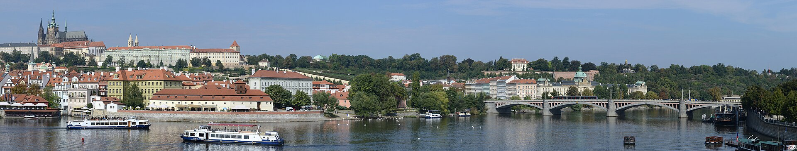
강 하나로 나뉜 두 개의 프라하
설명
왼편 언덕의 프라하성·소지구(말라 스트라나)와 오른편 평지의 구시가가 블타바강을 사이에 두고 마주 봅니다.
왜 중요한가
도시의 형태 자체가 '권력은 위에, 상업은 아래에'라는 중세 질서를 보여줍니다. 지도를 외우기보다 이 구조를 기억하는 것이 훨씬 유용합니다.
어디서 보나
페트린 언덕 전망대, 또는 카를교 구시가 쪽 교탑 위.
출처
Wikimedia Commons (공개 라이선스 이미지)
💡 여행 중 생각해볼 것
왜 왕은 강 건너 높은 언덕에 살고, 상인들은 강 아래 평지에 모였을까?
'개발되지 않은 것'이 결과적으로 도시를 지켰다면, 보존과 발전은 늘 충돌하는 걸까?
오늘날 한국 사회와 비교하면 무엇이 다를까? — 우리 도시의 구도심은 어떤 선택을 했을까?
룩셈부르크 왕조 · 황금시대
후스 시대
합스부르크 초기 · 30년전쟁
합스부르크 절대왕정
민족부흥 · 독립
전체주의의 시대
자유화 · 오늘의 프라하
I
룩셈부르크 왕조 · 황금시대
1346–1437
1346
카를 4세, 보헤미아 왕이자 신성로마제국 황제로
룩셈부르크 가문의 카를 4세가 보헤미아 왕위에 오르고, 이어 신성로마제국 황제로 선출됩니다. 프라하는 하루아침에 지방 도시에서 제국 전체의 수도급 위상을 얻습니다.
1344
성 비투스 대성당 착공
프라하성 안, 고딕 양식의 대성당 건설이 시작됩니다. 완공까지는 이후 거의 600년이 걸립니다(최종 완공 1929년).
1348
카렐대학교 설립
중부 유럽 최초의 대학. 지금도 체코에서 가장 오래되고 명성 높은 대학으로 남아 있습니다.
1357
카를교 착공
블타바강을 잇는 새 돌다리 공사가 시작됩니다. 지금도 쓰이는, 유럽에서 가장 오래된 다리 중 하나입니다.
1378
카를 4세 사망
그의 치세 32년은 체코인들이 지금도 '황금시대'라 부르는 시기로 남습니다. 아들 바츨라프 4세가 뒤를 이었지만 카를 4세만큼의 구심력은 없었습니다.
1378–1419
바츨라프 4세 — 보헤미아 왕 겸 '로마왕'
카를 4세의 뒤를 이어 보헤미아 왕이자 로마왕(황제 후보 지위)이 됩니다. 하지만 통치에 무능하다는 이유로 1400년 선제후들에게 폐위당해 정식 황제 대관은 받지 못합니다. '보헤미아 왕 = 신성로마제국 황제'가 자동으로 이어진 게 아니라는 걸 보여주는 첫 사례예요.
1419–1437
지기스문트 — 룩셈부르크 왕조의 마지막 불꽃
카를 4세의 또 다른 아들 지기스문트가 보헤미아 왕위를 잇고, 1433년 실제로 신성로마제국 황제 대관까지 받습니다(아버지처럼 두 자리를 겸함). 하지만 1437년 후사 없이 사망하며 룩셈부르크 왕조가 완전히 끊깁니다. 이후 보헤미아 왕위와 황제 자리는 서로 다른 사람에게 흩어지게 됩니다 — 애초에 신성로마제국은 세습이 아니라 선제후 7명이 뽑는 선거군주제였고, 보헤미아 왕은 그중 한 표를 쥔 선제후일 뿐이었어요.
II
후스 시대
1402–1436
1402
얀 후스, 베들레헴 채플에서 설교 시작
가톨릭 교회의 부패와 면죄부 판매를 강하게 비판하며 체코어 설교로 대중적 지지를 얻습니다.
1415
얀 후스, 화형당하다
콘스탄츠 공의회에 안전 통행을 약속받고 참석했으나 이단으로 몰려 화형당합니다. 마르틴 루터의 종교개혁보다 약 100년 앞선 사건입니다.
1419–1434
후스전쟁
후스의 처형에 분노한 그의 추종자들이 신성로마제국이 조직한 십자군에 맞서 15년 가까이 항전합니다. 결국 내부 분열로 종식되지만, 체코인들의 정체성에 깊은 흔적을 남깁니다.
III
합스부르크 초기 · 30년전쟁
1515–1648
1515
이중 정략결혼 협약
합스부르크 황제 막시밀리안 1세가 헝가리·보헤미아를 다스리던 야기에우워 가문과 겹사돈을 맺습니다. 합스부르크의 페르디난트는 야기에우워 공주 안나와, 야기에우워의 후계자 루드비크 2세는 합스부르크 공주 마리아와 결혼합니다. "다른 이들은 전쟁을 하게 두고, 너 행복한 오스트리아는 결혼을 하라"는 말 그대로예요.
1526
합스부르크 가문, 보헤미아 왕위 계승
모하치 전투에서 오스만제국에 패배한 헝가리·보헤미아 왕 루드비크 2세가 후퇴 중 익사, 자식 없이 20세로 사망합니다. 11년 전 맺어둔 결혼 협약 덕에 매제였던 합스부르크의 페르디난트 1세가 계승권을 주장했고, 오스만의 위협 앞에서 강력한 보호자가 필요했던 보헤미아 귀족 의회도 그를 왕으로 선출합니다(보헤미아는 세습이 아니라 귀족 의회가 왕을 뽑는 선거군주제였어요). 이때부터 보헤미아는 사실상 합스부르크 제국의 일부가 됩니다.
1583–1612
루돌프 2세, 궁정을 프라하로 옮기다
신성로마제국 황제 루돌프 2세가 빈 대신 프라하를 거처로 삼으며, 프라하는 잠시 다시 제국의 실질적 중심이 됩니다. 천문학자 케플러 등 학자들이 이 시기 프라하에 모였습니다.
1617
페르디난트 2세 즉위 — 약속이 깨지다
독실한 가톨릭 신자인 페르디난트 2세가 보헤미아 왕이 되며, 그동안 신교도 귀족들에게 보장됐던 종교의 자유(1609년 '마제스타트 칙서')를 사실상 무너뜨리기 시작합니다.
1618
프라하 창밖투척 사건
분노한 신교도 귀족들이 프라하성에서 가톨릭 합스부르크 관리들을 창밖으로 던져버리고, 페르디난트 2세를 왕으로 인정하지 않겠다고 선언합니다. 이 사건이 30년 전쟁의 도화선이 됩니다.
1620
백산 전투 — 보헤미아 자치의 종말
프라하 근교에서 벌어진 전투에서 보헤미아 신교도 귀족 연합군이 합스부르크군에 패배합니다. 이후 보헤미아 귀족층은 숙청되고(1621년 지도자 27명이 구시가 광장에서 공개 처형), 독일어가 지배 언어가 되며, 보헤미아는 300년 가까이 자치권 없는 합스부르크의 영토로 남습니다. 보헤미아라는 국지전은 여기서 이미 끝난 셈이지만, 전쟁 자체는 유럽 전체의 패권 다툼으로 번지며 28년을 더 끕니다.
이 시점부터 1918년까지 — 프라하는 거의 300년간 '자기 왕이 없는 도시'였습니다. 정치적 중심은 빈으로 완전히 넘어갔고, 체코어와 체코 문화는 귀족층에서 밀려나 주로 농민 사이에서만 명맥을 이었습니다.
IV
합스부르크 절대왕정
1648–1815
1648
30년전쟁 종식 — 이긴 건가, 진 건가
베스트팔렌 조약으로 전쟁이 끝납니다. 보헤미아라는 국지전에서는 합스부르크가 완승했지만(신교 억압·독일어화가 그대로 유지), 신성로마제국 전체를 더 확실히 틀어쥐려던 애초 목표는 실패합니다 — 제국 안의 수백 개 제후국이 사실상 주권국가로 인정받고, 프랑스가 최대 수혜자로 떠오릅니다. 어느 쪽도 완전히 이겼다고 하기보다, 국력을 소진한 끝에 도달한 타협에 가까웠습니다.
17–18세기
바로크의 시대
정치적 자치는 잃었지만, 이 시기 가톨릭 교회와 귀족들의 후원으로 프라하 곳곳에 화려한 바로크 건축이 들어섭니다. 지금 소지구·구시가에서 보는 성당·궁전 상당수가 이때 지어졌습니다.
1740–1780
마리아 테레지아의 개혁
합스부르크 여제 마리아 테레지아가 행정·교육 개혁을 추진하며 제국 전역(보헤미아 포함)의 통치 체제를 근대화합니다.
V
민족부흥 · 독립
1780–1918
1780s–1900s
체코 민족부흥 운동
독일어에 밀려 있던 체코어와 체코 문화를 되살리려는 지식인 운동이 시작됩니다. 체코어 사전과 문법서가 편찬되고, 체코어 신문·연극·오페라(스메타나)가 부활하며 '체코인'이라는 근대적 민족 정체성이 다시 형성됩니다.
1848
혁명의 해
합스부르크 제국 전역을 휩쓴 자유주의·민족주의 혁명이 프라하에도 번지지만 진압됩니다. 그럼에도 체코 민족운동에 중요한 정치적 자각의 계기가 됩니다.
1914
1차 세계대전 발발
오스트리아-헝가리 제국(보헤미아 포함)이 독일·오스만제국과 함께 동맹국 편에서 참전합니다. 많은 체코인이 오스트리아군으로 징집되지만, 해외의 체코 독립운동(토마시 마사리크 등)이 연합국의 지지를 얻기 시작합니다.
1918. 가을
오스트리아-헝가리, 패전과 함께 해체되다
이탈리아 전선에서 결정적으로 패배하며 전세가 완전히 기울고, 원래도 다민족 제국이었던 오스트리아-헝가리 내부에서 체코인·헝가리인·크로아티아인·폴란드인 등이 앞다퉈 독립을 선언합니다. 다른 패전국(독일)은 영토만 잃은 채 국가는 유지됐지만, 오스트리아-헝가리는 나라 자체가 여러 나라로 쪼개지며 사라집니다.
1918. 10. 28.
체코슬로바키아 독립 선언
제국 해체와 함께 체코슬로바키아가 독립 공화국으로 출범합니다. 초대 대통령은 토마시 마사리크. 룩셈부르크 왕조 이후 572년 만에, 프라하는 다시 자국의 수도가 됩니다.
VI
전체주의의 시대
1938–1989
1938
뮌헨협정 — 강대국들의 거래
영국·프랑스가 전쟁을 피하려 독일·이탈리아와 뮌헨에서 협정을 맺고, 체코슬로바키아 국경 지역(주데텐란트)을 정작 당사국인 체코슬로바키아는 회의에 불러들이지도 않은 채 나치 독일에 넘겨줍니다.
1939
나치 독일, 프라하 무혈 점령
남은 보헤미아·모라비아 지역까지 나치가 점령하며 '보호령'을 선포합니다. 저항 없이 넘어간 덕에 프라하는 폭격을 피했고, 이게 지금 옛 모습 그대로 남은 이유 중 하나이기도 해요.
1942
유인원 작전 — 하이드리히 암살
체코 저항군이 나치 최고위급 인사이자 '홀로코스트 설계자' 중 한 명인 라인하르트 하이드리히를 프라하 시내에서 암살합니다. 나치는 보복으로 인근 리디체 마을을 통째로 지워버리는 학살을 저지릅니다.
1945
프라하 봉기, 그리고 해방
종전 직전 프라하 시민들이 봉기를 일으키고, 소련 붉은군대가 도시에 입성하며 나치 점령이 끝납니다.
1948
공산당 쿠데타
소련의 지원을 받은 체코슬로바키아 공산당이 무혈 쿠데타로 권력을 완전히 장악하며, 이후 40여 년간 소련식 일당독재 체제가 이어집니다.
1968
프라하의 봄
공산당 서기장 둡체크가 언론 자유화 등 '인간의 얼굴을 한 사회주의' 개혁을 추진합니다. 처음엔 놀랍게도 소련이 곧바로 강경 진압하지 않았지만(체코 국민의 거센 비폭력 저항을 의식), 결국 8월 바르샤바조약군 20만 병력과 전차를 동원해 개혁을 짓밟습니다.
1969
얀 팔라흐의 분신, 그리고 '정상화'의 시작
대학생 얀 팔라흐가 소련 점령에 항의하며 바츨라프 광장에서 분신합니다. 같은 해 4월 둡체크는 결국 서기장에서 해임되고 구스타프 후사크로 교체되며, 진압보다 더 길고 조용한 '정상화(normalizace)' 시대가 막을 엽니다.
1969–1989
정상화 — 20년의 조용한 숙청
개혁을 지지했던 공산당원 약 50만 명이 당에서 쫓겨나고, 다수가 직장에서도 밀려나 청소부·보일러공 같은 육체노동으로 좌천됩니다(하벨도 이 시기 양조장에서 일했어요). 언론 검열은 68년 이전보다 더 강화되고 국경도 다시 봉쇄됩니다. 탱크로 밀고 들어온 순간보다, 이 조용한 20년이 더 많은 사람의 삶을 짓눌렀습니다.
1977
77헌장
극작가 바츨라프 하벨을 포함한 지식인들이 정권의 인권 탄압을 비판하는 선언문 '77헌장'을 발표합니다. 하벨은 이 활동으로 여러 차례 투옥되지만, 정상화 시대에 억눌렸던 이 인적 네트워크가 훗날 벨벳혁명의 주축이 됩니다.
1968년엔 진압됐는데, 89년엔 왜 실패했을까
고르바초프의 소련이 더 이상 위성국에 군사 개입하지 않겠다는 '시나트라 독트린'을 사실상 선언 — 든든한 뒷배가 사라짐
폴란드(6월), 헝가리(5월), 동독 베를린 장벽 붕괴(11월 9일, 겨우 8일 전)까지 이미 동유럽 전체가 무너지는 흐름 속
정권 지도부 스스로도 이미 자신감을 잃어, 유혈 진압 논의는 있었지만 실행에 옮기지 못함
VII
자유화 · 오늘의 프라하
1989–오늘
1989. 11. 17.
벨벳혁명
대학생 시위를 경찰이 강경 진압한 것을 계기로 프라하 전역에서 대규모 반정부 시위가 이어집니다. 단 열흘 만에 공산 정권이 붕괴하고, 극작가 바츨라프 하벨이 그해 말 대통령이 됩니다. 총 한 발 쏘지 않았다고 해서 '벨벳혁명'이라 불려요.
1993
벨벳 이혼
체코와 슬로바키아가 다시 갈등 없이 두 나라로 평화롭게 갈라섭니다. 지금의 '체코'가 여기서 탄생했어요.
1999 · 2004
나토·유럽연합 가입
냉전 시절 소련 편이었던 체코가 나토(1999)와 유럽연합(2004)에 차례로 가입하며, 서유럽 체제로 완전히 통합됩니다.
오늘
다시, 유럽의 중심
카를 4세 시절 신성로마제국의 수도였던 도시가, 굴곡진 680년을 지나 이제는 유럽에서 가장 많은 관광객이 찾는 도시 중 하나로 돌아왔습니다. 여러분이 걷게 될 골목들이 그 모든 시간을 품고 있는 거예요.
타임라인에 담지 못한, 걷다가 마주칠 만한 잡학과 이야깃거리들입니다.
세계에서 거의 유일한, 입체주의로 지은 집
피카소의 그림이 건물로 지어진 도시가 있습니다. 20세기 초 유럽 화단을 흔든 입체주의(큐비즘)를 실제 건축으로 옮긴 시도는 거의 전부 실패했거나 도면에 머물렀는데, 프라하에서는 지어졌습니다. 구시가의 '검은 성모의 집'(1912)이 대표적이고, 비셰흐라드 아래에는 창틀과 난간까지 다면체로 깎은 아파트가 남아 있습니다. 심지어 큐비즘 가구와 커피잔까지 만들었습니다. 도시 전체가 이미 여러 시대의 양식으로 층층이 쌓여 있었기에, 한 겹 더 얹는 실험이 이상하게 여겨지지 않았던 것입니다. (양식별 구분법은 04 건축 읽기 탭에서 자세히 다룹니다.)
'창밖으로 던지기'가 역사 용어가 된 사연
'프라하 창밖투척'이라는 표현은 사실 역사에서 두 번(1419년 후스파들이 시청 관리들을, 1618년 신교도 귀족들이 합스부르크 관리들을) 일어나면서, 지금은 아예 정치적 반란을 가리키는 일반명사(defenestration)로 서양 역사학에서 쓰입니다. 실제 창문은 프라하성 2담(구본 궁) 높은 창에서 볼 수 있어요.
카프카의 도시
프란츠 카프카(1883–1924)는 평생 이 도시를 거의 떠나지 않고 살았습니다. 당시 프라하에는 독일어를 쓰는 유대인 공동체가 따로 있었는데, 카프카도 이 공동체 출신이어서 독일어로 작품을 씁니다. 구시가 근처에 태어난 집과 근무했던 건물이 남아 있고, 구시가에는 데이비드 체르니의 회전하는 얼굴 조각상(카프카 헤드)도 있습니다 — 그의 소설 속 불안하고 미로적인 세계관이 이 도시의 좌우대칭 안 맞는 스카이라인과 묘하게 잘 어울립니다.
유대인 지구(요세포프)와 골렘 전설
프라하는 중세부터 유럽에서 가장 오래되고 큰 유대인 공동체 중 하나를 품고 있었습니다. 골렘 전설(랍비가 진흙으로 만든 거인이 유대인을 지켜준다는 이야기)도 이 동네에서 나왔고, 물리학자 아인슈타인도 1911~1912년 이 지구와 가까운 대학에서 직을 맡았습니다. 아이러니하게도 나치가 이 지역을 '멸종된 인종의 박물관'으로 만들려고 보존령을 내린 덕에 유럽에서 가장 온전한 유대교 회당·묘지 유적이 오늘날까지 남아 있습니다. 정작 프라하의 유대인 대부분은 홀로코스트로 희생되었습니다.
500년째 문을 여는 맥주홀, 그리고 '맥주 도장'
구시가의 우 플레쿠(U Fleku)는 1499년부터 술을 팔고 있습니다. 조선 성종 때 문을 연 가게가 지금도 영업 중인 셈입니다. 이런 오래된 맥주홀에서는 종업원이 주문을 받지 않고 그냥 새 잔을 놓고 갑니다. 잔이 비어갈 때쯤 말없이 다음 잔이 오고, 종이 쪽지에 선을 그어 몇 잔인지 셉니다. 그만 마시겠다면 잔 위에 컵받침을 덮거나 손을 가로로 젓습니다. 이걸 모르면 계속 나오는 맥주에 당황하게 되는데, 알고 나면 이 방식이 꽤 편합니다.
존 레논은 프라하에 온 적이 없다
소지구 담벼락이 존 레논의 얼굴로 덮여 있지만, 그는 이 도시에 발을 들인 적이 없습니다. 1980년 그가 총에 맞아 죽은 뒤, 프라하 청년들이 이 벽에 그의 얼굴과 가사를 그렸습니다. 서구의 록 음악은 당시 '불건전한 사상'이었으니, 그건 추모가 아니라 암호였습니다. 경찰이 밤새 덧칠하면 다음 밤 다시 그려졌고, 이 반복이 10년 가까이 이어졌습니다. 정권은 끝내 이 벽 하나를 이기지 못했습니다. 지금은 관광객의 낙서로 덮여 그 층이 안 보이지만, 벽 자체가 아니라 '지워도 다시 나타났다'는 사실이 이 벽의 내용입니다.
왜 체코 맥주잔에는 거품이 손가락 두 개만큼 있나
한국에서 거품 많은 생맥주를 받으면 손해 본 기분이 들지만, 체코에서는 반대입니다. 정통 필스너는 거품이 3~4cm 올라온 상태가 완성형이고, 여기엔 이름까지 있습니다 — hladinka. 거품이 뚜껑처럼 공기를 막아 탄산과 향을 붙잡아 두기 때문입니다. 거품이 거의 없는 잔은 '김빠진 것'으로 취급받습니다. 아예 거품만 가득 담아 주는 mlíko('우유')라는 방식도 있는데, 현지인은 마지막 한 잔으로 시켜 디저트처럼 마십니다. 맥주홀에서 한 번 시켜 보면 종업원이 반갑게 웃어 줍니다.
SECTION 02
프라하를 설명하는 키워드 10개
이 열 단어를 알고 걷는 사람과 모르고 걷는 사람은 완전히 다른 도시를 봅니다. 어려운 말은 모두 쉽게 풀어 두었습니다.
01
보헤미아
Bohemia · Čechy
지금 체코 서부를 가리키는 옛 이름이자 왕국의 이름. '보헤미안'이 자유로운 예술가를 뜻하게 된 건 훗날 프랑스에서 생긴 이미지일 뿐, 원래는 이 왕국의 주민을 뜻하는 말입니다. 프라하는 이 왕국의 수도였습니다.
02
카를 4세
Karel IV.
보헤미아 왕이면서 신성로마제국 황제를 겸한 인물. 프라하에 대성당·대학·돌다리를 안겨준 '황금시대'의 설계자입니다. 체코인들이 역사상 가장 존경하는 통치자이며, 도시의 주요 랜드마크는 대부분 그의 이름을 답니다.
03
신성로마제국
Holy Roman Empire
중세 독일어권을 중심으로 수백 개 제후국이 느슨하게 묶인 연합체. 중요한 건 황제가 세습이 아니라 선거로 뽑혔다는 점입니다. 투표권을 가진 제후 7명을 '선제후'라 했고, 보헤미아 왕도 그 한 표를 쥔 유력자였습니다.
04
얀 후스
Jan Hus
교회의 부패를 비판하다 화형당한 신학자. 루터의 종교개혁보다 약 100년 앞섰습니다. 체코인에게 그는 종교 인물을 넘어 '외세와 권위에 맞선 양심'의 상징이며, 그래서 그의 동상이 선 구시가 광장은 늘 시민 집회의 무대가 됩니다.
05
합스부르크
Habsburg
빈을 근거지로 유럽 절반을 다스린 가문. 전쟁보다 결혼으로 영토를 넓혔습니다. 보헤미아는 약 300년간 이 가문의 지배 아래 있었고, 프라하의 화려한 바로크 건축과 독일어화된 상류층 문화가 그 결과물입니다.
06
백산 전투
Bílá hora
프라하 근교에서 벌어진 짧은 전투이지만, 체코 역사의 분기점입니다. 신교도 귀족 연합이 패배한 뒤 지도자들은 처형되고, 독일어가 지배 언어가 되며, 보헤미아의 자치가 사실상 끝났습니다. 이 한 번의 패배가 300년을 결정했습니다.
07
창밖투척
Defenestrace
말 그대로 '사람을 창밖으로 던지는 것'. 프라하에서 두 번(후스파, 그리고 신교도 귀족들) 일어나면서, 서양 역사학에서 정치적 반란을 뜻하는 일반명사가 되었습니다. 프라하성 구 왕궁에서 그 창을 실제로 볼 수 있습니다.
08
민족부흥
Národní obrození
독일어에 밀려 농민의 말로 전락했던 체코어를 되살린 19세기 지식인 운동. 사전과 문법서를 만들고, 체코어 신문·연극·오페라를 세웠습니다. 국립극장과 스메타나의 음악이 이 운동의 결실이며, 그래서 체코인에게 '언어'는 곧 독립입니다.
09
정상화
Normalizace
프라하의 봄이 진압된 뒤 20년간 이어진 조용한 숙청기. 개혁을 지지한 당원 수십만 명이 쫓겨나 청소부·보일러공으로 좌천됐습니다(하벨도 양조장에서 일했습니다). 탱크보다 이 20년의 침묵이 사람들의 삶을 더 깊이 짓눌렀습니다.
10
벨벳혁명
Sametová revoluce
단 열흘 만에 공산 정권을 무너뜨린 1989년의 시민혁명. 총 한 발 쏘지 않아 '벨벳(부드러운)'이라 불립니다. 극작가 하벨이 대통령이 되었고, 이 도시의 시민들이 '조용한 방식으로 이겼다'는 자부심의 근거가 되었습니다.
키워드를 꿰는 실열 단어의 절반이 '눌렸던 기억'이고 나머지 절반이 '되찾은 이야기'입니다. 프라하는 승리의 도시가 아니라 버텨낸 도시입니다.
SECTION 03
거리에서 건축 읽는 법
관광지 이름을 외우는 대신, 건물을 읽는 눈을 가지세요. 프라하에서는 한 골목에서 네다섯 시대가 동시에 나타납니다. 아래 다섯 가지만 구분되면, 지도 없이도 도시의 나이를 읽을 수 있습니다.
네 가지 양식, 한 장으로 구분하기
설명
왼쪽부터 고딕·르네상스·바로크·아르누보의 전형적인 실루엣을 비교한 도해입니다.
왜 중요한가
양식의 차이는 취향이 아니라 그 시대가 무엇을 믿고 무엇을 과시하려 했는지의 결과입니다. 형태를 알면 동기가 읽힙니다.
어디서 보나
구시가 광장에서 출발해 첼레트나 거리를 걸으면 네 양식이 순서 없이 뒤섞여 나타납니다.
출처
본 아카이브 자체 제작 도해
💡 여행 중 생각해볼 것
왜 어떤 시대는 뾰족하게 높이 올리고, 어떤 시대는 둥글고 화려하게 꾸몄을까?
당시 사람들은 왜 이런 선택을 했을까 — 신앙, 권력, 아니면 두려움 때문일까?
오늘날 한국 사회와 비교하면 무엇이 다를까? — 우리 시대의 건물은 무엇을 과시하고 있을까?
고딕
13–15세기성 비투스 대성당 · 카를교
특징
모든 선이 위를 향합니다. 뾰족한 아치, 하늘을 찌르는 첨탑, 벽 대신 커다란 스테인드글라스. 무게를 건물 밖 버팀벽으로 넘겨서 벽을 얇게 만들고, 그 자리에 빛을 넣은 것이 핵심 기술입니다.
왜 생겼는가
글을 읽지 못하는 신자들에게 '천국'을 감각으로 체험시켜야 했습니다. 어두운 돌 상자 안으로 색색의 빛이 쏟아지는 경험은 당시 사람들에게 초자연 그 자체였습니다. 동시에 도시의 부와 신심을 성당 높이로 겨루던 경쟁의 산물이기도 합니다.
어디를 봐야 하나 — 성 비투스 대성당 안에서 바닥이 아니라 천장의 갈비뼈 같은 골조를 보세요. 그 선들이 어떻게 무게를 옆으로 흘려보내는지 눈으로 따라갈 수 있습니다. 카를교의 교탑도 고딕입니다.
시각 자료 · 설명으로 대체
성 비투스 대성당의 고딕 첨탑
프라하 성 안, 하늘을 찌르듯 솟은 뾰족한 첨탑과 거대한 스테인드글라스 창. 두꺼운 벽 대신 얇은 벽과 버팀벽이 무게를 옮겨 받치는 고딕 특유의 구조가 외관에 그대로 드러납니다.
무엇을 봐야 하나 — 첨탑이 위로 뻗는 수직선과, 벽을 가득 채운 스테인드글라스의 비례를 함께 보세요. 벽이 얇아질수록 창이 커진다는 고딕의 논리가 여기서 완성됩니다.
위로 뻗는 고딕, 성 비투스 대성당
설명
프라하 성 경내에 있는 성 비투스 대성당의 고딕 첨탑과 파사드입니다.
왜 중요한가
벽을 얇게 하고 그 자리에 빛을 넣는 고딕의 구조 원리가 외관에 그대로 드러난 대표 사례입니다.
어디서 보나
프라하 성 경내. 카를교 교탑에서도 같은 양식을 볼 수 있습니다.
출처
Wikimedia Commons (공개 라이선스 이미지)
르네상스
16세기스그라피토 장식 건물
특징
고딕이 수직이라면 르네상스는 수평입니다. 좌우가 정확히 대칭이고, 창문 간격이 일정하며, 삼각형 지붕 장식(페디먼트)이 얹힙니다. 프라하에서는 벽에 회반죽을 긁어 무늬를 낸 스그라피토 기법이 특히 많습니다.
왜 생겼는가
이탈리아에서 시작된 '고대 그리스·로마의 질서를 되찾자'는 흐름이 알프스를 넘어왔습니다. 신 중심에서 인간 중심으로 무게가 옮겨간 시대였고, 그래서 건축도 신비로움보다 비례와 이성을 앞세웁니다.
어디를 봐야 하나 — 건물 벽면에 다이아몬드 무늬나 인물화가 '그려진 게 아니라 긁혀 있는' 곳을 찾아보세요. 손으로 만지면 미세한 요철이 느껴지는 그것이 스그라피토입니다.
시각 자료 · 설명으로 대체
'미누타의 집', 스그라피토로 뒤덮인 파사드
구시가 광장 인근 '미누타의 집' 외벽 전체가 다이아몬드 무늬와 성서·신화 장면으로 빽빽하게 채워져 있습니다. 좌우 대칭의 창 배열과 함께, 르네상스 특유의 절제된 질서가 장식 아래 그대로 남아 있습니다.
무엇을 봐야 하나 — 무늬가 그려진 게 아니라 긁혀 있다는 점을 가까이서 확인해 보세요. 창문 간격이 일정한 것도 함께 보면 좌우대칭의 규칙이 보입니다.
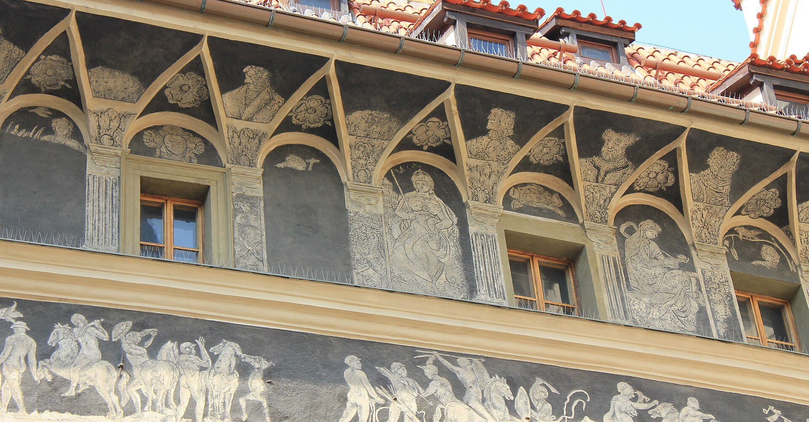
벽 전체를 덮은 스그라피토
설명
구시가 광장 근처 르네상스 건물의 스그라피토 파사드입니다.
왜 중요한가
신 중심에서 인간 중심으로 옮겨간 시대의 비례와 이성이, 이탈리아에서 건너온 기법으로 벽면에 그대로 남아 있습니다.
어디서 보나
구시가 광장 주변 골목.
출처
Wikimedia Commons (공개 라이선스 이미지)
바로크
17–18세기성 니콜라스 교회 · 소지구
특징
직선이 사라지고 벽이 물결처럼 휩니다. 금박, 구름 위를 나는 천사 조각, 천장을 뚫고 하늘이 열린 듯한 착시 그림. 조명과 시선까지 계산해 사람을 압도하도록 설계된 '연극적 건축'입니다.
왜 생겼는가
여기가 프라하에서 가장 중요한 대목입니다. 백산 전투에서 신교도가 패한 뒤, 승자인 가톨릭 합스부르크는 이 도시를 다시 가톨릭으로 되돌려야 했습니다. 설교보다 효과적인 수단이 압도적인 아름다움이었습니다. 즉 프라하의 바로크는 취향이 아니라 패배한 도시에 새겨진 승자의 언어입니다.
어디를 봐야 하나 — 소지구 성 니콜라스 교회에서 천장을 올려다보세요. 평평한 천장인데 하늘이 무한히 열린 것처럼 보입니다. 이 '속임수'가 목적이었습니다. 그리고 이 화려함이 자치를 잃은 대가로 얻은 것임을 함께 떠올려 보세요.
시각 자료 · 설명으로 대체
성 니콜라스 성당의 바로크 돔 프레스코
천장 가득 그려진 프레스코화가 실제로는 평평한 천장 위에서, 마치 돔이 하늘로 무한히 열린 듯한 착시를 만듭니다. 소지구 성 니콜라스 교회 실내의 대표적인 장면입니다.
무엇을 봐야 하나 — 천장의 곡면이 실제 건축 구조인지 그림으로 그린 착시인지 구분해 보세요. 빛이 어디서 들어와 어디로 시선을 끄는지도 함께 보면 '연극적 건축'의 설계 의도가 읽힙니다.
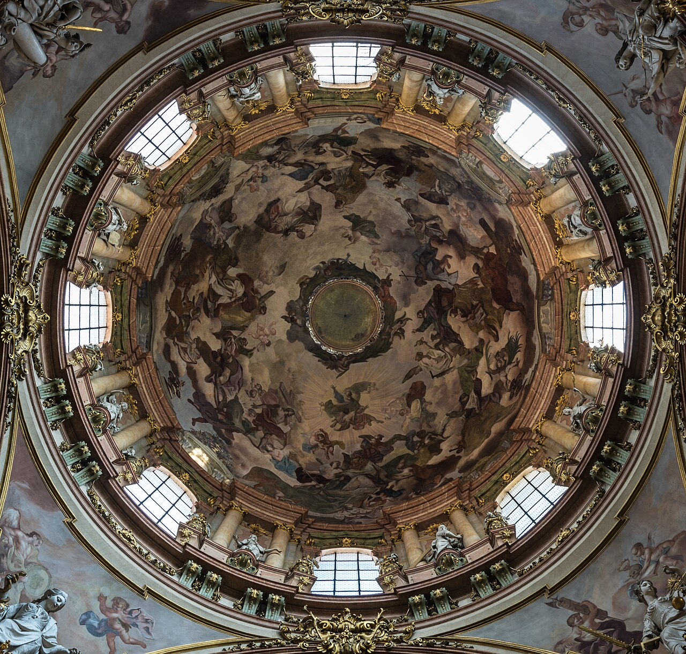
하늘이 열린 것처럼 보이는 착시, 바로크
설명
소지구 성 니콜라스 성당의 돔 내부 프레스코화입니다.
왜 중요한가
백산 전투 이후 가톨릭이 압도적 아름다움으로 신앙을 되돌리려 한 '승자의 언어'가 그대로 남은 실내입니다.
어디서 보나
소지구(말라 스트라나) 성 니콜라스 성당 내부.
출처
Wikimedia Commons (공개 라이선스 이미지)
아르누보
1890–1910시민회관 · 무하
특징
식물 줄기처럼 휘는 곡선, 여성의 긴 머리카락 문양, 유리와 철의 적극적 사용. 딱딱한 역사 양식 대신 자연에서 형태를 가져왔습니다. 건물·가구·포스터·글자체를 하나의 디자인으로 통일하려 한 점이 특징입니다.
왜 생겼는가
기계로 찍어낸 물건이 넘치던 산업화 시대에 대한 반발이었습니다. 프라하에서는 여기에 하나가 더 붙습니다 — 마침 민족부흥 운동기와 겹쳐, 새 양식이 '체코인의 것'을 표현하는 수단이 되었습니다. 그래서 시민회관은 단순한 공연장이 아니라 민족적 선언입니다.
어디를 봐야 하나 — 시민회관(오베츠니 둠) 내부, 체코를 대표하는 화가 알폰스 무하가 직접 그린 방. 그가 파리에서 포스터로 이름을 떨친 뒤 고향으로 돌아와 남긴 작업입니다. 바깥에서 사진만 찍고 지나치는 사람이 대다수입니다.
시각 자료 · 설명으로 대체
민족적 선언, 시민회관
휘어지는 곡선과 장식적 조각, 유리와 철을 적극적으로 쓴 시민회관(오베츠니 둠)의 외관입니다. 딱딱한 역사 양식 대신 자연을 닮은 형태를 앞세운 아르누보의 전형입니다.
무엇을 봐야 하나 — 파사드의 곡선과 인물 장식을 보세요. 내부 무하의 방까지 들어가면 이 건물이 왜 단순한 공연장이 아니라 민족적 선언인지 실감됩니다.
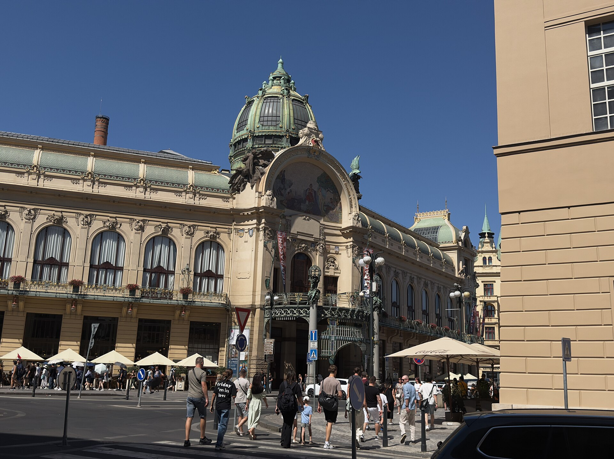
체코인의 것을 표현하는 수단
설명
프라하 시민회관(오베츠니 둠)의 아르누보 파사드입니다.
왜 중요한가
산업화에 대한 반발과 민족부흥 운동이 겹쳐, 새 양식이 '체코인의 것'을 표현하는 수단이 된 대표 사례입니다.
어디서 보나
구시가 광장 인근 공화국 광장.
출처
Wikimedia Commons (공개 라이선스 이미지)
큐비즘 건축
1910년대검은 성모의 집
특징
벽면과 창틀, 난간이 결정체처럼 각지게 꺾입니다. 곡선을 다루던 아르누보 바로 다음에, 정반대로 모든 것을 다면체로 깎아낸 실험입니다.
왜 생겼는가
피카소의 입체주의는 회화 운동이었고, 대부분의 나라에서 건축으로는 넘어오지 못했습니다. 그런데 당시 프라하의 젊은 건축가들은 이 실험을 실제 건물로 지어버렸습니다. 세계 미술사에서 프라하만이 가진 독점적 유산인 셈입니다.
어디를 봐야 하나 — 구시가 '검은 성모의 집' 외벽의 각진 창 장식. 그리고 안쪽 카페의 계단 난간까지 같은 각도로 깎여 있는지 확인해 보세요. 대부분의 여행자는 이 건물 앞을 그냥 지나갑니다.
시각 자료 · 설명으로 대체
다면체로 깎인 '검은 성모의 집'
벽면과 창틀, 발코니 난간까지 결정체처럼 각지게 꺾인 외관입니다. 곧게 뻗은 아르누보의 곡선과 정반대로, 모든 표면을 다면체로 깎아낸 실험적인 건물입니다.
무엇을 봐야 하나 — 창 위 장식과 발코니 난간이 같은 각도로 반복되는지 확인해 보세요. 회화 운동이던 입체주의가 실제 건물로 지어진, 세계에서 드문 사례입니다.
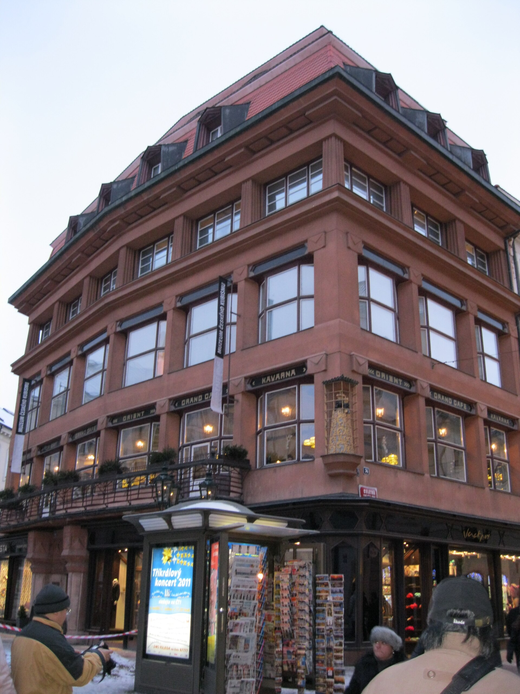
회화 운동이 건물이 된 유일한 도시
설명
구시가 '검은 성모의 집'의 큐비즘 외관입니다.
왜 중요한가
세계 미술사에서 프라하만이 가진 독점적 유산인 큐비즘 건축의 대표 사례입니다.
어디서 보나
구시가 첼레트나 거리. 건물 안에는 큐비즘 박물관과 카페가 있습니다.
출처
Wikimedia Commons (공개 라이선스 이미지)
SECTION 04
예술과 음악 — 왜 지금도 중요한가
프라하가 배출한 인물들에게는 공통점이 하나 있습니다. 강대국에 눌린 작은 나라에서, 예술이 곧 정체성을 지키는 수단이었다는 점입니다. 이름을 외우기보다 그 맥락을 기억하세요.
음악 — 언어를 잃은 민족이 소리로 말하다
베드리흐 스메타나
작곡가 · 체코 민족음악의 아버지
독일어가 지배하던 시절, 체코의 강과 전설과 역사를 음악으로 그렸습니다. 연작 교향시 '나의 조국' 중 '블타바(몰다우)'는 프라하를 흐르는 그 강의 물줄기를 음으로 따라간 곡입니다.
왜 지금도 중요한가 — 그는 음악을 민족의 언어로 만들었습니다. 지금도 '나의 조국'은 프라하 봄 음악제의 개막곡으로 연주되며, 체코인들은 이 곡에 기립합니다. 강을 볼 때 이 선율을 떠올리면 풍경이 달라집니다.
안토닌 드보르자크
작곡가 · '신세계로부터'
보헤미아 시골의 민속 리듬을 정통 교향곡 안으로 끌어들였습니다. 미국에 초빙되어 쓴 교향곡 '신세계로부터'는 고향을 향한 그리움과 신대륙의 인상이 겹친 작품입니다.
왜 지금도 중요한가 — 그는 '변방의 민속음악'이 세계 무대의 언어가 될 수 있음을 증명했습니다. 작은 나라의 지역성이 오히려 보편성이 된다는 사례로, 오늘날 문화 정체성 논의에서도 반복 인용됩니다.
모차르트와 프라하
'돈 조반니' 초연의 도시
빈에서 냉담한 반응을 받던 시절, 모차르트는 프라하에서 열광적인 환대를 받았습니다. 그의 오페라 '돈 조반니'가 초연된 곳이 바로 이 도시의 극장입니다. "내 프라하 사람들은 나를 이해한다"는 말이 전해집니다.
왜 지금도 중요한가 — 이 일화는 프라하가 단순한 지방 도시가 아니라 수준 높은 관객층을 가진 음악 도시였음을 보여줍니다. 초연 극장은 지금도 공연 중이며, 여행자도 표를 살 수 있습니다.
문학 — 불안을 언어로 만든 도시
프란츠 카프카
소설가 · 독일어를 쓴 프라하 유대인
평생 이 도시를 거의 떠나지 않았습니다. 체코인 사이에 살면서 독일어로 글을 쓴 유대인이라는 삼중의 소수자 위치가 그의 문학을 만들었습니다. 이유를 알 수 없는 재판, 벗어날 수 없는 관료제가 그의 세계입니다.
왜 지금도 중요한가 — '카프카적(Kafkaesque)'이라는 형용사가 생길 만큼, 그는 거대한 시스템 앞에서 개인이 느끼는 무력감을 최초로 정확히 묘사했습니다. 관공서에서 서류를 반복 제출한 경험이 있는 사람은 이미 그의 독자입니다.
바츨라프 하벨
극작가 → 대통령
부조리극을 쓰던 극작가였고, 77헌장으로 여러 차례 투옥됐으며, 정상화 시기에는 양조장에서 일했습니다. 그리고 벨벳혁명 끝에 대통령이 되었습니다.
왜 지금도 중요한가 — 그가 남긴 '진실 안에서 살기'라는 개념은, 거짓 체제에 협조하지 않는 일상의 작은 선택이 결국 정권을 무너뜨린다는 통찰입니다. 총이 아니라 말로 이긴 혁명의 이론적 근거였습니다.
알폰스 무하
화가 · 아르누보의 얼굴
파리에서 연극 포스터로 유럽 최고의 상업 디자이너가 되었지만, 말년에는 고향으로 돌아와 슬라브 민족의 역사를 그린 대작에 몰두했습니다. 시민회관 내부도 그의 작업입니다.
왜 지금도 중요한가 — 그의 곡선과 여성상은 오늘날 광고·일러스트·게임 아트의 문법에 그대로 남아 있습니다. 동시에 상업 디자이너가 민족의 화가로 돌아간 궤적 자체가 이 도시의 이야기입니다.
SECTION 05
박물관과 미술관을 보는 법
프라하는 '거대한 미술관 한 곳'이 있는 도시가 아니라, 도시 자체가 전시장인 곳입니다. 그래서 관람 전략이 다릅니다. 무엇을 보러 갈지가 아니라, 무엇을 알아채러 갈지를 정하고 들어가세요.
먼저 솔직한 조언 하나. 프라하성 안에서 대부분의 여행자는 성 비투스 대성당에 들어가 천장을 한 바퀴 둘러보고 나옵니다. 그런데 이 성당에서 정말 봐야 할 것은 건축이 아닙니다. 남쪽 측랑에 있는 무하가 디자인한 스테인드글라스입니다. 600년에 걸쳐 지어진 이 성당의 마지막 장식이 20세기 아르누보 화가의 손에서 나왔다는 사실 — 그 시간의 겹침이 프라하의 정체입니다.
프라하성 — 궁전보다 '창문' 하나
프라하성 구 왕궁(Old Royal Palace)
화려한 방을 기대하고 들어가면 실망할 수 있습니다. 이곳의 하이라이트는 장식이 아니라 창문입니다. 신교도 귀족들이 합스부르크 관리들을 밖으로 던진 바로 그 창이 남아 있습니다. 30년 전쟁이라는 유럽 최대의 전쟁이 이 창에서 시작됐습니다. 창턱에 서서 아래를 내려다보면, 역사가 얼마나 우발적으로 시작되는지 실감하게 됩니다.
유대인 지구 — 회당보다 '묘지의 밀도'
요세포프, 구 유대인 묘지
묘비가 서로 기대어 빽빽하게 겹쳐 있는 것을 보게 됩니다. 이유는 단순하고 무겁습니다. 유대인은 지정된 구역 밖에 묻힐 수 없었고, 땅이 부족해지자 흙을 덮고 그 위에 다시 묻었습니다. 그렇게 열 겹 이상 쌓였습니다. 차별의 역사가 지형 그 자체로 남은 장소입니다. 화려한 유물이 없어도 이곳이 프라하에서 가장 강렬한 공간인 이유입니다.
무하 미술관 — 포스터를 '광고'로 보기
무하 미술관 (Mucha Museum)
전시된 작품 대부분이 원래 담배·비누·연극 광고였다는 사실을 염두에 두고 보세요. 그러면 질문이 바뀝니다. '아름답다'가 아니라 '왜 이 시대 사람들은 상품을 이렇게까지 아름답게 포장하기 시작했을까'. 대량생산과 광고가 태어난 순간의 기록으로 읽을 때, 이 미술관은 훨씬 흥미로워집니다.
공산주의 박물관 — 전시물보다 '생활의 디테일'
공산주의 박물관 (Museum of Communism)
선전 포스터나 동상보다, 재현된 식료품점 진열대와 교실을 오래 보세요. 텅 빈 선반, 정해진 답을 가르치는 교과서. 거대한 이념이 실제로는 '무엇을 살 수 있는가'라는 일상의 수준에서 사람들을 짓눌렀다는 걸 알게 됩니다. 타임라인의 '정상화' 20년이 여기서 구체적인 삶으로 바뀝니다.
시민회관 — 로비만 보고 나오지 말 것
오베츠니 둠 (Obecní dům)
외관 사진만 찍고 지나치는 대표적인 장소입니다. 내부 가이드 투어나 공연 관람으로 들어가면 무하가 그린 스메타나 홀을 볼 수 있습니다. 덧붙여 이 건물은 체코슬로바키아 독립이 선언된 장소이기도 합니다. 벽화 한 점이 곧 독립 선언의 배경막이었던 셈입니다.
천문시계 — 인형쇼가 아니라 '세계관'
구시가 광장 시청 탑
정시 인형쇼는 사실 1분이면 끝나고, 솔직히 다소 소박합니다. 진짜 볼 것은 시계판입니다. 지구를 중심에 두고 태양과 달이 도는 중세의 우주관이 그려져 있고, 시간을 세 가지 방식(현대 시간·옛 보헤미아 시간·천문 시간)으로 동시에 표시합니다. 이것은 시계가 아니라 당시 사람들이 믿은 우주의 모형입니다.
관람 원칙 — 프라하에서는 하루에 실내 관람지를 두 곳 이상 넣지 마세요. 이 도시의 최고 전시물은 실내가 아니라 골목이고, 그것을 볼 시간을 남겨두는 것이 가장 남는 선택입니다.
SECTION 06
현지 문화와 예절
체코인은 처음엔 무표정하지만 무례한 것이 아닙니다. 과장된 친절을 신뢰하지 않는 문화일 뿐, 몇 마디와 몇 가지 규칙만 지키면 태도가 확연히 달라집니다.
가장 실용적인 조언부터. 가게에 들어가고 나올 때 "도브리 덴(Dobrý den, 안녕하세요)"과 "데쿠유(Děkuji, 감사합니다)" 두 마디만 쓰세요. 체코는 오랫동안 독일어와 러시아어를 강요당한 역사가 있어, 자국어를 존중받는 것에 특히 민감합니다. 발음이 어설퍼도 시도 자체가 신호가 됩니다.
상황
이렇게 하세요
가게 입장·퇴장
들어가며 "도브리 덴", 나가며 "나스흘레다노우". 조용히 들어가 아무 말 없이 물건만 고르는 것은 다소 무례하게 여겨집니다.
선술집(호스포다) 자리
빈자리에 합석하는 문화가 있습니다. "여기 앉아도 되나요?"만 눈짓으로 물으면 대개 흔쾌히 허락합니다. 관광 술집보다 이런 곳이 훨씬 저렴하고 맛있습니다.
맥주 주문
보통 잔 크기(0.5L / 0.3L)로 주문합니다. 종류를 모르면 "필스너"라고 해도 무난합니다. 잔이 비면 직원이 묻지 않고 새로 가져오는 곳도 있으니, 그만 마시려면 명확히 거절하세요.
건배
"나 즈드라비(Na zdraví, 건강을 위해)". 잔을 부딪칠 때 상대의 눈을 봐야 합니다. 눈을 피하면 무례로 여겨집니다. 부딪친 뒤 잔을 테이블에 한 번 내려놓는 관습도 있습니다.
식당 계산
테이블에서 직원을 불러 계산합니다. 팁은 대략 10% 선에서 금액을 올려 말하는 방식이 일반적입니다("300 코루나로 해 주세요"). 계산서에 서비스료가 포함됐는지 먼저 확인하세요.
환전
체코는 유로가 아니라 코루나(CZK)를 씁니다. 관광지 길거리 환전소는 환율이 매우 불리하거나 수수료 함정이 있습니다. 카드 결제나 은행 ATM을 쓰는 편이 안전합니다.
대중교통 표
개찰구가 없습니다. 반드시 표를 사서 탑승 전 노란 기계에 각인하세요. 각인하지 않은 표는 무효이며, 사복 검표원의 벌금 단속이 잦습니다.
에스컬레이터
지하철 에스컬레이터가 매우 길고 빠릅니다. 왼쪽은 걸어 올라가는 사람의 길이니 오른쪽에 서세요.
교회 예절
성당은 예배 공간입니다. 어깨와 무릎을 가리고, 미사 중에는 촬영을 멈추세요. 모자는 벗습니다. 유대교 회당에서는 남성이 머리를 가리도록 요구되기도 합니다.
공연 관람
단정한 옷차림이 예의입니다. 교향곡은 악장 사이에 박수를 치지 않고 전곡이 끝난 뒤 칩니다. 늦게 도착하면 첫 곡이 끝날 때까지 입장이 제한됩니다.
카를교 시간대
낮에는 인파로 걷기 어렵습니다. 이른 아침(7시 전)이나 밤에 건너면 전혀 다른 다리를 만납니다. 소지구 쪽에서 구시가 방향으로 건너는 것이 조명상 유리합니다.
소매치기 주의
구시가 광장, 카를교, 지하철 A선이 주요 구역입니다. 폭력 범죄는 드물지만 소매치기는 흔하니 가방을 앞으로 두세요.
택시
길에서 잡는 택시의 바가지 사례가 많습니다. 호출 앱이나 호텔을 통한 배차를 쓰세요.
대화 주제
소련 점령기와 공산 시절은 여전히 민감합니다. 먼저 묻지 않는 편이 좋고, 상대가 이야기를 꺼내면 진지하게 들으세요. 체코를 '동유럽'보다 '중부 유럽'이라 부르는 것을 선호합니다.
이 도시에서 꼭 먹어볼 음식
FOOD 01
스비치코바
Svíčková na smetaně
크림소스에 재운 소고기에 크네들리키(빵 덤플링)와 크랜베리를 곁들입니다. 체코 가정식 중 가장 '명절스러운' 한 그릇으로, 관광지 식당보다 동네 레스토랑에서 더 맛있게 냅니다.
FOOD 02
베프르젤로
Vepřo-knedlo-zelo
돼지고기 구이에 절인 양배추, 크네들리키를 곁들인 '국민 가정식'입니다. 어느 선술집(호스포다) 메뉴에나 있어, 뭘 먹을지 모를 때 무난한 선택입니다.
FOOD 03
브람보라크
Bramborák
마늘과 마저럼을 넣은 감자전. 시장·야시장에서 즉석으로 부쳐 파는 서민 간식으로, 맥주 안주로도 잘 어울립니다.
FOOD 04
흘레비치키
Chlebíčky
바게트 위에 햄·감자샐러드·달걀 등을 올린 오픈 샌드위치. 델리 진열대에 줄지어 놓인 것을 골라 사는 방식으로, 가볍게 끼니를 때우는 현지인의 방식입니다.
FOOD 05
굴뚝빵(트르들로) 주의
Trdelník
골목마다 파는 나선형 굴뚝빵은 사실 체코 전통이 아니라 근래 들어온 관광 상품입니다(크룸로프 편 참고). 먹어도 좋지만 '전통 간식'으로 믿을 필요는 없고, 진짜 전통 디저트를 원하면 꿀케이크(메도우니크) 나 콜라체를 찾아보세요.
생존 회화
표현
뜻 · 언제 쓰나
Dobrý den
안녕하세요 — 가게·식당에 들어갈 때
Děkuji
감사합니다
Prosím
부탁합니다 / (건네받을 때) 천만에요 — 정말 자주 쓰는 만능 표현
Na zdraví!
건배! — 잔을 부딪칠 때 상대의 눈을 보며
Kde je záchod?
화장실이 어디예요?
Zaplatím, prosím
계산할게요
💡 여행 중 생각해볼 것
왜 이 나라 사람들은 '동유럽'이 아니라 '중부 유럽'으로 불리길 원할까?
과장된 친절이 없는 문화를 우리는 왜 '차갑다'고 느끼는 걸까?
오늘날 한국 사회와 비교하면 무엇이 다를까? — 우리에게 외국어를 강요당한 기억은 어떻게 남아 있을까?
SECTION 07
여행지 연결 — 그리고 하루 동안 걷는다면
프라하의 랜드마크를 따로따로 기억하면 금방 잊습니다. 하지만 하나의 서사로 엮으면 도시가 통째로 남습니다. 그 연결선을 먼저 보고, 그 다음에 동선을 걷습니다.
프라하·빈·부다페스트가 서로 닮은 이유
설명
합스부르크 가문이 전쟁이 아니라 결혼과 계승으로 영토를 넓혀간 과정을 도식화한 것입니다.
왜 중요한가
이 한 장이 이번 여행의 뼈대입니다. 네 도시의 궁전·성당·카페 문화가 비슷한 이유가 여기서 설명됩니다.
어디서 보나
프라하성, 빈 쇤브룬·호프부르크에서 같은 가문의 문장을 반복해 발견할 수 있습니다.
출처
본 아카이브 자체 제작 도해
프라하성보헤미아 왕권의 자리
프라하성에 서면 이 도시의 모든 이야기가 시작됩니다. 카를 4세가 여기서 제국을 다스렸고, 창밖투척으로 30년 전쟁이 여기서 터졌고, 하벨이 대통령으로 여기 입성했습니다. 같은 언덕에서 황금기·몰락·부활이 모두 일어났습니다. 이 성을 이해하면 나머지는 전부 각주입니다.
→ 빈권력이 넘어간 곳
백산 전투 이후 보헤미아의 정치적 중심은 프라하가 아니라 빈이 됩니다. 그러니 빈의 쇤브룬 궁전은 '남의 나라 궁전'이 아니라, 프라하가 빼앗긴 결정권이 옮겨간 장소입니다. 프라하에서 왜 독일어가 지배 언어가 되었는지, 답은 빈에 있습니다. 두 도시를 이 순서로 보면 이해가 완성됩니다.
→ 잘츠부르크또 다른 지배 구조
잘츠부르크는 왕이 아니라 대주교가 군주였던 도시입니다. 프라하의 바로크가 '패배 후 강요된 가톨릭의 언어'였다면, 잘츠부르크의 바로크는 '소금으로 부자가 된 성직자의 취향'입니다. 같은 양식이 전혀 다른 사연에서 나왔다는 것 — 이 비교가 건축을 보는 눈을 결정적으로 키워줍니다.
→ 뮌헨파괴된 도시와의 대조
이 여행에서 가장 강한 대비입니다. 뮌헨의 구시가는 폭격으로 잿더미가 된 뒤 옛 도면대로 복원한 것이고, 프라하의 구시가는 파괴되지 않은 원본입니다. 겉보기엔 비슷한 두 중세 도시를 나란히 보면 '진짜 오래된 것이란 무엇인가'라는 질문이 남습니다. 프라하를 마지막에 다시 떠올리게 만드는 질문입니다.
→ 오늘의 유럽중부 유럽이라는 자리
체코는 냉전기 소련 진영에 있었지만 나토와 유럽연합에 가입했습니다. 프라하의 골목에서 마주치는 유럽연합 깃발과 공산 시절 건물이 한 화면에 담기는 풍경이 그 결과입니다. 이 도시는 여전히 동과 서의 경계에서 자기 자리를 설명하는 중입니다.
하루 동안 걷는다면
이 순서로 걸어야 하는 이유
설명
성(권력) → 강(연결) → 구시가(상업) → 신시가(현대사) 순으로 이동하는 동선입니다.
왜 중요한가
이 순서는 편한 길이 아니라 도시가 형성된 순서입니다. 걷는 방향이 곧 연대순이 되도록 짜여 있습니다.
어디서 보나
전체 도보 약 6~7km, 실내 관람 2곳 포함 시 하루 일정.
출처
본 아카이브 자체 제작 도해
08:30
프라하성 — 위에서 시작한다
문 여는 시간에 맞춰 올라갑니다. 성 비투스 대성당에서 천장 골조와 무하의 스테인드글라스를, 구 왕궁에서 창밖투척의 그 창을 봅니다.
왜 여기서 시작하나 — 도시가 시작된 자리이자, 아침 빛에 구시가가 가장 잘 보이는 시간입니다. 무엇보다 도시를 먼저 위에서 내려다봐야 이후 골목에서 길을 잃지 않습니다.
11:00
소지구(말라 스트라나) — 바로크의 방으로 내려오기
성에서 내려오며 성 니콜라스 교회의 천장 착시를 보고, 존 레논 벽을 지나 강가로 향합니다.
왜 이 순서인가 — 합스부르크가 심은 바로크(17세기)와 공산 시절 낙서(20세기)가 도보 5분 거리에 붙어 있다는 사실을 몸으로 느끼는 구간입니다. 프라하의 시간 압축을 가장 강하게 체험합니다.
12:30
카를교 — 두 세계를 건너기
소지구에서 구시가 방향으로 건넙니다. 다리 위 조각상을 하나하나 볼 필요는 없고, 강 양쪽의 높이 차이를 확인하세요.
왜 이 방향인가 — 권력(성)에서 상업(구시가)으로 이동하는 방향이 중세 시민이 매일 걸었던 방향입니다. 다리는 관광지가 아니라 원래 이 도시의 유일한 동맥이었습니다.
14:00
구시가 광장과 유대인 지구
점심 후 천문시계의 시계판을 읽고, 얀 후스 상 앞에 잠시 섭니다. 이어 요세포프로 넘어가 구 유대인 묘지를 봅니다.
왜 붙여서 보나 — 광장이 '체코인의 저항'의 무대라면, 묘지는 '그 도시 안 또 다른 소수자'의 기록입니다. 같은 도시가 누구에게는 중심이고 누구에게는 울타리였다는 것을 이어서 봐야 합니다.
16:30
시민회관 → 국가대로 → 바츨라프 광장
무하의 아르누보를 보고, 벨벳혁명이 시작된 국가대로를 지나 바츨라프 광장까지 걷습니다. 얀 팔라흐 추모 지점에서 멈춥니다.
왜 하루의 끝인가 — 중세에서 시작한 하루가 20세기 현대사에서 끝나야 시간 순서가 완성됩니다. 아침에 본 카를 4세의 도시가 어떻게 시민의 도시가 되었는지, 발로 이은 셈이 됩니다.
19:00
동네 선술집에서 마무리
관광지 밖 호스포다에 들어가 필스너 한 잔과 굴라시. 합석을 청하고 "나 즈드라비"로 잔을 부딪칩니다.
왜 이렇게 끝맺나 — 하루 종일 왕과 혁명을 봤다면, 마지막은 이 도시 사람들이 실제로 저녁을 보내는 방식이어야 합니다. 그것까지 겪어야 도시를 '읽었다'고 할 수 있습니다.
이 동선의 논리성(14세기) → 소지구 바로크(17세기) → 카를교(중세의 동맥) → 구시가·유대인 지구(중세~근대) → 신시가(20세기) → 선술집(오늘). 걷는 순서가 그대로 연대순입니다.
02 / CITY ARCHIVE — VIENNA
빈 딥다이브 · 여행 예습 노트
제국의 수도였던 도시를 읽는 법
600년간 유럽 절반을 다스린 가문의 심장부. 성벽을 허물어 만든 환상도로가 도시의 형태를 결정했고, 제국이 무너지기 직전 이 도시에서 20세기 예술과 사상이 폭발했습니다. 프라하가 '눌린 도시'라면 빈은 누른 쪽의 수도입니다.
SECTION 01
빈을 5분 만에 이해하기
지금 당신은 빈의 한복판, 링 도로 위에 서 있습니다. 발밑의 이 넓은 대로는 한때 도시를 감쌌던 두꺼운 성벽 자리입니다. 그 성벽을 허문 자리에 오페라 극장과 국회의사당과 시청과 대학이 나란히 들어섰다는 사실 하나만 알아도, 빈이라는 도시의 성격 절반은 이해한 셈입니다.
한 문장으로 빈은 유럽을 600년 동안 '눌러온 쪽'의 수도, 즉 합스부르크 제국의 심장이었던 도시이며, 그 제국이 무너지기 직전 마지막으로 화려하게 타올랐던 문화의 불꽃이 지금도 거리 곳곳에 박제되어 있는 곳입니다.
프라하를 '눌린 도시'라고 부른다면, 빈은 정확히 그 반대편, '누른 쪽의 수도'였습니다. 체코의 왕관도, 헝가리의 왕관도, 한때는 신성로마제국 황제의 관까지 이 도시로 흘러들어왔습니다. 그래서 빈의 화려함은 단순한 취향이 아니라 통치의 도구였습니다. 궁전 하나, 성당 하나, 오페라 한 곡이 전부 "우리가 유럽의 중심이다"라고 말하는 정치적 선언이었던 것입니다. 이 전제를 머릿속에 넣고 아래 여섯 개의 질문을 따라오면, 빈이라는 미로가 갑자기 하나의 그림으로 정리됩니다.
Q1
왜 이렇게 화려한가
빈의 화려함은 부자의 취미가 아니라 제국의 언어였습니다. 여러 민족과 언어가 뒤섞인 거대한 영토를 하나로 묶으려면, 누구나 한눈에 알아볼 압도적인 상징이 필요했습니다. 그래서 궁전과 성당은 "우리에게 복종하면 이 질서 안에 들어온다"는 메시지를 돌과 금으로 새긴 광고판이었습니다.
Q2
왜 음악의 도시인가
궁정이 있는 곳에 돈이 있고, 돈이 있는 곳에 음악가가 모입니다. 황제와 귀족은 음악을 후원하는 것으로 자신의 교양을 증명했습니다. 모차르트도 베토벤도 이 후원 시장을 좇아 빈으로 왔습니다. 음악은 빈에서 오락이자 산업이자 신분의 증표였습니다.
Q3
왜 카페가 발달했나
빈의 집은 좁고 추웠고, 카페는 넓고 따뜻했으며 신문이 공짜였습니다. 그래서 지식인·예술가·혁명가가 커피 한 잔 값으로 하루를 눌러앉았습니다. 카페는 단순한 커피집이 아니라 '월세 없는 서재이자 응접실'이었고, 세기말 문화의 상당 부분이 이 대리석 탁자 위에서 태어났습니다.
Q4
왜 도심이 원형인가
지금 걷는 링 도로가 답입니다. 오스만의 포위를 두 번 겪은 도시는 두꺼운 성벽으로 자신을 감쌌습니다. 대포가 성벽을 무의미하게 만들자, 황제는 그 성벽을 허물고 그 자리를 순환 대로로 바꿨습니다. 도시의 상처 자국이 그대로 도시의 얼굴이 된 셈입니다.
Q5
현지인이 중요하게 여기는 것
빈 사람들은 '겜윗리히카이트', 즉 편안하고 아늑한 분위기를 무엇보다 소중히 여깁니다. 서두르지 않고, 카페에서 오래 앉아 있고, 예의 바른 거리감을 지킵니다. 화려한 겉모습과 달리 일상은 느리고 격식 있습니다.
Q6
관광객이 놓치는 것
많은 이들이 궁전과 오페라만 보고 떠나지만, 빈의 진짜 반전은 20세기 초 '붉은 빈'입니다. 노동자를 위해 지은 거대한 공공주택 단지는 궁전 못지않은 스케일로 "누구나 존엄하게 살 권리가 있다"고 선언했습니다. 이 대비를 봐야 빈이 완성됩니다.
시각 자료 · 설명으로 대체
링슈트라세 항공 전경
구시가지를 완벽한 원형으로 감싸는 넓은 대로가 링슈트라세입니다. 이 원은 자연 지형이 아니라, 도시를 지키던 성벽을 헐어낸 자리에 만든 인공의 흔적입니다. 원 안쪽은 중세의 좁은 골목, 대로변은 19세기의 웅장한 공공 건물들입니다.
무엇을 봐야 하나 — 원의 안과 밖에서 건물의 나이가 갑자기 바뀌는 경계선
성벽이 도로가 된 도시, 빈
설명
오스만의 위협이 사라진 뒤 허문 성벽 자리에 만든 순환 대로 링슈트라세. 그 양옆으로 오페라·국회·시청·대학이 늘어섰습니다.
왜 중요한가
도시의 방어선이 문화·정치의 무대로 뒤바뀐, 19세기 유럽 도시계획의 상징적 사례이기 때문입니다.
어디서 보나
국립오페라극장 앞에서 트램 1·2번을 타면 링을 한 바퀴 돌 수 있습니다.
출처
Wikimedia Commons (공개 라이선스 이미지)
💡 여행 중 생각해볼 것
도시를 지키던 벽을 허물어 광장과 극장으로 바꾼다는 발상은, 방어보다 문화가 더 강한 힘이라는 자신감의 표현이 아니었을까?
성벽을 없앤 자리에 황제가 자기 궁전이 아니라 국회·시청·대학을 세운 이유는 무엇일까?
오늘날 한국 사회와 비교하면 무엇이 다를까? — 우리는 도시의 오래된 흔적을 지우고 새것을 올리는 데 익숙한데, 빈은 상처의 형태 자체를 도시의 정체성으로 남겼습니다.
SECTION 02
역사 타임라인 — 로마 병영에서 작은 공화국까지
빈의 역사는 '어떻게 변방의 병영이 유럽의 중심이 되었다가, 다시 작은 나라의 수도로 남았는가'의 이야기입니다. 연도를 외우려 하지 말고, 도시가 부풀었다가 쪼그라드는 커다란 호흡을 느껴보세요.
I
로마의 병영, 빈도보나
고대 ~ 중세 초
1세기경
도나우 강가의 국경 요새
지금 빈이 선 자리는 원래 로마 제국이 도나우 강을 국경 삼아 세운 군사 기지 '빈도보나'였습니다. 강 건너 게르만족을 감시하던 최전선, 그러니까 처음부터 빈은 '경계선의 도시'였던 셈입니다.
로마 이후
제국이 물러난 뒤
로마가 무너지자 요새도 쇠락했지만, 도나우라는 교통로와 방어에 유리한 지형은 사라지지 않았습니다. 사람들은 계속 이곳에 모였고, 도시의 씨앗은 조용히 남아 있었습니다.
II
합스부르크가 정착하다
13세기 후반 ~
13세기 말
가문이 도시를 얻다
스위스 변방의 백작 가문이던 합스부르크가는 세력 다툼 끝에 오스트리아를 손에 넣고 빈을 근거지로 삼습니다. 이때부터 도시의 운명과 한 가문의 운명이 600년간 한 몸이 됩니다.
14세기
성 슈테판 대성당의 첨탑
도시의 자존심을 하늘에 새기려는 듯, 거대한 고딕 대성당이 올라갑니다. 뾰족한 남탑은 지금도 구시가의 어디에서나 보이는 방향타 역할을 합니다.
'결혼으로 이룬 제국'
전쟁 대신 혼인
"다른 이는 전쟁을 하게 두라, 그대 행복한 오스트리아여, 결혼하라"는 말처럼, 합스부르크는 정략결혼으로 스페인·네덜란드·보헤미아까지 상속받으며 유럽 최대 가문으로 부풀어 오릅니다.
III
오스만의 포위와 바로크의 반격
16 ~ 17세기
1529 · 1683
두 번의 대포위
동쪽에서 밀려온 오스만 제국의 대군이 두 차례 빈을 에워쌌습니다. 두 번째 포위에서 도시가 함락 직전 구원군에 의해 풀려난 사건은, 빈이 '기독교 유럽의 방패'라는 자의식을 갖게 만든 결정적 순간이었습니다.
위기 직후
승리를 돌로 새기다
포위를 이겨낸 도시는 안도와 신앙심을 바로크 건축으로 폭발시킵니다. 흑사병에서 벗어난 감사와 오스만을 물리친 자부심이 카를 성당 같은 곡선 가득한 건물로 나타났습니다.
전후 재건
귀족의 도시 궁전
전쟁의 위협이 물러가자 귀족들은 성벽 밖에 여름 별궁을 짓기 시작합니다. 벨베데레 궁전이 이 시기의 대표작으로, 승전을 이끈 명장을 위한 화려한 무대였습니다.
IV
황금기 — 마리아 테레지아와 빈 회의
18세기 ~ 19세기 초
18세기 중반
제국을 개혁한 여제
합스부르크 유일의 여성 통치자 마리아 테레지아는 행정·교육·군대를 근대적으로 뜯어고칩니다. 쇤브룬 궁전을 오늘의 모습으로 다듬은 것도 그녀였고, 열여섯 자녀를 유럽 왕가에 시집·장가보내 '유럽의 장모'라 불렸습니다.
1814–1815
유럽의 지도를 다시 그린 회의
나폴레옹이 무너진 뒤, 유럽 각국 대표가 빈에 모여 새 질서를 협상합니다. "회의는 춤춘다, 그러나 진전은 없다"는 말이 나올 만큼 무도회와 연회가 이어졌고, 빈은 잠시 유럽 외교의 세계 수도가 되었습니다.
이 무렵
음악의 심장이 뛰다
모차르트·베토벤·슈베르트가 잇달아 이 도시에서 활동하며 '빈 고전파'라는 흐름을 만듭니다. 궁정의 후원과 시민의 관심이 겹치며 음악은 도시의 공기가 됩니다.
V
세기말의 폭발과 제국의 붕괴
19세기 말 ~ 1918
19세기 후반
성벽을 허물고 링을 만들다
황제는 낡은 성벽을 헐고 그 자리에 링슈트라세를 놓습니다. 오페라·국회·시청·미술관이 저마다 다른 옛 양식을 빌려 늘어섰고, 도시는 하나의 거대한 전시장이 되었습니다.
1900 전후
세기말, 빈 모더니즘
제국이 안으로 곪아가던 바로 그때, 문화는 가장 뜨겁게 타올랐습니다. 클림트와 실레의 그림, 프로이트의 정신분석, 말러의 교향곡, 분리파의 건축이 한 도시에서 동시에 터져 나왔습니다. 붕괴의 예감이 창조의 에너지로 뒤집힌 시기였습니다.
1914 · 1918
제국이 사라지다
제1차 세계대전의 방아쇠가 이 제국의 후계자 암살에서 당겨졌고, 전쟁이 끝나자 600년의 제국은 해체됩니다. 수많은 민족을 거느리던 거인은 하루아침에 독일어권의 작은 나라로 줄어듭니다.
VI
20세기와 오늘
1919 ~ 현재
1920년대
붉은 빈
제국이 사라진 자리에서 시 정부는 노동자를 위한 거대한 공공주택을 짓습니다. 궁전 같은 스케일의 서민 아파트는 "존엄은 특권이 아니다"라는 새로운 선언이었습니다.
1938 · 1945
병합과 전쟁, 그리고 분할
나치 독일에 병합되며 어두운 시기를 지났고, 전쟁이 끝난 뒤에는 연합국이 도시를 나누어 관리했습니다. 빈은 다시 경계선 위에 놓인 도시가 되었습니다.
1955 · 오늘
중립국의 수도
점령이 끝나며 오스트리아는 영세중립을 선언하고 완전한 독립을 되찾습니다. 오늘의 빈은 국제기구가 모인 도시이자, 제국의 유산을 관광과 문화의 자산으로 바꾼 '살기 좋은 도시'로 손꼽힙니다.
SECTION 03
빈을 설명하는 키워드 10개
이 열 단어를 알면 빈의 어느 골목에서든 대화의 문이 열립니다. 낯선 원어는 겁내지 말고, 뜻과 함께 하나씩 몸에 익혀 보세요.
01
합스부르크
Habsburg
600년간 오스트리아를 다스린 왕가. 전쟁보다 정략결혼으로 영토를 넓혀 유럽 최대 가문이 되었습니다. 빈의 궁전·성당·음악 후원 대부분이 이 이름 아래 이루어졌습니다.
02
링슈트라세
Ringstraße
성벽을 허문 자리에 만든 순환 대로. '링(Ring) = 고리, 슈트라세(Straße) = 거리'라는 뜻 그대로, 구시가를 원형으로 감쌉니다. 도시의 뼈대이자 19세기 빈의 자화상입니다.
03
빈 회의
Wiener Kongress
나폴레옹 몰락 후 유럽의 질서를 다시 짠 국제 회의. 무도회 사이사이 국경이 그어졌고, 이후 약 한 세대 동안 유럽에 큰 전쟁이 없던 '빈 체제'의 출발점이 되었습니다.
04
세기말
Fin de Siècle
'세기의 끝'이라는 프랑스어. 제국이 무너지기 직전 빈에서 예술·사상이 폭발한 시기를 가리킵니다. 불안과 화려함이 뒤섞인, 문화사에서 가장 뜨거운 순간 중 하나입니다.
05
분리파
Secession
'제체시온 = 갈라져 나옴'. 낡은 아카데미 미술에서 떨어져 나온 젊은 예술가 모임입니다. "시대에는 그 시대의 예술을"이라는 구호로, 클림트를 필두로 새 미술을 밀어붙였습니다.
06
카페하우스
Kaffeehaus
커피 한 잔에 몇 시간을 앉아 신문을 읽고 토론하던 공간. 유네스코 무형문화유산으로 등재될 만큼, 빈에서 카페는 '제2의 거실'이자 세기말 지식인의 작업실이었습니다.
07
왈츠
Walzer
세 박자로 빙빙 도는 춤곡. 처음엔 남녀가 밀착한다며 점잖지 못하다는 눈총을 받았지만, 요한 슈트라우스 부자의 손에서 빈을 대표하는 음악이 되었습니다.
08
정신분석
Psychoanalyse
프로이트가 빈에서 창시한, 무의식을 다루는 학문. 인간의 행동 뒤에 감춰진 욕망과 기억을 파고들었습니다. 20세기의 인간 이해 자체를 바꾼 사상이 이 도시에서 태어났습니다.
09
제2빈악파
Zweite Wiener Schule
쇤베르크와 그 제자들이 이끈 현대음악 흐름. 익숙한 조성을 깨뜨린 실험으로 20세기 음악의 방향을 틀었습니다. '고전파(제1)'에 이은 '두 번째 빈 학파'라는 뜻입니다.
10
붉은 빈
Rotes Wien
제국 붕괴 후 시 정부가 노동자를 위해 대규모 공공주택을 지은 시기. '붉은'은 사회민주주의를 상징합니다. 궁전 같은 서민 아파트로 복지 도시의 원형을 보여주었습니다.
SECTION 04
거리에서 건축 읽는 법
빈은 건물의 '나이'를 겉모습으로 읽을 수 있는 도시입니다. 뾰족한지 둥근지, 무엇을 흉내 냈는지, 장식이 있는지 없는지만 봐도 시대가 보입니다. 다섯 가지 양식만 기억하면 거리 전체가 연대표가 됩니다.
고딕
중세성 슈테판 대성당
특징
하늘로 치솟는 뾰족한 첨탑과 아치, 커다란 색유리창. 무게를 밖으로 흘려보내는 구조 덕분에 벽이 얇아지고 창이 커졌습니다. 전체가 '위'를 향해 손을 뻗은 듯한 인상입니다.
왜 생겼는가
신을 향한 열망과 도시의 자존심을 동시에 표현하기 위해서였습니다. 더 높은 첨탑은 더 강한 신앙이자 더 부유한 도시의 증거였습니다.
어디를 봐야 하나 — 지붕을 덮은 컬러 타일의 쌍두 독수리 문양, 그리고 아직 미완성으로 남은 북탑. 완벽함이 아니라 '미완성'조차 이야기가 됩니다.
시각 자료 · 설명으로 대체
하늘로 치솟는 성 슈테판 대성당
뾰족한 첨탑과 커다란 색유리창, 컬러 타일로 덮인 지붕이 특징인 고딕 대성당입니다. 지붕의 쌍두 독수리 문양과 아직 미완성으로 남은 북탑이 눈에 띕니다.
무엇을 봐야 하나 — 지붕 타일의 쌍두 독수리 문양과 좌우 높이가 다른 탑을 함께 확인해 보세요.
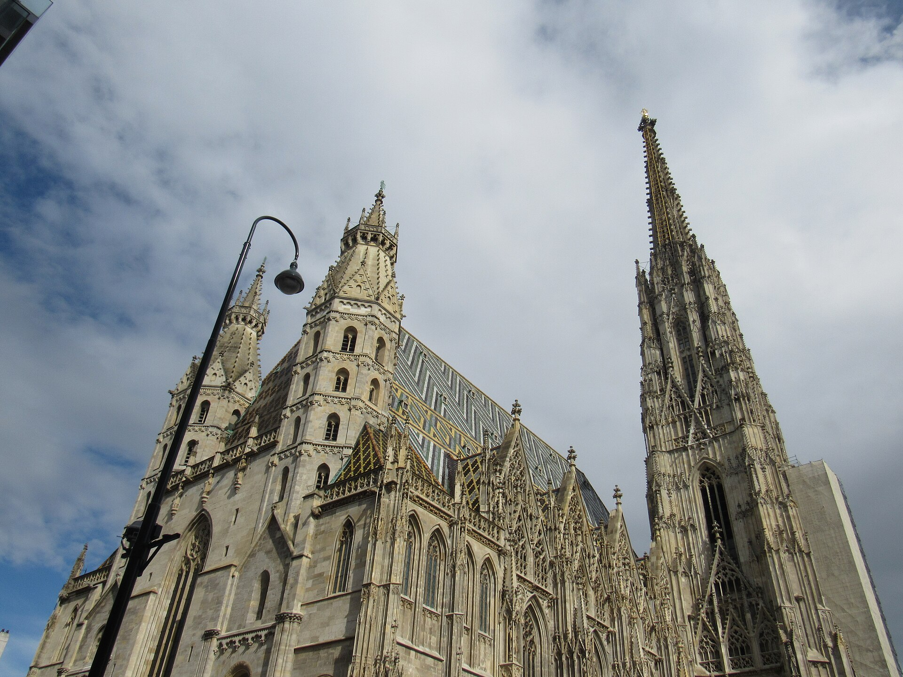
도시의 자존심을 세운 첨탑
설명
빈 도심의 성 슈테판 대성당, 고딕 양식의 대표 건물입니다.
왜 중요한가
신앙과 도시의 자존심을 동시에 표현한, 빈에서 가장 오래된 랜드마크입니다.
어디서 보나
슈테판스플라츠, 구시가 중심.
출처
Wikimedia Commons (공개 라이선스 이미지)
바로크
17~18세기카를 성당 · 벨베데레
특징
곡선, 금박, 소용돌이 장식, 극적인 명암. 보는 사람을 압도하고 감정을 흔들도록 설계된 '연극 같은 건축'입니다. 정면은 무대의 커튼처럼 화려하게 펼쳐집니다.
왜 생겼는가
오스만의 포위와 흑사병을 이겨낸 안도감, 그리고 가톨릭 교회의 위엄을 과시하려는 의지가 맞물렸습니다. 승리와 신앙을 눈으로 확인시키는 건축이었습니다.
어디를 봐야 하나 — 카를 성당 정면의 거대한 두 원기둥. 로마의 승전 기둥을 본떠, 성당에 '개선문'의 자부심을 붙여 놓았습니다.
시각 자료 · 설명으로 대체
개선문을 닮은 카를 성당
거대한 녹색 돔 앞에 로마의 승전 기둥을 본뜬 두 개의 원기둥이 서 있습니다. 곡선과 금박, 극적인 장식이 어우러진 바로크 양식의 걸작입니다.
무엇을 봐야 하나 — 정면 두 원기둥에 새겨진 부조와, 그 뒤로 펼쳐진 극적인 정면 구성을 함께 보세요.
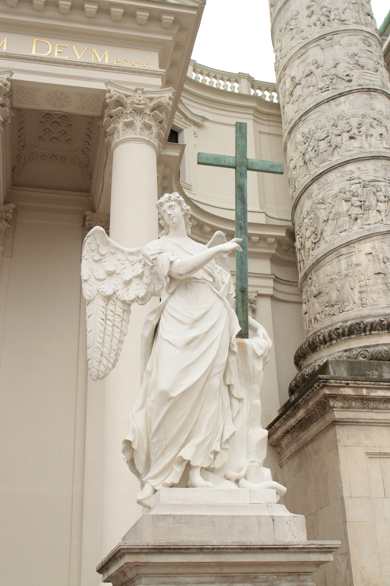
승리와 신앙을 눈으로 확인시키다
설명
카를 성당, 빈 바로크 건축의 대표 사례입니다.
왜 중요한가
흑사병 종식에 대한 감사와 가톨릭 교회의 위엄을 함께 과시한 건축입니다.
어디서 보나
카를스플라츠 광장.
출처
Wikimedia Commons (공개 라이선스 이미지)
역사주의
19세기 후반링슈트라세 건물군
특징
과거의 여러 양식을 건물의 용도에 맞춰 골라 입힌 '양식 짜맞추기'. 국회는 고대 그리스풍, 시청은 고딕풍, 오페라와 미술관은 르네상스풍으로 각기 다른 옷을 걸쳤습니다.
왜 생겼는가
새로 부상한 시민 계급이 자신의 위상을 '빛나던 과거'에서 빌려오려 했기 때문입니다. 민주주의는 그리스에서, 시민 자치는 중세 도시에서 상징을 가져온 것입니다.
어디를 봐야 하나 — 국회의사당 앞 아테나 여신상. 왜 오스트리아 국회 앞에 그리스 여신이 서 있는지 물어보면, 이 양식 전체의 논리가 풀립니다.
시각 자료 · 설명으로 대체
국회의사당 앞의 아테나 여신
고대 그리스 신전을 본뜬 국회의사당 정면 앞에 거대한 아테나 여신상이 서 있습니다. 민주주의의 상징을 그리스에서 그대로 빌려온 역사주의의 전형입니다.
무엇을 봐야 하나 — 여신상의 투구와 창, 그리고 뒤로 늘어선 그리스식 원기둥을 함께 보세요.
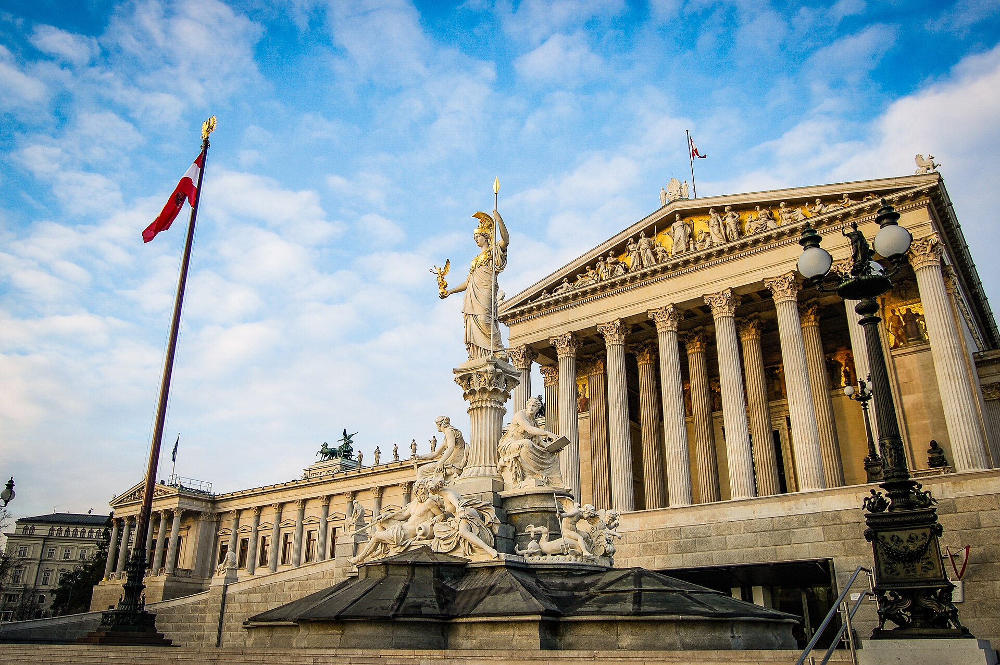
빛나던 과거에서 빌려온 상징
설명
링슈트라세의 국회의사당, 고대 그리스풍 역사주의 건축입니다.
왜 중요한가
새로 부상한 시민 계급이 민주주의의 상징을 그리스에서 빌려온 사례입니다.
어디서 보나
링슈트라세, 시청 인근.
출처
Wikimedia Commons (공개 라이선스 이미지)
유겐트슈틸
1900 전후제체시온관 · 오토 바그너 건물
특징
'유겐트슈틸 = 젊은 양식'. 과거 흉내를 버리고 식물 넝쿨 같은 유려한 곡선과 기하학적 장식을 씁니다. 금빛 잎사귀 지붕이나 매끈한 타일 외벽이 대표적입니다.
왜 생겼는가
"시대에는 그 시대의 예술을"이라는 분리파의 구호처럼, 남의 과거를 빌리지 말고 '지금 우리의 형태'를 만들자는 반항에서 출발했습니다.
어디를 봐야 하나 — 제체시온관 지붕의 금빛 월계수 잎 돔. 빈 사람들이 애칭으로 '황금 양배추'라 부르는, 새로운 시대의 선언문 같은 지붕입니다.
붉은 빈 공공주택
1920년대카를 마르크스 호프
특징
장식을 걷어낸 견고한 벽돌·콘크리트 건물이지만, 규모는 궁전급입니다. 안뜰·세탁장·도서관·유치원을 갖춘 '작은 도시'로, 서민의 일상을 통째로 품도록 설계되었습니다.
왜 생겼는가
제국이 사라진 자리에서, 시 정부가 노동자에게도 존엄한 주거를 제공하려 했기 때문입니다. 궁전의 스케일을 서민에게 돌려주는 정치적 실험이었습니다.
어디를 봐야 하나 — 카를 마르크스 호프의 끝없이 이어지는 붉은 정면과 거대한 아치 통로. 이것이 '궁전이 아니라 서민의 집'이라는 사실이 주는 충격을 느껴 보세요.
시각 자료 · 설명으로 대체
궁전 스케일의 서민 아파트, 카를 마르크스 호프
끝없이 이어지는 붉은 벽면과 거대한 아치 통로. 장식은 걷어냈지만 규모는 궁전급인 공공주택입니다. 안뜰과 도서관, 유치원까지 갖춘 '작은 도시'입니다.
무엇을 봐야 하나 — 정면의 거대한 아치 통로와, 건물이 끝없이 이어지는 길이감을 함께 느껴 보세요.
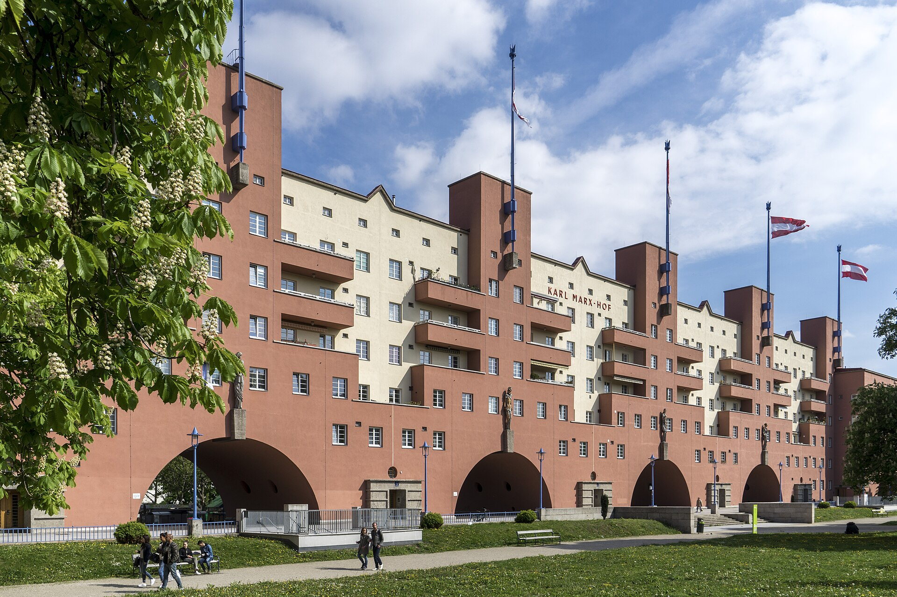
서민에게 돌려준 궁전의 스케일
설명
카를 마르크스 호프, 1920년대 '붉은 빈' 시기 공공주택의 대표작입니다.
왜 중요한가
제국이 사라진 자리에서 노동자에게 존엄한 주거를 제공하려 한 정치적 실험이었습니다.
어디서 보나
하일리겐슈타트 인근.
출처
Wikimedia Commons (공개 라이선스 이미지)
시각 자료 · 설명으로 대체
제체시온관의 황금 돔
매끈한 흰 벽 위에 금빛 월계수 잎을 엮어 만든 둥근 지붕이 얹혀 있습니다. 과거의 어떤 양식도 흉내 내지 않은, 오직 '지금'을 위해 고안된 형태입니다. 정면에는 "시대에는 그 시대의 예술을"이라는 문구가 새겨져 있습니다.
무엇을 봐야 하나 — 잎사귀 하나하나가 따로 만들어져 엮인, 장식이자 구조인 돔의 짜임
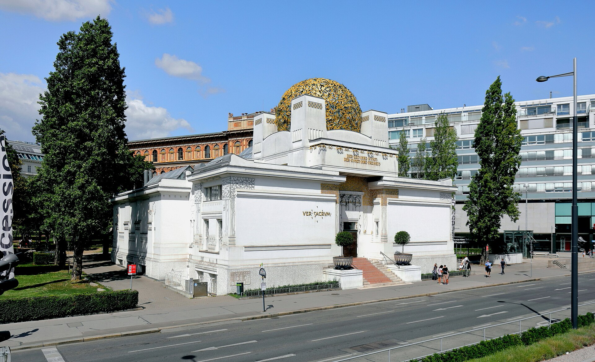
'황금 양배추' — 새 시대의 선언
설명
분리파 예술가들이 자신들의 전시관으로 지은 건물. 금빛 돔과 간결한 벽이 과거와의 결별을 상징합니다.
왜 중요한가
남의 과거를 빌려 짓던 역사주의에서 벗어나, '지금 우리의 예술'을 형태로 선언한 전환점이기 때문입니다.
어디서 보나
카를스플라츠 역에서 도보로 가깝습니다. 지하에는 클림트의 '베토벤 프리즈'가 있습니다.
출처
Wikimedia Commons (공개 라이선스 이미지)
💡 여행 중 생각해볼 것
바로 옆 링슈트라세는 '과거를 흉내' 내는데, 제체시온관은 '과거와 결별'하려 한다. 같은 시대에 정반대의 태도가 공존한 이유는?
장식을 잔뜩 붙인 궁전과, 장식을 걷어낸 붉은 빈 아파트 중 어느 쪽이 더 '자신감 있는' 건축일까?
오늘날 한국 사회와 비교하면 무엇이 다를까? — 우리는 건물의 '용도'는 자주 바꾸지만 '양식으로 시대를 선언'하는 논쟁은 드뭅니다. 건축이 곧 사상 논쟁이던 빈과 다른 지점입니다.
SECTION 05
예술과 음악 — 왜 지금도 중요한가
빈의 예술가들을 단순한 '유명인'으로 지나치지 마세요. 이들은 각자 인간과 세계를 보는 방식 하나씩을 바꿔 놓았습니다. 그래서 이들의 작업은 박물관이 아니라 지금 우리의 생각 속에 살아 있습니다.
음악
모차르트
작곡가 · 빈 고전파
어린 시절 신동으로 이름을 날린 뒤, 궁정의 고용에서 벗어나 자유 음악가로 살고자 빈에 정착했습니다. 오페라와 협주곡에서 인간의 감정을 놀랍도록 자연스럽게 그려냈습니다.
왜 지금도 중요한가 — 후원자에게 매인 '고용 음악가'에서 스스로 관객을 찾는 '독립 예술가'로 옮겨간 초기 사례입니다. 예술가의 자립이라는 근대적 모델을 보여주었습니다.
베토벤
작곡가 · 고전에서 낭만으로
귀가 멀어가는 절망 속에서도 창작을 멈추지 않았습니다. 그의 교향곡은 개인의 고통을 인류 전체의 승리로 밀어 올리는 서사 구조를 갖습니다.
왜 지금도 중요한가 — 음악을 '아름다운 소리'에서 '개인의 의지와 사상을 담는 그릇'으로 바꿨습니다. '고난을 뚫고 환희로'라는 이야기 자체가 그의 발명입니다.
슈베르트
작곡가 · 가곡의 대가
짧은 생을 살며 수백 곡의 가곡을 남겼습니다. 시 한 편에 피아노와 목소리를 얹어, 한 곡 안에 하나의 완결된 감정의 풍경을 담아냈습니다.
왜 지금도 중요한가 — 거창한 무대 없이도 방 안에서 나누는 친밀한 음악, 즉 '내면의 노래'라는 장르를 예술의 반열에 올려놓았습니다.
요한 슈트라우스 2세
작곡가 · 왈츠의 왕
점잖지 못하다고 여겨지던 춤곡 왈츠를 세련된 관현악으로 끌어올렸습니다. '아름답고 푸른 도나우' 같은 곡은 빈의 소리 그 자체가 되었습니다.
왜 지금도 중요한가 — 대중이 즐기는 오락 음악도 최고의 예술이 될 수 있음을 증명했습니다. 매년 신년음악회로 그의 유산은 지금도 전 세계에 울립니다.
말러
작곡가·지휘자 · 세기말
궁정오페라의 지휘를 맡아 빈 음악계를 이끌면서, 방대한 규모의 교향곡을 남겼습니다. 삶과 죽음, 불안과 동경을 거대한 오케스트라 안에 쏟아부었습니다.
왜 지금도 중요한가 — 무너져가는 제국의 불안을 음악으로 예언하듯 담아냈습니다. 그의 교향곡은 세기말 빈의 심리를 소리로 기록한 문서와도 같습니다.
미술
클림트
화가 · 분리파 지도자
금박을 아낌없이 쓴 화려한 화면 속에 관능과 죽음, 사랑을 뒤섞었습니다. 낡은 아카데미 미술에 반기를 든 분리파의 첫 대표였습니다.
왜 지금도 중요한가 — 장식과 상징을 결합해 '보기 좋은 그림'과 '깊은 의미'를 하나로 묶었습니다. '키스'는 지금도 사랑을 표현하는 가장 유명한 이미지 중 하나입니다.
실레
화가 · 표현주의
클림트의 영향을 받았지만 정반대 길로 갔습니다. 뒤틀리고 앙상한 몸을 날카로운 선으로 그려, 인간의 불안과 고독을 노골적으로 드러냈습니다.
왜 지금도 중요한가 — 아름다움 대신 '진실', 즉 감추고 싶은 내면까지 그림으로 끌어냈습니다. 현대 미술이 '불편함'을 다루는 방식의 출발점 중 하나입니다.
오토 바그너
건축가 · 근대 건축의 문턱
빈의 도시철도와 우체국저축은행 등을 설계하며, 불필요한 장식을 걷어내고 기능과 재료를 정직하게 드러내는 건축을 실험했습니다.
왜 지금도 중요한가 — "실용적이지 않은 것은 아름다울 수 없다"는 그의 생각은 20세기 현대 건축 전체의 씨앗이 되었습니다. 지금 도시의 깔끔한 건물들이 그 후예입니다.
사상
프로이트
정신분석 창시자
빈의 진료실에서 환자의 꿈과 말실수를 단서 삼아, 의식 아래 숨은 '무의식'이라는 영역을 지도로 그렸습니다. 인간 행동의 뿌리를 이성 밖에서 찾았습니다.
왜 지금도 중요한가 — '무의식', '억압', '트라우마' 같은 말은 이제 일상어가 되었습니다. 우리가 마음을 이해하는 언어 자체를 그가 만들었다고 해도 지나치지 않습니다.
시각 자료 · 설명으로 대체
클림트, '키스'
금빛 배경 속, 절벽 끝 꽃밭에서 한 남자가 무릎 꿇은 여인에게 입 맞추려 몸을 기울입니다. 두 사람을 감싼 황금 망토는 화려하지만, 발밑은 아슬아슬한 벼랑입니다. 사랑의 황홀과 불안이 한 화면에 겹쳐 있습니다.
무엇을 봐야 하나 — 남자의 사각형 무늬와 여자의 둥근 무늬가 만드는 대비, 그리고 발끝 아래의 벼랑
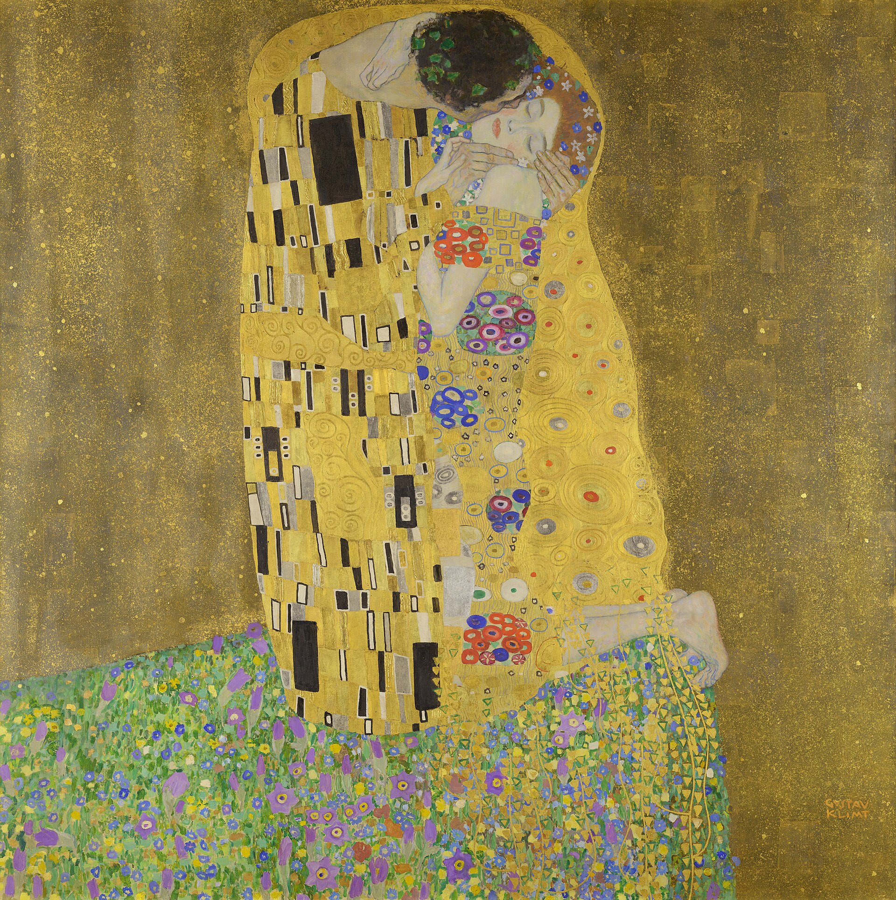
세기말 빈이 그린 사랑과 불안
설명
클림트의 대표작. 금박을 입힌 장식적 화면 안에 인간의 감정을 상징으로 응축했습니다.
왜 중요한가
화려한 겉면 아래 불안을 감춘, 세기말 빈의 정서를 한 장으로 요약하는 작품이기 때문입니다.
어디서 보나
벨베데레 상궁에 전시되어 있습니다. 원작 앞에서만 금박의 질감이 제대로 보입니다.
출처
Wikimedia Commons (공개 라이선스 이미지)
💡 여행 중 생각해볼 것
같은 도시, 같은 시기에 클림트의 '황홀'과 실레의 '불안'이 나란히 나왔다. 하나의 시대가 정반대의 감정을 동시에 낳는 것은 왜일까?
모차르트에서 프로이트까지, 이들은 모두 '남이 정한 규칙'을 깨고 자기 방식을 만들었다. 창조와 반항은 늘 함께 다니는 것일까?
오늘날 한국 사회와 비교하면 무엇이 다를까? — 빈은 붕괴 직전에 가장 뜨거운 문화를 낳았습니다. 위기와 창조의 관계를 우리는 어떻게 보고 있을까요?
SECTION 06
박물관과 미술관을 보는 법
빈에는 볼 것이 너무 많아서, 아무 준비 없이 들어가면 명작 앞을 그냥 스쳐 지나갑니다. 도슨트의 시선으로 '무엇을, 왜 봐야 하는가'를 미리 정해 두면, 같은 그림이 완전히 다르게 보입니다.
미술관을 '유명한 것 도장 찍기'로 대하면 남는 게 사진뿐입니다. 대신 각 미술관마다 '이 도시가 왜 이 컬렉션을 갖게 되었는가'를 한 문장으로 정리하고 들어가 보세요. 빈의 소장품 대부분은 합스부르크 가문이 600년간 모은 것이거나, 세기말 예술가들이 남긴 것입니다. 그 배경을 알면 그림이 곧 역사 문서가 됩니다.
또 하나. 가장 유명한 작품이 반드시 그 미술관의 핵심은 아닙니다. 사람들이 몰린 대표작 앞은 잠깐 보고, 오히려 사람이 없는 방에서 그 미술관의 진짜 성격을 발견하는 경우가 많습니다. 아래는 각 공간에서 '진짜로 봐야 할 것'입니다.
벨베데레 — 클림트 '키스'를 보는 법
벨베데레 상궁
'키스' 앞은 늘 붐빕니다. 인증샷을 서둘러 찍고 지나치기 쉽지만, 이 그림은 발밑의 벼랑을 봐야 완성됩니다. 황홀한 포옹이 사실은 낭떠러지 끝에서 이뤄지고 있다는 사실을 발견하는 순간, 세기말 빈의 '화려함 속 불안'이 몸으로 이해됩니다. 옆방의 실레와 나란히 보면 대비가 더욱 선명합니다.
레오폴트 — 실레의 정면 승부
레오폴트 미술관
실레의 작품을 세계에서 가장 많이 모은 곳입니다. 뒤틀린 자화상들을 한 방에서 이어 보면, 그가 '못 그린' 것이 아니라 '보기 좋게 그리기를 거부한' 것임이 분명해집니다. 불편함을 견디며 오래 서 있어 보세요. 그 불편함이 바로 작품이 노린 지점입니다.
미술사박물관 — 브뤼헐의 방
쿤스트히스토리셰스 무제움
합스부르크가 모은 대가의 그림이 즐비하지만, 이곳의 심장은 브뤼헐의 방입니다. 세계에서 브뤼헐을 가장 많이 소장한 곳으로, '눈 속의 사냥꾼' 같은 그림 앞에 서면 16세기 농민의 하루가 눈앞에서 살아납니다. 위대한 왕이 아니라 평범한 사람들의 세계를 그렸다는 점을 음미해 보세요.
황실보물관 — 권력의 실물
호프부르크 궁전 내
신성로마제국 황제의 관, 즉 유럽 최고 권위의 상징이 실물로 놓여 있습니다. 그림 속 왕관이 아니라 진짜 관을 마주하면, '선제후(황제를 뽑는 투표권을 가진 제후)들이 이 관을 두고 벌인 권력 게임'이 얼마나 실체 있는 것이었는지 체감됩니다.
중앙묘지 — 음악가들의 안식처
첸트랄프리트호프
베토벤·슈베르트·요한 슈트라우스 등 빈을 만든 음악가들의 묘가 한자리에 모여 있습니다. 관광지가 아니라 도시가 자기 예술가를 어떻게 기억하는지 보여주는 공간입니다. 조용히 걸으며 '도시가 무엇을 기린다는 것'의 의미를 생각해 보세요.
제체시온 — 베토벤 프리즈
제체시온관 지하
클림트가 벽 세 면에 그린 긴 벽화로, 베토벤 교향곡을 시각적으로 해석한 작품입니다. 원래 한 번의 전시를 위해 그려진 '한시적' 작품이 지금까지 남았다는 점이 특별합니다. 벽을 따라 걸으며 음악을 '보는' 경험을 해 보세요.
관람 원칙 — 하루에 미술관 하나면 충분합니다. 대표작 앞에서 3분을 서두르기보다, 마음에 걸리는 그림 하나 앞에서 15분을 머무세요. 기억에 남는 것은 개수가 아니라 깊이입니다.
SECTION 07
현지 문화와 예절
빈은 격식과 예의를 중시하는 도시입니다. 몇 가지 습관만 알아도 현지인의 대접이 달라지고, 무엇보다 여러분 스스로 '이방인'이 아니라 '손님'처럼 편안해집니다.
빈의 예절은 대체로 '서두르지 않기'와 '적당한 거리 지키기'로 요약됩니다. 카페에서 재촉당하지 않고, 낯선 이에게 과하게 친근하지 않으며, 상대를 존칭으로 부르는 것이 기본입니다. 아래 표를 상황별로 훑어 두면 대부분의 순간에 당황하지 않습니다.
상황
이렇게 하세요
카페 커피 주문
기본은 '멜란지(Melange)'. 우유 거품을 얹은 부드러운 커피로, 빈식 카페라테라고 생각하면 됩니다. 무엇을 시킬지 모르겠으면 멜란지가 무난합니다.
'아이스카페' 주의
메뉴의 'Eiskaffee'는 아이스커피가 아니라 커피에 바닐라 아이스크림을 얹은 디저트입니다. 시원한 커피를 원하면 얼음 든 커피를 따로 요청하세요.
물 주문
카페에서 커피를 시키면 대개 작은 잔에 물이 함께 나옵니다. 추가로 원하면 '수돗물(Leitungswasser)'을 청할 수 있지만, 유료 생수를 권하는 곳도 있습니다.
팁 문화
계산 금액에서 대략 5~10%를 얹어 주는 것이 관례입니다. 잔돈을 남기기보다, 계산할 때 '얼마로 해주세요' 하며 반올림한 총액을 말하는 방식이 자연스럽습니다.
계산 요청
테이블에서 직원과 눈을 맞추고 "Zahlen, bitte(찰렌 비테 · 계산할게요)"라고 하세요. 한국처럼 카운터로 나가지 않고 자리에서 계산하는 것이 보통입니다.
인사말
가게에 들어설 때 "Grüß Gott(그뤼스 고트)"라고 인사하는 것이 이 지역의 관습입니다. 직역하면 '신의 축복을'이지만 그냥 '안녕하세요'로 쓰입니다.
호칭
남성은 'Herr(헤어)', 여성은 'Frau(프라우)' 뒤에 성을 붙여 부릅니다. 처음 보는 사이에 이름을 바로 부르는 것은 실례로 여겨집니다.
U반(지하철) 탑승
개찰구가 없습니다. 표를 사서 탑승 전에 각인기에 찍는 것이 원칙이며, 무작위 검표에 걸려 무임승차로 판정되면 큰 벌금이 부과됩니다.
대중교통 이용권
여러 번 탈 예정이면 24·48·72시간권을 사는 편이 이득입니다. 한 번 각인하면 유효시간 동안 자유롭게 갈아탈 수 있습니다.
공연 관람 복장
오페라·콘서트는 지나치게 캐주얼한 차림은 피하는 것이 예의입니다. 정장까지는 아니어도 단정한 옷차림을 권합니다.
무지크페어라인 입석표
세계적 콘서트홀도 저렴한 입석표를 팝니다. 공연 당일 일찍 줄을 서면 적은 돈으로 최고의 연주를 서서 즐길 수 있습니다.
일요일 상점 휴무
대부분의 마트·상점이 일요일에 문을 닫습니다. 생필품은 토요일까지 사 두세요. 카페·식당·박물관은 대체로 정상 영업합니다.
줄서기와 조용함
대중교통과 공공장소에서 큰 소리로 통화하거나 떠드는 것을 삼갑니다. 정숙과 질서를 지키는 것이 기본 예의로 여겨집니다.
이 도시에서 꼭 먹어볼 음식
FOOD 01
비너 슈니첼
Wiener Schnitzel
얇게 편 고기를 튀긴 오스트리아의 대표 요리. 원칙적으로 '비너 슈니첼'은 송아지고기(칼프)여야 하고, 돼지고기로 만든 것은 메뉴에 '슈바인스슈니첼'로 따로 표기됩니다. 이 구분을 알아 두면 메뉴판이 다르게 읽힙니다.
FOOD 02
자허토르테
Sachertorte
진한 초콜릿 케이크. 자허 호텔과 데멜 제과점이 100년 넘게 '오리지널'을 두고 다툰 유명한 라이벌 디저트로, 두 곳을 비교해 먹어보는 것도 빈다운 재미입니다.
FOOD 03
타펠슈피츠
Tafelspitz
삶은 소고기 요리로, 원래 궁정 식탁에서 즐기던 음식입니다. 격식 있는 레스토랑에서 제대로 된 한 끼를 먹고 싶을 때 어울립니다.
FOOD 04
뷔르스텔슈탄트 소시지
Würstelstand
길거리 소시지 가판대. 야근하는 시민, 늦은 밤 술 취한 사람까지 두루 찾는 빈의 서민 야식으로, 격식 있는 카페 문화와 대비되는 빈의 또 다른 얼굴입니다.
FOOD 05
카이저슈마른
Kaiserschmarrn
잘게 찢은 팬케이크에 설탕과 과일 콩포트를 곁들인 디저트. '황제의 헛소리'라는 뜻의 이름부터 재미있는, 카페에서 즐기기 좋은 달콤한 마무리입니다.
생존 회화
표현
뜻 · 언제 쓰나
Grüß Gott
안녕하세요 — 가게에 들어갈 때
Danke schön
감사합니다
Bitte
부탁합니다 / 천만에요 — 만능 표현
Prost!
건배! — 편한 자리에서. 잔을 부딪칠 때 눈을 마주치세요
Wo ist die Toilette?
화장실이 어디예요?
Zahlen, bitte
계산할게요 — 자리에서 직원을 불러
💡 여행 중 생각해볼 것
개찰구 없이 '스스로 표를 찍게' 하는 시스템은 시민의 양심을 신뢰한다는 뜻일까, 아니면 큰 벌금으로 관리한다는 뜻일까?
커피 한 잔으로 몇 시간을 앉아 있어도 눈치 주지 않는 카페 문화는, 시간을 대하는 어떤 태도에서 나온 것일까?
오늘날 한국 사회와 비교하면 무엇이 다를까? — 빠른 회전과 효율을 중시하는 우리 문화와, '오래 머무름'을 미덕으로 보는 빈 카페 문화 사이에서 무엇을 배울 수 있을까요?
SECTION 08
여행지 연결 — 그리고 하루 동안 걷는다면
빈은 홀로 이해되지 않습니다. 이 도시는 프라하·부다페스트·잘츠부르크·뮌헨과 실로 엮여 있습니다. 한 도시를 제대로 보면 이웃 도시들이 줄줄이 연결되어 풀립니다.
쇤브룬 궁전합스부르크를 여는 열쇠
노란 벽의 여름 궁전 쇤브룬을 보면 합스부르크라는 가문이 무엇이었는지 몸으로 이해됩니다. 그리고 이 가문을 이해하면, 그들이 다스린 다른 수도들이 곧바로 시야에 들어옵니다. 빈은 그 제국 네트워크의 중심 허브였습니다.
프라하결정권이 빈으로 넘어온 도시
보헤미아 귀족들이 합스부르크에 맞섰다가 백산 전투에서 패한 뒤, 프라하의 자치와 결정권은 사실상 빈으로 넘어옵니다. 프라하가 '눌린 도시'가 된 그 순간이, 빈이 '누른 쪽의 수도'로 굳어진 순간이기도 합니다. 두 도시는 동전의 양면입니다.
부다페스트제국의 또 다른 절반
헝가리는 오랜 갈등 끝에 빈과 '한 군주, 두 나라' 형태의 이중 체제를 이룹니다. 부다페스트의 웅장한 국회의사당은 "우리는 빈에 종속된 게 아니라 동등하다"는 선언이었습니다. 빈을 알면 부다페스트의 자존심이 어디서 왔는지 읽힙니다.
잘츠부르크빈과 다른 원리로 굴러간 도시
잘츠부르크는 오랫동안 대주교가 통치하는 '교회의 땅'이었습니다. 세속 군주 합스부르크의 빈과는 지배 원리 자체가 달랐지요. 그래서 같은 오스트리아라도 도시의 결이 다릅니다. 이 차이를 알면 왜 잘츠부르크가 '작은 로마'처럼 느껴지는지 이해됩니다.
뮌헨맞수 가문의 궁정
바이에른을 다스린 비텔스바흐 가문은 합스부르크의 오랜 경쟁 상대였습니다. 두 궁정은 신성로마제국의 주도권을 두고 겨뤘습니다. 뮌헨의 화려함을 보면, 빈의 화려함이 '유일한 것'이 아니라 '경쟁 속의 과시'였음이 분명해집니다.
하루 동안 걷는다면
아래는 단순한 동선 추천이 아닙니다. '이 순서로 보면 도시가 하나의 이야기로 이해되는' 이유를 담은 코스입니다.
오전 09:00
성 슈테판 대성당에서 시작
도시의 심장이자 가장 오래된 랜드마크에서 출발합니다. 뾰족한 고딕 첨탑 아래 서면, 이 도시가 중세부터 이어져 왔음이 발밑에서 느껴집니다.
왜 이 순서인가 — 가장 오래된 '중세의 빈'에서 시작해야, 이후에 볼 화려한 건물들이 '나중에 덧입혀진 시대'임을 감각할 수 있습니다.
오전 10:30
호프부르크 궁전과 황실보물관
겨울 궁전을 지나 황제의 관을 실물로 봅니다. 합스부르크 권력의 실체를 눈으로 확인하는 시간입니다.
왜 이 순서인가 — 중세 신앙(성당) 다음에 세속 권력(궁전)을 보아야, 종교와 왕가가 어떻게 도시를 나눠 지배했는지 순서대로 이해됩니다.
정오 12:30
전통 카페에서 멜란지 한 잔
궁전을 나와 오래된 카페에 앉습니다. 세기말 지식인들이 앉았던 그 자리에서 커피 한 잔의 여유를 누립니다.
왜 이 순서인가 — 권력의 무대(궁전)에서 시민의 무대(카페)로 넘어와야, 이 도시가 위에서 아래까지 어떻게 다른 층으로 이뤄졌는지 대비됩니다.
오후 14:00
링슈트라세 트램 한 바퀴
1·2번 트램을 타고 성벽 자리를 한 바퀴 돕니다. 오페라·국회·시청·미술관이 창밖으로 차례로 지나갑니다.
왜 이 순서인가 — 도심의 옛 건물을 본 뒤 링을 돌아야, 19세기 시민 계급이 '새 시대의 빈'을 어떻게 성벽 밖에 펼쳐 놓았는지 한눈에 잡힙니다.
오후 15:30
제체시온관과 벨베데레
'황금 양배추' 돔을 보고, 벨베데레로 이동해 클림트의 '키스'를 만납니다. 세기말 예술의 정점입니다.
왜 이 순서인가 — 링(역사주의)을 본 직후에 제체시온(결별)을 보아야, '과거 흉내'와 '과거와의 단절'이라는 두 태도가 극적으로 대비됩니다.
저녁 19:00
무지크페어라인 입석 또는 저녁 산책
여력이 있다면 콘서트홀 입석표로 음악을 서서 즐기고, 아니면 조명이 켜진 링을 천천히 걷습니다.
왜 이 순서인가 — 하루를 '음악'으로 닫아야 빈이 왜 음악의 도시인지 몸으로 남습니다. 낮에 본 화려함이 밤의 선율 위에서 하나로 정리됩니다.
03 / CITY ARCHIVE — SALZBURG
잘츠부르크 딥다이브 · 여행 예습 노트
소금이 지은 도시를 읽는 법
알프스 산자락의 작은 도시에 왜 이탈리아풍 대리석 궁전이 있을까. 답은 하나입니다 — 소금. 성직자가 군주였던 나라, 그 부가 낳은 바로크, 그리고 도시를 떠난 천재의 이야기입니다.
SECTION 01
잘츠부르크를 5분 만에 이해하기
기차에서 내려 구시가로 걸어 들어가면 곧 이상한 점을 느끼게 됩니다. 알프스 산자락의 인구 15만 명 남짓한 작은 도시인데, 광장에 서 있는 건물들은 로마나 피렌체에서 옮겨온 것처럼 웅장합니다. 이 도시의 모든 수수께끼는 하나의 단어로 풀립니다 — 소금.
한 문장으로잘츠부르크는 왕이 아니라 성직자가 다스린 나라였고, 알프스에서 캐낸 소금이 그 성직자를 유럽에서 가장 부유한 군주 중 하나로 만들어, 산골 마을에 이탈리아풍 대리석 도시를 세운 곳입니다.
왜 산속에 이런 도시가 있나
소금이 곧 돈이었던 시대의 물류 거점
냉장고가 없던 시절, 소금은 고기와 생선을 보존하는 유일한 수단이었습니다. 즉 소금은 조미료가 아니라 식량 안보 그 자체였고, 그래서 '하얀 금'이라 불렸습니다. 알프스 암염 광산과 강을 통한 운송로가 만나는 이 지점에 도시가 선 것은 우연이 아닙니다. 도시 이름 자체가 '소금(Salz) 성(Burg)'입니다.
왜 이렇게 화려한가
소금세를 걷은 사람이 건축주였다
소금 무역의 수익은 통치자에게 흘러갔습니다. 그 통치자가 알프스 북쪽에서 손꼽히게 부유해지자, 그는 그 돈으로 이탈리아 건축가를 불러 도시를 다시 지었습니다. 지금 당신이 보는 대성당과 광장은 취향의 결과가 아니라 회계의 결과입니다. 돈의 출처를 알고 보면 건물의 크기가 이해됩니다.
왜 오스트리아면서 빈과 다른가
오랫동안 오스트리아가 아니었기 때문
여기가 대부분의 여행자가 모르는 사실입니다. 잘츠부르크는 합스부르크의 영토가 아니라 독립된 '대주교령'이었습니다. 대주교령이란 성직자가 종교 지도자이면서 동시에 군주로서 세금과 군대를 직접 지휘한 나라를 말합니다. 오스트리아에 편입된 것은 나폴레옹 전쟁으로 유럽 지도가 다시 그려진 뒤였습니다.
왜 모차르트인가
그리고 왜 그는 이 도시를 떠났나
모차르트는 이곳에서 태어나 궁정 음악가로 일했습니다. 하지만 그는 이 도시를 답답해했습니다. 대주교 아래에서 하인에 가까운 대우를 받으며 정해진 음악만 써야 했기 때문입니다. 결국 그는 빈으로 떠났습니다. 도시가 사랑하지 않았던 사람을 오늘날 도시가 가장 큰 상품으로 삼는 아이러니가 여기에 있습니다.
현지인이 중요하게 여기는 것
여름의 축제, 그리고 산
이 도시의 자부심은 관광객 수가 아니라 잘츠부르크 축제입니다. 세계 최고 수준의 음악가들이 여름마다 모이는 무대로, 시민들은 이것을 도시의 정체성으로 여깁니다. 또 하나는 산입니다. 주말이면 등산과 스키를 위해 산으로 향하는 것이 이곳의 자연스러운 생활 리듬입니다.
관광객이 놓치는 것
모차르트와 영화 촬영지 밖의 도시
대부분의 여행자는 모차르트 생가와 '사운드 오브 뮤직' 촬영지를 찍고 반나절 만에 떠납니다. 그러나 이 도시의 진짜 층은 다른 곳에 있습니다. 소금 광산, 대주교의 궁전과 물의 정원, 그리고 나치 독일에 병합됐던 20세기의 기억입니다. 영화의 낭만적 이미지 바로 아래에 그 시대가 깔려 있습니다.
시각 자료 · 설명으로 대체
잘차흐강 건너에서 본 구시가와 호엔잘츠부르크 요새
강 남쪽 절벽 위에 흰 요새가 길게 앉아 있고, 그 아래 좁은 골목과 초록빛 돔·첨탑이 빽빽하게 모여 있습니다. 산과 강이 도시를 양쪽에서 눌러 도시가 옆으로 퍼지지 못하고 위로, 그리고 촘촘하게 자랐습니다.
무엇을 봐야 하나 — 요새가 도시를 '지키는' 위치가 아니라 도시를 내려다보는 위치에 있다는 점. 이 요새는 외적보다 자기 도시의 반란을 대비한 성격이 강했습니다.
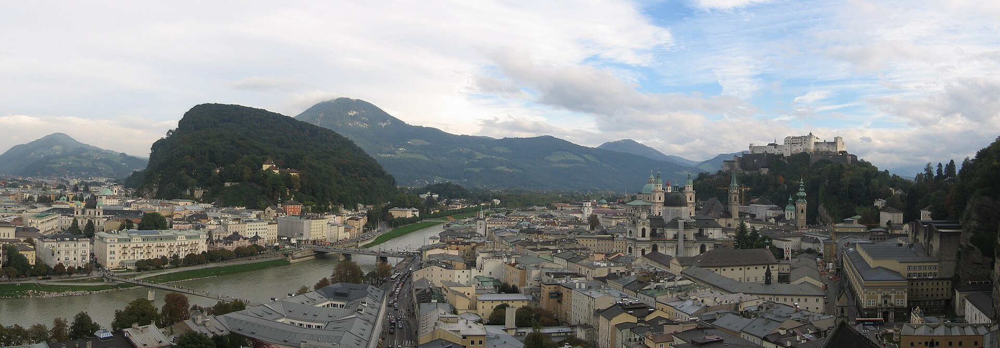
산과 강 사이에 끼인 도시
설명
잘차흐강을 사이에 두고, 절벽 위 호엔잘츠부르크 요새와 그 아래 바로크 구시가가 한 화면에 들어옵니다.
왜 중요한가
지형이 도시의 성격을 결정했습니다. 넓힐 땅이 없어 도시는 밀도 높은 골목과 통로(파사주)로 발달했고, 상인들은 좁은 정면에 높은 건물을 세웠습니다.
어디서 보나
강 북쪽 카푸치너베르크 언덕, 또는 묀히스베르크 전망대.
출처
Wikimedia Commons (공개 라이선스 이미지)
💡 여행 중 생각해볼 것
종교 지도자가 세금을 걷고 군대를 지휘하는 나라 — 당시 사람들은 이것을 어떻게 받아들였을까?
왜 요새는 국경이 아니라 도시 한복판을 내려다보는 곳에 세워졌을까?
오늘날 한국 사회와 비교하면 무엇이 다를까? — 우리에게 '종교와 정치가 하나였던 시대'의 흔적은 어디에 남아 있을까?
SECTION 02
역사 타임라인
이 도시의 역사는 하나의 문장으로 요약됩니다. 소금이 부를 낳고, 부가 권력을 낳고, 권력이 건축을 낳았으며, 그 권력이 사라진 뒤 남은 건축이 오늘의 관광을 낳았다. 그 순서대로 따라가 봅니다.
I
소금과 로마인
고대–8세기
고대
켈트인이 먼저 소금을 캤다
로마인이 오기 전부터 이 지역 사람들은 산에서 암염을 캐 교역했습니다. 알프스 소금 문화의 뿌리는 문서로 남은 역사보다 훨씬 오래됐고, 이 지역 일대는 유럽에서 가장 이른 소금 산업 지대 중 하나였습니다.
로마 시대
유바붐 — 로마의 도시가 서다
로마인은 이곳에 '유바붐'이라는 도시를 세웠습니다. 목적은 명확했습니다. 소금과 알프스를 넘는 교역로를 관리하는 것. 지금 구시가 지하에는 이 로마 도시의 흔적이 남아 있습니다. 즉 이 도시는 처음부터 물류 도시로 태어났습니다.
8세기
성 루페르트와 수도원
로마 붕괴 후 폐허가 된 이 자리에 선교사 루페르트가 수도원을 세웁니다. 흥미로운 점은 그가 함께 확보한 것이 소금 채굴권이었다는 사실입니다. 교회가 이 도시의 경제를 쥐는 구조가 이때 시작됩니다.
II
성직자가 군주가 되다
8세기–16세기
중세
대주교, 제국의 제후가 되다
이 도시의 대주교는 종교 지도자에 머물지 않고 신성로마제국 안에서 독립 영토를 가진 제후가 됩니다. 세금을 걷고, 법을 집행하고, 화폐를 찍고, 군대를 유지했습니다. 종교와 정치가 한 사람 안에 합쳐진 통치 형태입니다.
11세기 이후
호엔잘츠부르크 요새가 언덕에 오르다
대주교들은 절벽 위에 요새를 짓고 수백 년에 걸쳐 계속 확장했습니다. 방어 대상은 외국 군대만이 아니었습니다. 소금세에 반발하는 시민과 농민, 그리고 자신을 견제하려는 세력이었습니다. 이 요새는 한 번도 함락되지 않았습니다.
16세기
종교개혁의 파도, 그리고 강한 가톨릭
독일어권이 신교와 구교로 갈라지는 동안, 이 도시는 가톨릭 진영의 확고한 거점으로 남습니다. 통치자가 곧 성직자였으니 선택의 여지가 없었습니다. 이 결정이 이후 도시의 건축 언어를 결정합니다 — 가톨릭의 미학, 곧 바로크입니다.
III
바로크 황금기 — 알프스의 로마
1587–1700년대
16세기 말
볼프 디트리히 — 도시를 갈아엎은 대주교
이 도시의 얼굴을 만든 인물입니다. 로마에서 공부하며 본 도시를 그대로 재현하려 했고, 낡은 중세 구역을 철거해 넓은 광장을 냈습니다. "알프스의 로마를 만들겠다"는 구상이었습니다. 지금 우리가 감탄하는 시야는 그의 불도저 같은 재개발의 결과입니다.
17세기
대성당과 레지덴츠 — 이탈리아 건축가의 손
이탈리아에서 건축가를 초빙해 대성당과 대주교 궁전(레지덴츠)을 세웁니다. 알프스 북쪽에서 이렇게 이른 시기에 본격 이탈리아 바로크가 지어진 예는 드물었습니다. 이 도시가 알프스를 넘어온 이탈리아 문화의 첫 관문이 된 순간입니다.
17세기
헬브룬 — 물로 손님을 놀리는 정원
대주교는 교외에 별궁과 정원을 만들고, 손님이 앉는 순간 의자에서 물이 튀어 오르는 장치들을 설치했습니다. 권력자의 유머이자, 물을 다루는 기술력의 과시였습니다. 지금도 작동하며 여행자들은 그때 손님들처럼 물을 맞습니다.
1756
게트라이데가세의 좁은 집에서 한 아이가 태어나다
도시가 완성 단계에 이른 무렵, 상인 거리의 한 건물 4층에서 모차르트가 태어납니다. 아버지 레오폴트는 대주교 궁정의 음악가였습니다. 즉 모차르트의 천재성도 소금이 먹여 살린 궁정 문화의 산물이었습니다.
IV
독립의 끝
1800–1918
나폴레옹 시대
천 년의 대주교령이 사라지다
나폴레옹 전쟁이 유럽의 지도를 다시 그리면서, 교회가 세속 영토를 다스리던 체제가 대륙 전역에서 정리됩니다. 잘츠부르크의 독립도 이때 끝났습니다. 모차르트를 답답하게 했던 그 궁정도 함께 사라졌습니다.
19세기 초
오스트리아의 지방 도시가 되다
여러 차례 주인이 바뀐 끝에 잘츠부르크는 오스트리아 제국에 편입됩니다. 수도였던 도시가 변방의 작은 주도로 격하된 것입니다. 궁정이 사라지자 음악가와 장인들의 일자리도 사라졌고, 도시는 오랫동안 가난했습니다.
19세기 후반
가난이 도시를 보존했다
여기서 프라하와 같은 일이 벌어집니다. 개발할 돈이 없었기에 바로크 도시가 헐리지 않고 남았습니다. 동시에 이 시기 유럽에 낭만주의가 퍼지며 '모차르트의 도시'라는 이미지가 만들어지기 시작합니다. 유산을 팔아 살아가는 길이 열린 셈입니다.
V
축제, 전쟁, 그리고 오늘
1920–오늘
1920
잘츠부르크 축제의 탄생
1차 세계대전으로 제국이 무너지고 사람들이 절망한 직후, 연출가 막스 라인하르트와 작가 호프만슈탈, 작곡가 리하르트 슈트라우스가 축제를 만듭니다. 목적은 오락이 아니었습니다. 전쟁으로 부서진 유럽에 문화로 다시 공동의 정신을 세우자는 기획이었습니다.
1938
안슐루스 — 오스트리아가 나치 독일에 병합되다
오스트리아 전체가 나치 독일에 흡수됩니다. 유대인이었던 축제 창설자 라인하르트는 망명하고, 축제는 정권의 선전 도구로 변형됩니다. '사운드 오브 뮤직'의 배경이 바로 이 시기이며, 영화의 낭만 아래에는 이 무거운 층이 깔려 있습니다.
1945 이후
전후 복구와 축제의 부활
전쟁 중 폭격 피해를 입었으나 구시가의 핵심은 살아남았습니다. 전후 축제가 다시 열리고, 지휘자 카라얀이 고향 무대를 세계 클래식 음악의 중심으로 끌어올립니다. 도시는 음악으로 다시 일어섰습니다.
1965 · 오늘
영화 한 편이 도시를 다시 만들다
'사운드 오브 뮤직'이 세계적으로 흥행하며 잘츠부르크는 전혀 새로운 종류의 명성을 얻습니다. 흥미로운 것은 정작 현지인 다수는 이 영화에 큰 애착이 없다는 점입니다. 오늘 이 도시는 소금 대신 이야기를 수출하며 살아갑니다.
타임라인을 한 줄로 꿴다면 — 소금(경제) → 대주교(권력) → 바로크(과시) → 독립 상실(몰락) → 축제와 영화(재발명). 지금 광장에서 보는 모든 것이 이 다섯 단계 중 어딘가의 산물입니다.
SECTION 03
잘츠부르크를 설명하는 키워드 10개
이 열 단어가 서로 어떻게 이어지는지 보이면, 반나절이면 다 본다는 이 작은 도시가 갑자기 깊어집니다.
01
소금
Salz — '하얀 금'
이 도시의 모든 것의 시작. 냉장 기술이 없던 시대에 소금은 식량을 보존하는 유일한 수단이라 금값에 준하는 전략 물자였습니다. 도시·강·산 이름에 모두 이 단어가 박혀 있습니다.
02
대주교령
Erzbistum · Prince-Archbishopric
성직자가 종교 지도자이면서 동시에 군주로서 통치한 독립 영지. 잘츠부르크는 이런 나라였고, 그래서 왕궁이 아니라 '레지덴츠(대주교 관저)'가 이 도시의 궁전입니다.
03
볼프 디트리히
Wolf Dietrich von Raitenau
도시를 이탈리아식으로 갈아엎은 대주교. 로마를 본떠 광장을 내고 대성당을 새로 세우려 했습니다. 훗날 정치적으로 몰락해 자신이 지은 요새에 갇혀 생을 마쳤다는 점까지, 이 도시의 극적인 인물입니다.
04
이탈리아 바로크
Barock
곡선·금박·연극적 공간으로 신앙을 감각화한 양식. 잘츠부르크가 특별한 이유는 이탈리아 건축가를 직접 불러 알프스 북쪽에서 가장 이른 정통 이탈리아 바로크를 실현했다는 점입니다.
05
호엔잘츠부르크
Festung Hohensalzburg
유럽에서 가장 크고 온전하게 남은 중세 요새 중 하나. 핵심은 규모가 아니라 방향입니다. 이 요새의 시선은 국경이 아니라 자기 도시를 향합니다. 통치의 성격이 건물의 위치에 새겨져 있습니다.
06
게트라이데가세
Getreidegasse
모차르트 생가가 있는 좁은 상인 거리. 문맹률이 높던 시절 글자 대신 그림으로 업종을 알린 철제 간판이 지금도 걸려 있습니다. 중세의 상업 디자인을 그대로 보는 셈입니다.
07
모차르트
Wolfgang Amadeus Mozart
이 도시가 낳았고, 이 도시를 떠난 인물. 궁정 음악가는 대주교의 고용인이었고 창작의 자유가 없었습니다. 그의 이탈은 예술가가 후원자에게서 독립하기 시작한 시대의 신호였습니다.
08
잘츠부르크 축제
Salzburger Festspiele
1차 대전 직후, 무너진 유럽을 문화로 다시 세우겠다는 뜻으로 창설된 여름 음악·연극 축제. 이 도시의 진짜 자부심이며, 대성당 광장 야외에서 상연되는 도덕극 '예더만'이 상징적 프로그램입니다.
09
안슐루스
Anschluss · 1938
오스트리아가 나치 독일에 병합된 사건. 축제를 만든 유대인 연출가는 망명했고 축제는 선전에 이용됐습니다. 이 도시의 밝은 이미지 아래 반드시 함께 기억해야 하는 층입니다.
10
사운드 오브 뮤직
The Sound of Music · 1965
도시를 세계에 알린 영화. 다만 현지인 다수는 이 영화에 큰 애착이 없고, 실제 트라프 가족의 이야기도 영화와 다릅니다. 관광 이미지와 현지의 실감이 어긋나는 대표 사례로 볼 만합니다.
키워드를 꿰는 실앞의 다섯 단어는 소금이 만든 권력의 이야기이고, 뒤의 다섯 단어는 그 권력이 사라진 뒤 도시가 무엇으로 먹고살게 되었는가의 이야기입니다.
SECTION 04
거리에서 건축 읽는 법
잘츠부르크 구시가는 걷는 데 두 시간이면 충분합니다. 그런데 그 두 시간 안에 요새의 시대와 과시의 시대가 나란히 놓여 있습니다. 무엇을 보고 무엇을 읽어야 하는지 정리합니다.
중세 요새 건축
11–16세기호엔잘츠부르크
특징
장식이 거의 없습니다. 두꺼운 벽, 작은 창, 여러 겹의 문. 아름다움이 아니라 버티는 것이 목적이므로 모든 형태가 기능에서 나옵니다. 언덕 지형을 그대로 이용해 접근로를 하나로 좁혀 놓았습니다.
왜 생겼는가
대주교는 종교 지도자였지만 동시에 세금을 걷는 군주였습니다. 그런 통치자는 늘 두 방향의 위협을 받습니다 — 외부의 경쟁 제후, 그리고 내부의 불만입니다. 실제로 이 지역에서는 농민과 광부의 저항이 있었고, 요새는 그때 통치자가 물러설 마지막 거점이었습니다.
어디를 봐야 하나 — 성벽 위에서 대포가 어느 방향을 향하는지 확인해 보세요. 상당수가 산 너머가 아니라 도시 쪽을 내려다봅니다. 그리고 요새 안 대주교의 방을 보면, 방어 시설 안에 놀랍도록 정교한 목조 장식이 들어앉아 있습니다.
시각 자료 · 설명으로 대체
언덕 위 요새, 호엔잘츠부르크
구시가 언덕 위에 두꺼운 흰 성벽과 여러 겹의 방어 구조로 우뚝 선 호엔잘츠부르크 요새입니다. 장식보다 방어 기능이 형태를 그대로 결정한 모습입니다.
무엇을 봐야 하나 — 성벽의 두께와 창의 크기, 접근로가 하나로 좁혀진 지형을 함께 보세요. 아름다움이 아니라 버티는 것이 목적인 건축입니다.
기능이 형태를 결정한 요새
설명
구시가를 내려다보는 언덕 위 호엔잘츠부르크 요새 전경입니다.
왜 중요한가
장식 대신 두꺼운 벽·좁은 접근로가 지배하는, 대주교 통치자의 최후 거점이었던 요새의 논리를 보여줍니다.
어디서 보나
구시가 어디서든 보이며, 푸니쿨라나 도보로 오를 수 있습니다.
출처
Wikimedia Commons (공개 라이선스 이미지)
양식을 실루엣으로 구분하기
설명
왼쪽부터 고딕·르네상스·바로크·아르누보의 전형적 형태를 비교한 도해입니다. 잘츠부르크 구시가에서 압도적으로 많은 것은 세 번째, 바로크입니다.
왜 중요한가
프라하는 네 양식이 뒤섞여 있지만, 잘츠부르크는 한 시대(바로크)가 도시를 거의 통일했습니다. 한 통치자 집단이 짧은 기간에 집중 투자했기 때문입니다.
어디서 보나
대성당 광장과 레지덴츠 광장 일대. 같은 언어로 지어진 건물들이 광장을 둘러쌉니다.
출처
본 아카이브 자체 제작 도해
💡 여행 중 생각해볼 것
왜 이 도시는 여러 양식이 섞이지 않고 하나의 양식으로 통일되었을까?
당시 사람들은 자기 집이 헐리고 광장이 생기는 것을 어떻게 받아들였을까?
오늘날 한국 사회와 비교하면 무엇이 다를까? — 우리 도시의 재개발은 무엇을 남기고 무엇을 지웠을까?
초기 이탈리아 바로크
17세기대성당 · 레지덴츠
특징
정면이 좌우 대칭이고, 쌍둥이 탑과 커다란 돔이 얹히며, 실내는 흰 회벽에 절제된 금장식이 들어갑니다. 프라하나 남부 독일의 바로크보다 차분하고 기하학적입니다. 이탈리아에서 직접 건너온 초기 양식이기 때문입니다.
왜 생겼는가
종교개혁으로 신교가 확산되던 시기, 가톨릭은 신자를 지키기 위해 '보고 압도되는 신앙'을 택했습니다. 여기에 잘츠부르크만의 동기가 하나 더 붙습니다. 대주교는 자신이 알프스 변방의 성직자가 아니라 로마와 같은 반열의 군주임을 건물로 증명하고 싶었습니다.
어디를 봐야 하나 — 대성당 안에서 천장이 아니라 바닥에서 돔까지 이어지는 시선의 흐름을 따라가 보세요. 빛이 돔 창을 통해 중앙 제단에 떨어지도록 계산되어 있습니다. 그리고 광장에서 대성당·레지덴츠·수도원이 어떻게 하나의 무대처럼 연결되는지 보세요. 도시 자체가 무대 장치입니다.
시각 자료 · 설명으로 대체
로마를 옮겨놓은 듯, 잘츠부르크 대성당
좌우 대칭의 쌍둥이 탑과 커다란 돔을 인 대성당 파사드. 프라하나 남부 독일의 바로크보다 차분하고 기하학적인, 이탈리아에서 직접 건너온 초기 양식이 그대로 드러납니다.
무엇을 봐야 하나 — 쌍둥이 탑의 대칭과 돔의 비례를 보세요. 로마 성 베드로 대성당을 축소해 옮긴 듯한 인상을 주려는 대주교의 야심이 형태에 담겨 있습니다.
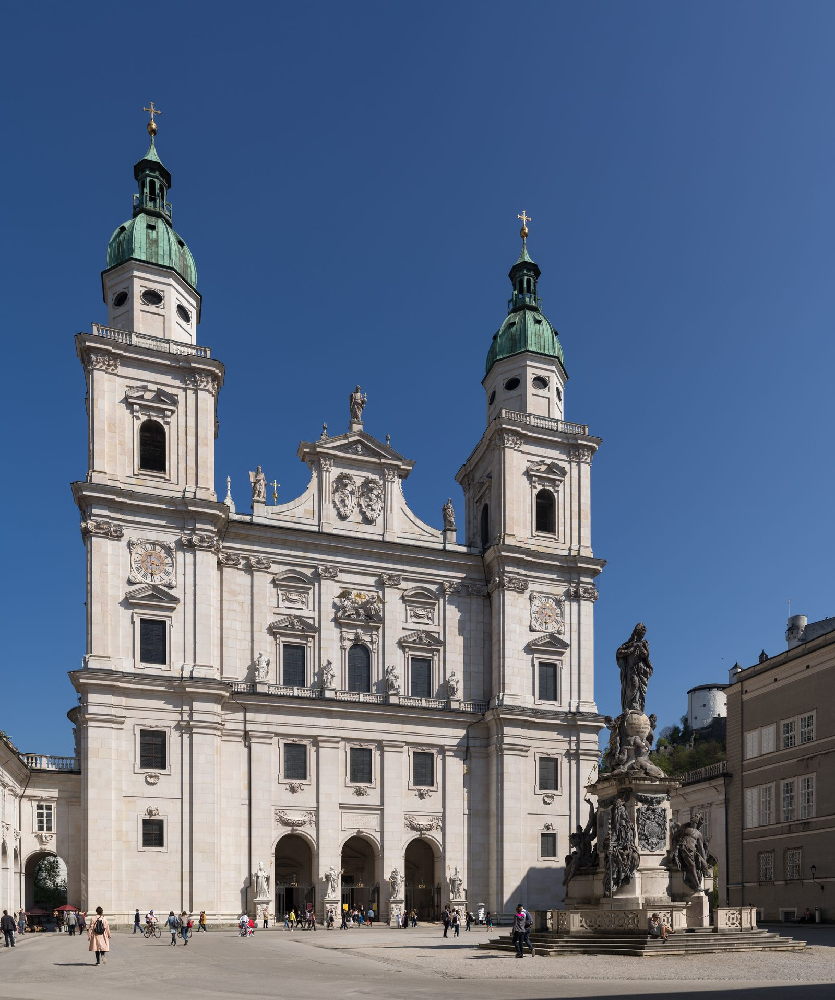
'보고 압도되는 신앙'의 파사드
설명
잘츠부르크 대성당(돔)의 정면 파사드입니다.
왜 중요한가
대주교가 자신을 로마와 같은 반열의 군주로 증명하려 한 초기 이탈리아 바로크의 대표 사례입니다.
어디서 보나
대성당 광장. 레지덴츠·수도원과 함께 하나의 무대처럼 연결돼 있습니다.
출처
Wikimedia Commons (공개 라이선스 이미지)
바로크 정원과 물의 유희
17세기헬브룬 궁 · 미라벨 정원
특징
정원이 좌우 대칭으로 설계되고, 조각과 분수가 시선의 축을 따라 배치됩니다. 헬브룬에는 손님을 물로 놀리는 장치, 물의 힘으로 작동하는 인형 극장 같은 기계 장치들이 들어 있습니다.
왜 생겼는가
물을 자유롭게 끌어와 뿜어 올리는 것은 당시 최고 수준의 토목 기술이었습니다. 즉 분수는 장식이 아니라 기술력과 재력의 전시였습니다. 자연을 기하학으로 정돈하는 것 자체가 '나는 자연도 통치한다'는 선언이었습니다.
어디를 봐야 하나 — 헬브룬에서 물이 튀는 장치에 웃고 넘기지 말고, 물길이 어디서 와서 어디로 빠지는지를 보세요. 펌프 없이 높이 차만으로 작동하는 설계입니다. 미라벨 정원에서는 정원의 중심축이 정확히 요새를 향하도록 놓인 것을 확인해 보세요 — 정원의 시야조차 권력을 가리킵니다.
시각 자료 · 설명으로 대체
정원의 축이 요새를 향하는 미라벨 정원
페가수스 분수와 대칭으로 다듬어진 화단, 그 너머로 언덕 위 호엔잘츠부르크 요새가 보이는 구도입니다. 자연을 기하학으로 정돈해 통치자의 시선을 그대로 드러낸 바로크 정원입니다.
무엇을 봐야 하나 — 정원 중심축이 정확히 요새를 향해 뻗어 있는지 확인해 보세요. 시야 하나까지 권력을 가리키도록 설계됐습니다.
자연을 통치한다는 선언, 바로크 정원
설명
미라벨 정원의 대칭 화단과 분수, 배경의 호엔잘츠부르크 요새입니다.
왜 중요한가
정원을 기하학으로 정돈하는 것 자체가 '나는 자연도 통치한다'는 바로크식 선언이었습니다.
어디서 보나
미라벨 정원 중심 화단에서 요새 방향으로 시선을 두면 됩니다.
출처
Wikimedia Commons (공개 라이선스 이미지)
상인 거리의 좁은 집
중세–18세기게트라이데가세 · 파사주
특징
정면 폭이 매우 좁고 대신 위로 5~6층까지 올라가며, 건물 안쪽으로 깊게 이어집니다. 건물들 사이를 관통하는 통로(파사주)가 골목과 골목을 연결하고, 벽면에는 그림으로 업종을 알리는 철제 간판이 달립니다.
왜 생겼는가
산과 강 사이에 끼여 넓힐 땅이 없었고, 세금이 건물 정면 폭을 기준으로 매겨지는 관행도 있었습니다. 그래서 좁고 깊고 높게 지었습니다. 간판이 그림인 이유는 단순합니다 — 글을 읽지 못하는 사람이 많았기 때문입니다.
어디를 봐야 하나 — 상점 안으로 들어가 뒤쪽으로 계속 걸어보세요. 옆 골목으로 그대로 통과되는 경우가 많습니다. 관광객은 큰길만 걷지만, 현지인은 이 통로로 도시를 가로지릅니다. 그리고 간판의 그림을 보고 업종을 맞혀 보세요.
시각 자료 · 설명으로 대체
좁은 정면, 그림 간판이 이어지는 게트라이데가세
정면 폭이 좁은 건물들이 위로 여러 층 솟아 이어지고, 벽면마다 그림으로 업종을 알리는 철제 세공 간판이 골목 위로 튀어나와 있습니다.
무엇을 봐야 하나 — 간판의 그림을 보고 업종을 맞혀 보세요. 글을 몰라도 알아볼 수 있게 만든 상인들의 실용적 해법입니다.
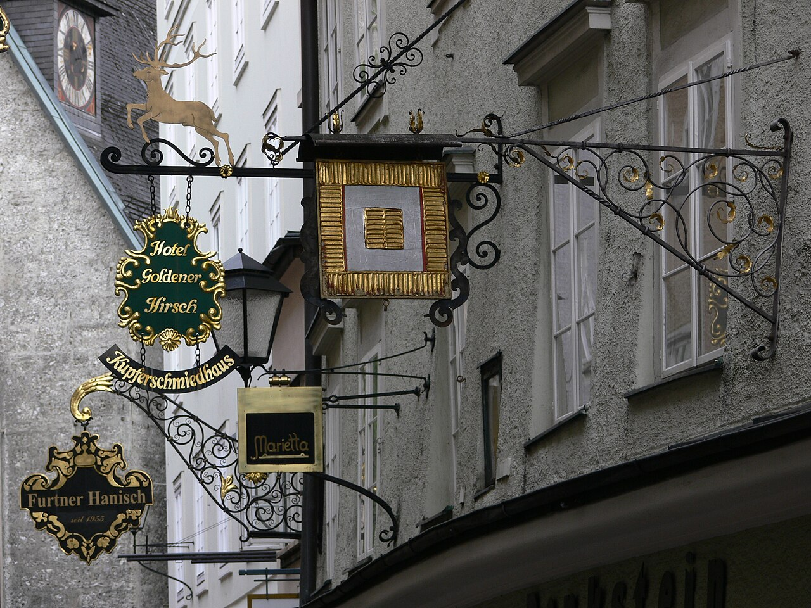
세금이 만든 골목의 형태
설명
게트라이데가세의 좁고 높은 상가 파사드와 그림 간판입니다.
왜 중요한가
정면 폭 기준 과세와 좁은 부지가 만든, 좁고 깊고 높은 건물 형태를 그대로 보여줍니다.
어디서 보나
게트라이데가세를 걸으며 위쪽 간판을 올려다보면 됩니다.
출처
Wikimedia Commons (공개 라이선스 이미지)
암벽을 파고든 건축
17세기–현대축제극장 · 마구간 · 묘지 지하묘
특징
이 도시의 독특한 장면입니다. 건물이 산에 기대는 정도가 아니라 암벽을 직접 파내 그 안에 공간을 만듭니다. 옛 채석장과 마구간이 훗날 공연장으로 전용되었고, 성 페터 묘지에는 절벽을 파낸 묘실이 있습니다.
왜 생겼는가
부지가 절대적으로 부족했기 때문입니다. 옆으로 못 넓히면 안으로 파는 것이 유일한 해법이었습니다. 게다가 도시 곳곳의 바위는 애초에 건축 석재를 캐낸 자리이기도 합니다. 재료를 얻은 구멍이 나중에 방이 된 셈입니다.
어디를 봐야 하나 — 축제극장 구역에서 객석 뒤 벽면이 가공된 암반인 것을 확인해 보세요. 세계 최고 수준의 오페라가 채석장 안에서 상연되는 셈입니다. 성 페터 묘지에서는 절벽에 난 작은 문들을 올려다보세요.
SECTION 05
예술과 음악 — 왜 지금도 중요한가
이 도시의 예술을 이해하는 핵심 질문은 하나입니다. 예술가는 누구의 돈으로 살았는가. 궁정에 고용된 음악가와, 스스로 관객을 찾아 나선 음악가 사이에 근대가 놓여 있습니다.
음악 — 궁정의 고용인에서 자유 예술가로
볼프강 아마데우스 모차르트
작곡가 · 이 도시에서 태어나 이 도시를 떠남
어린 시절 유럽 궁정을 돌며 신동으로 이름을 얻었고, 성인이 되어 고향 궁정 음악가가 되었습니다. 그러나 대주교 아래에서 그는 주문받은 음악을 만드는 고용인이었습니다. 자유를 얻으려 빈으로 떠나 프리랜서로 살았고, 그 대가로 재정적 불안을 안았습니다.
왜 지금도 중요한가 — 그의 이탈은 개인의 성격 문제가 아니라 예술이 후원자의 소유에서 관객의 것으로 옮겨가는 전환점입니다. 오늘날 창작자가 조직을 떠나 자기 이름으로 활동하는 구조의 첫 사례에 가깝습니다.
레오폴트 모차르트
아버지 · 궁정 음악가 · 교육자
바이올린 교본을 쓴 유능한 음악가이자, 아들의 재능을 일찍 알아보고 유럽 순회를 기획한 인물입니다. 아들을 세계에 알린 사람이면서, 동시에 아들을 궁정에 붙들어 두려 한 사람이기도 했습니다.
왜 지금도 중요한가 — 재능을 어떻게 키우고 어디까지 관리해야 하는가라는 질문을 남깁니다. 기획자로서의 부모라는 주제는 오늘날 교육 논의에서 그대로 반복됩니다.
미하엘 하이든
작곡가 · 이 도시 궁정에서 평생 봉직
더 유명한 형 요제프 하이든과 달리, 그는 이 도시에 남아 오랜 기간 교회음악을 썼습니다. 모차르트가 떠난 자리를 지킨 음악가이며, 젊은 슈베르트에게도 영향을 주었습니다.
왜 지금도 중요한가 — 그는 떠나지 않은 선택을 보여줍니다. 모차르트의 이탈만 기억하면 이 도시의 음악을 절반만 보는 것입니다. 안정과 자유 중 무엇을 택하느냐의 질문은 지금도 유효합니다.
헤르베르트 폰 카라얀
지휘자 · 이 도시 출신 · 20세기 클래식의 아이콘
전후 유럽 클래식 음악계의 중심 인물로, 고향의 축제를 세계 최고 수준의 무대로 끌어올렸습니다. 음반과 영상 매체를 적극 활용해 클래식을 대중에게 확산시킨 선구자였습니다. 다만 나치 시기의 이력을 두고 지금도 논쟁이 이어집니다.
왜 지금도 중요한가 — 예술적 위대함과 정치적 처신을 어떻게 함께 평가할 것인가라는 질문의 대표 사례입니다. 이 도시가 자기 역사를 다루는 방식과도 직결됩니다.
시각 자료 · 설명으로 대체
게트라이데가세의 모차르트 생가와 철제 간판
좁은 상인 거리 양옆으로 5~6층 건물이 붙어 서 있고, 벽면마다 금박을 입힌 철제 간판이 돌출해 걸려 있습니다. 노란 외벽의 한 건물이 모차르트가 태어난 집입니다.
무엇을 봐야 하나 — 생가의 규모. 궁정 음악가 가족이 이 좁은 건물의 한 층에 세를 얻어 살았습니다. '천재의 집'이라는 이미지와 실제 생활 규모의 차이가 그의 신분을 알려줍니다.
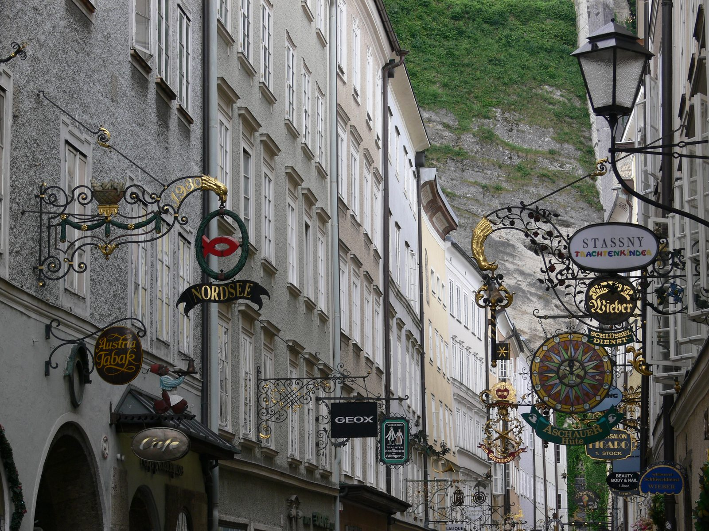
천재가 태어난 곳은 궁전이 아니었다
설명
상인들이 밀집했던 좁은 거리. 그림으로 업종을 표시한 철제 간판이 지금도 걸려 있고, 그 가운데 모차르트 생가가 있습니다.
왜 중요한가
당시 음악가는 예술가가 아니라 기술을 가진 고용인이었습니다. 상인 거리 한복판의 셋집이 그 사회적 위치를 그대로 보여줍니다.
어디서 보나
게트라이데가세 9번지(모차르트 생가 박물관). 거리 자체는 무료로 걸을 수 있습니다.
출처
Wikimedia Commons (공개 라이선스 이미지)
💡 여행 중 생각해볼 것
왜 그는 안정된 궁정 자리를 버리고 불안한 자유를 택했을까?
도시가 사랑하지 않았던 사람을 도시가 상품으로 삼는 것은 어떻게 봐야 할까?
오늘날 한국 사회와 비교하면 무엇이 다를까? — 우리는 예술가에게 어떤 방식으로 생계를 보장하고 있을까?
건축과 무대 — 도시를 기획한 사람들
볼프 디트리히 폰 라이테나우
대주교 · 도시의 설계자
로마에서 공부한 뒤 이 도시를 이탈리아식으로 재편하려 했습니다. 낡은 구역을 철거해 광장을 내고 새 대성당을 계획했습니다. 그러나 이웃 세력과의 소금 분쟁 등으로 정치적으로 실각해, 자신이 확장한 요새에 유폐된 채 생을 마쳤습니다.
왜 지금도 중요한가 — 오늘 우리가 감탄하는 광장은 강력한 권력이 주민의 동의 없이 밀어붙인 재개발의 결과입니다. 도시의 아름다움이 어떤 절차로 만들어졌는지 묻게 만듭니다.
막스 라인하르트
연출가 · 잘츠부르크 축제 창설자
전쟁으로 유럽이 무너진 직후 이 도시에 축제를 세웠습니다. 극장 안이 아니라 대성당 광장 자체를 무대로 삼아 도시 전체를 공연장으로 만들었습니다. 유대인이었던 그는 나치 병합 후 망명해야 했습니다.
왜 지금도 중요한가 — 도시 공간을 무대로 쓰는 축제 기획의 원형입니다. 오늘날 세계 각지의 도시형 페스티벌이 그의 발상을 따르고 있습니다.
후고 폰 호프만슈탈
작가 · 축제의 정신을 설계
축제의 공동 창설자로, 광장에서 상연되는 도덕극 '예더만'을 다시 썼습니다. 부와 명예를 쌓은 사람이 죽음 앞에서 무엇이 남는지 묻는 이야기입니다. 이 작품이 지금도 축제의 상징 프로그램입니다.
왜 지금도 중요한가 — 축제를 오락이 아니라 공동체가 함께 질문을 나누는 자리로 규정했습니다. 대성당 앞에서 죽음에 대한 연극을 보는 경험 자체가 그 기획의 핵심입니다.
트라프 가족
실제 인물 · '사운드 오브 뮤직'의 원형
나치 병합 후 오스트리아를 떠나 미국에서 합창단으로 활동한 실제 가족입니다. 영화처럼 산을 넘어 탈출한 것은 아니고, 기차로 떠난 것으로 알려져 있습니다. 극적인 각색이 더해진 셈입니다.
왜 지금도 중요한가 — 관광 이미지와 역사적 사실의 간극을 보여주는 가장 좋은 예입니다. 영화 촬영지를 돌 때 이 차이를 알고 보면 훨씬 깊게 남습니다.
SECTION 06
박물관과 공연을 보는 법
솔직하게 말하면, 이 도시에는 루브르 같은 대형 미술관이 없습니다. 대신 권력의 작동 방식이 그대로 남은 공간들이 있습니다. 무엇을 보러 갈지가 아니라 무엇을 알아챌지를 정하고 들어가세요.
먼저 가장 많이 듣는 질문. "모차르트 생가와 거주지 중 어디를 가야 하나요?" 관람 밀도만 따지면 강 북쪽의 거주지(Wohnhaus)가 여유롭고 설명도 충실합니다. 다만 생가에서는 다른 것을 보게 됩니다. 그 집의 크기입니다. 궁정 음악가 가족이 상인 거리 건물의 한 층에 세를 살았다는 사실 — 그 좁음이 당시 음악가의 사회적 위치를 어떤 해설문보다 정확히 알려줍니다.
모차르트 생가 — 피아노보다 '방의 크기'
게트라이데가세 9번지
전시된 악기와 악보에 시선이 쏠리지만, 정작 봐야 할 것은 방과 방 사이의 좁은 동선입니다. 여기서 여섯 명이 살았습니다. 그리고 아버지가 아들의 순회 일정을 적어둔 기록들을 보세요. 천재의 신화보다 '기획된 커리어'의 흔적이 훨씬 또렷하게 남아 있습니다.
레지덴츠 — 궁전이 아니라 '집무실'로 보기
레지덴츠 궁 · 국가전시실과 갤러리
이곳은 왕궁이 아니라 성직자가 나라를 통치한 관청입니다. 그 관점으로 방을 순서대로 지나가 보세요. 손님을 기다리게 하는 방, 접견하는 방, 결정을 내리는 방이 순서대로 배치되어 있습니다. 방의 배열 자체가 권력이 사람을 어떻게 다루는지를 보여주는 설계도입니다. 함께 있는 갤러리에서는 렘브란트를 포함한 유럽 회화도 만납니다.
대성당 — 그림보다 '소리'
잘츠부르크 대성당(Dom)
이 성당에는 파이프오르간이 여러 대 나뉘어 설치되어 있습니다. 사방에서 소리가 번지도록 설계된 것으로, 모차르트도 이곳에서 오르간을 연주하고 미사곡을 올렸습니다. 낮 시간의 짧은 오르간 연주나 미사 시간에 맞춰 들어가 눈을 감고 소리가 어디서 오는지 짚어보세요. 바로크 성당은 원래 보는 곳이 아니라 체험하는 장치였습니다.
호엔잘츠부르크 요새 — 전망보다 '내부의 대비'
요새 · 케이블카로 올라감
대부분 전망을 보고 내려옵니다. 그러나 요새 안 '황금의 방'을 놓치지 마세요. 투박한 방어 시설 한가운데 정교한 목조 장식과 금박 방이 들어앉아 있습니다. 군사 시설과 사치가 한 건물에 공존하는 이 대비가 이 도시 통치자의 이중적 성격을 그대로 보여줍니다.
헬브룬 물의 정원 — 장난 장치의 '기술'을 보기
헬브룬 궁 · 시내에서 버스로 이동
물이 튀는 장난에 웃고 지나가기 쉽지만, 이 정원의 핵심은 전기 없이 물의 높이 차만으로 작동하는 기계입니다. 물의 힘으로 수백 개 인형이 움직이는 기계 극장을 특히 오래 보세요. 당시 사람들에게 이것은 마술에 가까운 최신 기술이었습니다.
소금 광산 — 이 도시의 '원인'을 직접 보기
근교 할라인 등 · 반나절 일정
시간이 있다면 이곳이 가장 중요합니다. 도시의 모든 화려함이 어디서 나왔는지 물리적으로 확인하는 유일한 장소입니다. 광부들이 이용한 나무 미끄럼틀을 타고 갱도로 내려가면, 소금이 왜 '하얀 금'이었는지 몸으로 이해됩니다. 광산을 본 뒤 다시 대성당 앞에 서면 그 건물이 완전히 다르게 보입니다.
잘츠부르크 축제 — 표를 못 구했다면
축제극장 구역 · 대성당 광장
여름 성수기 인기 공연은 몇 달 전 매진됩니다. 하지만 방법은 있습니다. 광장에서 열리는 야외 상연, 대성당의 교회음악, 그리고 소규모 실내악은 접근이 훨씬 쉽습니다. 축제 기간이 아니라면 모차르트 만찬 콘서트나 인형극장도 좋은 대안입니다. 중요한 건 유명한 무대가 아니라 이 도시에서 음악을 실제로 한 번 듣고 가는 것입니다.
관람 원칙 — 잘츠부르크는 실내 관람을 세 곳 이상 넣으면 오히려 손해입니다. 광산과 요새 중 하나, 궁전 계열 하나, 그리고 음악 한 번. 나머지 시간은 골목과 강변에 쓰는 것이 이 도시를 가장 깊게 보는 방법입니다.
SECTION 07
현지 문화와 예절
잘츠부르크는 관광객이 많은 도시이지만, 동시에 보수적이고 가톨릭 전통이 강한 지방 도시입니다. 빈보다 격식이 덜하고 시골스러운 따뜻함이 있지만, 종교와 격식에 관해서는 오히려 더 조심스럽습니다.
가장 먼저 익힐 말은 "그뤼스 고트(Grüß Gott)"입니다. 직역하면 '신의 인사를'이라는 뜻으로, 오스트리아 남부와 바이에른에서 쓰는 일상 인사입니다. 독일 북부식 "구텐 탁"보다 이 표현이 훨씬 자연스럽고, 가게에 들어서며 이 한마디를 건네는 것만으로 태도가 달라집니다. 헤어질 때는 "아우프 비더제엔" 또는 편하게 "치아오"도 씁니다.
상황
이렇게 하세요
인사
가게·식당에 들어가며 "그뤼스 고트", 나가며 "아우프 비더제엔". 아무 말 없이 들어가 물건만 보는 것은 무례하게 느껴집니다.
호칭
모르는 성인에게는 이름이 아니라 Herr(남)/Frau(여) + 성을 씁니다. 오스트리아는 직함(박사·교수 등)을 함께 부르는 문화가 남아 있어, 상대가 직함을 쓰면 그대로 불러주는 것이 예의입니다.
성당 관람
어깨와 무릎을 가리고 모자를 벗습니다. 미사가 진행 중이면 관광 목적의 이동과 촬영을 멈추세요. 이곳은 여전히 신자들이 매일 기도하는 공간입니다.
성당 촬영
플래시와 삼각대는 대부분 금지입니다. 촬영 금지 표시가 있으면 반드시 따르고, 기도 중인 사람을 향해 카메라를 들지 마세요.
공연 관람
축제 주요 공연은 정장에 준하는 옷차림이 관례입니다. 일반 콘서트는 단정하면 충분합니다. 교향곡·협주곡은 악장 사이에 박수를 치지 않고 전곡이 끝난 뒤 칩니다. 늦으면 곡이 끝날 때까지 입장이 제한됩니다.
축제 표 예매
여름 축제 인기 공연은 수개월 전에 매진됩니다. 여행 일정이 정해지면 가장 먼저 예매하세요. 당일 반환표를 노리는 방법도 있습니다.
카페에서
서둘러 나갈 필요가 없습니다. 커피 한 잔으로 오래 앉아 있는 것이 무례가 아닙니다. 직원이 올 때까지 기다렸다가 주문하고, 계산도 테이블에서 요청합니다.
물 주문
식당에서 물은 기본 무료 제공이 아니라 주문 항목입니다. 탄산수가 기본인 곳이 많아, 탄산 없는 물을 원하면 "오네 코엔조이레(ohne Kohlensäure)" 또는 "스틸 워터"라고 말하세요.
계산과 팁
테이블에서 직원을 불러 계산합니다. 팁은 대략 5~10% 선에서 금액을 올려 말하는 방식이 일반적입니다. 잔돈을 테이블에 두고 나가기보다 계산할 때 말하는 편이 자연스럽습니다.
지불 수단
카드 사용이 늘었지만 작은 가게·카페는 현금만 받는 곳이 여전히 있습니다. 소액 현금을 늘 지참하세요. 통화는 유로입니다.
일요일
대부분의 상점이 문을 닫습니다(공휴일도 마찬가지). 식당·카페·박물관은 열지만, 장보기는 토요일에 미리 해두세요. 일요일 오전은 미사 시간이라 성당 관람이 제한될 수 있습니다.
대중교통
구시가는 도보로 충분합니다. 버스를 타면 표를 미리 사는 편이 저렴하고, 검표가 있으니 반드시 유효한 표를 소지하세요. 구시가 상당 구역은 차량 진입이 제한됩니다.
요새 오르기
케이블카가 편하지만, 걸어 오르는 길도 20~30분이면 충분하고 훨씬 좋은 시야를 만납니다. 카드형 관광 패스에 케이블카가 포함되는 경우가 있으니 미리 확인하세요.
산과 날씨
알프스 자락이라 여름에도 저녁에 급격히 춥고 비가 잦습니다. 얇은 방수 겉옷과 접이식 우산은 계절과 무관하게 챙기세요. 신발은 돌바닥에 맞는 편한 것으로.
모차르트쿠겔
초콜릿 기념품에는 원조를 자처하는 수공예 제품과 대량생산 제품이 함께 있습니다. 은박·파란 포장의 수제 원조 제품은 특정 상점에서만 팔며, 맛과 가격 모두 다릅니다.
'사운드 오브 뮤직' 화제
현지인 다수는 이 영화에 큰 애착이 없습니다. 좋아한다고 말하는 것은 문제없지만, 도시의 대표 자부심은 영화가 아니라 축제와 음악이라는 점을 기억하면 대화가 훨씬 잘 풀립니다.
20세기사 대화
나치 병합기는 오스트리아 사회에서 여전히 민감한 주제입니다. 먼저 캐묻지 않는 편이 좋고, 상대가 꺼내면 진지하게 듣는 태도가 예의입니다.
이 도시에서 꼭 먹어볼 음식
FOOD 01
잘츠부르거 노커를
Salzburger Nockerl
거품 낸 달걀흰자로 만든 폭신한 수플레 디저트. 봉긋한 세 개의 봉우리가 잘츠부르크를 둘러싼 산을 상징한다는 이야기가 있어, 이 도시에서만 먹어볼 만한 이유가 있는 메뉴입니다.
FOOD 02
케제슈페츨레
Käsespätzle
치즈를 듬뿍 얹은 알프스식 수제비 파스타. 산행 뒤 든든하게 먹기 좋은 향토 음식으로, 산악 지역 특유의 소박한 한 끼입니다.
FOOD 03
비너 슈니첼
Wiener Schnitzel
오스트리아 어디서나 만나는 대표 요리지만, 잘츠부르크에서는 관광지 식당보다 현지인이 가는 소박한 가스트하우스에서 먹는 편이 더 맛있고 저렴합니다.
FOOD 04
모차르트쿠겔
Mozartkugel
피스타치오 마지팬·누가·초콜릿으로 된 기념품 초콜릿. 위 예절표에 적었듯 은박·파란 포장의 수제 원조와 대량생산 제품의 맛이 꽤 다르니, 선물용이 아니라 직접 맛볼 거라면 원조 제품을 찾아보세요.
FOOD 05
프레즌
Brezn
겉은 짜고 속은 부드러운 알프스식 프레첼. 빵집·시장 어디서든 구할 수 있는 간단한 요기거리로, 커피 한 잔과 곁들이기 좋습니다.
생존 회화
표현
뜻 · 언제 쓰나
Grüß Gott
안녕하세요 — 가게에 들어갈 때
Danke schön
감사합니다
Bitte
부탁합니다 / 천만에요 — 만능 표현
Prost!
건배! — 편한 자리에서. 잔을 부딪칠 때 눈을 마주치세요
Wo ist die Toilette?
화장실이 어디예요?
Zahlen, bitte
계산할게요 — 자리에서 직원을 불러
💡 여행 중 생각해볼 것
왜 이 지역 사람들은 인사말에 '신'을 넣어 쓰는 걸까? 종교가 일상 언어에 남는다는 건 어떤 의미일까?
현지인이 정작 애착 없는 이미지로 도시가 유명해졌을 때, 그 도시는 무엇을 잃고 무엇을 얻을까?
오늘날 한국 사회와 비교하면 무엇이 다를까? — 우리 도시들은 어떤 이미지로 소비되고 있을까?
SECTION 08
여행지 연결 — 그리고 하루 동안 걷는다면
잘츠부르크는 이 여행에서 비교의 기준점 역할을 합니다. 프라하와 빈에서 본 것을 여기서 다시 보면, 같은 양식이 전혀 다른 사연에서 나왔다는 것을 알게 됩니다.
호엔잘츠부르크권력이 도시를 내려다보는 방식
이 요새에 오르면 이 도시의 통치 구조가 한눈에 정리됩니다. 대주교는 종교와 정치를 한 손에 쥐었고, 그 권력을 지키기 위해 도시를 내려다보는 자리에 요새를 두었습니다. 프라하성이 왕의 자리였다면, 이곳은 성직자의 자리입니다. 같은 언덕 위의 성이지만 앉아 있는 사람의 정체가 다릅니다.
→ 프라하같은 바로크, 다른 사연
이 여행에서 가장 유익한 비교입니다. 두 도시 모두 바로크로 뒤덮여 있지만 동기가 정반대입니다. 프라하의 바로크는 백산 전투에서 패한 도시에 승자인 합스부르크가 새겨 넣은 가톨릭의 언어였습니다. 반면 잘츠부르크의 바로크는 소금으로 부자가 된 성직자가 스스로 로마와 견주려 한 자기 과시입니다. 강요된 화려함과 자발적 화려함 — 형태는 닮았지만 읽는 법이 다릅니다.
→ 빈중앙의 궁정과 지방의 궁정
모차르트가 이곳을 떠나 빈으로 간 경로가 그대로 두 도시의 관계입니다. 잘츠부르크는 후원자 한 사람이 모든 것을 결정하는 작은 궁정이었고, 빈은 여러 귀족과 시민 관객이 존재하는 큰 시장이었습니다. 예술가가 자유를 찾아 이동한 방향이 곧 근대의 방향이었던 셈입니다. 빈의 화려함이 제국의 규모에서 나온 것이라면, 이곳의 화려함은 한 산업(소금)에서 나왔습니다.
→ 뮌헨알프스 가톨릭 문화권이라는 연속성
국경을 넘지만 문화는 이어집니다. 두 도시 모두 가톨릭이고, 인사말이 "그뤼스 고트"이고, 알프스와 맥주와 소금길로 연결되어 있습니다. 뮌헨의 양파형 돔과 이곳의 초록 돔이 닮은 것도 같은 문화권이기 때문입니다. 국경선이 문화의 경계와 일치하지 않는다는 것을 몸으로 확인하는 구간입니다.
→ 소금광산과 도시원인과 결과를 이어 보기
이 도시 안에서의 연결도 중요합니다. 근교 소금 광산의 갱도를 본 뒤 대성당 광장으로 돌아오면, 두 장소가 하나의 인과로 묶입니다. 땅속에서 캐낸 것이 지상의 대리석이 된 과정을 눈으로 확인하는 셈입니다. 광산을 먼저 보고 도시를 보는 순서가 이 도시를 이해하는 가장 빠른 길입니다.
하루 동안 걷는다면
이 동선의 원칙은 단순합니다. 위에서 아래로, 그리고 권력에서 일상으로. 요새에서 시작해 대주교의 공간을 지나 상인의 거리로 내려오면, 이 도시가 만들어진 순서를 그대로 거슬러 걷게 됩니다.
08:30
호엔잘츠부르크 요새 — 도시의 구조를 먼저 파악한다
문 여는 시간에 올라갑니다. 전망에서 산과 강이 도시를 어떻게 가두고 있는지 확인하고, 내부의 '황금의 방'에서 방어 시설과 사치의 공존을 봅니다.
왜 여기서 시작하나 — 이 도시는 좁고 골목이 많아 지상에서는 전체 구조가 보이지 않습니다. 위에서 지형을 한 번 봐 두면 이후 모든 이동이 지도 없이 이해됩니다. 아침 빛이 구시가로 들어오는 시간이기도 합니다.
10:30
대성당 광장과 레지덴츠 — 권력의 무대에 서기
요새에서 내려와 대성당에 들어가 오르간 소리를 듣고, 레지덴츠의 방들을 순서대로 지나갑니다. 광장에서 대성당·궁전·수도원이 하나의 무대처럼 연결된 구조를 확인합니다.
왜 이 순서인가 — 요새(방어)를 본 직후에 궁전(과시)을 보면, 같은 통치자가 지킬 때와 보여줄 때 얼마나 다른 건물을 지었는지가 선명해집니다. 권력의 두 얼굴을 연속으로 보는 구간입니다.
12:30
성 페터 묘지와 암벽 구역 — 도시가 바위를 파낸 자리
수도원 묘지에서 절벽을 파낸 묘실을 보고, 축제극장 구역으로 넘어가 옛 채석장이 공연장이 된 공간을 지납니다. 점심은 이 근처 수도원 계열 식당이나 광장의 노점.
왜 붙여서 보나 — 화려한 광장 바로 뒤가 바위를 파내 만든 공간이라는 대비를 봐야 합니다. 이 도시는 땅이 없어서 아래로, 안으로 파고들었습니다. 지형의 제약이 건축을 만든 증거입니다.
14:00
게트라이데가세 — 권력에서 상업으로 내려오기
좁은 상인 거리를 걷습니다. 철제 간판의 그림으로 업종을 맞혀보고, 상점을 통과해 옆 골목으로 빠지는 파사주를 일부러 이용해 봅니다. 모차르트 생가는 이 거리 안에 있습니다.
왜 이 순서인가 — 대주교의 광장을 먼저 본 뒤 상인의 거리에 들어서면, 같은 도시에서 통치자와 시민이 얼마나 다른 크기의 공간을 썼는지 몸으로 비교됩니다. 생가의 좁음이 그때 의미를 갖습니다.
16:00
강을 건너 미라벨 정원 — 도시를 반대편에서 보기
잘차흐강을 건너 북쪽으로 갑니다. 미라벨 정원에서 정원의 중심축이 요새를 향하도록 놓인 것을 확인하고, 강변에서 구시가 전경을 봅니다.
왜 강을 건너나 — 아침에 요새에서 도시를 내려다봤다면, 이제 도시 쪽에서 요새를 올려다보는 시점이 필요합니다. 정원의 축이 요새를 향한다는 사실은, 이 도시에서 시선조차 권력을 향해 설계되었음을 보여줍니다.
19:00
음악 한 번, 그리고 맥주 한 잔
대성당의 교회음악, 궁전 실내악, 인형극장 중 하나를 봅니다. 이후 수도원 양조 전통이 남은 맥주홀에서 하루를 마무리합니다.
왜 이렇게 끝맺나 — 이 도시의 건축은 전부 음악을 담기 위한 그릇이었습니다. 건물만 보고 소리를 듣지 않으면 절반만 본 셈입니다. 그리고 수도원이 술을 빚었다는 사실에서, 이 도시의 종교가 얼마나 생활과 붙어 있었는지 마지막으로 확인하게 됩니다.
이 동선의 논리요새(방어) → 대성당·레지덴츠(과시) → 암벽 구역(제약) → 상인 거리(일상) → 강 건너(반대 시점) → 음악(목적). 걷는 순서가 그대로 이 도시가 지어진 이유의 순서입니다.
04 / CITY ARCHIVE — MUNICH
뮌헨 딥다이브 · 여행 예습 노트
독일이기 전에 바이에른이었던 도시
700년을 다스린 가문, 제도가 된 맥주, 그리고 20세기의 가장 무거운 기억까지. 폭격으로 잿더미가 된 구시가를 옛 도면대로 되살린 이 도시는, 원본이 남은 프라하와 나란히 놓일 때 '오래된 것이란 무엇인가'를 묻게 만듭니다.
SECTION 01
뮌헨을 5분 만에 이해하기
공항에서 시내로 들어와 마리엔 광장에 처음 서면, 사람들은 흔히 "여기가 독일 맞나? 어쩐지 오스트리아 같은데" 하고 갸웃거립니다. 그 위화감이 이 도시를 이해하는 첫 열쇠입니다. 지금 당신이 서 있는 이곳은 오래도록 '독일'이 아니라 바이에른이었습니다. 베를린이 프로이센의 냉정한 수도라면, 뮌헨은 알프스 자락의 가톨릭 왕국이 남긴 도시입니다.
한 문장으로뮌헨은 독일이 되기 전에 700년 넘게 비텔스바흐 가문이 다스린 독립 왕국 바이에른의 심장이었고, 지금도 사람들은 "나는 독일인이기 전에 바이에른인"이라고 말합니다.
왜 독일인데 오스트리아 같은가
여기는 프로이센이 아니라 바이에른이었다
지금 당신이 보는 파스텔빛 건물, 양파 모양 성당 돔, 알프스 산자락의 풍경은 베를린이 아니라 빈에 가깝습니다. 독일이라는 통일 국가는 19세기 후반에야 등장했고, 그전까지 뮌헨은 바이에른 왕국의 수도였습니다. 통일을 주도한 것은 북부 개신교 세력 프로이센이었고, 남부 가톨릭 바이에른은 마지막 순간까지 독립을 붙들다 마지못해 합류했습니다. 그 정서가 아직 골목에 배어 있습니다.
왜 가톨릭인가
종교개혁 때 이 가문은 '지키는 쪽'을 택했다
북부 독일이 루터의 종교개혁으로 개신교가 된 반면, 남부는 가톨릭으로 남았습니다. 우연이 아닙니다. 뮌헨을 다스린 비텔스바흐 가문은 가톨릭을 지키는 최전선을 자처했고, 이 선택이 훗날 유럽 전체를 피로 물들인 30년 전쟁으로 이어집니다. 성당의 화려한 금빛 제단은 '우리는 개신교의 검소함이 아니라 가톨릭의 영광을 택했다'는 시각적 선언이었습니다.
왜 맥주가 제도인가
맥주는 취미가 아니라 법과 종교의 산물이다
뮌헨에서 맥주는 '유명한 특산품'이 아닙니다. 500년 넘은 세계 최초의 식품법 맥주순수령이 여기서 나왔고, 수도원이 사순절 금식 기간에 마실 '액체 빵'으로 맥주를 빚었습니다. 옥토버페스트조차 왕실 결혼 축하 행사에서 시작됐습니다. 즉 이 도시의 맥주는 법·종교·왕실이 겹쳐 만든 제도이지, 그저 술이 아닙니다.
왜 구시가가 새것처럼 보이는가
중세처럼 보이지만, 실은 도면대로 복원한 것이다
당신이 감탄하는 구시가의 상당 부분은 2차 세계대전의 폭격으로 무너졌던 것을 전후에 옛 도면 그대로 다시 지은 것입니다. 뮌헨은 콘크리트 신도시로 갈 수도 있었지만, 시민들은 옛 얼굴을 되살리기로 했습니다. 그래서 '중세 도시'처럼 보여도 실제로는 정교한 복원본입니다. 이 사실은 나중에 프라하와 만날 때 결정적인 대비가 됩니다.
현지인이 중요하게 여기는 것
게뮈틀리히카이트 — 함께 있는 시간의 아늑함
바이에른 사람들이 가장 소중히 여기는 정서는 게뮈틀리히카이트, 번역하기 어려운 '아늑하고 편안한 어울림'입니다. 맥주홀의 긴 공용 테이블에서 모르는 사람과 어깨를 맞대고 앉는 문화, 일요일에 온 가족이 비어가르텐에서 반나절을 보내는 습관이 여기서 나옵니다. 뮌헨은 효율의 도시가 아니라 '함께 머무는 시간'을 지키는 도시입니다.
관광객이 놓치는 것
맥주홀 뒤에 숨은 20세기의 무거운 층
대부분의 여행자는 마리엔 광장과 호프브로이하우스만 보고 떠납니다. 그러나 바로 그 맥주홀들 사이에서 나치 운동이 태어났고, 뮌헨은 스스로 '운동의 수도'로 불렸습니다. 전후 도시는 이 기억을 지우지 않고 백장미단 기념과 나치문서센터로 마주합니다. 흥겨운 표면 아래 이 도시의 가장 진지한 얼굴이 있습니다.
시각 자료 · 설명으로 대체
마리엔 광장과 신 시청사의 첨탑 숲
광장 한복판에 서면 검붉은 돌로 쌓아 올린 신 시청사가 하늘을 찌릅니다. 중세 성당처럼 보이지만 실은 19세기에 지은 네오고딕 건물입니다. 그 뾰족한 탑들 사이로 인형들이 돌아가는 글로켄슈필(장치 시계)이 걸려 있고, 광장 가운데엔 성모 마리아 기둥이 서 있습니다.
무엇을 봐야 하나 — 이 '오래돼 보이는' 건물이 사실은 왕국 시절의 국력을 과시하려 새로 지은 것이라는 점. 중세를 흉내 낸 근대의 야심이 돌 하나하나에 박혀 있습니다.
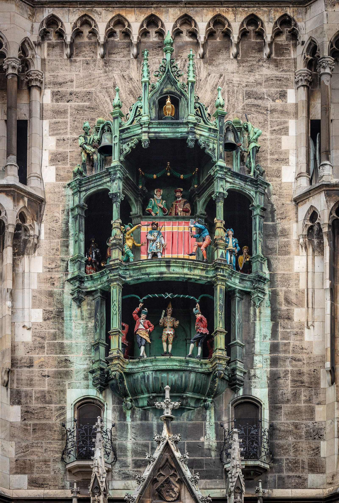
중세를 흉내 낸 근대의 광장
설명
뮌헨 구시가의 중심 마리엔 광장. 네오고딕 양식의 신 시청사와 성모 마리아 기둥, 글로켄슈필이 한눈에 들어옵니다.
왜 중요한가
중세 건물처럼 보이지만 왕국의 자부심을 표현한 근대 건축이며, 광장의 마리아 기둥은 이 도시가 가톨릭임을 못 박은 상징입니다.
어디서 보나
마리엔 광장 정중앙, 또는 성 페터 교회(알터 페터) 탑 전망대.
출처
Wikimedia Commons (공개 라이선스 이미지)
💡 여행 중 생각해볼 것
왜 뮌헨은 통일 독일에 마지막까지 합류하기를 망설였을까?
'옛 모습을 도면대로 복원한 도시'는 원본 도시와 같은 것일까, 다른 것일까?
오늘날 한국 사회와 비교하면 무엇이 다를까? — 우리에게도 '중앙(서울)이기 전에 우리 지역민'이라는 정서가 있을까?
SECTION 02
역사 타임라인 — 수도승의 땅에서 오늘까지
뮌헨의 역사는 여섯 개의 큰 물결로 읽으면 또렷해집니다. 작은 수도원 정착지에서 시작해, 한 가문이 700년을 다스리고, 화려한 왕국을 세웠다가, 20세기의 가장 어두운 그림자를 통과한 뒤 다시 일어선 이야기입니다.
I
수도승의 땅과 소금길
도시의 탄생
도시의 씨앗
München — '수도승들의 땅'
뮌헨이라는 이름 자체가 '수도승들에게 속한 곳'이라는 뜻입니다. 이자르 강가에 자리 잡은 수도원 정착지가 도시의 뿌리였고, 지금도 시의 문장에는 수도승 아이가 그려져 있습니다. 이곳이 '경건한 출발'을 잊지 않았다는 표시입니다.
부의 원천
소금이 만든 도시
중세에 소금은 음식을 저장하는 유일한 수단이자 '하얀 금'이었습니다. 뮌헨은 알프스에서 나온 소금이 지나가는 길목에 다리를 놓고 통행세를 걷으며 성장했습니다. 도시의 첫 부는 낭만이 아니라 소금 무역이라는 실리에서 나왔습니다.
권력의 등장
비텔스바흐 가문의 도착
한 가문이 바이에른의 통치권을 손에 넣습니다. 비텔스바흐 — 이후 700년 넘게 이 땅을 다스릴 이름입니다. 유럽 어느 왕조와 견주어도 손꼽히게 긴 통치의 시작이었습니다.
II
공국에서 선제후국으로
가문의 성장
수도가 되다
뮌헨, 바이에른의 중심으로
비텔스바흐 가문이 뮌헨을 거처로 삼으면서 이 도시는 지방 시장에서 궁정 도시로 올라섭니다. 왕실이 머무는 레지덴츠가 도심 한복판에 자리 잡고, 도시는 권력을 중심으로 재편됩니다.
종교의 갈림길
가톨릭을 지키는 최전선
북부가 종교개혁으로 개신교가 될 때, 비텔스바흐는 가톨릭을 지키는 쪽에 섰습니다. 이 선택은 신앙만의 문제가 아니라 정치적 야심이기도 했습니다. 가톨릭 진영의 맹주가 되면 신성로마제국 안에서 발언권이 커졌기 때문입니다.
지위 상승
선제후의 자리를 얻다
30년 전쟁에서 가톨릭 편에 선 대가로, 바이에른 공작은 선제후의 지위를 얻습니다. 선제후란 신성로마제국의 황제를 뽑는 투표권을 가진 최고위 제후를 말합니다. 유럽에서 손에 꼽는 권력자 반열에 오른 것입니다.
III
바로크의 영광
가톨릭의 화려함
돌로 쓴 신앙
금빛 성당과 궁전
가톨릭을 택한 도시답게, 뮌헨은 바로크와 로코코의 넘치는 장식으로 신앙의 승리를 과시했습니다. 아잠 형제가 지은 작은 성당은 벽 한 뼘도 비우지 않고 황금과 조각으로 채웠습니다. 검소한 개신교 예배당과는 정반대의 미학입니다.
여름 궁전
님펜부르크의 확장
선제후 가문은 도시 서쪽에 베르사유를 흉내 낸 여름 궁전 님펜부르크를 넓혀 갑니다. 넓은 정원과 긴 축선은 '우리도 프랑스 왕에 못지않다'는 자부심의 표현이었습니다.
맥주의 제도화
맥주순수령의 도시
이 시기 바이에른에서는 맥주를 물·보리·홉만으로 빚도록 규정한 맥주순수령이 자리를 잡습니다. 세계에서 가장 오래된 식품 규정 중 하나로, 오늘날까지 뮌헨 맥주의 자부심을 떠받치는 뿌리입니다.
IV
왕국과 신고전주의 황금기
이자르 강의 아테네
왕국이 되다
바이에른 왕국의 탄생
나폴레옹 전쟁의 격변 속에서 바이에른은 공국에서 왕국으로 승격합니다. 선제후는 이제 '왕'이 되었고, 뮌헨은 지방 수도가 아니라 한 왕국의 수도로서 위엄을 갖추기 시작합니다.
도시의 재설계
루트비히 1세와 '이자르 강의 아테네'
고대 그리스에 매혹된 루트비히 1세는 뮌헨을 신고전주의 건축으로 다시 짓습니다. 신전을 닮은 쾨니히스플라츠, 넓은 대로, 박물관들이 이때 생겼습니다. 사람들은 이 도시를 '이자르 강의 아테네'라 불렀습니다.
동화와 파산
루트비히 2세와 꿈의 성
정치에 지친 루트비히 2세는 노이슈반슈타인 같은 환상의 성을 지으며 현실에서 도피합니다. 성은 아름다웠지만 왕실 재정을 갉아먹었고, 이 무렵 바이에른은 이미 통일 독일 안에서 실질적 독립을 잃어 가고 있었습니다.
축제의 시작
옥토버페스트의 기원
세계 최대의 맥주 축제 옥토버페스트는 원래 왕세자의 결혼 축하 행사였습니다. 시민을 초대한 경마와 잔치가 해마다 반복되며 오늘의 축제로 굳어졌습니다. 왕실 이벤트가 도시의 정체성이 된 셈입니다.
V
20세기의 어두운 층
운동의 수도, 그리고 파괴
왕국의 끝
비텔스바흐의 퇴장
1차 세계대전의 패배와 함께 700년을 이어 온 비텔스바흐 왕정이 무너집니다. 오래된 왕조가 사라진 자리에 혼란과 분노, 그리고 극단의 정치가 스며들 틈이 생겼습니다.
어둠의 시작
맥주홀에서 태어난 나치 운동
패전 후의 혼란 속에서, 바로 이 도시의 맥주홀에서 나치 운동이 세력을 키웠습니다. 실패로 끝난 맥주홀 폭동조차 그들에게는 '순교의 신화'가 되었고, 뮌헨은 훗날 스스로 '운동의 수도'로 불렸습니다. 흥겨운 맥주 문화의 이면에 있는 가장 무거운 장면입니다.
양심의 목소리
백장미단의 저항
같은 도시의 대학에서, 숄 남매를 비롯한 젊은이들이 백장미단이라는 이름으로 나치에 맞선 전단을 뿌렸습니다. 그들은 체포되어 처형당했지만, 뮌헨은 이 침묵의 저항을 도시의 자랑으로 기억합니다.
잿더미
폭격으로 사라진 구시가
2차 세계대전의 폭격은 뮌헨 구시가의 상당 부분을 잿더미로 만들었습니다. 수백 년의 성당과 궁전, 광장이 무너져 내렸습니다. 도시는 근본적인 질문 앞에 서게 됩니다 — 무엇을, 어떻게 다시 지을 것인가.
VI
전후 복원과 오늘
기억을 다루는 도시
되살린 얼굴
옛 도면대로의 복원
잿더미 위에서 뮌헨은 콘크리트 신도시 대신 옛 모습의 복원을 택했습니다. 남아 있던 도면과 사진을 근거로 성당과 광장을 원래 자리에 되살렸습니다. 지금의 '중세 뮌헨'은 그 선택의 결과입니다.
열린 도시
올림픽과 새로운 얼굴
전후 뮌헨은 올림픽을 유치하며 세계에 '밝고 열린 독일'을 보여주려 했습니다. 텐트처럼 가벼운 올림피아파크의 지붕은 어두운 과거와 결별하겠다는 건축적 선언이었습니다.
기억의 방식
나치문서센터와 마주하기
오늘의 뮌헨은 자신이 '운동의 수도'였던 과거를 감추지 않습니다. 나치문서센터를 세워 그 역사를 정면으로 기록하고 가르칩니다. 이 도시가 흥겨움과 죄책감을 동시에 끌어안는 방식입니다.
SECTION 03
뮌헨을 설명하는 키워드 10개
이 열 단어를 알고 걷는 사람과 모르고 걷는 사람은 완전히 다른 도시를 봅니다. 어려운 말은 모두 쉽게 풀어 두었습니다.
01
바이에른
Bayern · Bavaria
뮌헨이 속한 지역이자, 독일 통일 전까지 존재한 독립 왕국의 이름. 사람들은 지금도 "독일인이기 전에 바이에른인"이라고 말합니다. 파란 마름모 무늬 깃발, 가죽바지(레더호젠), 알프스 문화가 모두 여기서 나옵니다.
02
비텔스바흐
Wittelsbach
700년 넘게 바이에른을 다스린 가문. 유럽에서 가장 오래 이어진 왕조 중 하나입니다. 레지덴츠 궁전, 님펜부르크, 노이슈반슈타인이 모두 이 가문의 작품이며, 뮌헨의 얼굴은 사실상 이 가문의 취향이 만든 것입니다.
03
가톨릭 남부
Katholischer Süden
독일이 왜 종교로 갈렸는지 이해하는 열쇠. 북부는 종교개혁으로 개신교가 되었지만, 뮌헨과 남부는 가톨릭을 지켰습니다. 화려한 성당, 마리아 기둥, 수많은 축일이 그 흔적입니다. 이 종교 지도가 훗날 정치 지도와 겹칩니다.
04
맥주순수령
Reinheitsgebot
맥주를 물·보리·홉(그리고 효모)만으로 빚도록 정한 법. 세계에서 가장 오래된 식품 규정 중 하나로 바이에른에서 나왔습니다. 뮌헨 맥주의 자부심은 맛이 아니라 '500년 넘게 지켜온 규칙'에서 옵니다.
05
옥토버페스트
Oktoberfest
세계 최대의 맥주 축제. 그러나 시작은 술이 아니라 왕세자의 결혼 축하 행사였습니다. 시민을 위한 잔치가 해마다 반복되며 축제가 되었습니다. '왕실 이벤트가 도시 정체성이 된' 대표 사례입니다.
06
루트비히 2세
Ludwig II.
노이슈반슈타인을 지은 '동화 속 왕'. 하지만 그 성은 도피의 산물이기도 했습니다. 정치적 실권을 잃어 가던 왕이 환상의 건축에 몰두하며 왕실 재정을 소진했고, 그 최후는 비극으로 끝났습니다.
07
맥주홀 폭동
Hitlerputsch · Bürgerbräu
나치가 뮌헨의 맥주홀에서 일으킨 실패한 쿠데타. 당장은 진압됐지만, 나치는 이를 '순교의 신화'로 포장했습니다. 뮌헨이 '운동의 수도'로 불리게 된 어두운 출발점입니다.
08
백장미단
Weiße Rose
나치에 맞서 전단을 뿌린 대학생 저항 조직. 숄 남매를 비롯한 청년들은 처형당했지만, 뮌헨은 그들의 '침묵을 깬 용기'를 도시의 양심으로 기립니다. 대학 앞 바닥에 전단을 본뜬 기념물이 있습니다.
09
전후 복원
Wiederaufbau
폭격으로 무너진 구시가를 옛 도면대로 되살린 선택. 그래서 지금의 '중세 뮌헨'은 사실 정교한 복원본입니다. 원본이 그대로 남은 프라하와 정확히 대비되는 지점입니다.
10
게뮈틀리히카이트
Gemütlichkeit
번역이 어려운 단어 — '아늑하고 편안한 어울림'. 맥주홀 공용 테이블, 비어가르텐의 반나절, 낯선 사람과의 건배가 모두 이 정서에서 나옵니다. 효율보다 '함께 머무는 시간'을 앞세우는 바이에른의 마음입니다.
SECTION 04
거리에서 건축 읽는 법
뮌헨의 건물은 각각 다른 시대의 야심을 품고 있습니다. 다섯 가지 양식만 구분할 줄 알면, 산책이 곧 역사 수업이 됩니다. 무엇을 봐야 하는지 정확히 짚어 드립니다.
시각 자료 · 설명으로 대체
프라우엔 교회의 두 양파형 돔
붉은 벽돌로 쌓아 올린 두 개의 탑 위에, 뾰족한 첨탑 대신 둥근 양파 모양 돔이 얹혀 있습니다. 유럽 다른 도시의 고딕 성당이 하늘을 찌르는 뾰족탑을 가진 것과 달리, 뮌헨의 이 실루엣은 부드럽고 이국적입니다. 이 두 돔은 도시 어디서든 보이는 뮌헨의 상징입니다.
무엇을 봐야 하나 — 왜 '고딕'인데 뾰족하지 않고 둥근가. 벽돌이 흔하고 돌이 귀했던 이 지역의 재료 현실이 만든, '벽돌 고딕'이라는 지역 양식입니다.
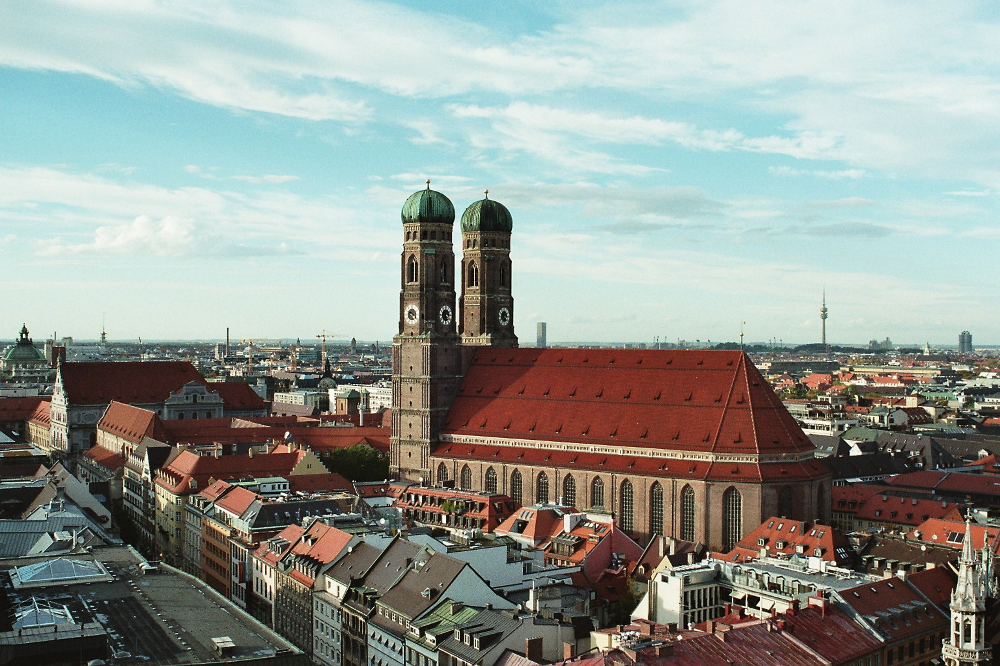
뾰족하지 않은 고딕, 뮌헨의 얼굴
설명
프라우엔 교회(성모 교회)의 쌍둥이 탑과 특유의 양파형 돔. 뮌헨 스카이라인의 대표 상징입니다.
왜 중요한가
돌이 귀한 지역에서 벽돌로 지은 '벽돌 고딕'이며, 둥근 돔은 남부 가톨릭 문화권 특유의 형태를 보여줍니다.
어디서 보나
구시가 어디서든. 시내 신축 건물 높이를 이 탑보다 낮게 제한할 정도로 상징적입니다.
출처
Wikimedia Commons (공개 라이선스 이미지)
💡 여행 중 생각해볼 것
왜 같은 '고딕'이라도 지역마다 다른 모양이 되었을까? 재료가 양식을 얼마나 결정할까?
도시가 신축 건물 높이를 성당보다 낮게 제한한다면, 그것은 무엇을 지키려는 걸까?
오늘날 한국 사회와 비교하면 무엇이 다를까? — 우리 도시에는 '넘지 말아야 할 상징적 높이'가 있을까?
벽돌 고딕
중세지역 양식
특징
돌 대신 붉은 벽돌로 쌓은 고딕. 유럽 서부의 화려한 석조 조각 대신, 벽돌 특유의 단순하고 육중한 벽면이 특징입니다. 뾰족탑 대신 둥근 양파형 돔이 얹히는 경우가 많습니다.
왜 생겼는가
이 지역은 좋은 석재가 귀하고 점토가 풍부했습니다. '있는 재료로 최선을 다한' 결과가 벽돌 고딕이며, 이는 북독일과 발트해 연안에도 공통으로 나타나는 실용의 미학입니다.
어디를 봐야 하나 — 프라우엔 교회의 양파형 돔. 뾰족한 첨탑이 아니라 둥근 돔이라는 점, 그리고 화려한 조각 없이 벽돌 벽면만으로 웅장함을 낸 방식을 보세요.
바이에른 로코코
18세기가톨릭 장식
특징
벽 한 뼘도 남기지 않고 금박·회반죽 조각·천장화로 채운 극도의 장식. 빛과 곡선이 넘쳐흘러, 안에 들어서면 천국을 미리 본 듯한 압도감을 줍니다.
왜 생겼는가
가톨릭 남부는 개신교의 검소함에 맞서 '눈으로 보이는 신앙의 영광'을 택했습니다. 화려함 자체가 신학적 주장이었습니다. 아잠 형제 같은 장인들이 이 미학을 극한까지 밀어붙였습니다.
어디를 봐야 하나 — 아잠 형제가 자기 집 옆에 지은 작은 아잠 교회. 좁은 공간을 금빛으로 가득 채운 밀도를 보면, 왜 남부가 '보여주는 신앙'을 택했는지 몸으로 이해됩니다.
시각 자료 · 설명으로 대체
벽 한 뼘도 남기지 않은 아잠 교회
좁은 골목 안, 금박과 회반죽 조각, 천장화로 벽면 전체를 가득 채운 작은 교회입니다. 아잠 형제가 자기 집 옆에 자비로 지은 건물로, 로코코 장식이 극한까지 밀어붙여진 사례입니다.
무엇을 봐야 하나 — 좁은 실내인데도 시선이 위로 끌려 올라가는 천장화의 착시 효과를 확인해 보세요.
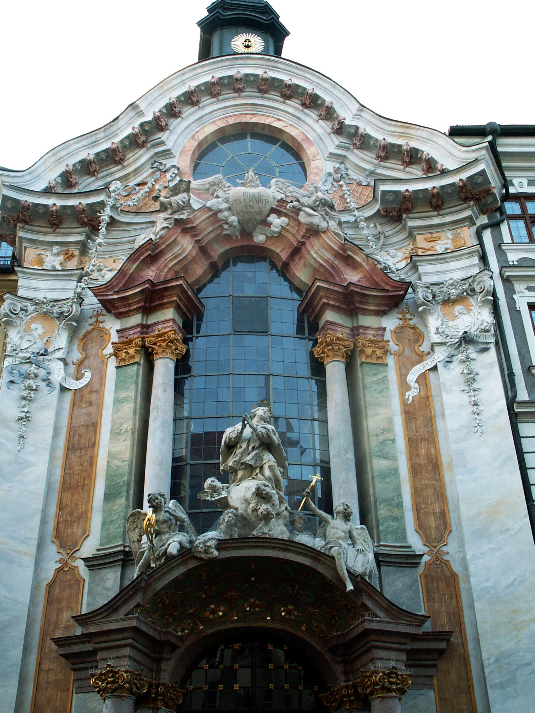
화려함 자체가 신학적 주장
설명
아잠 형제가 지은 아잠 교회 내부, 바이에른 로코코의 극단적 사례입니다.
왜 중요한가
개신교의 검소함에 맞서 '눈으로 보이는 신앙의 영광'을 택한 남부 가톨릭 미학을 보여줍니다.
어디서 보나
구시가 젠들링거 거리 인근 골목.
출처
Wikimedia Commons (공개 라이선스 이미지)
신고전주의
19세기 전반이자르 강의 아테네
특징
고대 그리스 신전을 본뜬 기둥과 삼각형 박공, 절제된 흰 돌의 위엄. 화려한 로코코의 정반대로, 이성과 균형을 강조합니다.
왜 생겼는가
고대 그리스에 매료된 루트비히 1세가 뮌헨을 '이자르 강의 아테네'로 다시 짓고자 했습니다. 새로 왕국이 된 바이에른에게 '우리는 유럽 문명의 정통 계승자'라는 이미지가 필요했고, 그리스 양식이 그 언어였습니다.
어디를 봐야 하나 — 쾨니히스플라츠(왕의 광장). 신전을 닮은 건물들이 광장을 둘러싼 이곳에 서면, 알프스 자락에 옮겨 놓은 아테네의 야심이 그대로 느껴집니다.
시각 자료 · 설명으로 대체
알프스 자락의 아테네, 쾨니히스플라츠
고대 그리스 신전을 그대로 옮겨 놓은 듯한 기둥과 삼각형 박공이 광장을 둘러싸고 있습니다. 화려한 로코코와 정반대로, 절제된 흰 돌의 위엄을 앞세운 신고전주의 양식입니다.
무엇을 봐야 하나 — 광장을 둘러싼 세 건물의 기둥 양식을 비교해 보세요. 루트비히 1세가 '이자르 강의 아테네'를 꿈꾼 이유가 보입니다.
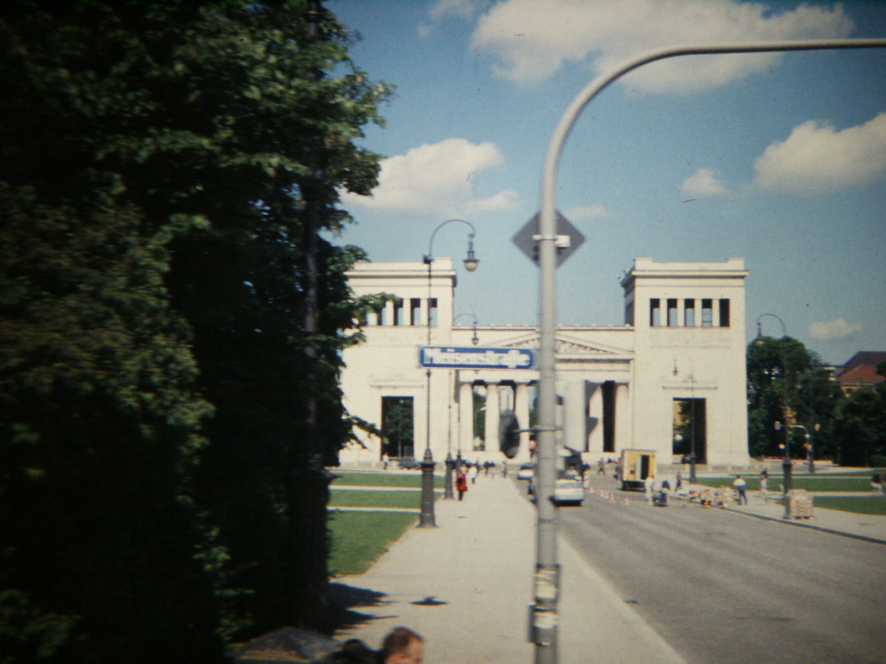
유럽 문명의 정통 계승자라는 주장
설명
쾨니히스플라츠(왕의 광장), 레오 폰 클렌체가 설계한 신고전주의 광장입니다.
왜 중요한가
새로 왕국이 된 바이에른이 '유럽 문명의 정통 계승자'임을 그리스 양식으로 주장한 사례입니다.
어디서 보나
쾨니히스플라츠, 미술관 지구(쿤스트아레알) 초입.
출처
Wikimedia Commons (공개 라이선스 이미지)
역사주의 네오고딕
19세기 후반왕국의 과시
특징
중세 고딕을 흉내 내 새로 지은 건물. 진짜 중세보다 더 뾰족하고 더 정교하게, 마치 '이상적인 중세'를 상상해 만든 것 같습니다.
왜 생겼는가
산업화 시대의 도시들은 새로 얻은 부와 자부심을 '유서 깊어 보이는' 건축으로 표현하고 싶어 했습니다. 오래된 척하는 새 건물은 왕국의 정통성과 위엄을 시각적으로 주장하는 방법이었습니다.
어디를 봐야 하나 — 마리엔 광장의 신 시청사. '중세 성당 같다'는 첫인상과 달리 근대에 지어진 것임을 알고 보면, 인형이 돌아가는 글로켄슈필까지 왕국의 홍보 장치로 읽힙니다.
시각 자료 · 설명으로 대체
신 시청사, 진짜보다 더 중세다워 보이는 근대 건물
마리엔 광장을 마주한 신 시청사의 뾰족한 첨탑과 정교한 조각들. 실제로는 19세기 후반에 지어졌지만, 오히려 진짜 중세 건물보다 더 뾰족하고 정교하게 다듬어져 '이상적인 중세'를 상상해 지은 듯한 인상을 줍니다.
무엇을 봐야 하나 — 파사드의 조각과 첨탑이 실제 중세 성당보다 훨씬 촘촘하고 규칙적인 것을 확인해 보세요. 오래된 척하는 새 건물이라는 점이 핵심입니다.
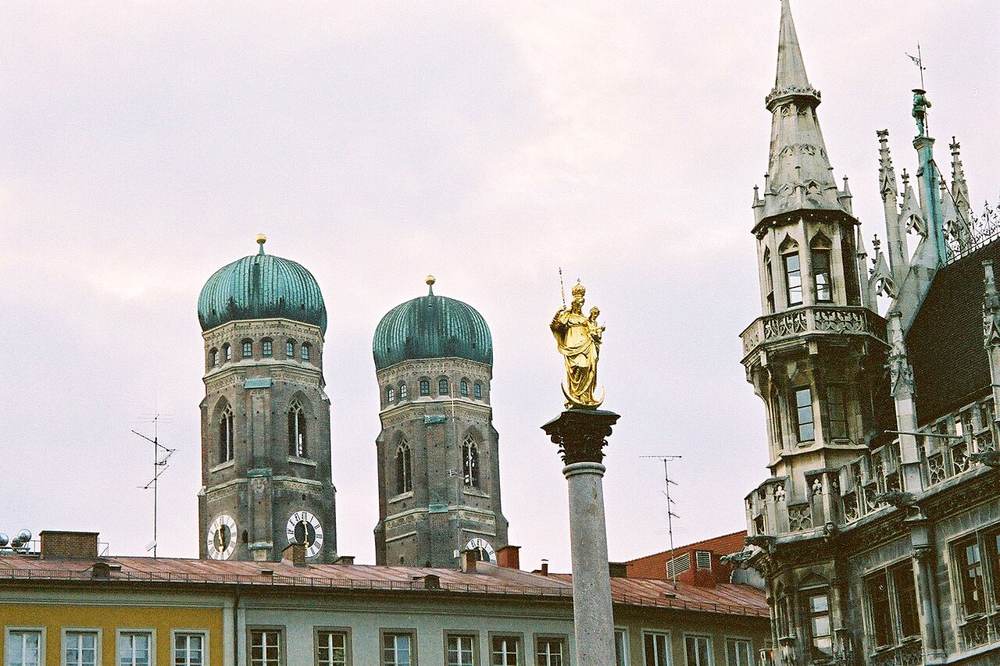
왕국이 지어낸 '유서 깊은' 얼굴
설명
마리엔 광장의 신 시청사(Neues Rathaus) 정면입니다.
왜 중요한가
산업화로 부를 얻은 도시가 정통성과 위엄을 '유서 깊어 보이는' 건축으로 주장한 대표 사례입니다.
어디서 보나
마리엔 광장. 정오·정오 무렵 종탑의 글로켄슈필 인형극도 함께 볼 수 있습니다.
출처
Wikimedia Commons (공개 라이선스 이미지)
전후 복원과 현대
20세기기억과 미래
특징
한편으로는 폭격으로 무너진 구시가를 옛 도면대로 되살린 '복원', 다른 한편으로는 텐트처럼 가볍고 투명한 현대 구조. 무거운 과거와 밝은 미래가 도시 안에 나란히 존재합니다.
왜 생겼는가
잿더미 앞에서 뮌헨은 '옛 얼굴을 되살릴 것인가, 새 도시를 지을 것인가'를 선택해야 했습니다. 구시가는 복원을 택했고, 올림픽을 위한 신축은 정반대로 과거와의 결별을 표현했습니다.
어디를 봐야 하나 — 올림피아파크의 텐트형 지붕. 물결치듯 가벼운 그 구조가, 무겁고 권위적이던 과거 독일 건축과 얼마나 다른지 대비해 보세요.
시각 자료 · 설명으로 대체
텐트처럼 가벼운 올림피아파크 지붕
거대한 그물망 구조에 투명한 아크릴판을 얹어, 텐트처럼 물결치는 지붕입니다. 무겁고 권위적인 과거 독일 건축과 정반대로, 가볍고 투명한 형태로 새 시대를 표현했습니다.
무엇을 봐야 하나 — 지붕을 지탱하는 케이블의 그물망 패턴과, 그 아래로 비치는 빛을 함께 보세요.
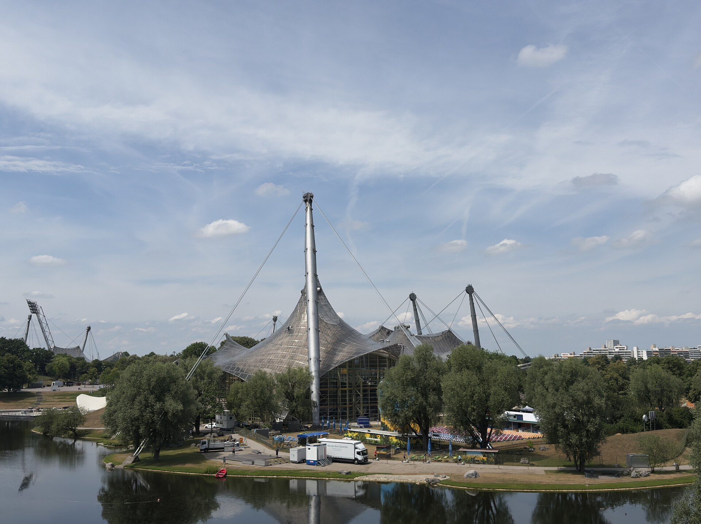
무거운 과거와 결별한 지붕
설명
1972년 뮌헨 올림픽을 위해 지어진 올림피아파크의 텐트형 지붕입니다.
왜 중요한가
과거와 결별하고 밝은 미래를 표현하려 한 전후 현대 건축의 상징입니다.
어디서 보나
올림피아파크, 시내 북쪽.
출처
Wikimedia Commons (공개 라이선스 이미지)
SECTION 05
예술과 음악 — 왜 지금도 중요한가
뮌헨은 왕의 취향, 혁신적 화가들, 그리고 목숨을 건 저항까지 낳은 도시입니다. 이 인물들을 알면, 미술관과 콘서트홀이 단순한 명소가 아니라 살아 있는 이야기로 바뀝니다.
미술
루트비히 1세
왕 · 도시 설계자
고대 그리스와 이탈리아 미술에 매혹된 왕. 자신의 컬렉션을 시민에게 공개하기 위해 박물관을 세우고, 뮌헨을 '이자르 강의 아테네'로 재설계했습니다.
왜 지금도 중요한가 — 오늘날 뮌헨이 자랑하는 미술관 지구(쿤스트아레알)의 뼈대가 이 왕의 수집벽과 야심에서 나왔습니다. 그의 취향이 곧 도시의 문화 지도가 되었습니다.
레오 폰 클렌체
건축가
루트비히 1세의 꿈을 실제 건물로 옮긴 신고전주의 건축가. 쾨니히스플라츠와 여러 박물관 건물이 그의 손에서 나왔습니다.
왜 지금도 중요한가 — 우리가 '뮌헨은 우아하고 고전적'이라고 느끼는 인상의 상당 부분이 그의 설계 언어입니다. 왕의 이상을 돌로 번역한 사람입니다.
칸딘스키
화가 · 청기사파
뮌헨에서 미술의 역사를 바꾼 러시아 출신 화가. 대상을 재현하는 대신 색과 형태 자체로 감정을 표현하는 추상미술의 길을 열었습니다.
왜 지금도 중요한가 — 현대 추상미술의 출발점이 바로 이 도시에서 시작됐습니다. 렌바흐하우스 미술관은 그 순간을 세계에서 가장 잘 보여주는 곳입니다.
프란츠 마르크
화가 · 청기사파
강렬한 색의 동물 그림으로 유명한 화가. 파란 말, 노란 소처럼 색을 정신적 의미로 사용했습니다. 청기사파의 이름 자체가 그가 좋아한 '말'과 칸딘스키의 '기사'에서 나왔습니다.
왜 지금도 중요한가 — 그는 젊은 나이에 1차 세계대전에서 전사했습니다. 그의 그림은 전쟁이 앗아간 예술적 미래가 어떤 것이었는지를 보여주는 증거입니다.
음악
리하르트 바그너
작곡가
오페라의 개념을 바꾼 혁명적 작곡가. 루트비히 2세의 열렬한 후원을 받아 뮌헨에서 주요 작품을 초연했습니다. 왕은 그의 예술에 매혹되어 막대한 재정을 지원했습니다.
왜 지금도 중요한가 — 왕과 예술가의 이 관계는 '동화 속 왕'의 다른 얼굴입니다. 바그너 후원과 환상의 성 건축은 모두 루트비히 2세가 현실보다 예술을 택한 증거입니다.
리하르트 슈트라우스
작곡가 · 뮌헨 출신
뮌헨에서 태어난 후기 낭만주의의 거장. 웅장한 관현악과 오페라로 이름을 떨쳤습니다. 이 도시의 음악적 자부심을 대표하는 인물입니다.
왜 지금도 중요한가 — 그의 존재는 뮌헨이 단지 바그너를 후원한 도시가 아니라, 스스로 세계적 작곡가를 길러낸 음악 도시임을 증명합니다.
사상 · 저항
토마스 만
작가 · 노벨문학상
독일 시민 사회의 초상을 그린 대문호. 인생의 중요한 시기를 뮌헨에서 보냈습니다. 나치가 집권하자 망명을 택하며 독일 지성의 양심을 상징하게 되었습니다.
왜 지금도 중요한가 — 그의 망명은 '문화의 도시'가 어떻게 야만에 짓밟혔는지를 보여줍니다. 뮌헨의 빛과 그림자를 한 사람의 생애로 압축한 인물입니다.
숄 남매
백장미단 · 저항 청년
한스와 조피 숄, 나치에 맞서 전단을 뿌린 대학생 남매. 폭력이 아니라 '말과 양심'으로 저항했고, 체포되어 처형당했습니다.
왜 지금도 중요한가 — 침묵이 강요되던 시대에 '아니오'라고 말한 용기의 상징입니다. 뮌헨은 이들을 도시의 양심으로 기리며, 대학과 광장에 그 이름을 새겼습니다.
아잠 형제
건축가 · 조각가
바이에른 로코코를 극한까지 밀어붙인 형제. 자기 집 옆에 자비로 작은 교회를 지어, 벽 한 뼘도 남기지 않고 금빛 장식으로 채웠습니다.
왜 지금도 중요한가 — 그들의 작품은 '가톨릭 남부는 왜 그렇게 화려했나'라는 질문에 대한 가장 생생한 답입니다. 신앙을 눈에 보이는 아름다움으로 번역한 장인들입니다.
SECTION 06
박물관을 보는 법
뮌헨의 박물관은 세계적 수준이지만, 모든 것을 다 보려다 지치기 쉽습니다. 도슨트의 시선으로 '무엇을 왜 봐야 하는지'만 골라 드립니다.
미술관에서 가장 흔한 실수는 '유명한 작품을 확인하고 사진 찍기'입니다. 하지만 진짜 감동은 왜 이 작품이 여기 있는지, 이 도시의 어떤 역사가 그것을 여기 데려왔는지 알 때 옵니다. 뮌헨의 컬렉션 상당수는 비텔스바흐 가문과 루트비히 1세의 수집벽에서 나왔다는 점을 기억하면, 미술관 자체가 하나의 역사 서사로 읽힙니다.
알테 피나코테크
쿤스트아레알(미술관 지구)
알테 피나코테크에서 반드시 봐야 할 것은 '가장 유명한 그림'이 아니라 뒤러의 자화상과 루벤스의 대형 화면입니다. 뒤러는 자신을 거의 예수처럼 정면으로 그려 '예술가도 창조자'라고 선언했고, 루벤스는 가톨릭의 넘치는 생명력을 거대한 화폭으로 보여줍니다. 이 두 작품만으로도 북유럽과 남유럽 미술의 차이가 손에 잡힙니다.
렌바흐하우스
쿤스트아레알
여기서 봐야 할 것은 청기사파입니다. 칸딘스키와 프란츠 마르크가 대상을 색과 형태로 해체하며 추상으로 나아간 바로 그 순간을, 세계에서 가장 풍부하게 소장한 곳입니다. 파란 말 앞에 서면 '왜 말이 파란색인가'가 아니라 '색이 감정을 표현할 수 있는가'라는 질문이 열립니다.
노이에 피나코테크 · 모던
쿤스트아레알
알테가 옛 거장이라면, 노이에와 피나코테크 데어 모데르네는 19~20세기와 현대를 잇습니다. 여기서는 개별 작품보다 '미술이 재현에서 추상으로, 다시 디자인과 건축으로 확장되는 흐름'을 따라가 보세요. 뮌헨 미술관 지구를 한 편의 시대순 이야기로 읽는 마지막 장입니다.
독일 박물관
이자르 강 섬
세계 최대급 과학기술 박물관. 광산 갱도 재현부터 항공기까지, 직접 만지고 걷는 전시가 많습니다. 여기서 볼 것은 개별 기계가 아니라 '독일이 어떻게 기술 강국이 되었는가'라는 국가적 자부심의 서사입니다. 아이와 함께라면 뮌헨에서 가장 오래 머물 곳입니다.
레지덴츠 보물관
구시가 · 왕궁
비텔스바흐 가문이 700년간 모은 왕관·보석·공예품이 있는 곳. 봐야 할 것은 반짝임 자체가 아니라 '한 가문이 이만큼의 부와 지위를 얼마나 오래 유지했는가'입니다. 보물 하나하나가 이 왕조의 야심과 권세를 증언합니다.
나치문서센터
쾨니히스플라츠 인근
즐거운 관광에서 가장 무거운 발걸음. 이곳은 유물 전시장이 아니라 '뮌헨이 어떻게 운동의 수도가 되었고, 그것을 지금 어떻게 마주하는가'를 기록한 공간입니다. 화려한 맥주홀과 이 건물이 걸어서 멀지 않다는 사실이, 이 도시의 두 얼굴을 압축합니다.
님펜부르크 궁전
도시 서쪽
비텔스바흐의 여름 궁전. 넓은 정원과 긴 축선은 프랑스 베르사유를 향한 부러움과 경쟁심의 표현입니다. 봐야 할 것은 방의 화려함보다, '남부의 한 가문이 어떻게 유럽 왕실의 격식을 따라잡으려 했는가'라는 야심입니다.
알테 피나코테크의 뒤러, 렌바흐하우스의 청기사파, 나치문서센터 — 이 세 곳만 이어서 보아도 '옛 거장 → 현대의 탄생 → 20세기의 파국'이라는 뮌헨 예술사의 큰 줄기가 하루 만에 손에 잡힙니다.
SECTION 07
현지 문화와 예절
바이에른에는 겉보기보다 촘촘한 규칙과 예의가 있습니다. 몇 가지만 알아도 현지인의 인상이 완전히 달라지고, 뜻밖의 실수를 피할 수 있습니다.
뮌헨 사람들은 흥겹지만 규칙을 소중히 여깁니다. 특히 맥주와 관련된 예절, 공공질서, 그리고 나치 역사와 관련된 법적 금기는 반드시 알아 두어야 합니다. 아래 표를 익히면 여행이 훨씬 매끄러워집니다.
상황
이렇게 하세요
비어가르텐(야외 맥주 정원)
전통적으로 '자기 음식 지참이 허용된 구역'이 있습니다. 이런 곳에서는 음료만 사고 도시락을 펼쳐도 됩니다. 단, 식사 서비스가 되는 테이블 구역과 구분하세요.
건배할 때
"프로스트!"라고 외치며 잔을 부딪칠 때 반드시 상대의 눈을 마주치세요. 눈을 피하면 무례로 여겨집니다. 잔은 아래쪽 두꺼운 부분끼리 부딪칩니다.
공용 테이블(슈탐티쉬)
맥주홀의 긴 테이블 중 'Stammtisch' 표시가 있는 자리는 단골 전용석입니다. 함부로 앉지 마세요. 그 외 공용 테이블은 모르는 사람과 합석하는 것이 자연스럽습니다.
식당 팁
계산서 금액에 5~10%를 얹어, 낼 금액을 종업원에게 말하는 방식이 일반적입니다. 테이블에 동전을 놓고 나오기보다 계산 시 "얼마로 해 주세요"라고 말하세요.
대중교통(U반·S반) 검표
개찰구가 없는 정직 시스템입니다. 표는 타기 전 반드시 '펀칭(각인)'하세요. 검표원에게 무표로 걸리면 큰 벌금을 뭅니다. "몰랐다"는 통하지 않습니다.
일요일(루헤타크)
일요일은 '쉬는 날'로 대부분의 상점이 문을 닫습니다. 큰 소음(잔디깎이 등)도 삼가는 것이 관례입니다. 장보기는 토요일까지 끝내 두세요.
성당 예절
화려한 성당도 여전히 예배 공간입니다. 미사 중에는 조용히, 노출이 심한 복장은 피하고, 플래시 촬영은 자제하세요.
인사말
바이에른에서는 "구텐 탁"보다 "그뤼스 고트"(직역: 신의 인사를)라는 지역 인사를 씁니다. 상점이나 식당에 들어설 때 먼저 건네면 좋은 인상을 줍니다.
나치 상징 관련
나치 상징·경례·구호는 법으로 엄격히 금지됩니다. 장난이나 사진 흉내조차 형사 처벌 대상입니다. 절대 하지 마세요.
자전거도로
인도 옆에 붉은색으로 구분된 자전거 전용도로가 있습니다. 무심코 걸어 들어가면 자전거와 충돌하거나 크게 항의받습니다. 항상 보행자 구역을 확인하세요.
결제 수단
독일은 여전히 현금 선호가 강합니다. 작은 가게·비어가르텐·시장에서는 카드가 안 될 수 있으니 현금을 늘 지니세요.
줄서기와 개인공간
질서와 순서를 중시합니다. 새치기는 큰 결례이며, 낯선 사람과의 거리도 어느 정도 유지하는 것이 예의입니다.
맥주 주문 단위
맥주홀에서 기본 단위는 종종 1리터(마스)입니다. 부담되면 0.5리터(할베)를 달라고 하세요. 물처럼 벌컥이지 말고 천천히 즐기는 것이 현지 방식입니다.
이 도시에서 꼭 먹어볼 음식
FOOD 01
바이스부어스트
Weißwurst
흰 송아지 소시지. 전통적으로 정오 종이 울리기 전까지만 먹는다는 관습이 있어 "바이스부어스트 시간(Weißwurst-Zeit)"이라 부릅니다. 껍질을 벗겨 겨자에 찍어 프레즐과 함께 아침 겸 먹는 뮌헨식 브런치입니다.
FOOD 02
슈바인스브라텐
Schweinsbraten
돼지고기 구이에 감자 덤플링과 양배추 절임을 곁들인 바이에른 가정식. 비어홀 어디서나 든든한 한 끼로 먹을 수 있습니다.
FOOD 03
학세
Schweinshaxe
바삭하게 구운 돼지 정강이. 비어홀의 명물 요리로, 혼자 먹기엔 양이 많아 나눠 먹는 것을 권합니다.
FOOD 04
프레즌
Brezn
겉은 짜고 속은 부드러운 바이에른식 프레첼. 맥주 안주로도, 가벼운 간식으로도 어디서든 만나는 일상 빵입니다.
생존 회화
표현
뜻 · 언제 쓰나
Grüß Gott
안녕하세요 — 가게에 들어갈 때
Danke schön
감사합니다
Bitte
부탁합니다 / 천만에요 — 만능 표현
Prost!
건배! — 잔을 부딪칠 때 눈을 마주치세요
Wo ist die Toilette?
화장실이 어디예요?
Zahlen, bitte
계산할게요 — 자리에서 직원을 불러
💡 여행 중 생각해볼 것
개찰구 없는 '정직 시스템'이 유지된다는 것은, 그 사회가 무엇을 전제하고 있다는 뜻일까?
나치 상징을 법으로 금지하는 것은 표현의 자유를 제한하는 걸까, 아니면 지키는 걸까?
오늘날 한국 사회와 비교하면 무엇이 다를까? — 우리에게 '일요일에 온전히 쉬는 문화'가 사라진 이유는 무엇일까?
SECTION 08
여행지 연결 — 그리고 하루 동안 걷는다면
뮌헨은 홀로 이해되지 않습니다. 이웃 도시들과 이어 볼 때 비로소 이 도시의 위치가 또렷해집니다. 그리고 마지막에, 하루 동안 걷는 최선의 동선을 제안합니다.
잘츠부르크알프스와 가톨릭 문화권의 연속성
국경 너머 잘츠부르크에 가 보면 '여기서 독일이 끝나고 오스트리아가 시작된다'는 감각이 흐릿해집니다. 같은 알프스, 같은 가톨릭, 같은 바로크 성당. 정치적 국경과 문화적 경계가 일치하지 않는다는 사실을, 뮌헨과 잘츠부르크를 잇는 이 짧은 이동이 몸으로 알려줍니다. 남부 독일과 오스트리아는 원래 하나의 문화권이었습니다.
빈합스부르크 vs 비텔스바흐, 두 궁정의 경쟁
빈이 합스부르크 가문의 수도였다면, 뮌헨은 비텔스바흐 가문의 수도였습니다. 두 가문은 수백 년간 서로를 견제하고 혼인으로 얽히며 경쟁했습니다. 님펜부르크가 베르사유를, 빈의 쇤브룬 궁전이 같은 모델을 흉내 낸 것도 이 경쟁의 산물입니다. 두 도시의 궁전을 나란히 보면 '유럽 왕실이란 결국 서로를 의식한 자존심의 무대'였음을 알게 됩니다.
프라하폭격을 피한 원본 도시 vs 복원한 도시
이 여행의 결론은 프라하에서 완성됩니다. 뮌헨의 '중세' 구시가는 전쟁으로 무너진 뒤 옛 도면대로 다시 지은 복원본입니다. 반면 프라하는 큰 폭격을 피해 중세의 돌바닥과 건물이 원본 그대로 남았습니다. 두 도시는 비슷한 중세 도시처럼 보이지만, 하나는 정성껏 되살린 얼굴이고 다른 하나는 살아남은 얼굴입니다. 이 대비를 알고 두 도시를 걸으면, '우리가 감탄하는 옛것은 진짜 옛것인가'라는 질문이 여행 내내 따라다닙니다.
뉘른베르크같은 바이에른, 다른 기억
같은 바이에른 안에서도 뉘른베르크는 나치가 대규모 전당대회를 연 도시이자, 전후 전범 재판이 열린 곳입니다. 뮌헨이 '운동이 태어난 도시'라면 뉘른베르크는 '심판이 이뤄진 도시'입니다. 두 도시를 이으면 20세기 독일이 죄와 대면한 전체 궤적이 그려집니다.
노이슈반슈타인동화의 성, 그러나 몰락의 증거
뮌헨에서 남쪽으로 향하면 루트비히 2세의 환상의 성이 나옵니다. 아름답지만, 그것은 실권을 잃어 가던 왕이 현실에서 도피한 흔적이자 왕실 재정을 소진시킨 사치이기도 했습니다. 뮌헨의 왕궁에서 시작해 이 성에서 끝나는 여정은, 바이에른 왕국이 어떻게 화려하게 저물었는지를 보여주는 완결편입니다.
하루 동안 걷는다면
오전 9시
마리엔 광장에서 시작
도시의 심장부에서 출발합니다. 신 시청사의 글로켄슈필과 성모 마리아 기둥을 보며, 이곳이 '가톨릭 왕국의 광장'이었음을 먼저 새깁니다.
왜 이 순서인가 — 오전 인파가 적을 때 도시의 중심을 먼저 잡아 두면, 이후 모든 동선의 기준점이 생깁니다.
오전 10시
프라우엔 교회와 아잠 교회
벽돌 고딕의 양파형 돔을 올려다본 뒤, 걸어서 아잠 교회로 이동해 로코코의 금빛 밀도를 봅니다. 두 성당의 대비가 '뮌헨 건축 읽기'의 핵심입니다.
왜 이 순서인가 — 소박한 벽돌 고딕과 화려한 로코코를 연달아 보아야, 남부 가톨릭 미학의 폭이 한 번에 이해됩니다.
정오
빅투알리엔 시장과 비어가르텐 점심
구시가의 오래된 식료품 시장에서 소시지와 프레첼로 점심을. 시장 안 비어가르텐에서 잠시 앉아 게뮈틀리히카이트를 체험합니다.
왜 이 순서인가 — 오전의 진지한 건축 관람 뒤에 도시의 '생활하는 얼굴'을 맛봐야, 뮌헨이 박물관이 아니라 살아 있는 도시임을 느낍니다.
오후 2시
레지덴츠 또는 쿤스트아레알
취향에 따라 왕궁 레지덴츠에서 비텔스바흐의 권세를 보거나, 미술관 지구에서 알테 피나코테크·렌바흐하우스를 관람합니다.
왜 이 순서인가 — 점심 후 체력이 있을 때 실내의 밀도 높은 관람을 배치해, 오후의 더위나 피로를 피합니다.
오후 4시
쾨니히스플라츠와 나치문서센터
신고전주의 '왕의 광장'을 본 뒤, 바로 옆 나치문서센터로. 아테네를 꿈꾼 도시가 20세기에 무엇을 겪었는지를 같은 공간에서 마주합니다.
왜 이 순서인가 — 아름다운 신전 광장과 어두운 역사가 붙어 있다는 사실을, 걸어서 이동하며 몸으로 확인하는 것이 이 도시의 핵심 메시지입니다.
저녁
영국 정원과 맥주홀의 밤
도심 속 거대한 공원 영국 정원을 산책하고, 전통 맥주홀에서 하루를 마무리합니다. 공용 테이블에서 낯선 이와 "프로스트"를 나누며 눈을 마주쳐 보세요.
왜 이 순서인가 — 무거운 역사로 오후를 닫은 뒤, 게뮈틀리히카이트의 온기로 하루를 마감해야 뮌헨의 두 얼굴이 균형 있게 마음에 남습니다.
C1 / COUNTRY ROUTE — CZECHIA
체코 · 9월 13일–17일 · 방문지 해설
체코를 걷는 5일 언덕 위 권력에서 강 아래 상인의 도시로
이 패널은 관광지 목록이 아닙니다. 당신이 실제로 밟게 될 순서 그대로, 프라하성 언덕에서 시작해 카를교를 건너 강 아래 시민의 도시로 내려가고, 마지막엔 남쪽 변방의 소도시까지 내려가는 여정을 함께 걷습니다. 각 장소가 무엇이고, 왜 하필 거기 있고, 당시 사람들에게 어떤 의미였는지 — 그리고 대부분의 관광객이 무엇을 놓치는지를 이야기합니다. 도시의 통사(通史)는 별도의 프라하·크룸로프 도시 패널이 담당하니, 여기서는 오직 발걸음의 논리에만 집중합니다.
SECTION 01
일정과 경로 — 발걸음에도 논리가 있다
같은 도시라도 어느 순서로 걷느냐에 따라 이해가 완전히 달라집니다. 이 5일은 높은 곳의 권력에서 낮은 곳의 삶으로, 수도에서 변방으로 내려가는 구조로 짜여 있습니다.
한 문장으로언덕 위 성(권력)에서 강 아래 광장(상업)으로 내려오고, 다시 수도에서 남쪽 변방의 영주 도시로 내려가며 체코라는 나라의 위계를 몸으로 읽는 5일입니다.
체코 — 방문지와 이동 경로
설명
실제 위경도로 그린 체코 윤곽 위에 이번 일정의 거점(프라하)과 방문지(체스키크룸로프), 그리고 맥락을 이해하는 데 필요한 참고 도시를 함께 표시했습니다. 굵은 파선은 9/16 당일치기 버스, 점선은 9/17 빈행 기차입니다.
왜 중요한가
프라하가 강을 사이에 둔 '수직의 도시'라면, 이 나라 전체는 수도와 변방이라는 또 하나의 위계로 짜여 있습니다. 지도에서 크룸로프가 얼마나 남쪽 국경에 가까운지 보면, 그 도시가 왜 수도와 다른 논리로 만들어졌는지 짐작됩니다.
어디서 보나
이동 중 기차·차 안에서 이 지도를 다시 펼쳐 보세요. 창밖 풍경이 지도의 어느 지점인지 맞춰 보는 것만으로 지리 감각이 몸에 남습니다.
출처
국경·하천은 공개 지리 데이터를 단순화해 직접 작도(SVG). 방문지 좌표는 실제 위경도.
지도를 보면 당신의 5일이 두 개의 축으로 움직입니다. 하나는 프라하 안에서의 수직 이동 — 블타바강 서쪽 언덕 위의 프라하성에서 강을 건너 동쪽의 평지 구시가로 내려오는 움직임. 다른 하나는 프라하에서 남쪽으로 세 시간을 내려가 체스키크룸로프에 닿는 수평 이동입니다.
왜 이 순서가 체코를 이해하기 좋을까요. 프라하는 보헤미아의 심장이자 천 년 동안 권력이 모인 수도입니다. 왕과 황제가 언덕 위 성에서 나라를 내려다봤고, 그 아래 강가 평지에는 장사로 먹고사는 시민들의 도시가 따로 자랐습니다. 성과 광장이 강 하나를 사이에 두고 마주 본다는 이 지형이 곧 체코 역사의 축소판입니다 — 위에는 지배자, 아래에는 시민.
반면 체스키크룸로프는 완전히 다른 논리로 만들어진 도시입니다. 수도의 권력이 흘러내리는 곳이 아니라, 로젬베르크라는 한 귀족 가문이 자기 영지에 통째로 설계한 지방 도시죠. 프라하가 여러 세대의 왕과 시민이 밀고 당기며 자란 도시라면, 크룸로프는 한 집안의 취향과 야심이 강 굽이 하나에 응축된 도시입니다. 수도와 지방 영주의 도시가 어떻게 다른 논리로 지어지는지 — 이 대비를 몸으로 느끼는 것이 이번 여정의 숨은 주제입니다.
9/13 일
도착 — 도시에 발을 담그기 전, 계절부터 마신다
아침 일찍 공항에 내려 트롤리버스와 지하철로 바츨라프 광장 상단의 숙소에 짐을 풀고, 트로야 지구의 성 클라라 포도밭 와인축제를 구경합니다. 무리한 관광은 하지 않고, 산책과 이른 저녁으로 시차를 다스립니다.
왜 이 순서인가 — 도시의 무거운 역사로 곧장 뛰어들기 전에, 9월 그 순간에만 존재하는 계절의 맛(갓 발효된 포도즙)부터 몸에 새기는 것이 좋습니다. 이해의 순서란 언제나 감각이 먼저, 지식이 나중입니다.
도착일 · 공항에서 도심으로, 강 건너 트로야 포도밭까지
9/14 월
언덕 위 권력을 먼저 본다
오전 프라하성에서 성 비투스 대성당·구 왕궁·황금소로를 보고, 오후엔 네루도바 거리를 따라 말라스트라나(소지구)로 내려와 카를교를 건너 되돌아옵니다.
왜 이 순서인가 — 반드시 성을 먼저 봐야 합니다. 지배자의 시선(언덕 위)을 먼저 몸에 익힌 뒤 강을 건너 시민의 도시로 내려와야, 권력과 상업의 위계가 발바닥으로 이해됩니다. 순서를 바꿔 광장부터 보면 그 높낮이의 의미가 사라집니다.
프라하성에서 강 아래로 — 언덕 위 권력에서 다리까지 내려오는 하루
9/15 화
강 아래 시민의 도시를 파고든다
오전 유대인 지구(요세포프)와 구시가 천문시계탑 전망, 클레멘티눔 도서관을 보고, 오후엔 카를린으로 넘어가 관광객 없는 프라하를 걷습니다. 저녁은 비스트로와 재즈바로 마무리.
왜 이 순서인가 — 어제 위에서 내려다본 도시를 오늘은 그 안에서 걷습니다. 게토의 아픔, 상인·학자·유대인이 뒤엉킨 평지의 삶을 본 뒤 카를린으로 넘어가면, 과거의 프라하와 오늘의 프라하가 같은 강가에서 어떻게 갈라지는지가 보입니다.
요세포프에서 카를린·재즈바까지, 강 아래 시민의 도시
💡 여행 중 생각해볼 것
왜 지배자는 늘 언덕 위에, 시민은 강가 평지에 자리 잡았을까?
강 하나를 건너는 짧은 거리가 왜 신분의 경계였을까?
한국의 경복궁과 그 앞 시장·육의전을 떠올려 보라 — 궁궐과 저잣거리가 담 하나로 갈렸던 서울의 위계와, 강으로 갈린 프라하의 위계는 무엇이 같고 무엇이 다를까?
9/16 수
수도를 떠나 변방으로 내려간다
오전 버스로 세 시간 남쪽, 체스키크룸로프로 당일치기를 떠납니다. 오후 관광 뒤 프라하로 복귀해 늦은 저녁을 먹습니다.
왜 이 순서인가 — 프라하(수도)를 사흘 걸어 몸에 익힌 뒤에 지방으로 내려가야, 크룸로프가 수도와 얼마나 다른 논리로 만들어진 도시인지가 선명해집니다. 크룸로프를 먼저 봤다면 그저 예쁜 마을이었겠지만, 지금은 '한 가문이 통째로 설계한 도시'라는 낯섦으로 다가옵니다.
체스키크룸로프 당일치기 — 블타바가 휘돌아 만든 반도
9/17 목
빈으로 — 권력이 흘러간 방향을 따라간다
체크아웃 후 아침 기차로 프라하를 떠나 정오 무렵 빈에 도착합니다.
왜 이 순서인가 — 이 이동은 단순한 국경 넘기가 아닙니다. 백산 전투(1620) 이후 보헤미아의 권력이 실제로 빈으로 넘어갔습니다. 당신은 지금 역사가 흘러간 방향을 그대로 되짚어 합스부르크의 수도로 향하는 것입니다. 프라하에서 본 바로크 궁전들이 왜 빈의 취향을 닮았는지, 그 답이 빈에서 기다립니다.
프라하에서의 마지막 아침 — 호텔에서 중앙역까지, 도시를 마지막으로 걷는다
이 5일의 뼈대 — 위(성) → 아래(광장) → 변방(크룸로프) → 제국의 중심(빈). 높이와 거리를 따라 내려가고 넘어가는 이 동선 자체가 체코의 지정학을 요약합니다.
SECTION 02
프라하 방문지 — 발걸음마다 숨은 이야기
여기가 이 패널의 심장입니다. 당신이 나흘간 실제로 서게 될 자리들을 순서대로 짚으며, 대부분의 관광객이 사진만 찍고 스쳐 지나가는 것의 진짜 의미를 캡니다.
한 문장으로프라하는 언덕의 권력·강의 상업·게토의 아픔·지하의 저항 음악이 강 하나를 사이에 두고 층층이 쌓인 도시입니다.
성 클라라 와인축제 — 맥주의 나라에 왜 포도밭이 있나
트로야 지구 · 성 클라라 포도밭(프라하 식물원 인근, 강 북쪽 언덕)
체코는 세계에서 맥주를 가장 많이 마시는 나라입니다. 그런데 도착 첫날 당신이 서 있는 이 언덕에는 포도밭이 펼쳐져 있죠. 이 모순의 배후에는 카를 4세가 있습니다. 14세기 신성로마제국 황제였던 그는 프랑스 부르고뉴에서 포도나무를 들여와 보헤미아 언덕마다 포도를 심으라 명령했습니다. 프라하를 제국의 수도로 격상시키려면 미사에 쓸 포도주가 필요했고, 남부 유럽에 뒤지지 않는 문명의 격을 갖춰야 했으니까요. 9월 성 클라라 축일에 열리는 이 수확 축제에서 당신이 마실 부르착(burčák — 이제 막 발효를 시작한 반쯤 된 포도즙, 아직 술이라 부르기도 애매한 뿌연 음료)은 오직 이 계절, 발효 며칠 사이에만 존재합니다. 병에 담아 오래 둘 수도 없어, 9월 그 자리에서 마시는 것 자체가 계절의 특권입니다.
성 비투스 대성당 — 600년 걸린 성당, 그 미완성이 곧 역사다
프라하성 제3 안뜰 · 대성당 내부, 특히 남쪽 측랑
이 성당은 14세기에 짓기 시작해 20세기에야 완성됐습니다. 600년입니다. 성당 앞면의 서쪽 절반이 유난히 '새것' 같아 보인다면, 실제로 그 부분은 근대에 완성됐기 때문입니다 — 미완성의 세월이 곧 보헤미아의 부침(浮沈)을 증언합니다. 남쪽 측랑으로 들어가면 알폰스 무하의 스테인드글라스가 있습니다. 다른 창들이 중세식 조각 유리라면, 무하의 창은 아르누보의 곡선과 색채로 성인의 이야기를 그린 20세기 작품이라 단번에 구별됩니다. 조금 더 들어가면 성 얀 네포무츠키의 은 무덤 — 무려 2톤의 은으로 만든 바로크 조형물이 천사들에게 떠받쳐져 있습니다. 그리고 성 바츨라프 예배당의 보석 박힌 벽은, 이 성인이 곧 체코라는 나라 자체의 상징임을 말해 줍니다. 관광객 대부분은 성당의 웅장함만 보고 나오지만, 이 세 지점을 알고 보면 성당 하나에 중세·근대·성인 숭배가 겹쳐 있음이 보입니다.
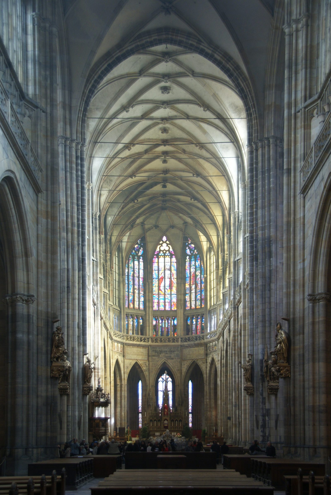
시각 자료 · 설명으로 대체
성인들의 빛, 무하의 스테인드글라스
천장까지 솟은 좁고 높은 고딕 리브 볼트 아래, 색유리 창으로 들어온 빛이 성당 내부를 물들입니다. 남쪽 측랑의 창 하나는 다른 창들과 확연히 다른 곡선과 색조로, 20세기 아르누보 화가의 손길임을 한눈에 알아볼 수 있습니다.
무엇을 봐야 하나 — 창의 화풍 차이. 중세식 조각 유리와 무하의 아르누보 창을 구별해 보세요.
성 비투스 대성당 — 600년의 시간이 쌓인 내부
설명
프라하성 안 대성당 내부, 고딕 리브 볼트와 스테인드글라스.
왜 중요한가
중세부터 20세기까지 이어진 건축·미술의 층위를 한 공간에서 확인할 수 있습니다.
어디서 보나
대성당 내부, 특히 남쪽 측랑의 스테인드글라스 창 앞.
출처
Wikimedia Commons (공개 라이선스)
구 왕궁 — 창밖으로 사람을 던져 시작된 전쟁
프라하성 구 왕궁 · 블라디슬라프 홀과 그 옆 서기실
이 방의 한 창가에서 1618년, 신교 귀족들이 가톨릭 황제의 관리 두 명을 창밖으로 던져 버렸습니다. 이 어이없는 사건 하나가 30년 전쟁 — 유럽 전체를 폐허로 만든 최악의 종교전쟁 — 의 방아쇠가 됐습니다. 던져진 관리들은 20미터 아래로 떨어지고도 살아남았는데, 가톨릭 측은 천사가 받았다 했고 신교 측은 두엄더미에 떨어졌을 뿐이라 비웃었죠. 역사의 거대한 비극이 이토록 우발적이고 우스꽝스러운 순간에서 시작됐다는 것을, 당신은 이 창가에 서서 실감하게 됩니다. 옆의 블라디슬라프 홀은 천장을 올려다보세요 — 늑골 궁륭(돌 천장을 갈비뼈처럼 뻗은 곡선 뼈대로 지탱하는 고딕 기법)이 물결치듯 얽혀 있습니다. 홀 한쪽의 넓고 완만한 말 계단은 기사들이 말을 탄 채로 홀까지 올라오던 경사로였습니다. 마상 시합이 실내에서 열렸으니까요.
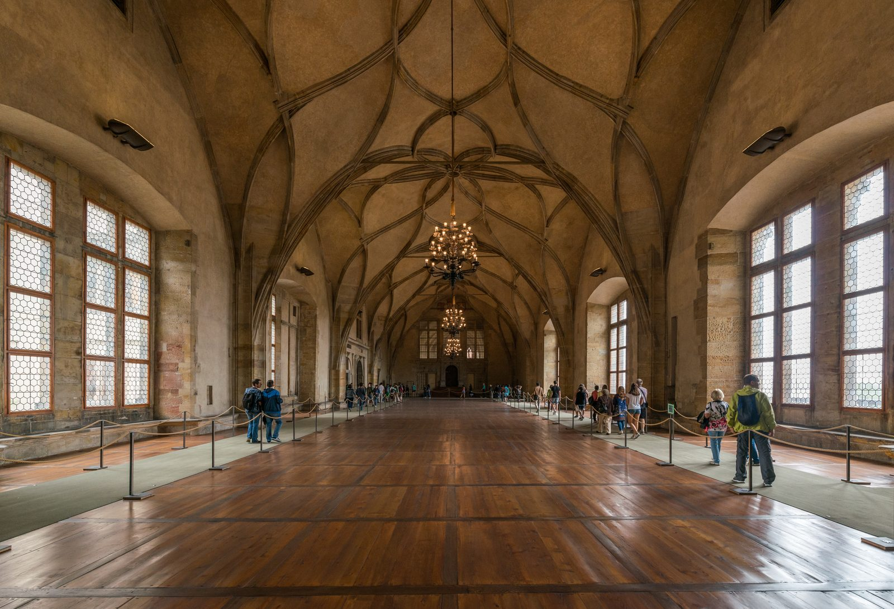
시각 자료 · 설명으로 대체
블라디슬라프 홀의 물결치는 천장
넓은 홀의 천장이 갈비뼈처럼 뻗은 돌 뼈대로 얽혀 물결 모양을 그립니다. 기둥 없이 이 넓은 공간을 떠받치는 이 구조는 후기 고딕 기술의 정점을 보여 줍니다.
무엇을 봐야 하나 — 천장의 곡선이 서로 교차하는 지점. 기사들이 말을 타고 올랐다는 완만한 경사로도 함께 확인해 보세요.
블라디슬라프 홀 — 창밖투척 사건의 현장
설명
프라하성 구 왕궁의 대회당, 후기 고딕 리브 볼트 천장.
왜 중요한가
30년 전쟁의 방아쇠가 된 사건과 마상 시합이 함께 열렸던 이 도시의 정치·의례 공간입니다.
어디서 보나
구 왕궁 내부, 블라디슬라프 홀.
출처
Wikimedia Commons (공개 라이선스)
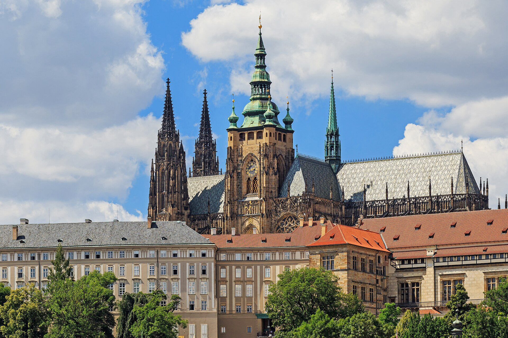
시각 자료 · 설명으로 대체
언덕 위의 성, 강 위의 다리 — 권력과 상업이 한눈에
왼쪽 언덕 위로 성 비투스 대성당의 뾰족한 첨탑들이 솟은 프라하성, 그 아래로 흐르는 블타바강, 강을 가로지르는 카를교가 한 프레임에 겹쳐 보입니다. 붉은 지붕의 바다 위로 초록 돔과 검은 첨탑이 리듬을 만듭니다.
무엇을 봐야 하나 — 성(높은 곳)과 다리(강)가 얼마나 가까이 마주 보는지. 이 짧은 거리가 지배와 상업을 갈랐던 경계입니다.
프라하성·카를교 전경
설명
블타바강 동쪽에서 서쪽 언덕의 프라하성과 카를교를 함께 담은 파노라마.
왜 중요한가
이 도시의 수직 구조 — 언덕 위 권력과 강가 상업 — 를 단 한 장으로 요약해 준다.
어디서 보나
구시가 쪽 강변, 특히 해 질 무렵 카를교 동편 다리목이나 강 건너 레트나 공원 언덕.
출처
Wikimedia Commons (공개 라이선스)
황금소로 — 연금술사의 거리가 아니라 하인들의 골목
프라하성 내 · 성벽에 잇대어 지은 좁은 색색의 집들
가이드북은 이곳을 '연금술사들이 금을 만들던 거리'로 소개하지만, 그건 후대에 붙은 낭만입니다. 실제로는 성을 지키던 하급 병사와 하인들이 성벽에 몸을 붙이고 지은 좁고 낮은 사택이었습니다. 문을 열면 허리를 굽혀야 들어가는 이 작은 집들은, 화려한 궁전 뒤편에서 성이 돌아가게 만든 이름 없는 사람들의 자리였죠. 22번지에는 프란츠 카프카가 잠시 작업실로 쓴 방이 있습니다. 거대한 성 안에서 가장 작고 낮은 이 골목이야말로, 권력의 그늘에서 일하던 사람들을 기억하는 자리입니다. 관광객은 알록달록한 집을 배경으로 사진만 찍고 지나가지만, 문 안으로 들어가 천장 높이를 재어 보면 이야기가 달라집니다.
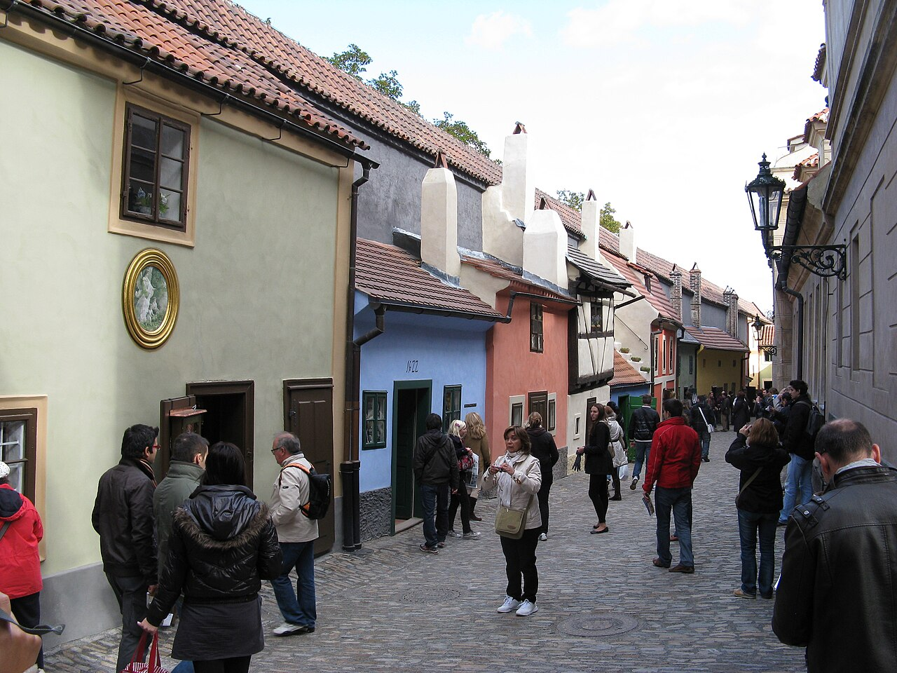
시각 자료 · 설명으로 대체
성벽에 몸을 붙인 좁고 낮은 집들
파랑, 노랑, 초록으로 칠한 작은 집들이 성벽 안쪽에 나란히 붙어 있습니다. 문 높이가 유난히 낮아, 이곳에 살던 이들의 체구가 아니라 신분을 짐작하게 합니다.
무엇을 봐야 하나 — 문의 높이. 허리를 굽혀야 들어가는 이 높이가 곧 하급 병사와 하인들의 지위를 말해 줍니다.
황금소로 — 연금술사가 아니라 하인들의 골목
설명
프라하성 성벽에 잇대어 지은 좁고 색색의 사택들.
왜 중요한가
화려한 궁전 뒤에서 성을 지키고 돌보던 이름 없는 사람들의 자리를 보여 줍니다.
어디서 보나
프라하성 내 황금소로 골목.
출처
Wikimedia Commons (공개 라이선스)
💡 여행 중 생각해볼 것
왜 우리는 하인들의 골목을 '연금술사의 거리'라는 화려한 이름으로 바꿔 기억할까?
화려한 궁전을 볼 때, 그것을 짓고 유지한 이름 없는 사람들은 어디에 있었을까?
한국의 경복궁을 걸을 때 우리는 왕의 자리는 보지만 나인·별감·장인의 자리는 잘 상상하지 않는다 — 우리가 궁궐을 보는 시선은 어디에 치우쳐 있을까?
네루도바 거리 — 번지수가 없던 시절, 문패가 곧 주소였다
프라하성에서 말라스트라나로 내려가는 가파른 언덕길
이 오르막을 내려오며 집집마다 문 위를 올려다보세요. '두 개의 태양', '초록 랍스터', '세 개의 바이올린', '금빛 열쇠' — 조각과 그림으로 된 집 문양(house sign)이 붙어 있습니다. 번지수라는 것이 아직 없던 시절, 이 문양이 곧 주소였습니다. "세 개의 바이올린 집에서 만나자"고 약속했죠. 게다가 '세 개의 바이올린'은 실제로 3대에 걸쳐 바이올린을 만든 장인의 집이었으니, 문패는 주소이자 그 집의 직업이기도 했습니다. 18세기 후반 합스부르크가 세금을 걷으려고 번지수를 강제하면서 이 문양들은 실용성을 잃었지만, 아름다워서 남았습니다. 이 거리에 얀 네루다(19세기 체코 작가, 이 동네에 살며 소지구 사람들의 삶을 소설로 남긴 인물)의 이름이 붙은 것도 그래서입니다 — 그가 사랑한 골목이니까요.
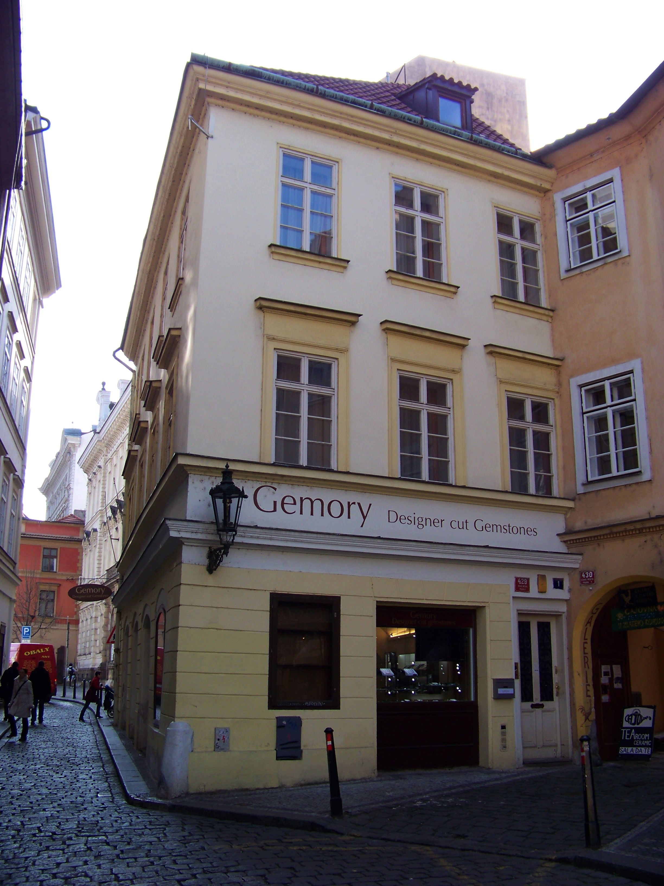
시각 자료 · 설명으로 대체
문패가 곧 주소였던 시절의 흔적
회벽 위, 문 상단에 부조나 채색으로 새긴 동물·사물 문양이 도드라져 있습니다. 랍스터·태양·바이올린·사슴 같은 형상이 집마다 다르게 붙어, 골목 전체가 그림 주소록처럼 보입니다.
무엇을 봐야 하나 — 문 바로 위 한 뼘 공간. 걷다 고개만 들면 보이는데, 대부분 스마트폰만 보느라 놓칩니다.
네루도바 거리의 집 문양
설명
번지수 이전 시대에 주소이자 직업 표식이었던 바로크 집 문양의 클로즈업.
왜 중요한가
행정이 도시를 숫자로 관리하기 전, 사람들이 어떻게 서로를 찾았는지를 보여 준다.
어디서 보나
네루도바 거리를 성에서 아래로 내려오며 좌우 건물의 문 위쪽.
출처
Wikimedia Commons (공개 라이선스)
말라스트라나(소지구) — 패배자의 땅에 세운 승리자의 궁전
카를교 서쪽 · 언덕 아래 바로크 궁전과 성당이 밀집한 구역
이 우아한 바로크 동네는 사실 몰수의 흔적입니다. 앞서 본 창밖투척 사건 이후 벌어진 백산 전투(1620)에서 신교 세력이 참패하자, 승리한 가톨릭 귀족들은 패배한 신교 귀족의 땅을 빼앗아 그 위에 화려한 궁전을 올렸습니다. 그러니 이 골목의 웅장함은 곧 누군가의 몰락 위에 세워진 것이죠. 그 정점이 성 니콜라스 성당의 거대한 초록 바로크 돔입니다. 왜 이렇게까지 과시적일까요 — 바로크는 반종교개혁의 시각 언어였기 때문입니다. 개신교가 검소한 예배당을 지향할 때, 가톨릭은 일부러 압도적인 황금과 곡선과 천장화로 "천국은 이렇게 찬란하다"고 감각을 사로잡았습니다. 이 성당의 천장을 올려다보는 순간의 현기증이, 바로 그 전략의 결과입니다.
시각 자료 · 설명으로 대체
고개를 들면 쏟아지는 하늘
돔 안쪽 천장 전체가 인물들이 가득한 프레스코화로 덮여 있고, 그 사이로 낸 창문들이 빛을 쏟아 넣습니다. 바로 아래에 서서 고개를 뒤로 젖혀야 전체가 눈에 들어오는 구조로, 감상자를 압도하도록 설계되었습니다.
무엇을 봐야 하나 — 원형 돔의 중심에서 바깥으로 퍼지는 인물들의 배치. 창문 빛과 그림이 뒤섞여 경계가 흐려지는 지점.
성 니콜라스 성당 — 바로크가 감각을 사로잡는 방식
설명
말라스트라나 성 니콜라스 성당, 돔 내부를 가득 채운 프레스코 천장화.
왜 중요한가
개신교의 검소함에 맞선 가톨릭 반종교개혁이 신자를 압도하려 설계한 시각 전략을 건축으로 보여 줍니다.
어디서 보나
성당 내부, 돔 바로 아래에서 천장을 올려다볼 때.
출처
Wikimedia Commons (공개 라이선스)
카를교 — 30개의 성상은 다리가 아니라 선전물이었다
블타바강 위 · 구시가와 소지구를 잇는 돌다리
다리 자체는 14세기 카를 4세가 놓았지만, 난간에 늘어선 30개의 바로크 성상은 훨씬 나중에 얹혔습니다. 왜일까요. 백산 전투로 보헤미아를 다시 가톨릭화하려던 세력이, 신교도들이 매일 건너는 이 다리를 거대한 야외 설교단으로 만든 것입니다. 다리를 건너는 것 자체가 가톨릭 성인들의 행렬 사이를 지나는 순례가 되도록 말이죠. 그 중심에 얀 네포무츠키 상이 있습니다 — 왕비의 고해를 발설하지 않아 이 다리에서 강에 던져졌다는 성인. 그의 발치 부조는 수많은 손길에 닳아 금빛으로 번들거립니다. 만지면 다시 프라하에 온다는 속설 때문이죠. 한 가지 전설이 더 있습니다. 다리를 튼튼하게 하려 회반죽에 계란 노른자를 섞었다는 것, 그리고 첫 돌을 놓은 시각이 정오의 홀수만으로 이루어진 순간(1357년 9월 7일 5시 31분 = 1-3-5-7-9-7-5-3-1)이었다는 점성술적 배치. 관광객은 인파에 밀려 사진만 찍고 건너지만, 성상 하나하나가 사실은 신앙을 강요하려던 정치의 도구였음을 알면 다리가 다르게 보입니다.
유대인 지구 요세포프 — 나치가 '보존한' 게토라는 잔혹한 아이러니
구시가 북쪽 · 회당 여섯 곳과 구 유대인 묘지가 남은 구역
이곳은 중세부터 유대인이 격리돼 살던 게토였습니다. 좁은 땅에 묻을 곳이 없어 시신 위에 흙을 덮고 또 묻기를 반복해, 구 유대인 묘지는 무려 12겹으로 사람이 겹겹이 잠들어 있습니다. 그래서 비석들이 서로 기대어 빽빽이 기울어져 있죠. 19세기 위생 개조로 이 지구는 대부분 철거됐지만, 회당 여섯 곳과 묘지만은 살아남았습니다. 그 이유가 소름 끼칩니다 — 나치가 이 유럽 유대 문화를 '멸종된 민족의 박물관'으로 남기려 했기 때문입니다. 유대인을 몰살한 뒤 그들의 유물을 전시하겠다는 계획. 그래서 이 골목은 학살의 표적이자, 역설적으로 학살자에 의해 보존된 이중의 상처를 지닙니다. 핀카스 회당 벽에는 홀로코스트로 희생된 보헤미아·모라비아 유대인 약 78,000명의 이름이 손으로 빼곡히 적혀 있습니다 — 이름 하나가 한 사람입니다. 그리고 이 동네는 골렘 전설의 고향이기도 합니다. 랍비 뢰브가 진흙으로 빚어 생명을 불어넣었다는 수호 괴물 골렘은, 늘 박해에 노출됐던 유대 공동체가 스스로를 지켜 줄 존재를 꿈꾼 이야기입니다.
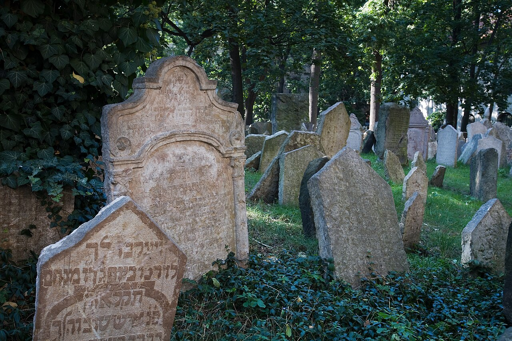
시각 자료 · 설명으로 대체
겹겹이 잠든 사람들, 기울어진 비석의 숲
좁은 땅에 수백 개의 오래된 비석이 서로 기대고 겹쳐 불규칙하게 기울어 서 있습니다. 나무 그늘 아래 이끼 낀 히브리어 비석들이 물결처럼 밀집해, 땅 아래 12겹으로 묻힌 사람들의 무게를 짐작케 합니다.
무엇을 봐야 하나 — 비석 사이의 좁은 간격과 기운 각도. 이 무질서가 곧 묻을 땅조차 부족했던 격리의 증거입니다.
구 유대인 묘지
설명
겹겹이 매장이 반복돼 비석이 빽빽이 기울어 선 요세포프의 옛 묘지.
왜 중요한가
격리와 박해, 그리고 나치의 '박물관' 계획이라는 이중의 역사를 압축한 장소.
어디서 보나
요세포프 구역 내 구 유대인 묘지 관람 동선(핀카스 회당과 연결).
출처
Wikimedia Commons (공개 라이선스)
구시가 천문시계탑 — 시간이 아니라 우주를 그린 시계
구시가 광장 · 구 시청사 남쪽 벽, 그리고 종탑 전망대
정시마다 인파가 모여 창문 위로 지나가는 열두 사도 인형을 구경하지만, 정작 중요한 건 그 아래 커다란 천문 원반입니다. 이 시계는 단순히 몇 시인지가 아니라 중세인이 믿었던 우주의 구조를 표시합니다. 원반 한가운데 지구가 있고(당시엔 지구가 우주의 중심이었으니까요), 그 둘레로 황도 12궁(태양이 일 년간 지나는 별자리 띠)과 해·달의 위치, 그리고 구 보헤미안 시간(해 질 녘을 24시로 삼던 옛 체코식 시간 표기)까지 한꺼번에 돌아갑니다. 하나의 원반이 곧 중세의 세계관 전체인 셈이죠. 시계공 하누시가 완성 후 다른 도시에 같은 시계를 못 만들게 눈을 멀게 했다는 전설이 유명하지만, 이는 후대에 지어낸 이야기입니다. 인형쇼보다 종탑 전망대에 오르세요. 붉은 지붕이 파도처럼 겹쳐 펼쳐지는 프라하가 발아래 펼쳐지고, 왜 이 도시를 '백탑의 도시'라 부르는지 눈으로 확인하게 됩니다.
클레멘티눔 도서관 — 신교의 도시에 세운 지식의 요새
구시가 · 카를교 동편, 예수회가 세운 거대한 복합 건물군
구시가 한복판, 성당·천문탑·도서관이 얽힌 이 거대한 단지는 예수회가 세웠습니다. 왜 하필 신교(후스파의 후예들)가 강했던 프라하 한복판에 이토록 큰 가톨릭 교육기관을 세웠을까요. 지식을 장악하는 것이 곧 반종교개혁의 무기였기 때문입니다. 젊은이들을 예수회 학교에서 가르치면 한 세대 안에 도시의 신앙을 되돌릴 수 있으니까요. 바로크 도서관 홀에 들어서면 천장화 아래 오래된 지구의와 천구의가 늘어서 있고, 위로는 별을 관측하던 천문탑이 솟아 있습니다. 책과 별과 신앙이 한 건물에 모인 이 공간은, 지식이 얼마나 강력한 정치적 무기였는지를 조용히 증언합니다. 관광객은 대개 '예쁜 도서관'으로만 기억하지만, 이곳은 도시의 영혼을 두고 벌인 싸움터였습니다.
카를린 — 노동자의 동네가 홍수를 겪고 가장 힙해진 사연
구시가 동쪽 · 지하철 B선 Křižíkova역 일대, 블타바 강변
구시가의 관광 인파를 빠져나와 카를린으로 넘어오면 프라하의 다른 얼굴이 보입니다. 이곳은 원래 19세기 산업화 시기의 공장 노동자 구역이었습니다. 그러다 2002년 대홍수 때 강물이 마을을 덮쳐 큰 피해를 입었죠. 그런데 폐허가 된 뒤 값싼 임대료를 찾아 스타트업·디자이너·카페 주인들이 몰려들면서, 지금은 프라하에서 가장 세련된 동네로 재생됐습니다. 부티크와 감각적인 카페, 강변 산책로가 이어지는 이 거리는 관광객 없는 진짜 프라하를 보는 창입니다. 구시가가 박제된 과거라면, 카를린은 살아 움직이는 현재입니다. 이 대비가 왜 중요할까요 — 도시를 관광지로만 보면 프라하가 시간이 멈춘 테마파크처럼 느껴지지만, 카를린을 걸으면 이 도시가 여전히 사람들이 오늘을 사는 곳임을 실감하기 때문입니다.
Jazz Dock와 프라하의 재즈 — 음악이 체제를 무너뜨린 도시
스미호프 강변 · 블타바강 위로 떠 있는 재즈 클럽
강물에 떠 있는 이 클럽에서 밤에 재즈를 듣게 되겠지만, 그 음악에는 무거운 역사가 깔려 있습니다. 공산 정권 시절, 재즈와 록은 단순한 음악이 아니라 정치였습니다. 서방의 자유로운 소리였으니까요. 1970년대 플라스틱 피플 오브 더 유니버스라는 언더그라운드 록밴드가 체포되어 재판에 넘겨지자, 지식인들은 "음악을 이유로 사람을 가두는 나라"에 분노했습니다. 이 재판이 도화선이 되어 77 헌장(인권을 요구한 반체제 선언)이 나왔고, 그 중심에 극작가 바츨라프 하벨이 있었습니다. 그리고 그 흐름은 결국 1989년 벨벳 혁명(피 흘리지 않고 공산 정권을 무너뜨린 무혈 혁명)으로 이어져, 하벨은 감옥에서 대통령이 됐습니다. 그러니 오늘 밤 당신이 듣는 색소폰 소리는, 이 도시가 총이 아니라 음악과 말로 자유를 되찾았다는 기억 위에 울리는 것입니다.
맥주홀 호스포다 — 세계 최초의 황금빛 맥주가 태어난 이유
소지구·구시가의 전통 선술집(호스포다) · 탱크 맥주를 파는 곳
오늘날 우리가 아는 투명하고 황금빛인 라거 맥주는, 사실 1842년 체코 서부 플젠(필스너)에서 처음 만들어졌습니다. 그 전까지 맥주는 대개 탁하고 어두웠죠. 플젠의 연수(軟水 — 미네랄이 적은 부드러운 물)와 새로운 저온 발효 기술, 옅게 볶은 몰트가 만나 맑고 청량한 필스너 우르켈이 태어났고, 이 황금빛이 전 세계 라거의 원형이 됐습니다. 오늘날 우리가 마시는 대부분의 라거가 이 프라하 인근에서 시작된 셈이죠. 좋은 호스포다에서는 탄크소베 피보(tankové pivo — 커다란 탱크에서 곧장 따르는 비살균 생맥주)를 마실 수 있습니다. 게다가 체코에서는 거품 따르는 방식에 이름이 있어, 흐라니체(잔 가득 진한 거품), 믈리코(우유처럼 거의 거품만) 등을 골라 주문할 수 있죠. 거품이 신선도를 지키는 뚜껑 역할을 한다는 믿음이 문화가 된 나라입니다.
Krystal·Výčep의 체코 음식 — 왜 이 나라 요리는 이런 모습인가
카를린·구시가의 현대 체코 비스트로
스비치코바(크림소스에 절인 소고기), 굴라시(진한 고기 스튜), 그리고 어디에나 곁들여 나오는 크네들리키(빵을 쪄서 만든 만두 같은 덩어리). 왜 체코 음식은 이렇게 묵직하고 소스가 많을까요. 체코는 바다가 없는 내륙국이라 생선보다 육류와 뿌리채소가 중심이었고, 길고 추운 겨울을 나려면 열량 높은 음식이 필요했습니다. 크네들리키는 그 진한 소스를 남김없이 훑어 먹기 위한, 곡물을 아끼면서도 배를 채우는 지혜였죠. 그리고 이 요리들은 오랫동안 합스부르크(오스트리아) 궁정 요리와 이어져 있었습니다 — 프라하가 빈의 지배 아래 있던 수백 년 동안, 굴라시(원래 헝가리)와 크네들리키 같은 음식이 제국 전역을 오갔으니까요. 그래서 이틀 뒤 빈에서 비슷한 소고기 요리를 만나도 놀라지 마세요. 같은 제국의 식탁이었습니다.
💡 여행 중 생각해볼 것
왜 어떤 음악은 '위험한 것'으로 취급되었을까? 소리가 어떻게 정치가 될까?
바다 없는 나라의 식탁과, 삼면이 바다인 나라의 식탁은 무엇으로 갈릴까?
한국의 1970~80년대에도 금지곡과 장발 단속이 있었다 — 체코의 언더그라운드 록 재판과 견주면, 국가가 사람들의 취향을 통제하려 한 방식은 어떻게 닮고 다를까?
프라하를 관통하는 한 가지 — 성당·다리·도서관·게토, 겉모습은 제각각이지만 대부분 신앙과 권력의 싸움이라는 한 실로 꿰여 있습니다. 백산 전투 이후의 재가톨릭화가 이 도시의 표면을 얼마나 다시 칠했는지를 염두에 두고 걸으면, 흩어진 명소들이 하나의 이야기로 모입니다.
SECTION 03
크룸로프 당일치기 — 하루 안에 도시를 읽는 법
역사와 건축의 심화는 별도의 크룸로프 도시 패널이 담당합니다. 여기서는 오직 당일치기라는 제약 안에서 무엇을 어떤 순서로 볼 것인가에 집중합니다.
한 문장으로체스키크룸로프는 한 귀족 가문이 강 굽이 하나에 통째로 그려 넣은, 살아 있는 중세 도시의 축소 모형입니다.
프라하에서 남쪽으로 세 시간. 이 이동은 단순히 작은 마을로 소풍 가는 것이 아닙니다. 당신은 지금 여러 세대의 왕과 시민이 밀고 당기며 자란 수도를 떠나, 로젬베르크라는 한 귀족 가문이 자기 영지에 통째로 설계한 도시 안으로 들어가는 것입니다.
프라하가 층층이 쌓인 지층 같은 도시라면, 크룸로프는 한 사람의 머릿속 그림에 가깝습니다. 성과 마을과 강이 마치 하나의 무대 세트처럼 어우러진 것은 우연이 아니라, 영주가 자기 권력과 취향을 한 폭의 풍경으로 완성하려 했기 때문입니다. 그래서 이곳을 걸을 때는 '무엇이 오래됐나'보다 '누가 이 전체를 하나로 상상했나'를 물어야 합니다. 당일치기의 핵심은 바로 이 설계된 통일감을 하루 안에 몸으로 느끼는 것입니다.
오전 11시
먼저 성 위로 올라가 도시 전체를 내려다본다
도착하면 곧장 언덕 위 성으로 올라가, 채색 탑이나 성의 테라스에서 도시 전체를 조망합니다.
왜 이 순서인가 — 골목부터 들어가면 길을 잃습니다. 강이 알파벳 오메가(Ω) 모양으로 마을을 감싼 이 도시는, 높은 곳에서 전체 구조를 먼저 봐야 왜 여기 도시가 생겼는지가 한눈에 들어옵니다. 지형이 곧 방어이자 설계입니다.
낮 12시
성의 회랑과 채색 탑을 가까이서 본다
내려오기 전 성의 스그라피토 장식과 채색 탑을 가까이서 살핍니다.
왜 이 순서인가 — 위에서 전체를 봤으니, 이제 이 도시를 만든 가문의 '취향'을 세부에서 확인할 차례입니다. 전체 → 세부의 순서라야 장식의 의미가 읽힙니다.
오후 1시
성에서 마을로 이어지는 다리를 건너 내려온다
성과 마을을 잇는 높은 회랑 다리를 지나 구시가 광장으로 내려옵니다.
왜 이 순서인가 — 이 다리가 성(영주)과 마을(주민)을 물리적으로 연결합니다. 위에서 아래로 내려오는 이 동선 자체가 영주가 도시를 어떻게 굽어봤는지를 몸으로 재현합니다.
오후 2시
구시가 골목과 광장을 걷는다
좁은 중세 골목과 광장을 천천히 걸으며 점심을 먹습니다.
왜 이 순서인가 — 전체 구조를 이미 머릿속에 넣었기 때문에, 이제 골목에서 길을 잃어도 두렵지 않습니다. 오히려 헤매는 것이 이 도시를 즐기는 방법입니다.
오후 3시 30분
강 굽이로 내려가 물에서 도시를 올려다본다
블타바 강가로 내려가 물 위로 솟은 성과 마을을 올려다봅니다.
왜 이 순서인가 — 마지막은 다시 낮은 곳입니다. 아침에 성 위에서 내려다본 도시를, 이제 강에서 올려다보며 시점을 뒤집습니다. 같은 도시를 위와 아래에서 모두 본 하루가 완성됩니다.
오후 5시
버스로 프라하 복귀
어둡기 전 버스에 올라 프라하로 돌아갑니다.
왜 이 순서인가 — 당일치기의 규율은 '욕심을 버리는 것'입니다. 다 보려다 아무것도 못 느끼느니, 구조 하나를 확실히 몸에 새기고 떠나는 편이 낫습니다.
크룸로프 성과 채색 탑 — 그림처럼 보이는 무늬가 사실은 긁어낸 벽이다
언덕 위 성 · 둥근 채색 탑
멀리서 보면 벽에 알록달록한 무늬가 그려진 것 같지만, 가까이 가면 놀랍습니다. 이건 페인트가 아니라 스그라피토(sgraffito — 색이 다른 회벽을 두 겹 바른 뒤 겉면을 긁어내 아래 색을 드러내는 기법)입니다. 즉 무늬가 벽 위에 얹힌 것이 아니라 벽 자체가 파여 만들어진 것이죠. 르네상스 시기 이탈리아에서 건너온 이 기법으로, 로젬베르크 가문은 벽돌이나 돌을 쓰지 않고도 성을 화려하게 '입혔습니다'. 탑 가까이 서서 손으로 무늬 결을 상상해 보세요 — 그리면 될 것을 굳이 긁어낸 이유는, 긁은 무늬가 비바람에 훨씬 오래 견디기 때문입니다.
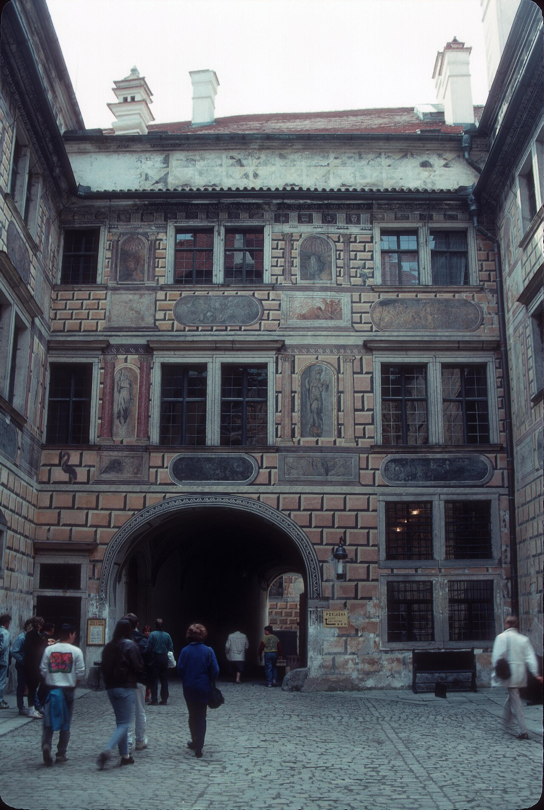
시각 자료 · 설명으로 대체
긁어서 그린 무늬, 스그라피토
성벽 표면에 마름모와 가짜 돌쌓기 무늬가 새겨져 있습니다. 페인트가 아니라 색이 다른 두 겹의 회벽을 겉면만 긁어내 아래 색을 드러낸 것입니다.
무엇을 봐야 하나 — 무늬 표면이 살짝 파여 있는지 가까이서 확인해 보세요. 그린 것이 아니라 긁어낸 것이라 비바람에 훨씬 오래 견딥니다.
벽 자체가 파여 만들어진 무늬
설명
크룸로프 성벽의 스그라피토 장식 근접 사진입니다.
왜 중요한가
벽돌이나 돌 없이도 성을 화려하게 '입힌' 로젬베르크 가문의 기법을 보여줍니다.
어디서 보나
성 안뜰과 채색 탑 주변 벽면.
출처
Wikimedia Commons (공개 라이선스)
바로크 극장 — 세계에서 거의 유일하게 아직 작동하는 18세기 무대 기계
성 안뜰 안쪽 · 원형 극장
18세기 극장은 유럽에 많았지만, 무대 아래 원형 회전 기계·배경 교체 장치·음향 장치가 지금도 원형 그대로 작동하는 극장은 세계에 손에 꼽습니다. 그 하나가 여기 있습니다. 밧줄과 도르래, 나무 톱니바퀴로 순식간에 숲을 궁전으로 바꾸던 이 장치는, 전기 이전 시대의 '특수효과'였습니다. 관광객은 대개 이 극장을 그냥 지나치지만, 여기야말로 기계가 마법을 대신하던 시대를 눈으로 볼 수 있는 희귀한 자리입니다.
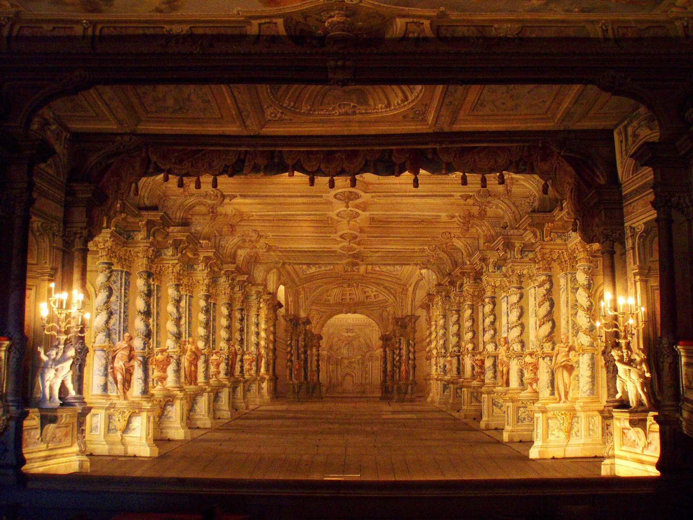
시각 자료 · 설명으로 대체
전기 이전 시대의 특수효과
객석과 무대, 그리고 그 아래 숨겨진 원형 회전 무대 기계까지 18세기 원형 그대로 남아 있는 극장입니다.
무엇을 봐야 하나 — 밧줄과 도르래, 나무 톱니바퀴로 이뤄진 무대 아래 기계 장치를 살펴보세요. 세계에 몇 남지 않은 작동 가능한 18세기 무대 기계입니다.
기계가 마법을 대신하던 시대
설명
크룸로프 성 안뜰의 바로크 극장 내부입니다.
왜 중요한가
원형 회전 기계와 음향 장치가 지금도 작동하는, 세계에서 손에 꼽는 18세기 극장입니다.
어디서 보나
성 안뜰 안쪽 원형 극장.
출처
Wikimedia Commons (공개 라이선스)
블타바강의 Ω자 굽이 — 도시가 왜 하필 여기 생겼나
마을을 감싸 도는 강의 급한 곡류(曲流)
이 도시가 하필 이 자리에 생긴 이유는 단순합니다 — 강이 마을을 세 방향에서 감싸는 천연 해자였기 때문입니다. Ω(오메가)자로 급하게 휘어 도는 강 안쪽 반도에 마을을, 목이 좁은 언덕에 성을 두면, 적은 사실상 한 방향으로만 들어올 수 있죠. 성 위에서 이 물굽이를 내려다보면, 왜 도시의 형태가 이렇게 뒤틀렸는지가 지리 그 자체로 설명됩니다. 예쁜 풍경이 사실은 방어의 논리였습니다.
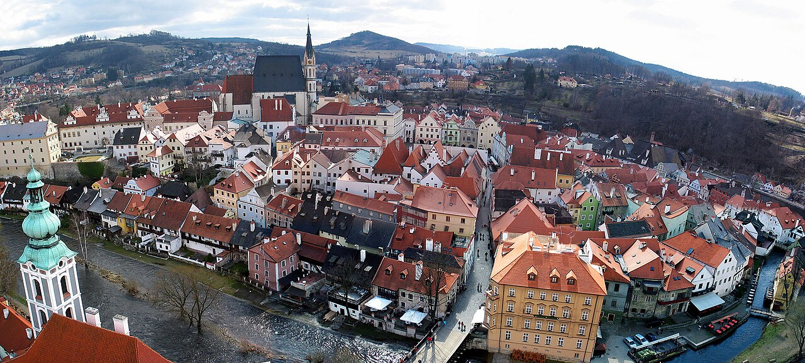
시각 자료 · 설명으로 대체
강이 세 방향에서 감싸는 천연 해자
블타바강이 오메가(Ω) 모양으로 급하게 휘어 돌며 마을을 감싸고, 그 안쪽 언덕 위에 성과 채색 탑이 솟아 있습니다.
무엇을 봐야 하나 — 강이 마을을 감싸는 각도와, 성이 자리 잡은 목이 좁은 언덕의 위치를 함께 보세요. 예쁜 풍경이 곧 방어 지형입니다.
지리가 도시의 모양을 결정하다
설명
블타바강의 오메가자 굽이와 그 위 크룸로프 성·마을 전경입니다.
왜 중요한가
강이 세 방향에서 마을을 감싸는 천연 해자였기에 도시가 하필 이 자리에 생겼음을 보여줍니다.
어디서 보나
성 위 테라스나 전망대에서 강 굽이 전체가 내려다보입니다.
출처
Wikimedia Commons (공개 라이선스)
에곤 실레 아트센터 — 오스트리아 화가가 왜 이 체코 마을에 있나
구시가 골목 안 · 옛 양조장 건물
20세기 초 오스트리아를 대표하는 화가 에곤 실레의 이름을 이 작은 체코 마을에서 만나면 의아합니다. 이유는 사적입니다 — 그의 어머니의 고향이 바로 크룸로프였기 때문이죠. 실레는 이 도시를 사랑해 한동안 머물며 그렸지만, 파격적인 작품과 생활 때문에 보수적인 주민들에게 쫓겨나기도 했습니다. 지금은 그의 이름을 딴 아트센터가 마을에 있어, 이 국경 지대의 도시가 얼마나 체코와 오스트리아 두 세계에 걸쳐 있었는지를 조용히 말해 줍니다. 남보헤미아는 늘 빈과 가까웠으니까요.
시각 자료 · 설명으로 대체
국경 지대 화가의 흔적
구시가 골목 안 옛 양조장 건물을 개조한 아트센터입니다. 어머니의 고향인 이 마을에 머물며 그림을 그렸던 에곤 실레를 기념합니다.
무엇을 봐야 하나 — 건물이 원래 양조장이었다는 점을 알고 보면, 소박한 외관과 그 안에 담긴 파격적인 그림 사이의 대비가 흥미롭습니다.
체코와 오스트리아 두 세계에 걸친 화가
설명
옛 양조장 건물을 개조한 에곤 실레 아트센터입니다.
왜 중요한가
이 국경 지대의 도시가 체코와 오스트리아 두 세계에 걸쳐 있었음을 보여줍니다.
어디서 보나
구시가 골목 안.
출처
Wikimedia Commons (공개 라이선스)
이발사의 다리 — 황제의 사생아가 남긴 어두운 전설
성 아래 · 마을로 이어지는 작은 다리
이 작고 평범해 보이는 다리에는 어두운 이야기가 붙어 있습니다. 신성로마제국 황제 루돌프 2세의 사생아 돈 줄리오가 이 도시에 유폐돼 지냈는데, 그가 정신이 온전치 못해 한 이발사의 딸을 사랑하다 끔찍한 일을 저질렀다는 전설입니다. '이발사의 다리'라는 이름은 그 비극의 흔적이죠. 예쁜 동화 같은 도시에도 이런 그늘이 있다는 것 — 관광객이 사진만 찍고 지나가는 다리 하나에도 권력과 광기의 이야기가 스며 있습니다.
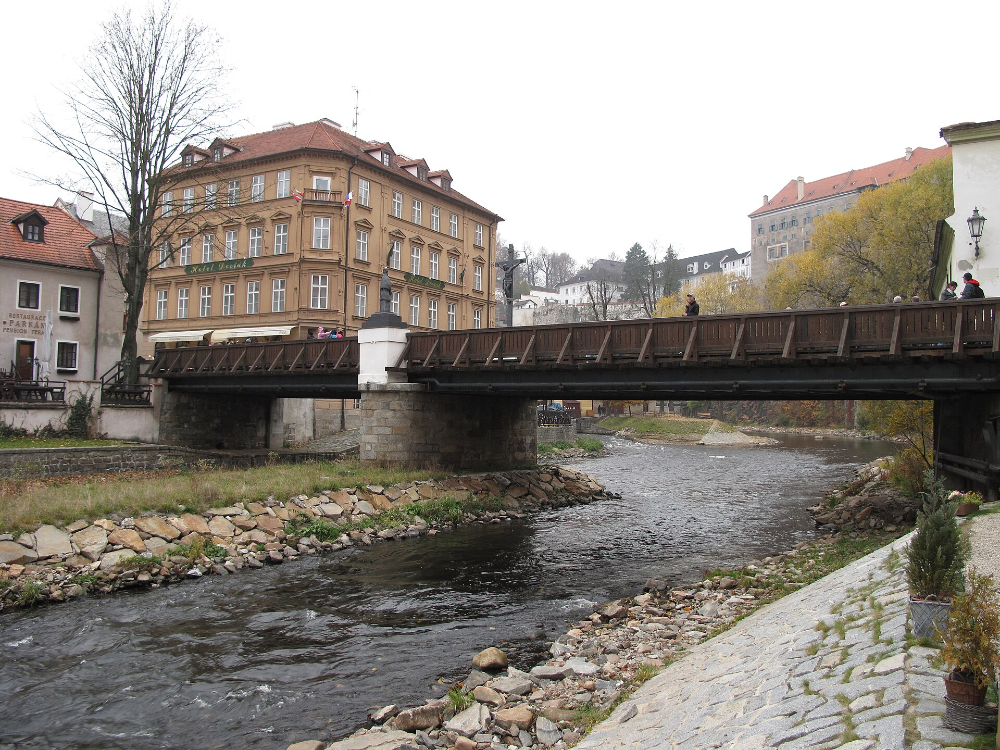
시각 자료 · 설명으로 대체
평범해 보이는 다리에 담긴 어두운 전설
성 아래 마을로 이어지는 작고 평범한 목조 다리입니다. 겉보기엔 소박하지만, 루돌프 2세의 사생아를 둘러싼 비극적 전설이 이름에 남아 있습니다.
무엇을 봐야 하나 — 다리 자체보다, 관광객이 사진만 찍고 지나가는 이 평범한 구조물에 얽힌 이야기를 떠올려 보세요.
예쁜 도시에 스며든 권력과 광기
설명
성 아래에서 마을로 이어지는 이발사의 다리입니다.
왜 중요한가
동화 같은 도시 풍경 아래 감춰진 어두운 전설을 보여주는 장소입니다.
어디서 보나
성 아래, 마을로 내려가는 길목.
출처
Wikimedia Commons (공개 라이선스)
💡 여행 중 생각해볼 것
한 사람(영주)이 도시 전체를 하나의 그림처럼 설계한다는 것은 무엇을 뜻할까?
지리(강 굽이)가 도시의 모양을 결정할 때, 사람은 자연을 이용한 걸까 순응한 걸까?
한국의 하회마을·양동마을도 지형과 문중(門中)이 함께 빚은 마을이다 — 한 가문이 오래 다스린 마을이라는 점에서 크룸로프와 무엇이 통하고, 위계의 표현 방식은 어떻게 다를까?
당일치기의 한계와 그럼에도 얻는 것 — 하루로는 성 내부 전관도, 극장 공연도, 저녁의 텅 빈 골목도 볼 수 없습니다. 관광객이 빠져나간 밤의 크룸로프가 진짜라는 말도 맞습니다. 하지만 낮 동안 '위에서 아래로, 다시 강에서 위로' 시점을 한 바퀴 돌리는 것만으로도, 이 도시가 어떻게 설계됐는지의 뼈대는 확실히 몸에 새길 수 있습니다. 하루는 도시를 소유하기엔 짧지만, 구조 하나를 이해하기엔 충분합니다.
SECTION 04
체코 실전 — 오해를 걷어내고 준비를 갖추다
이제 실용의 시간입니다. 다만 단순한 팁이 아니라, 왜 그렇게 해야 하는지까지 함께 익혀 현지에서 당황하지 않도록 합니다.
한 문장으로체코는 '동유럽'이라는 딱지, '보헤미안'이라는 낭만, '독일 맥주'라는 오해를 걷어내야 비로소 제대로 보이는 나라입니다.
실용과 예절 — 이렇게 하세요
상황
이렇게 하세요
공항→시내 이동
트롤리버스 59번을 타고 지하철 A선으로 갈아탑니다. 90분권 티켓 한 장으로 환승까지 되지만, 큰 여행가방은 별도 짐 티켓을 사야 합니다 — 검표에 걸리면 벌금입니다.
대중교통 티켓 개찰
버스·지하철·트램을 타기 전 반드시 노란 개찰기에 티켓을 넣어 펀칭(시각 각인)하세요. 체코는 개찰구가 없는 신뢰제라, 사복 검표원에게 걸리면 무임승차로 큰 벌금을 뭅니다.
숙소 위치의 이점
Muzeum역은 지하철 A선과 C선이 만나는 환승역이자 바츨라프 광장 상단입니다. 성·구시가·유대인 지구 어디든 한 번에 닿으니 동선의 중심으로 삼으세요.
환전
공항 환전소는 환율이 나쁩니다. 시내 사설 환전소를 쓰되 수수료 0%를 표방하는 곳을 고르고, 받기 전 최종 금액을 확인하세요. 카드 결제 시 '현지통화(코루나)로 결제' 를 반드시 선택하세요 — 원화 결제는 불리한 환율이 얹힙니다.
팁
식당·바에서 총액의 약 10%를 얹습니다. 계산할 때 "○○ 코루나요"라고 올림한 총액을 말하는 방식이 자연스럽습니다.
식당 입·퇴장 인사
들어서며 도브리 덴(Dobrý den · 안녕하세요), 나오며 나스흘레다노우(Na shledanou · 안녕히 계세요). 이 한마디로 대접이 달라집니다.
합석 문화
붐비는 맥주홀에서는 모르는 사람과 한 테이블에 앉는 것이 자연스럽습니다. 빈자리를 가리키며 양해를 구하면 됩니다.
맥주 주문·건배
보통 0.5L(벨케)가 기본, 작은 잔은 0.3L(말레). 잔을 부딪칠 때는 반드시 상대의 눈을 마주치세요 — 안 그러면 7년 불운이라는 농반진반의 관습이 있습니다. 부딪친 뒤 테이블에 한 번 톡 내려놓고 마십니다.
계산서 확인
테이블에서 계산하며, 종업원이 적어 온 금액을 확인합니다. 관광지에서는 주문 안 한 항목이 끼는 경우가 있으니 훑어보세요.
성당 예절
모자를 벗고, 어깨·무릎이 드러나는 옷은 피합니다. 미사 중에는 촬영 금지, 조용히 움직이세요.
공연 관람 예절
재즈바는 곡이 끝날 때 박수, 독주가 끝나면 짧게 환호해도 됩니다. 클래식은 악장 사이엔 박수치지 않습니다. 지나치게 캐주얼한 차림은 피하는 게 좋습니다.
택시
길에서 잡는 택시는 관광객 상대 바가지가 잦습니다. Bolt나 Uber 앱을 쓰면 요금이 미리 정해져 안전합니다.
낮은 선선하고 아침저녁은 쌀쌀합니다. 겹쳐 입고, 성·강가의 바람에 대비해 얇은 겉옷을 챙기세요.
일요일 영업
대형 상점 상당수가 일요일에 문을 닫거나 일찍 닫습니다. 관광지 식당·카페는 열지만, 쇼핑 계획은 평일로 잡으세요.
💡 여행 중 생각해볼 것
개찰구 없이 신뢰에 맡기는 교통 시스템은 왜 유지될까? 신뢰가 깨지면 어떻게 될까?
인사말 한마디로 대접이 달라지는 사회에서, 언어는 예의의 어디까지를 담당할까?
한국의 지하철은 개찰구로 막지만 체코는 신뢰제다 — 서로 다른 이 방식은 각 사회가 시민을 어떻게 바라보는지에 대해 무엇을 말해 줄까?
오해 바로잡기
프라하는 동유럽이다
냉전의 지도 위에서 '철의 장막 동쪽'이라 그렇게 굳어졌습니다. 그래서 '동유럽=조금 낙후된 곳'이라는 인상까지 따라붙었죠.
체코인은 스스로를 중부유럽이라 부른다
프라하는 지리적으로 빈보다 서쪽에 있습니다. 체코인에게 '동유럽'은 강제로 소련권에 묶였던 시절의 상처를 건드리는 말입니다. 중부유럽(Central Europe)이라 부르는 편이 존중입니다.
체코=자유분방한 보헤미안의 나라
'보헤미안'이라 하면 예술가의 방랑과 자유가 떠오릅니다. 체코=보헤미아니 당연히 그런 기질이겠거니 하죠.
보헤미안 이미지는 19세기 프랑스가 만든 것
파리의 가난한 예술가들을 '집시(당시 프랑스인은 이들이 보헤미아에서 왔다고 오해)처럼 떠도는 사람들'이라 부른 데서 온 말입니다. 정작 체코인은 오히려 실용적이고 절제된 기질로 알려져 있습니다.
천문시계가 프라하 최고 명소다
정시마다 인파가 몰려 시계 위 인형쇼를 기다립니다. 안 보면 손해라는 분위기죠.
정작 현지인은 인형쇼를 시시하게 여긴다
실제 인형의 움직임은 짧고 소박해, "세계에서 가장 실망스러운 명소"로 농담처럼 꼽히기도 합니다. 진짜 볼 것은 인형이 아니라 우주관을 담은 시계판과 종탑 전망입니다.
맥주는 독일이 최고다
맥주 하면 독일 옥토버페스트가 먼저 떠오릅니다.
체코는 1인당 맥주 소비 세계 1위, 황금빛 라거의 원조다
오늘날 세계인이 마시는 투명한 라거(필스너)는 1842년 체코 플젠에서 처음 태어났습니다. 체코인의 1인당 맥주 소비량은 오랫동안 세계 1위입니다 — 물보다 흔한 국민 음료죠.
체코 잡학
알고 나면 골목이 다르게 보이는, 짧고 흥미로운 이야기들.
왜 체코에 성이 2,000개나 있나
작은 나라에 성과 성채가 2,000개 넘게 흩어져 있습니다. 오랫동안 수많은 귀족 가문이 각자의 영지를 다스린 분권적 역사, 그리고 신성로마제국의 느슨한 구조 때문입니다. 왕 하나가 아니라 영주 여럿의 나라였던 셈입니다.
왜 프라하 지하철은 그렇게 깊나
냉전기에 지은 노선들은 유난히 깊습니다. 유사시 핵 방공호로 쓰려고 지하 깊이 판 뒤 두꺼운 방폭문까지 달았기 때문이죠. 승강장으로 내려가는 긴 에스컬레이터가 그 흔적입니다.
왜 맥주가 물보다 싸나
식당에서 생맥주가 생수보다 저렴한 경우가 흔합니다. 국민 음료로서 소비량이 압도적이라 가격 경쟁이 치열하고, 자국 생산이 워낙 튼튼하기 때문입니다. 맥주가 '음료'인 나라입니다.
왜 체코인은 숫자를 엄지부터 세나
맥주 '두 잔'을 손가락으로 표시할 때 체코인은 엄지와 검지를 폅니다. 우리처럼 검지부터 세면 한 잔이 더 나올 수 있으니, 주문할 땐 엄지부터 펴는 현지식을 따라 하세요.
왜 건물 벽에 홍수 수위 표시가 있나
강변 건물 벽에 옛 홍수 때 물이 찼던 높이를 새긴 표시가 있습니다. 특히 2002년 대홍수의 수위선이 여러 곳에 남아, 이 도시가 강과 함께 살아온 역사를 증언합니다.
왜 개를 어디든 데려가나
식당·트램·상점 어디서나 개가 주인과 함께 있는 모습이 흔합니다. 반려동물에 관대한 문화로, 개들도 공공장소 예절이 잘 배어 있어 조용히 자리를 지킵니다.
슈베이크 문학이 말하는 체코인의 처세
소설 속 '착한 병사 슈베이크(Švejk)'는 어리숙한 척하며 권위를 무력화합니다. 강대국 사이에서 정면충돌 대신 능청과 유머로 살아남은 체코인의 처세를 상징하는 국민 캐릭터입니다.
굴뚝빵(트르들로)은 체코 전통이 아니다
관광지마다 파는 나선형 굴뚝빵 트르들로는 사실 체코 고유 전통이 아니라, 근래 관광객을 겨냥해 퍼진 것입니다. 진짜 체코 디저트를 찾는다면 오히려 크네들리키나 콜라체를 권합니다.
왜 압생트를 파나
독한 녹색 술 압생트를 파는 바가 많습니다. 서유럽 여러 나라가 오래 금지했던 이 술을 체코는 비교적 자유롭게 팔아, '금지된 것을 파는 도시'라는 이미지가 관광 상품이 됐습니다. 다만 관광객용 저급품도 많으니 주의하세요.
왜 9월엔 부르착을 마셔야 하나
갓 발효를 시작한 반쯤 된 포도즙 부르착은 9월 그 며칠만 존재합니다. 발효가 계속돼 오래 둘 수 없어, 그 자리에서 마시는 것이 유일한 방법입니다. 도착 첫날 마시는 것이 계절의 특권인 이유죠.
왜 프라하는 전쟁 폭격 피해가 적었나
2차 대전 중 유럽의 많은 도시가 폐허가 됐지만 프라하는 상대적으로 온전히 남았습니다. 그래서 고딕·바로크·아르누보가 겹겹이 살아 있는, 유럽에서 손꼽히는 '통째로 보존된 옛 도시'가 됐습니다.
💡 여행 중 생각해볼 것
왜 한 나라를 부르는 이름('동유럽')이 그 나라 사람들에겐 상처가 될까?
강대국 사이에서 능청과 유머로 살아남는 처세는 나약함일까, 지혜일까?
한국도 강대국 사이에서 오래 균형을 잡아 온 나라다 — 슈베이크식 처세와 한국인이 말하는 '눈치'는 어떻게 닮았고, 무엇이 다를까?
C2 / COUNTRY ROUTE — AUSTRIA
오스트리아 · 9월 17일–23일 · 방문지 해설
제국의 수도에서 소금의 산으로
이 패널은 관광지 목록이 아닙니다. 당신이 실제로 밟게 될 장소들을 일정 순서대로 걸으며, 그것이 무엇이고 왜 거기 있으며 지금 무엇을 봐야 하는지를 함께 읽어 나가는 노트입니다. 빈에서 먼저 합스부르크가 남긴 화려한 결과를 보고, 그 부가 어디서 왔는지를 나중에 산속 소금 마을에서 거슬러 확인하게 됩니다. 결과에서 원인으로 내려가는 7일입니다.
SECTION 01
일정과 경로 — 부의 출처를 거슬러 오르다
빈의 황금빛 궁전을 먼저 보고, 그 황금이 어디서 왔는지를 나중에 산속에서 확인합니다. 이 7일은 결과에서 원인으로 내려가는 여정입니다.
한 문장으로합스부르크가 유럽을 다스린 행정의 심장 빈에서 출발해, 그 제국을 먹여 살린 소금의 원산지인 잘츠캄머구트로 내려가는 일주일입니다.
오스트리아 — 방문지와 이동 경로
설명
빈에서 출발해 베르히테스가덴·할슈타트를 거쳐 잘츠부르크에 이르는 렌터카 경로입니다. 오른쪽 아래 확대 상자는 세 지점이 실제로 얼마나 가까이 모여 있는지, 그리고 국경이 어떻게 산 능선을 지나는지 보여 줍니다.
왜 중요한가
빈(제국의 결과)과 잘츠캄머구트(부의 원천)가 지도상 얼마나 떨어져 있는지 보면, 이 여정이 왜 '결과에서 원인으로 내려가는 순서'인지 이해됩니다.
어디서 보나
이동 중 기차·차 안에서 이 지도를 다시 펼쳐 보세요. 창밖 풍경이 지도의 어느 지점인지 맞춰 보는 것만으로 지리 감각이 몸에 남습니다.
출처
국경·하천은 공개 지리 데이터를 단순화해 직접 작도(SVG). 방문지 좌표는 실제 위경도.
지도를 눈으로 훑어보면 여정이 하나의 논리를 그립니다. 시작점 빈은 오스트리아 동쪽 끝, 헝가리 국경에 바짝 붙은 도시입니다. 왜 제국의 수도가 나라 한가운데가 아니라 이렇게 동쪽 변두리에 있을까요. 답은 방향에 있습니다. 합스부르크의 가장 큰 위협은 늘 동쪽에서, 오스만 제국에서 왔고, 빈은 그 방파제였습니다. 그런데 왜 위험한 동쪽 변경에 수도를 그대로 두었을까요. 사실은 순서가 반대입니다. 빈은 오스만이 등장하기 훨씬 전인 12세기부터 이미 이 지역 권력의 중심이었고, 합스부르크는 그 위에 올라선 뒤였습니다. 수백 년간 쌓인 교역·종교·행정의 뿌리를 통째로 옮기는 것은 상상하기 어려웠고, 그래서 물러서는 대신 성벽을 더 두껍게 쌓아 정면으로 버텨내는 쪽을 택했습니다. 1529년과 1683년, 두 차례의 포위를 끝내 막아낸 경험은 후퇴가 아니라 '기독교 유럽을 지켜낸 도시'라는 자부심으로 남았습니다. 화려함의 이면에 언제나 포위와 방어의 긴장이 깔려 있었던 도시입니다.
거기서 당신은 서쪽으로, 알프스 안쪽으로 내려갑니다. 잘츠캄머구트의 할슈타트는 엽서 속 예쁜 마을이기 전에 3000년 동안 소금을 캐 온 광산 마을입니다. 냉장고가 없던 시대에 소금은 고기를 상하지 않게 하는 유일한 기술이었고, 그래서 곧 돈이자 권력이었습니다. 여정의 마지막 잘츠부르크는 이름 그대로 소금의 성입니다. 그 소금 수익 덕분에 성직자였던 대주교가 사실상 군주가 되어 도시를 바로크로 치장할 수 있었습니다.
즉 이 경로는 빈에서 완성된 부의 얼굴을 먼저 마주하고, 산으로 들어가 그 돈이 어디서 솟아났는지 원천을 확인하는 순서입니다. 순서를 이렇게 잡아야 잘츠부르크의 황금빛이 그저 예쁜 장식이 아니라, 저 산속 갱도에서 캐낸 소금이 만들어 낸 결과라는 것이 몸으로 이해됩니다.
한 가지 더 눈여겨볼 것은 이동 수단의 변화입니다. 빈까지는 기차로, 빈 안에서는 지하철과 트램으로 움직이다가, 알프스로 들어서는 순간 렌터카로 바뀝니다. 대중교통이 촘촘한 평지의 제국과, 차가 없으면 닿기 어려운 산악의 세계가 교통편에서부터 갈립니다. 도시에서 산으로 내려간다는 이 여정의 성격이 여러분이 손에 쥔 교통수단에도 그대로 새겨져 있는 셈입니다.
그리고 이 일주일은 세 개의 나라를 스칩니다. 출발은 체코 프라하, 본무대는 오스트리아, 마지막엔 독일 국경을 넘어 뮌헨으로 빠집니다. 국경을 넘을 때마다 검문소에 멈추지 않는다는 사실 자체가, 한때 서로 총부리를 겨눴던 이 땅들이 지금 어떤 관계인지를 조용히 말해 줍니다. 여러분은 사라진 제국의 옛 국경들을 아무 저항 없이 넘나들게 됩니다.
날짜별 이해의 순서
9/17 목
프라하를 떠나 빈으로 — 결과의 도시에 먼저 도착한다
아침 기차로 국경을 넘어 정오 무렵 빈에 닿습니다. 벨베데레에서 클림트의 금박을 보고, 저녁엔 무지크페라인 황금홀에서 음악을 듣습니다.
왜 이 순서인가 — 여정의 결론부터 봅니다. 제국이 남긴 가장 화려한 표면을 먼저 눈에 담아 두어야, 며칠 뒤 산속에서 그 부의 뿌리를 만났을 때 두 장면이 하나로 이어집니다.
빈에 도착한 오후 — 중앙역에서 호텔, 벨베데레, 그리고 황금홀까지
9/18 금
쇤브룬과 호이리게 — 권력의 무대와 서민의 식탁
오전엔 마리아 테레지아의 여름 궁전 쇤브룬, 오후엔 시내 미술관과 시장, 저녁엔 그린칭 언덕의 와인 주점 호이리게로 갑니다.
왜 이 순서인가 — 같은 날 안에서 가장 높은 곳과 가장 낮은 곳을 나란히 봅니다. 궁전의 축선이 표현하는 권력과, 농민에게 와인 판매를 허락한 칙령에서 시작된 서민의 술자리를 하루에 겹쳐 보면 이 도시의 폭이 보입니다.
쇤브룬에서 그린칭까지 — 궁전·미술관·호이리게를 잇는 하루
9/19 토
숨 고르는 날 — 아웃렛과 국경 평원
파른도르프 디자이너 아웃렛으로 갔다가 숙소를 옮기고 일찍 쉽니다. 다음 날 아침 렌터카 운전을 위한 정비의 날입니다.
왜 이 순서인가 — 밀도 높은 도시 관람과 곧 시작될 산악 운전 사이에 완충이 필요합니다. 게다가 이 평평한 아웃렛 벌판이 왜 여기 있는지 자체가 다음 이야기로 이어집니다.
빈 도심에서의 하루 — 아울렛 왕복은 오른쪽 아래 작은 지도에
9/19, 아무것도 안 보는 날의 쓸모 — 좋은 여행에는 반드시 숨 고르는 날이 필요합니다. 그런데 이 날 들르는 파른도르프는 단순한 쇼핑몰이 아닙니다. 여기는 부르겐란트, 헝가리 국경이 30km도 안 되는 판노니아 평원의 서쪽 끝입니다. 알프스도 언덕도 없이 지평선까지 트인 이 땅에 서 보면, 빈이 얼마나 동쪽 변경의 도시였는지, 왜 오스만의 기병이 이 평원을 거쳐 빈 성벽 앞까지 두 번이나 밀려왔는지가 지형으로 설명됩니다. 쇼핑백을 든 채로도 역사의 지리를 읽을 수 있습니다.
9/20 일
빈을 떠나 알프스로 — 도시에서 산으로의 전환
체크아웃 후 렌터카로 국경을 넘어 독일 베르히테스가덴 방향으로 향합니다. 평지의 제국에서 수직의 산악 세계로 들어서는 날입니다.
왜 이 순서인가 — 여기서 무대가 바뀝니다. 넓은 궁전과 대로의 수평 세계에서, 호수와 절벽이 하늘을 좁게 가르는 수직의 세계로 몸이 옮겨 갑니다. (베르히테스가덴 자체는 독일 패널에서 다룹니다.)
빈을 떠나는 아침 — 숙소에서 렌터카를 받아 도심을 빠져나간다
9/21 월
할슈타트에서 잘츠부르크로 — 원천을 만나는 날
오전 할슈타트, 오후엔 스카이워크와 푸니쿨라 또는 소금광산 중 하나를 택해 산의 속살을 봅니다. 저녁엔 잘츠부르크 구시가의 야경을 걷습니다.
왜 이 순서인가 — 드디어 부의 원천에 도착합니다. 빈에서 본 황금의 뿌리가 바로 이 갱도 속 소금이었다는 사실을, 광산이나 조망대에서 두 눈으로 확인하는 하루입니다.
저녁에 닿은 잘츠부르크 구시가 — 할슈타트 왕복은 오른쪽 위 작은 지도에
9/22 화
잘츠부르크 종일 — 강 양안을 걸어 도시를 읽는다
오전엔 호엔잘츠부르크 요새와 대성당으로 도시의 종교·권력 중심을 보고, 오후엔 게트라이데 거리와 모차르트 생가를 지나 강을 건너 미라벨 정원까지 걷습니다. 저녁은 잘차흐 강변에서 마무리합니다.
왜 이 순서인가 — 잘츠부르크는 잘차흐 강이 구시가(좌안)와 미라벨(우안)을 가르는 도시입니다. 요새에서 강 아래로 내려와 다리를 건너야, 대주교의 권력이 어느 쪽 기슭에서 시작해 어디로 뻗어 나갔는지 발로 이해됩니다. 어제 베르히테스가덴에서 본 소금 산의 부가, 오늘 이 강 양안의 대리석 건물로 어떻게 쌓였는지가 하루의 주제입니다.
잘차흐 강 양안 — 요새와 대성당, 미라벨 정원의 구시가 하루
9/23 수
잘츠부르크에서 뮌헨으로 — 소금 성을 마무리하고 떠난다
남은 명소를 마저 보고 오전 중 뮌헨으로 출발합니다. 오스트리아 구간이 여기서 닫힙니다. (전날 9/22는 잘츠부르크 종일 일정으로 04번 탭에서 상세히 다룹니다.)
왜 이 순서인가 — 소금이 만든 도시를 마지막으로 밟고 나서 바이에른으로 넘어갑니다. 합스부르크의 라이벌이었던 비텔스바흐 가문의 뮌헨으로 이어지며, 두 가문의 경쟁이라는 다음 주제로 연결됩니다.
잘츠부르크를 떠나는 아침 — 미라벨과 대성당을 마지막으로 밟는다
💡 여행 중 생각해볼 것
왜 제국의 수도가 나라 한복판이 아니라 동쪽 국경에 붙어 있었을까? 방어와 위협의 방향이 도시의 위치를 어떻게 결정했을까?
왜 냉장 기술이 없던 시대에 소금이 곧 권력이자 화폐였을까? 무언가를 '오래 보존하는 능력'이 왜 그렇게 큰 부를 낳았을까?
오늘날 한국과 비교하면 어떨까 — 우리도 조선의 소금, 즉 국가가 관리하던 자염과 염전이 있었습니다. 서산·태안의 갯벌 염전과 안동 간고등어의 소금길을, 할슈타트의 소금 갱도와 나란히 놓고 보면 '보존이 곧 부'라는 원리가 동서양에 공통이었음이 보입니다.
SECTION 02
빈 방문지 — 화려함 뒤의 사연을 읽는다
벨베데레의 금박, 쇤브룬의 노란 벽, 황금홀의 음향에는 저마다 이유가 있습니다. 왜 그것이 거기 그렇게 있는지를 알면 같은 장면이 전혀 다르게 보입니다.
한 문장으로빈의 명소들은 합스부르크 제국이 남긴 결과물이며, 그 화려함의 이면에는 늘 방어와 몰락, 그리고 사라진 제국의 그림자가 함께 있습니다.
당신이 앞으로 이틀 동안 밟게 될 장소들을 도착 순서대로 하나씩 풀어 보겠습니다. 이름만 아는 채로 지나치면 그저 예쁜 건물이지만, 사연을 알고 서면 그 앞에서 시간이 조금 다르게 흐릅니다.
프라하→빈 기차 — 이 노선은 권력이 이동한 방향이다
프라하 중앙역 8:37 출발 → 빈 중앙역 12:47 도착, 약 4시간
창밖으로 모라비아의 완만한 평원이 지나가고 이윽고 국경을 넘습니다. 무심히 흘러가는 이 4시간이 사실은 역사의 물길을 거슬러 가는 길입니다. 프라하에서 열렸던 백산 전투 이후, 보헤미아의 자치와 결정권은 합스부르크의 손으로 넘어갔고, 권력의 중심은 이 철길이 향하는 방향, 즉 빈으로 빨려 들어갔습니다. 프라하의 귀족과 지식인들은 재산과 지위를 지키려면 이 길을 따라 빈으로 와야 했습니다. 지금 당신이 편하게 앉아 가는 이 노선을, 당시 사람들은 결정권을 빼앗긴 채 강제로 걸어야 했던 셈입니다. 빈에 도착하면 이 도시가 왜 그렇게 부유했는지 이해하기 쉬워집니다 — 프라하를 포함한 여러 지방의 부와 인재가 이 길들을 타고 이곳으로 모였으니까요.
호텔 임페리얼과 링슈트라세 — 궁전이 호텔이 된 것은 제국이 무너졌다는 뜻이다
Kärntner Ring 16, 링슈트라세 남쪽. 옛 뷔르템베르크 공작의 궁전
당신이 묵는 이 호텔은 원래 한 공작의 궁전이었습니다. 귀족의 저택이 호텔로 바뀌었다는 사실 자체가 하나의 역사입니다 — 궁전을 유지할 귀족 계급이 제국과 함께 사라졌기 때문입니다. 호텔이 늘어선 이 순환도로 링슈트라세도 사연이 깊습니다. 원래 이 자리엔 빈을 오스만의 포위로부터 지켜 준 두꺼운 성벽이 서 있었는데, 19세기 중반 황제가 그 성벽을 허물고 그 자리에 폭넓은 대로를 둘렀습니다. 방어가 더 이상 성벽의 몫이 아니게 되자, 도시는 벽을 허물어 스스로를 과시하는 무대로 바꾼 것입니다. 링을 따라 오페라극장·시청·국회·미술관이 저마다 다른 양식으로 늘어선 것도 그래서입니다. 다만 이 호텔에는 어두운 이력도 있습니다 — 1938년 오스트리아를 병합한 히틀러가 이곳에 묵었습니다. 로비의 대리석은 그 무게까지 조용히 품고 있습니다.
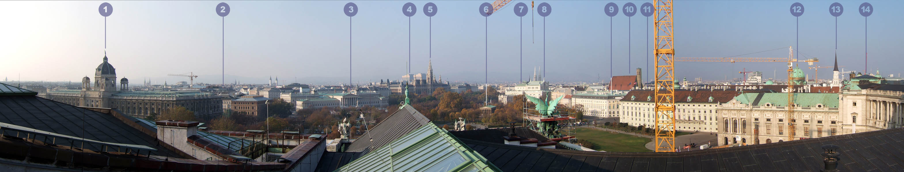
시각 자료 · 설명으로 대체
성벽이 사라진 자리의 순환 대로
예전엔 두꺼운 성벽이 서 있던 자리에, 지금은 넓은 순환 대로가 도시를 감싸고 있습니다. 이 길을 따라 오페라극장·시청·국회 같은 19세기 건물들이 늘어서 있고, 당신이 묵는 호텔도 이 대로변 궁전 중 하나였습니다.
무엇을 봐야 하나 — 길이 그리는 완벽한 원형. 이 곡선이 예전 성벽의 흔적입니다.
링슈트라세 — 궁전이 호텔이 된 길
설명
빈 구시가를 감싸는 순환 대로 링슈트라세와 그 주변 건물들.
왜 중요한가
방어용 성벽이 문화·숙박의 무대로 바뀐 변화가 제국의 몰락과 함께 이 길 위에 새겨져 있습니다.
어디서 보나
링슈트라세를 따라 도는 트램 1·2번 안에서, 또는 호텔 임페리얼 앞.
출처
Wikimedia Commons (공개 라이선스)
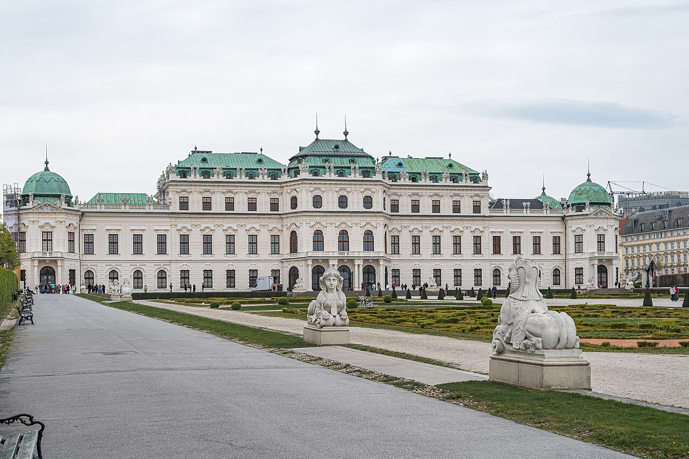
시각 자료 · 설명으로 대체
벨베데레 상궁과 정원의 축선
언덕 위 상궁의 하얀 바로크 파사드가 서 있고, 그 발치에서 기하학적으로 다듬어진 정원이 계단식 분수를 따라 하궁까지 일직선으로 내려갑니다. 축선의 끝에 도시의 스카이라인이 걸립니다.
무엇을 봐야 하나 — 상궁 앞 테라스에 서서 정원 너머를 보세요. 잘 다듬은 정원이 시선을 강제로 도시 쪽으로 이끄는데, 이 시선의 설계가 곧 권력의 언어입니다.
벨베데레 — 시선으로 지은 권력
설명
오스만을 물리친 명장 오이겐 공이 교외에 세운 여름 궁전과 그 대칭 정원.
왜 중요한가
바로크 정원의 축선이 어떻게 권력과 시선을 하나로 묶었는지를 눈으로 확인할 수 있습니다.
어디서 보나
상궁(Oberes Belvedere) 정원 쪽 테라스에서 하궁 방향을 바라볼 때.
출처
Wikimedia Commons (공개 라이선스)
벨베데레 궁전 — 클림트의 금박은 아버지의 대장간에서 왔다
상궁 2층, 클림트 전시실. Prinz-Eugen-Straße 27
이 궁전을 지은 사람은 사보이의 오이겐 공, 빈을 노린 오스만 군대를 막아낸 명장입니다. 전쟁으로 얻은 명예와 재산으로 교외에 여름 별장을 지었는데, 언덕 위 상궁과 아래 하궁을 정원으로 잇는 구조 자체가 그의 위상을 과시합니다. 오늘날 이곳이 세계적으로 유명한 이유는 상궁 2층에 걸린 클림트의 키스 때문입니다. 그런데 왜 하필 금박일까요. 클림트의 아버지는 금세공사였습니다. 어릴 적부터 금을 다루는 손을 곁에서 보고 자랐고, 이탈리아 라벤나에서 본 비잔틴 모자이크의 황금 배경에 깊이 매혹된 뒤 그것을 자기 회화로 끌어들였습니다. 그림 속 연인이 왜 꽃밭 절벽 끝에 위태롭게 서 있는지도 눈여겨보세요 — 황홀경의 정점이 곧 낭떠러지라는 긴장이 화면에 숨어 있습니다. 관광객이 놓치는 것: 같은 방에 걸린 클림트의 유디트(성경 속 여인을 팜파탈로 그린 그림), 그 곁방의 에곤 실레 죽음과 소녀, 그리고 조각가 메서슈미트의 기괴하게 찡그린 두상 연작입니다. 사람들은 키스 앞에서 사진만 찍고 이 걸작들을 그냥 지나칩니다.
💡 여행 중 생각해볼 것
왜 화가는 유화 물감 대신 진짜 금을 화폭에 붙였을까? 재료 자체가 신성함과 사치를 동시에 뜻하던 중세의 감각이 세기말 빈에서 되살아난 것은 아닐까?
왜 세기말 빈의 예술은 사랑과 죽음을 늘 붙여 그렸을까? 제국이 저물어 가던 시대의 불안이 화폭에 배어든 것은 아닐까?
오늘날 한국과 비교하면 — 우리 불화의 금니(金泥)나 고려 불화의 금선묘도 금으로 신성을 표현했습니다. 다른 문명이 같은 재료로 성스러움을 표현한 방식을 나란히 떠올려 보면 흥미롭습니다.
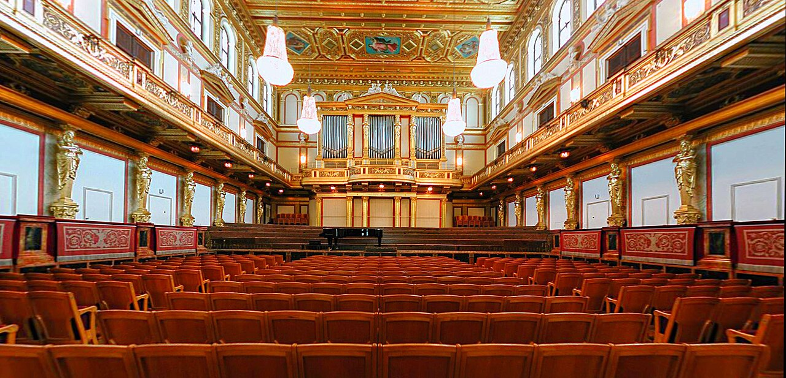
시각 자료 · 설명으로 대체
무지크페라인 황금홀 내부
좁고 높은 직사각형 홀이 온통 금빛으로 빛납니다. 무대 양옆과 발코니 아래로 황금빛 여신상 기둥들이 늘어서 있고, 천장은 여신들의 그림과 격자 목재로 마감돼 있습니다.
무엇을 봐야 하나 — 천장과 벽의 여신 기둥을 보세요. 이 조각과 목재 마감이 소리를 부드럽게 흩뜨려 홀 전체를 하나의 악기로 만듭니다.
무지크페라인 — 세계 최고의 음향은 왜 이 방일까
설명
신년음악회로 세계에 중계되는 황금홀의 내부 전경.
왜 중요한가
이 홀의 명성이 장식이 아니라 형태와 재료가 만든 음향에서 나온다는 점을 보여 줍니다.
어디서 보나
Großer Saal(대공연장) 1층 객석 중앙에서 무대를 향할 때.
출처
Wikimedia Commons (공개 라이선스)
무지크페라인 황금홀 — 이 방이 세계 최고의 음향인 이유
Musikvereinsplatz 1, 대공연장(Großer Saal). 오늘 저녁 빈 모차르트 오케스트라 공연
왜 이 홀이 세계에서 가장 좋은 음향으로 꼽힐까요. 첫째, 슈박스(shoebox) 형태 — 말 그대로 구둣상자처럼 좁고 길고 높은 직사각형입니다. 소리가 옆으로 퍼지기 전에 벽에 부딪혀 객석으로 되돌아오기 때문에, 음이 풍부하게 감쌉니다. 둘째, 무대 위 격자 목재 천장이 사실은 지붕에 매달린 일종의 울림판이라, 나무가 소리를 따뜻하게 만듭니다. 셋째, 벽을 따라 늘어선 여신상 기둥(카리아티드 — 사람 형상을 기둥 삼은 조각)과 촘촘한 장식이 소리를 잘게 흩뿌려, 특정 방향으로 뭉치지 않고 홀 전체에 고르게 퍼집니다. 좁고 높은 비율, 목재, 조각 장식 — 이 세 가지가 우연히 겹쳐 만든 명작입니다. 오늘 저녁 무대에 오르는 빈 모차르트 오케스트라는 18세기 시대의상을 입고 관광객을 위한 친숙한 프로그램을 연주합니다. 빈필하모닉의 정기연주회와는 성격이 다릅니다 — 그러나 그것을 낮춰 볼 필요는 없습니다. 모차르트 당대에도 음악은 원래 이런 오락이었으니까요. 궁정과 살롱에서 귀족을 즐겁게 하려고 연주되던 흥겨운 음악, 그 본래의 결을 시대의상과 함께 가볍게 즐기면 됩니다. 눈을 감고 소리가 어떻게 등 뒤에서 감싸 오는지 느껴 보세요.
쇤브룬 궁전 — 1441개의 방 중 40개만 열리는 이유
Schönbrunner Schloßstraße 47, 빈 서쪽. 09:00 입장
합스부르크의 여름 궁전입니다. 방이 1441개인데 관람은 40개만 허락됩니다 — 나머지는 그 규모를 상상 속에 남겨 두는 편이 오히려 위압적입니다. 벽을 물들인 그 특유의 노란색은 그냥 색이 아니라 마리아 테레지아 옐로라 불리는 제국의 색입니다. 여제가 좋아한 이 색은 이후 제국 전역의 관청과 역사(驛舍)에 칠해져, 노란 벽만 봐도 합스부르크의 땅임을 알 수 있게 했습니다. 안으로 들어가면 거울의 방이 나오는데, 여섯 살의 모차르트가 바로 이 방에서 여제 앞에서 연주하고 어린 마리 앙투아네트에게 청혼했다는 일화가 전해집니다. 나폴레옹이 빈을 점령했을 때 이 궁전을 사령부로 삼았고, 그의 아들이 이곳에서 쓸쓸히 생을 마쳤습니다. 정원으로 나오면 언덕 위 글로리에테라는 개선문식 건물까지 곧게 뻗은 축선(중심을 관통하는 일직선의 시선)이 보입니다. 권력은 이렇게 시선으로 표현됩니다. 관광객이 놓치는 것: 정원 한쪽의 티어가르텐은 세계에서 가장 오래된 동물원으로, 한가운데 바로크 팔각 파빌리온이 그대로 남아 있습니다. 그리고 대부분은 궁전만 보고 돌아서지만, 언덕 위 글로리에테까지 올라가 궁전을 등지고 도시를 내려다보는 시점이야말로 황제가 세상을 보던 눈높이입니다.
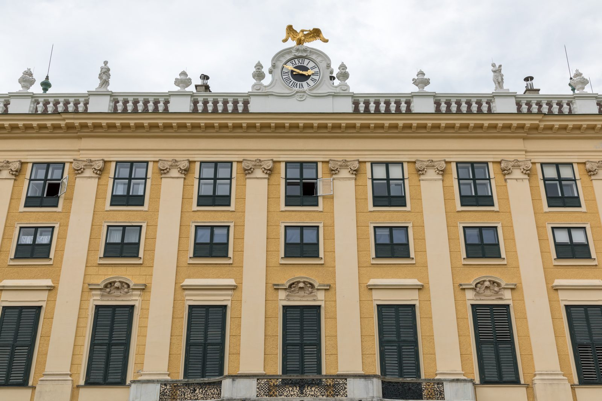
시각 자료 · 설명으로 대체
제국을 물들인 노란색
긴 노란 파사드가 좌우로 넓게 펼쳐지고, 앞뜰 너머로 정원의 축선이 곧게 뻗어 있습니다. 이 특유의 노란빛은 그냥 색이 아니라 제국 전역의 관청에 칠해진 '마리아 테레지아 옐로'입니다.
무엇을 봐야 하나 — 정원 쪽에서 궁전과 그 너머 언덕 위 글로리에테로 이어지는 일직선의 축선.
쇤브룬 궁전 — 1441개의 방 중 40개만 열리는 이유
설명
합스부르크의 여름 궁전, 마리아 테레지아 옐로로 칠한 파사드와 정원.
왜 중요한가
색 하나로도 제국의 영토를 표시했던 상징 체계를 보여 줍니다.
어디서 보나
정원 쪽 진입로에서 궁전 전체를 마주 볼 때.
출처
Wikimedia Commons (공개 라이선스)
제국의 요리는 왜 이렇게 다국적일까 — 오늘 점심 Steirereck에서 마주할 오스트리아 요리는 사실 제국 전체의 식탁입니다. 굴라시는 헝가리에서, 크네들리키(경단)는 보헤미아 즉 지금의 체코에서, 슈니첼은 북이탈리아 밀라노의 코톨레타에서, 팔라친켄(얇은 전병)은 발칸에서 왔습니다. 제국은 사라졌지만 그 다양한 민족의 맛은 빈의 식탁에 그대로 남았습니다. 프라하에서 먹었던 크네들리키를 여기서 또 만난다면, 그것이 바로 하나의 제국이 남긴 흔적입니다.
Steirereck과 오스트리아 미식 — 옛 우유공장에서 열리는 제국의 식탁
슈타트파르크(시립공원) 안, 옛 밀크하우스 건물. 12:00 식사
도심 공원 한가운데, 옛 우유공장(밀히파빌리온)을 개조한 이 건물에서 하인츠 라이트바우어(Heinz Reitbauer)와 아내 비르기트가 이끄는 레스토랑은 2025년 오스트리아에 단 둘뿐인 미쉐린 3스타 중 하나를 받았습니다(나머지 한 곳도 빈에 있는 아마도르입니다). 높은 평가를 받은 이유는 화려한 플레이팅보다는 재료의 출처입니다 — 자체 옥상 텃밭에서 기른 희귀 허브, 쇤브룬 궁전 오랑제리에서 나는 시트러스, 슈타이어마르크(스티리아)에 있는 자체 농장 포구쉬의 채소와 잊혔던 토종 작물을 전통과 현대적 기법으로 재해석해 냅니다. 평일 낮에만 여는 런치(11:30~16:00)는 저녁의 풀코스 테이스팅 메뉴보다 짧고 가벼운 구성으로, 예약만 잡히면 비교적 부담 없이 이 레스토랑의 감각을 맛볼 수 있는 시간입니다. 왜 오스트리아 요리를 제국의 요리라 부르는지는 앞의 상자에서 짚었습니다. 여기서 한 가지 더 — 슈니첼의 기원을 두고 밀라노 코톨레타에서 왔다는 설이 유력하지만, 오스트리아인들은 자기들의 것이라 여깁니다. 어느 쪽이든, 얇게 두드려 튀긴 이 한 접시에도 제국의 국경을 넘나든 문화의 이동이 담겨 있습니다. 공원 산책과 함께 천천히 즐기세요.
나슈마르크트 — 왜 빈 시장에 터키 향신료가 넘칠까
Wienzeile, 도심 남쪽의 긴 노천시장. 토요일엔 벼룩시장
길게 늘어선 이 시장에 들어서면 올리브, 대추야자, 발칸식 치즈, 산더미 같은 향신료가 눈에 들어옵니다. 왜 알프스 나라의 시장에 이렇게 동방의 식재료가 많을까요. 오스만과의 오랜 전쟁과 그 이후의 교역이 이 도시를 동서양이 만나는 길목으로 만들었기 때문입니다. 빈을 두 번이나 포위했던 오스만은 적이었지만, 동시에 커피와 향신료의 통로이기도 했습니다. 토요일이라면 시장 끝에서 열리는 벼룩시장도 놓치지 마세요 — 제국 시절의 은식기와 낡은 엽서 사이를 뒤지다 보면 사라진 시대의 파편이 손에 잡힙니다.
레오폴드 미술관 — 실레를 야한 그림으로만 보면 놓치는 것
무제움스크바르티어(박물관지구) 내. 세계 최대 에곤 실레 컬렉션
이곳은 에곤 실레의 그림을 세계에서 가장 많이 소장한 미술관입니다. 실레를 관능적이고 도발적인 화가로만 기억하면 절반만 보는 것입니다. 그는 스물여덟에 스페인 독감으로 세상을 떠날 때까지, 뒤틀린 몸과 앙상한 손으로 자기 자신을 집요하게 그렸습니다 — 불안과 자기 파괴를 정면으로 응시한 자화상들입니다. 클림트가 그의 스승이자 후원자였고, 실레는 검열로 그림을 압수당하고 짧게 투옥되기까지 했습니다. 관광객이 놓치는 것: 같은 미술관의 리하르트 게르스틀 자화상입니다. 작곡가 쇤베르크의 아내와 사랑에 빠졌다가 파국을 맞고 스물다섯에 스스로 목숨을 끊은 화가로, 그의 격정적인 자화상은 실레만큼이나 강렬합니다. 코코슈카의 초상들도 함께 보면, 세기말 빈이 왜 그토록 인간의 내면과 불안에 몰두했는지가 손에 잡힙니다.
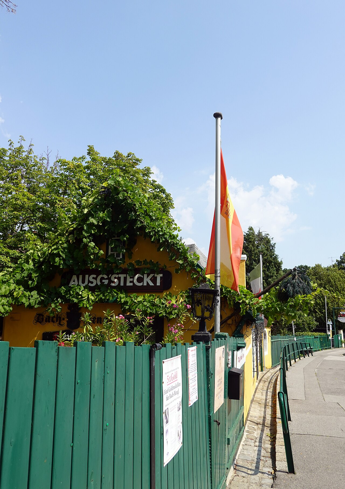
시각 자료 · 설명으로 대체
그린칭 호이리게의 정원
포도 넝쿨이 드리운 안뜰에 나무 테이블이 길게 놓이고, 손님들이 화이트와인 잔을 앞에 두고 앉아 있습니다. 대문 위엔 소나무 가지 한 다발이 걸려 지금 이 집이 영업 중임을 알립니다.
무엇을 봐야 하나 — 대문 위 부셴(소나무 가지)을 확인하세요. 이 가지가 걸려 있어야 자기 밭 와인을 파는 집이 문을 연 것입니다.
그린칭 — 도시 안에서 와인을 빚는 마을
설명
빈 북쪽 언덕 그린칭의 전통 와인 주점 호이리게 안뜰.
왜 중요한가
대도시가 시 경계 안에 상업 포도밭을 가진 세계에서 유일한 사례임을 보여 줍니다.
어디서 보나
그린칭 마을길을 걷다 대문 위에 소나무 가지가 걸린 집 안뜰.
출처
Wikimedia Commons (공개 라이선스)
그린칭 호이리게 — 황제의 칙령에서 시작된 서민의 술집
빈 북쪽 그린칭 언덕. 오늘 저녁 로컬 와인과 식사
호이리게는 그저 술집이 아니라 하나의 제도입니다. 그전까지 농민은 포도를 길러도 그 와인을 자기 손으로 손님에게 팔거나 대접할 수 없었습니다 — 와인 소매는 도시의 술집과 상인들이 쥔 독점 영업권이었고, 농민은 수확한 와인을 그들에게 넘기는 것으로 만족해야 했습니다. 1784년, 계몽군주 요제프 2세가 칙령을 내려 이 독점을 깨고 농민이 자기 포도밭에서 빚은 와인을 직접 팔 권리를 허락했습니다(다만 처음엔 음식 판매는 기존 식당들과의 경쟁을 막기 위해 금지되었고, 이 제한은 시간이 지나며 풀렸습니다). 그 전통이 지금까지 이어져, 대문 위에 부셴(소나무 가지 다발)이 걸려 있으면 지금 자기 밭 와인을 파는 중이라는 신호입니다. 지금은 9월이니 슈투름(Sturm)을 꼭 맛보세요 — 아직 발효가 끝나지 않은 뿌연 포도즙으로, 달큰하면서도 톡 쏘고, 오직 이 계절에만 마실 수 있습니다. 빈 시내 포도밭에서 나는 여러 품종을 섞어 담근 게밀히터 자츠도 이 도시만의 술입니다. 아코디언과 바이올린으로 흥을 돋우는 슈람멜무지크가 흐르면 분위기가 무르익습니다. 여기서 꼭 하나 기억할 사실 — 빈은 세계에서 유일하게 시 경계 안에 상업 포도밭을 가진 대도시입니다. 지하철로 닿는 거리에서 진짜 와인이 빚어지는, 그런 대도시는 지구상에 빈밖에 없습니다.
파른도르프 아웃렛 — 이 평원이 늘 침입의 길목이었던 이유
빈 동쪽 부르겐란트, 헝가리 국경 약 30km. 9/19 쇼핑
짧게만 짚습니다. 이곳은 부르겐란트의 판노니아 평원, 헝가리 국경이 지척인 땅입니다. 산도 언덕도 없이 지평선까지 트인 이 평평한 땅이 바로 문제였습니다 — 막을 지형이 없으니, 동쪽에서 밀려오는 군대에게 이 벌판은 곧장 빈으로 향하는 고속도로였습니다. 쇼핑 사이에 잠깐 지평선을 바라보면, 빈이 왜 그토록 방어에 집착한 변경의 도시였는지가 발밑의 지형으로 설명됩니다.
SECTION 03
알프스·할슈타트 — 엽서 마을이 아니라 소금의 근원지
이 마을이 예뻐서 유명해진 게 아닙니다. 유럽 문명을 먹여 살린 소금이 여기서 났고, 마을의 진짜 이야기는 갱도와 납골당에 있습니다.
한 문장으로할슈타트는 엽서 속 예쁜 호숫가 마을이기 전에, 3000년 동안 소금을 캐 유럽에 부와 문명의 이름까지 남긴 광산 마을입니다.
대부분의 여행자는 이 마을을 사진 한 장으로 압니다 — 호수에 비친 뾰족한 지붕들. 그러나 그 그림엽서 뒤에는 훨씬 오래되고 깊은 이야기가 있습니다. 유럽 초기 철기시대 전체를 할슈타트 문화(Hallstatt culture)라 부르는데, 그 이름이 바로 이 마을에서 왔습니다. 유럽 문명사의 한 시대에 이 작은 산골 마을의 이름이 붙은 것입니다. 왜일까요.
3000년 전부터 이 산속에서 사람들이 소금을 캤기 때문입니다. 냉장고가 없던 시대에 소금은 고기와 생선을 상하지 않게 보존하는 유일한 기술이었습니다. 보존은 곧 저장이고, 저장은 곧 부와 힘이었습니다. 영어 salary(봉급)가 salt(소금)에서 왔다는 사실이 이를 압축해 보여 줍니다 — 소금은 곧 화폐였습니다. 그 소금을 거래해 이 산골 마을 사람들은 멀리 지중해와 교역했고, 그 부가 유럽 철기 문명의 한 축을 세웠습니다.
더 놀라운 것은 갱도 속 소금이 시간을 통째로 얼려 놓았다는 점입니다. 소금은 부패를 막기에, 3000년 전 광부가 메고 다니던 가죽 배낭과 가죽신, 나무 연장이 갱도 속에서 썩지 않고 그대로 발견되었습니다. 소금이 고기를 보존하듯, 선사시대 광부의 하루까지 통째로 보존해 둔 것입니다.
호수와 마을 전경 — 왜 그 각도로만 찍히는가
마을 북쪽 호숫가 산책로, 또는 건너편 선착장 쪽
그 유명한 사진의 시점은 마을 북쪽 물가에서 남쪽을 바라볼 때 나옵니다. 왜 늘 같은 각도일까요. 이 마을엔 평지가 없기 때문입니다. 산이 호수까지 곧장 밀고 내려와, 집들은 물가의 좁은 띠에 다닥다닥 붙거나 절벽에 매달리듯 지어졌습니다. 넓게 물러서서 볼 공간이 없으니, 마을을 온전히 담으려면 호수 위나 건너편으로 시선이 물러날 수밖에 없습니다. 이 지형의 결핍이 역설적으로 세계에서 가장 유명한 풍경을 만들었습니다.
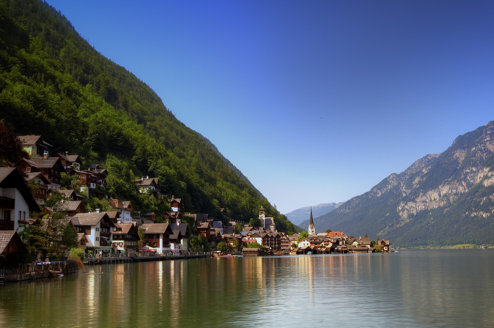
시각 자료 · 설명으로 대체
평지가 없어서 태어난 풍경
산이 호수까지 곧장 밀고 내려와, 뾰족한 지붕의 집들이 물가의 좁은 띠에 다닥다닥 붙어 있습니다. 넓게 물러서서 볼 공간이 없어 호수 위에서만 마을 전체가 담깁니다.
무엇을 봐야 하나 — 집들이 물가에 붙어 있는 밀도와, 산이 곧장 물로 떨어지는 지형을 함께 보세요. 지형의 결핍이 만든 풍경입니다.
지형의 결핍이 만든 세계적 풍경
설명
할슈타트 호수와 마을 전경입니다.
왜 중요한가
평지가 없는 지형이 역설적으로 세계에서 가장 유명한 풍경을 만들어낸 사례입니다.
어디서 보나
마을 북쪽 호숫가 산책로, 또는 건너편 선착장 쪽.
출처
Wikimedia Commons (공개 라이선스)
납골당(Beinhaus) — 할슈타트에서 가장 중요한 장소
가톨릭 성당 옆 작은 석조 예배당(Beinhaus / Karner)
이곳이야말로 이 마을의 정수입니다. 땅이 없다는 것은 산 자에게만 문제가 아니라 죽은 자에게도 문제였습니다. 묻을 땅이 부족하자, 이 마을 사람들은 10여 년 뒤 무덤을 다시 열어 뼈를 꺼내고 두개골을 씻어 이 작은 예배당에 차곡차곡 쌓았습니다. 그냥 쌓은 게 아닙니다. 두개골마다 세상을 떠난 이의 이름과 사망 연도를 적고, 담쟁이·장미·월계수를 그려 넣었습니다. 죽음을 감추지 않고, 이름을 지워 익명으로 만들지도 않고, 한 사람 한 사람을 기억한 것입니다. 좁은 땅이 강요한 관습이지만, 그 안엔 죽은 이를 대하는 이 공동체의 태도가 고스란히 담겨 있습니다. 예쁜 사진만 찍고 이곳을 지나치면, 이 마을이 왜 그렇게 살아왔는지를 통째로 놓치는 셈입니다.
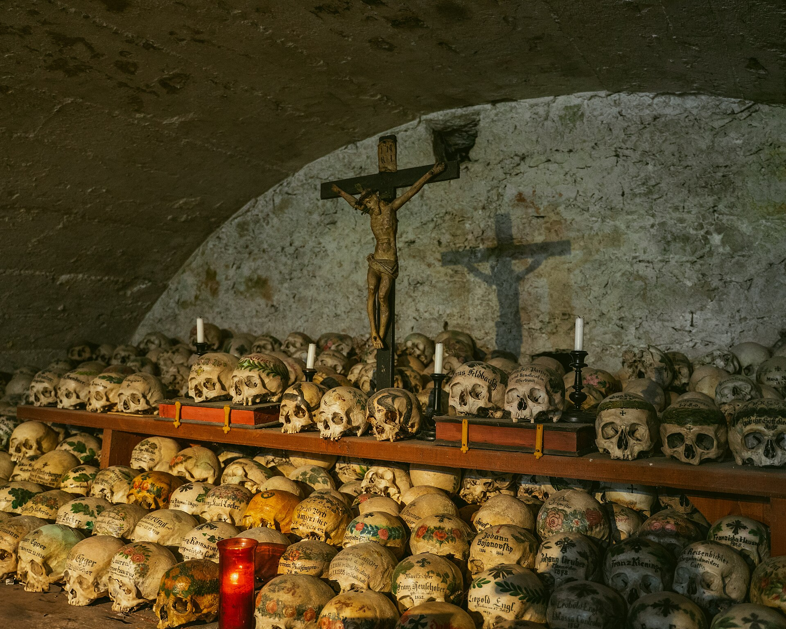
시각 자료 · 설명으로 대체
이름을 지우지 않은 죽음
작은 석조 예배당 벽에 두개골들이 차곡차곡 쌓여 있습니다. 두개골마다 이름과 사망 연도가 적혀 있고, 담쟁이·장미·월계수 무늬가 그려져 있습니다.
무엇을 봐야 하나 — 두개골에 적힌 이름과 그려진 꽃 무늬를 가까이서 확인해 보세요. 죽음을 감추지 않고 한 사람 한 사람을 기억한 방식입니다.
좁은 땅이 낳은 독특한 죽음의 문화
설명
할슈타트 납골당(Beinhaus) 내부, 이름이 적힌 채색 두개골들입니다.
왜 중요한가
묻을 땅이 없어 뼈를 다시 꺼내면서도, 이름을 지우지 않고 한 사람씩 기억한 이 마을의 태도를 보여줍니다.
어디서 보나
가톨릭 성당 옆 작은 석조 예배당.
출처
Wikimedia Commons (공개 라이선스)
스카이워크 + 푸니쿨라 vs 소금광산 — 무엇을 얻고 무엇을 포기하나 — 오후에 둘 중 하나를 골라야 한다면 기준은 분명합니다. 스카이워크와 푸니쿨라는 케이블카로 단숨에 올라 마을과 호수를 발아래 두는 조망을 얻습니다 — 체력 부담이 적고, 날이 맑으면 최고의 사진을 얻지만, 흐리면 아무것도 못 봅니다. 소금광산은 이 마을이 존재하는 이유 자체, 즉 3000년 산업 현장의 속살을 봅니다 — 갱도는 서늘하고 걸어야 하지만 날씨와 무관하고, 마을의 본질에 닿습니다. 맑은 날이면 조망을, 흐리거나 마을의 정체를 제대로 알고 싶다면 광산을 택하세요.
소금광산 — 세계에서 가장 오래된 산업 현장
마을 위 잘츠베르크(Salzberg), 푸니쿨라로 접근
인류가 지금도 운영하는 가장 오래된 광산 중 하나입니다. 흰 작업복을 입고 갱도로 들어가면, 옛 광부들이 층을 오르내리던 긴 나무 미끄럼틀을 직접 타고 내려갑니다. 지하 깊은 곳엔 거울처럼 잔잔한 소금 호수가 있어, 빛을 받으면 소금 결정이 벽에서 반짝입니다. 앞서 말한 선사시대 광부의 배낭과 도구가 발견된 곳도 이 산의 갱도 속입니다. 빈에서 본 그 모든 황금의 뿌리가 바로 여기, 이 소금 벽이었다는 사실을 몸으로 확인하는 순간입니다.
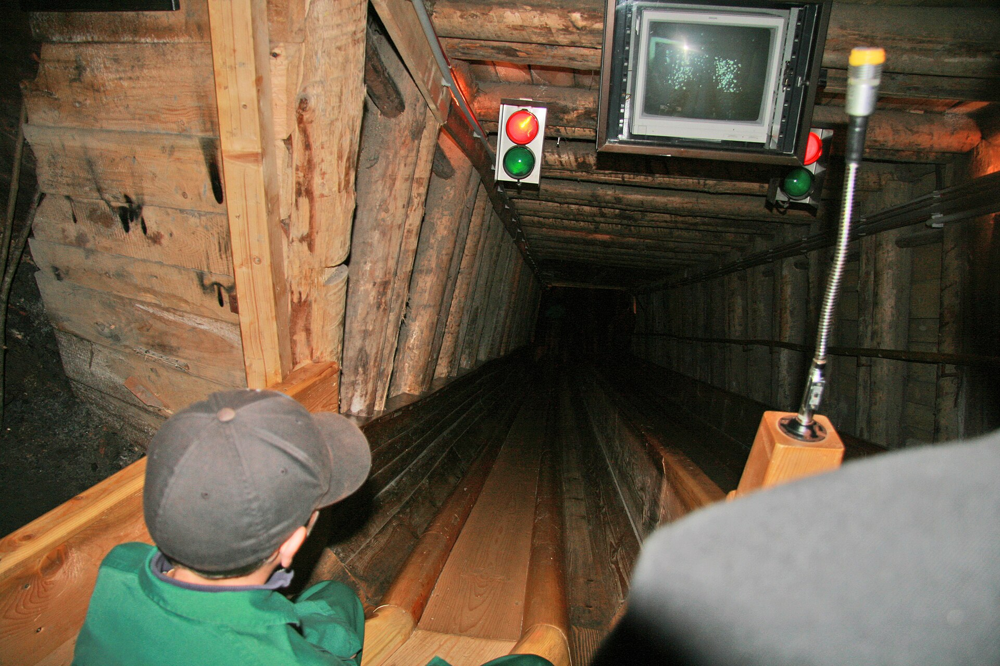
시각 자료 · 설명으로 대체
3000년째 운영되는 산업 현장
갱도 지하 깊은 곳에 거울처럼 잔잔한 소금 호수가 있고, 빛을 받으면 벽면의 소금 결정이 반짝입니다. 선사시대 광부의 도구가 발견된 곳도 이 갱도 속입니다.
무엇을 봐야 하나 — 벽면에서 반짝이는 소금 결정과, 옛 광부들이 오르내리던 나무 미끄럼틀을 함께 확인해 보세요.
빈의 황금이 시작된 소금 벽
설명
할슈타트 소금광산(잘츠베르크) 갱도 내부입니다.
왜 중요한가
3000년째 이어지는 이 마을의 존재 이유이자, 유럽 철기 문명을 세운 부의 근원입니다.
어디서 보나
마을 위 잘츠베르크, 푸니쿨라로 접근.
출처
Wikimedia Commons (공개 라이선스)
스카이워크 '5finger'와 다흐슈타인 조망 — 허공으로 뻗은 다섯 손가락
다흐슈타인 크리펜슈타인 산 위, 케이블카 상부역 인근
절벽 끝에서 허공으로 뻗어 나간 다섯 개의 강철 전망대가 마치 손가락처럼 벌어져 있습니다. 그 끝에 서면 발밑으로 아득한 낭떠러지, 눈앞으로 다흐슈타인의 만년설 봉우리와 잘츠캄머구트의 호수들이 펼쳐집니다. 알프스가 어떻게 이 지역을 세상으로부터 가두어, 소금 말고는 팔 것 없는 고립된 땅으로 만들었는지가 한눈에 이해됩니다.
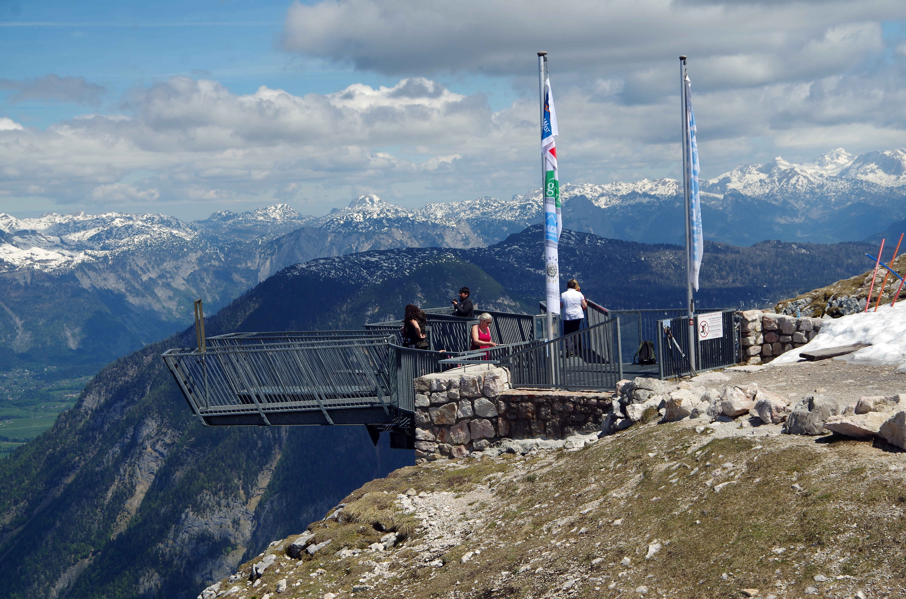
시각 자료 · 설명으로 대체
허공에 벌어진 다섯 개의 강철 손가락
절벽 끝에서 부채처럼 펼쳐진 다섯 개의 전망대. 발밑은 유리 바닥, 눈앞은 천 미터 낭떠러지입니다.
무엇을 봐야 하나 — 손가락 사이 간격으로 내려다보이는 낭떠러지와, 그 너머 다흐슈타인 만년설을 함께 확인해 보세요.
5fingers — 크리펜슈타인의 전망 스카이워크
설명
크리펜슈타인 산 케이블카 상부역 인근, 절벽으로 뻗은 5개의 강철 전망대입니다.
왜 중요한가
알프스가 잘츠캄머구트를 사방으로 가둔 고립된 지형임을 눈으로 확인시켜 주는 지점입니다.
어디서 보나
오버트라운에서 케이블카로 크리펜슈타인 상부역까지 오른 뒤 도보로 접근.
출처
Wikimedia Commons (공개 라이선스)
물가에 매달린 목조 발코니 집들 — 왜 물에 붙어 있는가
호숫가를 따라 이어진 구시가 주택들
집집마다 호수 쪽으로 튀어나온 나무 발코니를 달고 있습니다. 예뻐서가 아니라 공간이 없어서입니다. 산과 물 사이 좁은 띠에 집을 지으려니, 뒤로는 절벽이라 물러설 수 없고 앞으로는 물이라 나아갈 수 없습니다. 그래서 남은 유일한 방향, 즉 호수 위 허공으로 발코니를 내밀어 조금이라도 공간을 벌었습니다. 지형이 건축을 결정한 생생한 사례입니다.
마르크트 광장과 삼위일체 기둥 — 좁은 마을의 작은 심장
마을 한가운데 마르크트플라츠(Marktplatz)
이 마을에 유일하게 평지다운 평지가 있다면 이 작은 광장입니다. 가운데 선 삼위일체 기둥은 유럽 여러 도시에서 보이는데, 대개 페스트(흑사병)가 물러간 것을 신께 감사하며 세운 것입니다. 좁은 골목이 이 광장으로 모였다가 다시 흩어지며, 마을의 하루가 여기서 시작되고 마무리됩니다.
흔한 오해
할슈타트는 세상과 동떨어진 한적한 시골 마을이다.
사실
연간 100만 명 넘는 관광객이 몰려드는 오버투어리즘의 상징입니다. 중국에는 이 마을을 통째로 복제한 단지까지 지어졌을 정도입니다. 성수기 낮 시간은 골목이 인파로 가득 차니, 이른 아침이나 늦은 오후의 고요한 마을을 노리세요.
흔한 오해
호수와 마을 사진만 찍으면 할슈타트는 다 본 것이다.
사실
소금광산과 납골당을 보지 않으면 이 마을이 왜 존재하는지, 왜 유럽 철기시대에 그 이름이 붙었는지를 통째로 놓칩니다. 풍경은 이 마을의 겉이고, 소금과 뼈가 그 속입니다.
💡 여행 중 생각해볼 것
왜 소금 하나가 한 문명의 시대 이름이 될 만큼 중요했을까? 보존 기술이 곧 권력이던 시대의 논리를 우리는 얼마나 실감할 수 있을까?
왜 이 마을 사람들은 죽은 이의 두개골에 이름과 꽃을 그려 보관했을까? 좁은 땅이라는 조건이 어떻게 독특한 죽음의 문화를 낳았을까?
오늘날 한국과 비교하면 — 우리도 서해안 갯벌의 자염과 태안·신안의 천일염, 그리고 안동 간고등어가 있습니다. 냉장 기술이 없던 시절 소금으로 고등어를 절여 내륙 안동까지 옮긴 그 소금길을, 할슈타트가 소금을 지중해로 실어 나른 길과 나란히 놓으면 '보존이 곧 부'라는 원리가 동서양에 똑같이 흘렀음이 보입니다.
SECTION 04
잘츠부르크 방문지 — 소금이 세운 대주교의 도시
이 도시의 이름부터 강, 요새, 정원까지 모두 소금과 권력의 이야기입니다. 성직자가 어떻게 군주가 되었는지를 방문지마다 읽어 나갑니다.
한 문장으로잘츠부르크는 산속 소금이 만든 부로 대주교가 군주가 되어, 그 재력으로 이탈리아 바로크를 알프스 북쪽에 옮겨 심은 도시입니다.
이 도시의 통사와 건축 심화는 별도의 잘츠부르크 도시 패널이 맡습니다. 여기서는 당신이 9/21 저녁부터 9/23 아침까지 실제로 밟게 될 장소들을, 방문 순서에 가깝게 하나씩 해설합니다.
호엔잘츠부르크 요새 — 대주교가 자기 시민에게 대포를 겨눈 성
구시가 남쪽 묀히스베르크 언덕 위. 푸니쿨라 또는 도보로 오름
구시가 어디서든 올려다보이는 이 거대한 요새는 한 번도 함락된 적이 없습니다. 그런데 이상한 점이 있습니다 — 성의 대포와 방어 시설 상당수가 바깥의 적이 아니라 발아래 자기 도시를 향하고 있습니다. 왜일까요. 이 도시의 지배자는 왕이 아니라 대주교였고, 그의 권력은 시민의 동의가 아니라 신의 권위와 재력에서 나왔습니다. 1525년 소금 광부와 농민들이 무거운 세금과 대우에 맞서 봉기하자, 대주교는 이 요새로 피신해 그들을 향해 성문을 닫았습니다. 성이 지킨 것은 도시가 아니라 도시를 다스리는 권력 자체였던 것입니다. 안으로 들어가면 황소 오르간이라 불리는 야외 오르간이 있는데, 그 굵고 낮은 소리가 성벽을 타고 도시로 울려 퍼지며 통치자의 존재를 매일 각인시켰습니다. 걸어 오르면 도시가 발밑에서 서서히 펼쳐지는 맛이 있고, 푸니쿨라를 타면 순식간에 정상에 닿습니다.
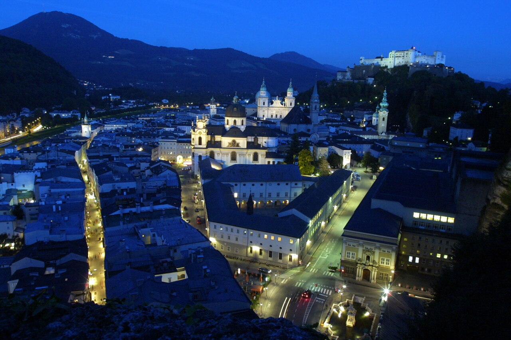
시각 자료 · 설명으로 대체
한 번도 함락되지 않은 언덕 위 성
구시가 어디서든 올려다보이는 언덕 위에 거대한 요새가 자리합니다. 두꺼운 성벽과 여러 겹의 방어 시설이 지금도 그대로 남아, 이 성이 왜 한 번도 함락되지 않았는지를 짐작하게 합니다.
무엇을 봐야 하나 — 성벽과 대포가 향한 방향. 일부는 바깥이 아니라 도시 쪽을 향해 있습니다.
호엔잘츠부르크 요새 — 대주교가 자기 시민을 겨눈 성
설명
잘츠부르크 구시가를 내려다보는 언덕 위의 대주교 요새.
왜 중요한가
종교 권력이 어떻게 군사력까지 겸비했는지를 건축으로 보여 줍니다.
어디서 보나
구시가 어디서든, 또는 미라벨 정원 쪽에서 요새를 바라볼 때.
출처
Wikimedia Commons (공개 라이선스)
대성당(돔) — 알프스에 옮겨 심은 로마 성베드로
돔플라츠(대성당 광장). 구시가 한복판
이 성당에 들어서면 이상하게 낯익습니다 — 로마 바티칸의 성베드로 대성당을 축소해 옮겨 놓은 듯하기 때문입니다. 실제로 대주교는 이탈리아 건축가를 불러 로마를 알프스 북쪽에 재현하려 했습니다. 소금이 안겨 준 부가 있었기에 가능한 야심이었습니다. 이 성당은 음악사에서도 특별합니다 — 모차르트가 이곳에서 세례를 받았고, 훗날 이 성당의 오르가니스트로 일하며 미사곡을 작곡했습니다. 천장을 올려다보면 색이 살짝 다른 부분이 보이는데, 2차 대전 폭격으로 돔이 무너진 것을 전후에 복원한 흔적입니다. 화려함 속에 상처의 기억이 함께 있습니다.
시각 자료 · 설명으로 대체
알프스에 옮겨 심은 로마
돔플라츠 한쪽을 채운 이 대성당의 파사드는 로마 바티칸의 성베드로 대성당을 어딘가 닮아 있습니다. 이탈리아 건축가가 설계해 이탈리아의 위엄을 알프스 북쪽으로 그대로 옮겨 왔기 때문입니다.
무엇을 봐야 하나 — 천장 색이 살짝 다른 부분. 2차 대전 폭격으로 무너진 돔을 전후에 복원한 흔적입니다.
대성당(돔) — 모차르트가 세례받은 곳
설명
잘츠부르크 구시가 한복판 돔플라츠의 대주교 대성당.
왜 중요한가
소금이 안겨 준 부와 야심이 이탈리아 바로크를 알프스 북쪽에 재현하게 만든 증거입니다.
어디서 보나
돔플라츠(대성당 광장)에서 정면으로 바라볼 때.
출처
Wikimedia Commons (공개 라이선스)
시각 자료 · 설명으로 대체
게트라이데 거리의 철제 간판들
좁은 돌길 양옆으로 높고 좁은 건물이 이어지고, 상점마다 검은 철제 세공으로 만든 간판이 골목 위로 매달려 있습니다. 맥도날드조차 이 규칙을 따라 철제 간판을 달았습니다.
무엇을 봐야 하나 — 간판의 그림을 읽어 보세요. 글자를 못 읽던 시절, 열쇠·빵·장갑 그림이 그 가게가 무엇을 파는지를 알려 주었습니다.
게트라이데 거리 — 문맹 시대의 그림 간판
설명
철제 세공 간판이 늘어선 잘츠부르크 구시가의 중심 상점 거리.
왜 중요한가
글을 못 읽던 시대의 도시 상업 문화가 지금도 규칙으로 살아 있음을 보여 줍니다.
어디서 보나
게트라이데가세 골목 한복판에서 위를 올려다볼 때.
출처
Wikimedia Commons (공개 라이선스)
게트라이데 거리 — 간판이 철제 예술인 이유
구시가 중심 상점가 게트라이데가세(Getreidegasse)
이 거리를 걸으면 상점마다 골목 위로 튀어나온 철제 세공 간판이 눈에 들어옵니다. 왜 글자가 아니라 정교한 쇠 그림일까요. 대부분의 사람이 글을 읽지 못하던 시대에, 간판은 그림으로 말해야 했습니다 — 빵집엔 프레첼, 열쇠집엔 열쇠, 장갑집엔 장갑. 지금은 이 규칙이 도시 미관 조례로 이어져, 세계적 프랜차이즈조차 여기서는 반드시 철제 간판을 답니다. 또 하나 볼 것은 두르크하우스(Durchhaus) — 좁고 긴 건물들 사이를 관통해 앞뒤 골목을 잇는 아치형 통로입니다. 파사드는 좁지만 안으로 깊게 파고든 이 구조는, 강과 언덕 사이 좁은 땅에 최대한 많은 상점을 욱여넣으려 한 중세 도시계획의 지혜입니다.
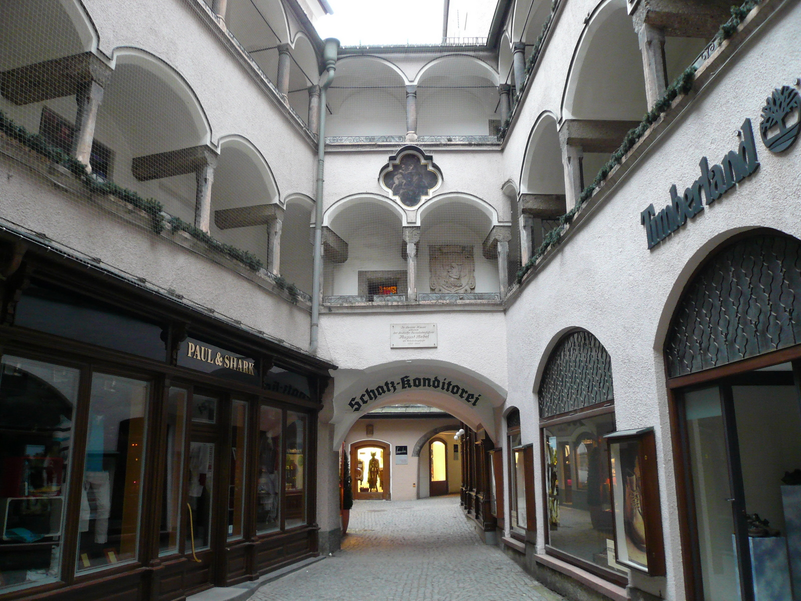
시각 자료 · 설명으로 대체
건물을 관통해 뒷골목으로 이어지는 통로
좁은 상점 파사드 뒤로 아치형 통로가 이어지며, 그 안쪽으로 또 다른 골목과 마당이 열립니다.
무엇을 봐야 하나 — 통로 천장의 아치 곡선과, 통로를 지나 반대편 골목이 열리는 순간의 채광 변화를 확인해 보세요.
두르크하우스 — 상점 뒤로 숨은 관통 통로
설명
게트라이데가세의 좁은 건물 사이를 관통해 뒤쪽 골목으로 이어지는 아치형 통로입니다.
왜 중요한가
좁은 정면 뒤로 깊게 파고든 이 구조가, 제한된 땅에 상점을 최대한 밀어 넣은 중세 도시계획의 지혜를 보여줍니다.
어디서 보나
게트라이데가세 3번지 등, 상점 사이로 열린 아치 입구를 통해 들어갈 수 있습니다.
출처
Wikimedia Commons (공개 라이선스)
모차르트 생가 — 정작 더 많은 이야기는 강 건너에 있다
게트라이데가세 9번지, 노란 건물 4층. 그리고 강 건너 마카르트 광장의 거주지
노란 건물 4층의 셋집, 여기서 모차르트가 태어났습니다. 방을 둘러보면 그의 어린 바이올린과 편지가 남아 있습니다. 그런데 이 집을 보며 함께 떠올려야 할 사람은 아버지 레오폴트입니다. 그는 아들의 천재성을 일찍 알아채고 어린 모차르트를 유럽 궁정으로 데리고 다니며 연주시켰습니다 — 자식에 대한 사랑이자, 신동을 앞세운 야심이었고, 그 고된 순회는 어린 아들의 몸과 마음에 대가를 남겼습니다. 관광객이 놓치는 것: 사람들은 이 생가 앞에만 줄을 서지만, 강 건너 마카르트 광장의 거주지(Wohnhaus)가 사실 더 풍부한 이야기를 담고 있습니다. 성장한 모차르트가 가족과 실제로 오래 산 곳이자, 잘츠부르크 대주교와의 갈등 끝에 그가 이 도시를 떠나 빈으로 향하게 되는 사연이 서린 장소이기 때문입니다. 그 갈등의 결말은 이렇습니다 — 궁정 음악가로 대주교 콜로레도 밑에서 일하던 청년 모차르트는 하인·요리사들과 한 식탁에서 밥을 먹으라는 지시를 받을 정도로 신하 취급을 당했습니다. 빈에서 홀로서기를 원한 그는 1781년 5월 사직을 청했지만 거부당했고, 한 달 뒤 대주교의 시종장 아르코 백작에게 말 그대로 엉덩이를 걷어차이며 쫓겨나듯 해고당했습니다. 이 치욕적인 결별이 그를 완전히 빈으로 떠밀었고, 이후 그는 궁정에 매인 악사가 아니라 스스로 벌어먹는 자유음악가로 살아갑니다. 화해와 잘츠부르크 복귀를 끝까지 종용한 아버지 레오폴트의 뜻을 거스른, 그의 인생에서 가장 결정적인 반항이었습니다.
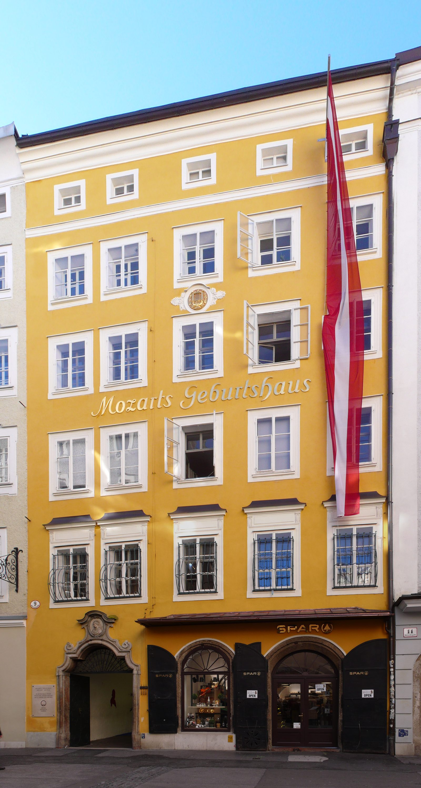
시각 자료 · 설명으로 대체
노란 건물 4층, 신동이 태어난 방
게트라이데 거리의 다른 좁은 건물들과 나란히 선 이 노란 건물 4층에서 모차르트가 태어났습니다. 파사드만 보면 평범한 상점 건물처럼 보이지만, 창문 위 표지판이 이곳의 정체를 알려 줍니다.
무엇을 봐야 하나 — 건물 자체가 아니라 거리에 스며든 평범함. 신동의 탄생지도 결국 좁은 골목의 평범한 셋집이었습니다.
모차르트 생가 — 아버지 레오폴트의 야심이 시작된 곳
설명
게트라이데가세 9번지, 모차르트가 태어난 노란 건물.
왜 중요한가
신동을 앞세운 아버지의 순회 연주가 시작된 출발점입니다.
어디서 보나
게트라이데가세를 걷다 9번지 건물을 올려다볼 때.
출처
Wikimedia Commons (공개 라이선스)
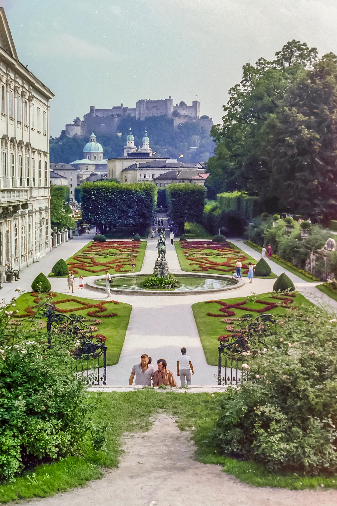
시각 자료 · 설명으로 대체
미라벨 정원과 페가수스 분수
기하학적으로 다듬은 화단과 페가수스(날개 달린 말) 분수 너머로, 언덕 위 호엔잘츠부르크 요새가 정확히 축선 끝에 걸립니다. 영화 사운드 오브 뮤직에서 아이들이 노래하며 뛰던 바로 그 정원입니다.
무엇을 봐야 하나 — 페가수스 분수에 서서 정원 너머 요새를 보세요. 정원의 축선이 시선을 요새로 이끌도록 계산되어 있습니다.
미라벨 — 사랑을 위해 지은 궁전 정원
설명
대주교가 연인을 위해 지은 미라벨 궁전의 대칭 정원과 페가수스 분수.
왜 중요한가
독신 서약을 한 성직자 군주의 인간적 모순이 정원의 화려함에 새겨져 있습니다.
어디서 보나
미라벨 정원 중앙 축선에서 요새 방향을 바라볼 때.
출처
Wikimedia Commons (공개 라이선스)
미라벨 정원 — 독신 서약과 열다섯 아이 사이의 간극
강 건너 신시가, 미라벨 궁전과 정원
이 아름다운 궁전과 정원은 놀라운 사연에서 태어났습니다. 성직자로서 독신을 서약한 대주교가, 연인 살로메 알트와 그 사이에서 낳은 열다섯 아이를 위해 지은 저택이 바로 이곳입니다. 신 앞의 서약과 현실 사이의 그 아득한 간극이, 이 우아한 대칭 화단 아래 숨어 있습니다. 오늘날 이 정원이 세계적으로 유명한 또 다른 이유는 영화 사운드 오브 뮤직 때문입니다 — 아이들이 도레미를 부르며 뛰어오르던 계단, 날개 달린 말 페가수스 분수, 그리고 표정을 익살스럽게 새긴 난쟁이 정원이 모두 여기 있습니다.
잘차흐 강변 — 강 이름 하나에 도시 전체가 담겨 있다
구시가와 신시가를 가르는 잘차흐(Salzach) 강변
도시를 가로지르는 이 강의 이름은 잘차흐(Salzach), 즉 소금 강입니다. 도시 이름 잘츠부르크(Salzburg)는 소금 성이라는 뜻입니다. 강 이름과 도시 이름이 똑같이 소금을 가리킵니다 — 산에서 캔 소금을 이 강에 배로 실어 내려 유럽 각지로 팔았고, 그 소금 수익이 이 도시 전체를 세웠기 때문입니다. 강을 사이에 두고 남쪽 구시가는 소금 상인과 대주교의 상업·종교 중심지였고, 강 건너 북쪽은 미라벨을 포함한 신시가로 뻗어 나갔습니다. 밤이면 강물에 요새의 불빛이 어리는데, 그 물길이 곧 이 도시의 부를 실어 나른 혈관이었음을 떠올리면 야경이 달리 보입니다.
사운드 오브 뮤직의 아이러니 — 정작 오스트리아인은 이 영화를 잘 모른다
미라벨 정원·레오폴츠크론 궁전 등 영화 촬영지 곳곳
한국을 포함해 전 세계가 이 도시를 사운드 오브 뮤직의 무대로 기억하지만, 정작 오스트리아인 대부분은 이 영화를 보지 않았습니다. 왜일까요. 그들에게 이것은 미국이 만든 미국 영화일 뿐이고, 게다가 실제 트라프 가족의 역사와도 여러 대목이 다릅니다. 나라를 떠난 방식도 영화처럼 산을 넘어 극적으로 탈출한 게 아니라 기차로 담담히 떠났습니다. 여행자가 열광하는 이야기와 현지인이 심드렁한 이야기가 갈리는 이 간극 자체가, 관광지가 어떻게 외부의 시선으로 만들어지는지를 보여 주는 흥미로운 사례입니다.
💡 여행 중 생각해볼 것
왜 성직자였던 대주교가 왕처럼 요새와 궁전을 짓고 군대까지 거느릴 수 있었을까? 종교 권력과 세속 권력이 한 사람에게 겹쳐질 때 무슨 일이 벌어졌을까?
왜 어떤 도시는 자기 이야기가 아니라 외국 영화로 세계에 알려질까? 관광지의 이미지는 누가 만드는 걸까?
오늘날 한국과 비교하면 — 우리도 조선의 소금이 국가 재정의 한 축이었고, 강경·마포처럼 소금과 젓갈을 실어 나른 포구가 도시로 성장했습니다. 잘차흐 강의 소금 배와 조선의 소금 포구를 나란히 놓으면, 강과 소금이 도시를 만든 원리가 닮아 있음이 보입니다.
SECTION 05
오스트리아 실전 — 예절과 잡학까지
공연장에서 언제 박수를 치고, 카페에서 왜 자리를 오래 지켜도 되는지 — 알고 가면 현지인처럼 움직입니다.
한 문장으로오스트리아는 격식과 여유가 공존하는 나라라, 공연·카페·와인 주점마다 나름의 규칙을 알고 들어가면 훨씬 깊이 즐길 수 있습니다.
먼저 상황별로 어떻게 움직이면 좋은지를 표로 정리합니다.
상황
이렇게 하세요
빈 대중교통
72시간권을 사면 U1~U6 지하철·트램·버스를 자유롭게 탑니다. 개찰구가 없는 신뢰 시스템이라, 반드시 첫 탑승 때 각인기에 티켓을 찍으세요 — 무임승차로 걸리면 큰 벌금입니다.
빈 카드 vs 개별권
박물관 할인과 교통이 묶인 빈 카드는 명소를 많이 도는 사람에게 유리하고, 동선이 단순하면 72시간 교통권 하나가 더 쌉니다. 자기 일정에 대입해 계산해 보세요.
무지크페라인 공연 복장
정장이 아니어도 됩니다. 단정한 캐주얼도 허용되니 부담 갖지 마세요. 다만 반바지·슬리퍼는 피하는 것이 예의입니다.
공연 중 박수 시점
교향곡·협주곡은 악장(樂章) 사이에는 박수를 치지 않습니다 — 곡이 완전히 끝난 뒤에 칩니다. 지휘자가 손을 완전히 내리고 몸을 돌릴 때가 신호입니다. 브라보는 그 뒤에 외치세요.
공연장 인터미션
쉬는 시간에 로비에서 샴페인 한 잔을 즐기는 것이 빈의 오랜 문화입니다. 공연 중 사진 촬영은 금지입니다.
미술관 관람
백팩은 앞으로 메거나 보관소에 맡깁니다 — 뒤로 메면 돌아설 때 작품을 칠 수 있습니다. 작품과는 한 팔 이상 거리를 두고, 플래시는 금지입니다.
카페 주문
멜란지(우유 거품 커피), 아인슈페너(휘핑크림 얹은 블랙), 브라우너(작은 밀크커피)를 구분해 주문하면 현지인처럼 보입니다. 커피엔 늘 물 한 잔이 함께 나옵니다.
웨이터 부르기
격식 있는 카페에서 웨이터는 헤어 오버(Herr Ober)라 부릅니다. 옛 제국의 호칭 문화가 남은 것입니다.
카페에 오래 앉기
커피 한 잔에 신문 한 부를 놓고 몇 시간을 앉아도 눈치 주지 않습니다 — 빈의 카페는 좁은 집을 벗어난 제2의 거실이기 때문입니다. 재촉받지 않는 것이 이 문화의 핵심입니다.
팁
보통 5~10% 정도. 계산할 때 금액을 받아 올린 총액을 말하는 방식입니다 — 예를 들어 18.5유로면 20유로라고 말하며 건넵니다.
호이리게 이용법
대개 셀프 뷔페식입니다. 접시에 음식을 담아 무게나 개수로 계산하고, 와인은 따로 주문합니다. 대문 위 소나무 가지(부셴)가 영업 신호이고, 9월엔 발효 중인 슈투름을 꼭 청해 보세요.
고급 레스토랑 예약
Steirereck 급은 몇 주 전 예약이 기본입니다. 즉흥 방문으론 자리를 잡기 어렵습니다.
화장실
공공·역·휴게소 화장실은 대개 유료입니다(동전 준비). 식당·카페 손님은 무료로 이용합니다.
렌터카 비네트
오스트리아 고속도로(아우토반)는 비네트(vignette)라는 통행 스티커를 붙여야 합니다 — 없이 달리면 큰 벌금입니다. 렌터카에 이미 붙어 있는지 반드시 확인하세요.
국경 통과
오스트리아에서 독일로는 검문 없이 무정차로 넘습니다(솅겐). 다만 나라마다 통행료 제도가 다르니 미리 확인하세요.
주차
도심 단기주차구역은 파크샤인(Parkschein)이라는 주차권을 사서 시간을 적어 앞유리에 둡니다.
산악도로 운전
9월 알프스 아침은 안개가 짙고 서늘합니다. 헤드라이트를 켜고 속도를 줄이며, 굽잇길에서는 여유를 두세요.
일요일 상점
대부분의 상점이 일요일에 문을 닫습니다. 먹을 것·생필품은 토요일에 미리 사 두세요.
식당의 물
물은 대개 유료이며 병으로 주문합니다. 무료 수돗물을 당연히 기대하지 마세요.
인사말
독일 표준어 인사보다 남부식 그뤼스 고트(Grüß Gott)가 자연스럽습니다. 빈에서는 옛 제국의 정중한 인사인 하베 디 에레나 퀴스 디 한트(손에 입맞춤을) 같은 표현도 여전히 들립니다.
성당 예절
미사 중에는 관람을 삼가고, 어깨와 무릎을 가리는 옷차림이 예의입니다. 조용히 움직이세요.
9월 옷차림
빈은 낮 20도 안팎이지만 할슈타트·알프스 산간은 10도 이하로 떨어집니다. 레이어링(겹쳐 입기)으로 벗고 입기 쉽게 준비하세요.
오해 바로잡기
흔한 오해
오스트리아는 독일의 일부 같은 나라다.
사실
오스트리아인이 가장 싫어하는 말입니다. 1938년 나치 독일에 강제 병합됐던 아픈 기억이 있고, 독립 국가로서의 정체성은 1955년에야 확립됐습니다. 언어는 비슷해도 역사와 자의식은 전혀 다른 나라입니다.
흔한 오해
빈은 모차르트의 도시다.
사실
모차르트는 잘츠부르크 출신이고, 빈에서는 오히려 가난하게 죽어 공동묘지에 묻혔습니다. 빈이 정말 사랑한 음악가는 왈츠의 왕 요한 슈트라우스와, 이 도시에서 활동하며 묻힌 베토벤입니다.
흔한 오해
사운드 오브 뮤직은 오스트리아의 자랑거리다.
사실
현지에서는 미국 영화로 취급되어 대부분이 보지 않았습니다. 실제 트라프 가족의 역사와도 여러 대목이 다릅니다. 세계의 이미지와 현지의 감각이 크게 어긋나는 대표적 사례입니다.
흔한 오해
슈니첼은 오스트리아가 발명한 요리다.
사실
북이탈리아 밀라노의 코톨레타에서 왔다는 기원설이 유력합니다. 제국이 여러 지방의 요리를 빈의 식탁으로 끌어모았듯, 슈니첼도 국경을 넘어 온 음식이 오스트리아의 대표 요리가 된 경우입니다.
도시 연결 — 바로크의 두 얼굴, 그리고 두 가문의 경쟁 — 잘츠부르크의 바로크는 소금 부자가 된 대주교의 자발적 과시였습니다. 반면 프라하의 바로크는 백산 전투 이후 승자인 가톨릭 합스부르크가 개신교 도시 위에 덮어씌운 강요된 화려함이었습니다. 같은 양식이라도 태어난 동기가 정반대입니다. 그리고 9/23 이후 향하는 뮌헨은 비텔스바흐 가문의 도시로, 합스부르크와 수백 년간 독일권의 주도권을 놓고 경쟁한 라이벌이었습니다 — 잘츠부르크의 화려함을 뮌헨의 화려함과 견주며 그 경쟁을 떠올려 보세요.
알아 두면 여행이 깊어지는 잡학
왜 빈엔 카페 문화가 발달했나
오스만군이 퇴각하며 남긴 커피 자루에서 시작됐다는 전설이 있지만, 실제로는 아르메니아 상인이 첫 카페를 열었다고 전해집니다. 좁은 집과 긴 겨울을 견디려는 사람들에게 카페는 따뜻한 제2의 거실이 되었습니다.
왜 빈 사람들은 죽음에 집착하나
아름다운 시신, 곧 쇠네 라이히(schöne Leich)라 하여 성대한 장례를 미덕으로 여겼습니다. 유럽 최대급 중앙묘지와 장례 박물관까지 있을 정도로, 잘 죽는 것을 삶의 완성으로 보는 정서가 남아 있습니다.
왜 도나우는 푸르지 않나
왈츠 '아름답고 푸른 도나우'와 달리 실제 강물은 대개 흙빛 갈색입니다. 상류에서 실려 온 퇴적물 때문입니다 — 노래의 '푸름'은 강물의 색이 아니라 낭만적 이상이었습니다.
왜 빈 국립오페라는 입석표를 파나
공연 당일 아주 싼 값에 입석표를 팝니다. 돈이 없어도 최고의 음악을 들을 수 있게 한 오랜 전통으로, 음악이 소수 특권층만의 것이 아니라는 이 도시의 자부심입니다.
왜 합스부르크는 몸을 세 곳에 나눠 묻었나
황족은 시신·심장·내장을 각각 다른 성당에 따로 안치했습니다. 시신은 카푸치너 납골당, 심장은 아우구스티너 교회, 내장은 슈테판 대성당 지하로 — 죽음마저 격식으로 다스린 제국의 감각입니다.
왜 국가에 '딸들'이 추가됐나
오스트리아 국가 가사에 원래 '아들들'만 있었는데, 양성평등을 반영해 '딸들'이 나중에 추가되었습니다. 전통과 현대가 부딪히며 국가(國歌)마저 바뀐 사례입니다.
왜 자허토르테는 재판까지 갔나
초콜릿 케이크 자허토르테의 원조를 두고 자허 호텔과 데멜 제과점이 수년간 법정 다툼을 벌였습니다. '오리지널'이라는 단어 하나에 도시의 자존심이 걸렸던 것입니다.
왜 빈엔 세계 최초가 많나
세계에서 가장 오래된 동물원(쇤브룬 티어가르텐), 프로이트의 정신분석 탄생지, 그리고 화가 훈데르트바서가 디자인한 곡선투성이 쓰레기 소각장까지 — 빈은 오래된 것과 파격을 동시에 품은 도시입니다.
왜 잘츠부르크는 여름에 극장이 되나
매년 여름 잘츠부르크 페스티벌이 열려 도시 전체가 무대가 됩니다. 대성당 광장에서 상연되는 중세극 '예더만'(만인)은 죽음 앞에 선 인간을 그린 이 축제의 상징입니다.
왜 이름에 박사·석사를 붙이나
오스트리아에서는 학위를 이름 앞에 붙여 부르고 문서에도 표기합니다. 옛 제국의 관료·학위 존중 문화가 남아, 호칭 하나에도 격식을 챙깁니다.
왜 9월에 슈투름을 마셔야 하나
슈투름은 발효가 끝나지 않은 뿌연 포도즙으로, 오직 포도 수확기인 9~10월 잠깐만 나옵니다. 달콤하면서 톡 쏘고 은근히 취기가 오르는, 이 계절에만 허락된 술입니다.
왜 알프스 소는 종을 다나
산비탈 목초지에 흩어져 풀을 뜯는 소를 소리로 찾기 위해서입니다. 안개가 잦은 산에서 종소리는 소의 위치를 알리는 신호이자, 알프스의 정취를 이루는 소리 풍경이 되었습니다.
💡 여행 중 생각해볼 것
왜 이 나라는 커피 한 잔에 몇 시간을 앉아 있어도 되는 문화를 지켜 왔을까? 시간을 재촉하지 않는 공간이 삶에 무엇을 주는 걸까?
왜 오스트리아인은 '독일의 일부'라는 말에 그토록 예민할까? 언어가 같아도 다른 나라라는 정체성은 어떻게 만들어지는 걸까?
오늘날 한국과 비교하면 — 우리에게도 빠르게 마시고 일어나는 커피 문화가 있는가 하면, 최근엔 오래 머무는 카페 문화도 자리 잡았습니다. '제2의 거실'로서의 카페라는 관점에서, 빈의 백 년 넘은 카페와 우리의 카페 문화를 견주어 보면 흥미롭습니다.
C3 / COUNTRY ROUTE — GERMANY
독일 · 9월 20일, 23일–27일 · 방문지 해설
독일이기 전에 바이에른이었다
이 패널은 뮌헨이라는 도시의 통사를 다시 늘어놓지 않습니다. 대신 당신이 실제로 발을 딛게 될 장소들을 일정 순서 그대로 따라가며, 그 앞에 섰을 때 무엇을 보고 무엇을 느껴야 하는지를 함께 걷듯 풀어냅니다. 프라하가 살아남은 도시라면 뮌헨은 다시 지어낸 도시입니다 — 이 여행의 마지막에서 당신은 그 차이를 눈으로 확인하게 됩니다.
SECTION 01
일정과 경로 — 당신은 독일이 아니라 바이에른으로 들어갑니다
지도 위에서는 그냥 독일 남부의 한 점이지만, 이곳 사람들에게 물어보면 자기를 바이에른 사람이라 먼저 말하고 독일 사람이라는 말은 그 다음에 붙입니다. 이 여행의 마지막 목적지가 왜 뮌헨인지, 그 선택에 이번 여정 전체의 결론이 숨어 있습니다.
한 문장으로당신은 지금 독일이라는 나라가 아니라, 1871년까지 독립 왕국이었고 지금도 스스로를 그렇게 기억하는 바이에른이라는 오래된 나라로 들어가는 중입니다.
경로
이번 여정의 지형
독일(바이에른) — 방문지와 이동 경로
설명
붉은 선으로 강조한 영역이 바이에른입니다. 오른쪽 위 작은 상자는 독일 전체에서 바이에른이 차지하는 위치를 보여 줍니다. 뮌헨을 거점으로 노이슈반슈타인(9/25)과 베르히테스가덴(9/20)이 각각 어느 방향인지 확인하세요.
왜 중요한가
'독일'이라는 하나의 나라를 상상하고 오면 바이에른을 오해합니다. 이 경계선이 곧 사람들의 자기 인식이며, 왜 뮌헨 사람들이 스스로를 먼저 바이에른인이라 부르는지의 근거입니다.
어디서 보나
이동 중 기차·차 안에서 이 지도를 다시 펼쳐 보세요. 창밖 풍경이 지도의 어느 지점인지 맞춰 보는 것만으로 지리 감각이 몸에 남습니다.
출처
국경·하천은 공개 지리 데이터를 단순화해 직접 작도(SVG). 방문지 좌표는 실제 위경도.
여행의 마지막 나라로 왜 하필 독일을, 그것도 뮌헨을 골랐는지 스스로에게 물어보십시오. 답은 프라하에 있습니다. 당신이 며칠 전 걸었던 프라하의 구시가는 폭격을 거의 피한 도시였습니다. 그 골목의 돌 하나, 벽의 금 하나가 수백 년 전 그대로 살아남은 진짜입니다. 그런데 뮌헨의 구시가도 프라하만큼이나 오래되어 보입니다. 첨탑이 서 있고, 광장이 넓고, 시청사가 중세의 얼굴을 하고 있습니다. 하지만 이 얼굴의 상당 부분은 1945년 이후 다시 지어낸 것입니다.
제2차 세계대전이 끝났을 때 뮌헨 도심은 절반 이상이 잿더미였습니다. 그때 이 도시가 내린 선택이 흥미롭습니다. 많은 독일 도시가 현대적으로 새로 짓는 길을 택했지만, 뮌헨은 부서지기 전의 옛 모습 그대로 복원하는 길을 택했습니다. 그래서 지금 당신 눈앞의 뮌헨은, 프라하처럼 살아남은 것이 아니라 기억을 근거로 다시 세운 도시입니다. 같은 구시가처럼 보이지만 하나는 살아남은 것이고 하나는 다시 지은 것 — 이 대비가 이번 여행의 조용한 결론입니다.
여기에 한 겹을 더 얹으십시오. 뮌헨을 700년 넘게 다스린 비텔스바흐 왕가는, 당신이 빈에서 마주쳤던 합스부르크 왕가의 오랜 경쟁자였습니다. 두 가문은 왕가의 딸을 주고받으며 얽혔지만 끝까지 서로를 견제했습니다. 오스트리아에서 바이에른으로 국경을 넘는 이 짧은 이동은, 사실 유럽을 나눠 가졌던 두 왕조의 경계를 넘는 일이기도 합니다.
그리고 잊지 마십시오 — 바이에른은 1871년 독일 제국에 합쳐지기 전까지 어엿한 독립 왕국이었습니다. 지금도 이곳 사람들은 스스로를 '독일 사람'이기 전에 '바이에른 사람'으로 여깁니다. 파란 마름모 깃발을 도처에 걸고, 남독일 특유의 사투리를 쓰며, 북부의 신교 전통과 구별되는 가톨릭의 색채를 지킵니다. 그러니 이 여정은 '독일 여행'이라기보다 한때 독립국이었던 바이에른으로 들어가는 여행이라 부르는 편이 진실에 가깝습니다. 이 관점 하나를 품고 걷는 것만으로, 앞으로 보게 될 광장과 궁전과 축제가 전혀 다른 깊이로 다가올 것입니다.
9/20 일
빈에서 베르히테스가덴으로 — 독일 여정의 시작점
렌터카로 오스트리아를 빠져나와 독일의 가장 깊은 산골에서 이번 여정을 엽니다. 대도시가 아니라 알프스 자락의 작은 산악 마을이 첫 인상입니다.
왜 이 순서인가 — 뮌헨이라는 세련된 도시로 곧장 들어가는 대신, 바이에른이 원래 산과 소금과 신앙의 땅이었음을 몸으로 먼저 겪게 하려는 순서입니다. 도시는 이 산골의 부(富)가 흘러 내려가 만들어진 결과이니까요. (베르히테스가덴 자체의 깊은 이야기는 별도 패널에서 다룹니다.)
베르히테스가덴 계곡의 첫 오후 — 쾨니히제·켈슈타인·소금광산
9/23 수
잘츠부르크에서 뮌헨으로, 그리고 첫 밤은 축제로
오전 11시 잘츠부르크를 떠나 뮌헨으로 들어와 도심 북쪽 가르힝의 숙소에 짐을 풀고, 그날 저녁 곧바로 옥토버페스트 텐트로 향합니다. 평일이라 자정 가까이까지 머물 수 있습니다.
왜 이 순서인가 — 도시를 먼저 보고 축제를 나중에 겪는 대신, 축제를 첫날 밤에 먼저 몸으로 겪고 나서 다음 날 도시를 봅니다. 그러면 이 도시가 왜 스스로를 '맥주의 도시'로 규정하는지를 머리가 아니라 몸이 먼저 알게 됩니다.
뮌헨에 도착한 저녁 — 가르힝 숙소에서 지하철로 테레지엔비제까지
9/24 목
시내 핵심 — 광장에서 궁전, 강가 서핑, 그리고 궁정 술집까지
오전에 마리엔플라츠와 신 시청사 글로켄슈필(11시 인형극), 프라우엔교회를 보고, 오후에 빅투알리엔 시장·레지덴츠·영국정원의 아이스바흐 서핑을 거쳐, 저녁은 호프브로이하우스에서 마무리합니다.
왜 이 순서인가 — 종교(교회)→시장(시민)→왕궁(권력)→정원(계몽)→술집(일상)의 순서로 걸으면, 이 도시가 신앙과 권력과 시민의 삶을 어떻게 층층이 쌓아 올렸는지가 하루 안에 자연스럽게 읽힙니다.
마리엔플라츠에서 영국정원까지, 구시가 도보 하루
가르힝(Garching)이라는 숙소의 조건 — 도심에서 지하철 U6 종점 방향으로 20~25분 떨어진 대학·연구단지입니다. 조용하고 값이 합리적이지만, 축제장 테레지엔비제(Theresienwiese)까지는 환승이 필요합니다. 밤 늦게 텐트에서 나올 때 U6 막차 시각을 미리 확인해 두는 것이 핵심입니다 — 축제 기간의 취기와 인파 속에서 막차를 놓치면 택시 잡기가 만만치 않습니다.
9/25 금
근교 — 몰락한 왕의 성으로
오전에 약 2시간을 달려 노이슈반슈타인 성을 관람하고, 오후에는 그 아래 호엔슈방가우 성과 알프제 호수를 산책한 뒤 뮌헨으로 복귀합니다. 저녁은 다시 옥토버페스트 — 금요일이니 오후 일찍 자리를 잡는 것이 좋습니다.
왜 이 순서인가 — 도시의 화려함(24일)을 먼저 본 뒤에 그 화려함에서 도망친 왕의 성을 봐야, 노이슈반슈타인이 동화가 아니라 도피처였다는 사실이 마음에 와닿습니다.
노이슈반슈타인 — 두 성이 알프제를 사이에 두고 마주 본다
9/26 토
박물관과 궁전 — 도시의 두 얼굴을 실내에서
토요일 축제장은 초혼잡이라 낮에는 실내로 피합니다. 오전에 님펜부르크 궁전이나 BMW Welt, 오후에 도이체스 박물관이나 피나코테크 미술관을 봅니다. 저녁은 축제를 가볍게 들르거나 시내 비어가르텐으로 대체합니다.
왜 이 순서인가 — 왕가의 사치(궁전·미술관)와 전후 재건의 기술 도시(BMW·도이체스)를 같은 날 나란히 보면, 뮌헨이 옛 영광과 새 정체성 사이에서 스스로를 어떻게 다시 세웠는지가 한눈에 겹쳐 보입니다.
님펜부르크·BMW·도이체스·피나코테크, 뮌헨 전역
9/27 일
체크아웃, 그리고 출국
일요일은 독일 전체가 문을 닫는 '쉬는 날'입니다. 숙소를 정리하고 공항으로 향하며 이번 여정을 닫습니다.
왜 이 순서인가 — 마지막 날이 하필 일요일 휴무라는 건 아쉬움이 아니라 선물입니다. 상점이 닫힌 조용한 거리에서, 프라하의 '살아남은 돌'과 뮌헨의 '다시 지은 돌'을 나란히 떠올려 보는 것으로 여행을 매듭짓기 좋습니다.
출국 · 가르힝은 시내와 공항 사이에 있다
💡 여행 중 생각해볼 것
왜 뮌헨은 폐허가 된 도심을 현대적으로 새로 짓지 않고, 부서지기 전 옛 모습 그대로 되살리는 어려운 길을 택했을까?
같은 구시가처럼 보이는데, '살아남은 것'과 '다시 지은 것'을 여행자가 눈으로 구별할 수 있을까? 무엇을 보면 알 수 있을까?
한국의 숭례문은 화재 후 옛 방식대로 복원되었습니다. 원본이 아닌 복원물 앞에서 우리는 무엇을 진짜라고 느끼는가 — 뮌헨의 선택과 겹쳐 생각해 봅시다.
SECTION 02
뮌헨 방문지 — 광장 하나에도 정반대의 역사가 숨어 있습니다
여기 실린 장소들은 모두 당신의 일정에 들어 있는 곳입니다. 각 장소를 그저 예쁜 사진 배경이 아니라, 왜 거기 있고 당시 사람들에게 무엇이었는지로 다시 보게 만드는 것이 이 페이지의 목적입니다.
한 문장으로뮌헨의 중심 광장에 선 성모 기둥은, 며칠 전 당신이 프라하에서 본 성모 기둥과 똑같이 생겼지만 정반대의 운명을 살았습니다.
마리엔플라츠와 마리엔조일레 — 프라하에서는 끌어내려진 것이 여기서는 도시의 심장
구시가 한복판 · 광장 중앙의 황금빛 성모상 기둥(마리엔조일레)
지금 당신이 선 이 광장의 이름은 '마리아 광장'입니다. 왜 도시의 심장을 성모 마리아의 이름으로 불렀을까요. 30년 전쟁 — 신교와 가톨릭이 유럽을 피로 물들인 그 오랜 전쟁 중, 스웨덴의 신교군이 뮌헨을 점령했다가 도시를 불태우지 않고 물러납니다. 가톨릭의 도시 뮌헨은 이를 성모의 보호 덕이라 믿고 감사하며 광장 한복판에 황금 성모상을 얹은 기둥(마리엔조일레 — 성모를 뜻하는 마리엔 + 기둥을 뜻하는 조일레)을 세웠습니다. 유럽 여러 가톨릭 도시가 이를 본떠 자기 광장에 성모 기둥을 세웠고, 프라하 구시가 광장에도 똑같은 기둥이 섰습니다. 그런데 프라하의 그 기둥은, 체코가 오스트리아 지배에서 독립하자 성난 군중이 밧줄로 끌어내려 부숴 버렸습니다 — 그들에게 성모 기둥은 신앙이 아니라 가톨릭을 강요한 지배의 상징이었으니까요. 같은 모양의 기둥이 프라하에서는 파괴의 대상이 되고 뮌헨에서는 지금도 도시의 심장에 서 있습니다. 광장 하나를 사이에 두고 같은 상징이 정반대로 읽히는 이 대비를, 부디 이 자리에서 떠올려 보십시오.
신 시청사와 글로켄슈필 — 19세기가 지어낸 '가짜 중세'
마리엔플라츠 북쪽을 가득 채운 검은 첨탑의 대형 건물 · 탑 위의 인형 시계
이 웅장한 고딕 시청사를 중세 건물이라 여기기 쉽지만, 사실은 19세기에 지은 '네오고딕' — 옛 고딕 양식을 흉내 낸 근대 건축입니다. 왜 근대의 도시가 굳이 수백 년 전 중세 양식을 베꼈을까요. 당시 독일은 하나의 나라로 막 뭉치던 참이었고, 도시들은 우리가 중세부터 이어진 유서 깊은 곳이라는 민족적 정통성을 건물로 연출하고 싶어 했습니다. 그래서 새 시청사를 일부러 오래되어 보이게 지은 것입니다. 매일 11시(계절에 따라 정오·오후에도) 탑에서 벌어지는 인형극 글로켄슈필은 두 장면을 재현합니다. 하나는 빌헬름 5세의 결혼을 축하한 기마 창시합, 다른 하나는 흑사병이 물러간 뒤 통을 만드는 장인들이 거리로 나와 췄다는 슈페르틀탄츠(통 만드는 이들의 춤)입니다 — 죽음의 공포가 끝난 도시의 안도가 담긴 춤이지요. 관광객이 놓치는 것: 인형극을 보겠다고 15분간 목을 꺾고 인파 속에 끼어 있는 대신, 광장을 둘러싼 카페의 2층 발코니 자리에 앉아 커피 한 잔과 함께 편히 올려다보는 방법이 있습니다. 그리고 첨탑 꼭대기의 뮌헨 어린이 수도사상(뮌헤너 킨들)을 찾아보십시오 — 뮌헨(München)이라는 지명 자체가 '수도사들에게 속한 곳'이라는 뜻이니, 이 작은 수도사가 도시 이름의 뿌리입니다.
시각 자료 · 설명으로 대체
마리엔플라츠와 신 시청사
광장을 가득 메운 검은 네오고딕 시청사가 하늘을 향해 뾰족한 첨탑들을 세우고, 그 앞 광장 중앙에는 황금빛 성모상을 얹은 가느다란 기둥이 홀로 서 있습니다. 낮 시간이면 기둥 아래로 관광객의 물결이 끊이지 않습니다.
무엇을 봐야 하나 — 시청사의 화려한 조각에 눈을 뺏기기 전에, 먼저 광장 중앙의 성모 기둥을 찾으십시오. 그리고 그 기둥이 프라하에서는 끌어내려졌다는 사실을 떠올리며 두 도시를 겹쳐 보세요.
뮌헨의 심장, 마리엔플라츠
설명
네오고딕 신 시청사와 그 앞 광장의 성모 기둥이 함께 담긴 뮌헨 구시가의 중심 풍경.
왜 중요한가
'가짜 중세' 건물과 프라하와 정반대 운명의 성모 기둥 — 이 도시를 읽는 두 개의 열쇠가 한 프레임에 있습니다.
어디서 보나
마리엔플라츠 남쪽 끝에서 시청사를 정면으로 바라보는 위치, 또는 성 페터 교회 탑 위.
출처
Wikimedia Commons (공개 라이선스) 또는 본 아카이브 자체 제작 도해
프라우엔교회 — 남독일이 돌 대신 벽돌을 택한 이유
마리엔플라츠 서쪽 · 두 개의 양파형 초록 돔을 얹은 붉은 벽돌 쌍둥이 탑
이 도시의 스카이라인을 지배하는 두 개의 초록 양파돔 탑, 프라우엔교회(성모교회)입니다. 북유럽의 회색 석조 성당과 달리 이 교회는 붉은 벽돌로 쌓은 고딕 — '벽돌 고딕(백슈타인고티크)'입니다. 왜 하필 벽돌일까요. 남독일 이 일대는 좋은 건축용 석재가 드문 대신 질 좋은 점토가 풍부했습니다. 그래서 사람들은 있는 재료로 하늘을 향한 신앙을 쌓았고, 그 결과가 이 따뜻한 붉은빛 성당입니다. 꼭대기의 두 양파형 돔은 원래 계획엔 없었습니다 — 뾰족한 첨탑을 얹으려다 돈과 시간이 모자라 임시로 둥근 돔을 올린 것이 오히려 도시의 상징이 되어 버렸지요. 입구 바닥에는 '악마의 발자국'이라 불리는 발자국 자국이 있습니다. 악마가 창이 없는 완벽한 성당을 지었다고 착각해 웃으며 밟은 자리라는 전설인데, 실제로 그 지점에 서면 기둥에 가려 창이 하나도 안 보이게 설계되어 있습니다. 그리고 이 도시가 스스로를 지키는 방식 하나: 뮌헨 시민들은 어떤 새 건물도 이 탑(약 99m)보다 높이 짓지 않기로 시민투표로 정했습니다. 초고층 빌딩 대신 오래된 스카이라인을 지키기로 한 도시의 자존심입니다.
💡 여행 중 생각해볼 것
왜 남독일 사람들은 없는 돌을 구하려 애쓰는 대신, 흔한 점토로 벽돌을 구워 성당을 지었을까? 재료가 건축의 표정을 어떻게 바꾸는가?
왜 뮌헨 시민들은 스스로 초고층 건물을 금지하는 투표를 했을까? 높이 대신 무엇을 지키려 한 걸까?
서울은 높이 규제를 두고 늘 논쟁합니다. '스카이라인을 시민이 정한다'는 뮌헨의 방식은 한국의 도시에 무엇을 시사할까?
빅투알리엔 시장 — 광장에서 밀려난 곡물시장이 만든 도시의 부엌
마리엔플라츠 남쪽 도보 3분 · 노천 상설 시장, 중앙에 파란 줄무늬 기둥
원래 이 도시의 장은 마리엔플라츠에서 열리는 곡물시장이었습니다. 그런데 도시가 커지고 인구가 불어나자 광장이 비좁아졌고, 시장은 지금 이 자리로 밀려나 상설 노천시장(빅투알리엔마르크트 — 라틴어 '식료품'에서 온 이름)이 되었습니다. 시장 한복판에 파란 줄무늬로 칠한 높은 기둥, 마이바움(5월 기둥)이 서 있습니다. 기둥에 매달린 여러 문양은 옛 직업 조합(길드)의 상징입니다 — 빵집, 대장장이, 양조업자… 어느 동네가 무엇으로 먹고살았는지가 이 기둥 하나에 그림책처럼 걸려 있으니 올려다보며 하나씩 읽어 보십시오. 시장 안 비어가르텐에는 독특한 규칙이 있습니다. 맥주만 사면, 음식은 밖에서 사 와 먹어도 됩니다. 이 권리는 관습이 아니라 법으로 보장됩니다 — 옛날 서민들이 자기 도시락을 싸 와 나무 그늘에서 맥주 한 잔과 먹을 수 있게 한 오랜 전통을 법이 지켜 준 것이지요. 그러니 시장에서 프레첼이나 치즈를 사 들고 비어가르텐에 앉아 맥주만 주문해도 아무도 눈치를 주지 않습니다.
레지덴츠 — 한 가문이 700년을 한자리에서 다스린 흔적
구시가 북동쪽 · 유럽 최대 규모의 도심 궁전, 여러 안뜰로 이어진 미로
이 거대한 도심 궁전은 뮌헨을 700년 넘게 다스린 비텔스바흐 왕가의 집이었습니다. 한 가문이 이토록 오래, 이렇게 한자리에서 통치한 예는 유럽에서도 드뭅니다. 궁 안 안티콰리움은 알프스 북쪽에서 가장 큰 르네상스식 홀로, 천장까지 고대 조각과 그림이 빼곡합니다. 조상 갤러리에는 이 가문의 초상이 줄지어 걸려 있어, 합스부르크와 어깨를 겨루던 이 왕조의 야심이 그대로 읽힙니다. 다만 기억해야 할 것 — 지금 당신이 보는 이 화려함의 상당 부분은 전쟁으로 거의 다 타 버린 것을 복원한 것입니다. 앞 페이지에서 말한 '다시 지은 뮌헨'의 가장 극적인 사례가 바로 이 궁입니다. 관광객이 놓치는 것: 궁 입구의 사자상 방패를 만지면 행운이 온다는 오랜 습관이 있어 사자상의 특정 부분만 반질반질 닳아 있으니 찾아보십시오. 그리고 궁 안의 퀴빌리에 극장 — 금빛으로 넘실대는 로코코 극장인데, 모차르트의 오페라 '이도메네오'가 이곳에서 처음 무대에 올랐습니다. 빈에서 만난 그 음악 세계가 여기까지 이어져 있습니다.
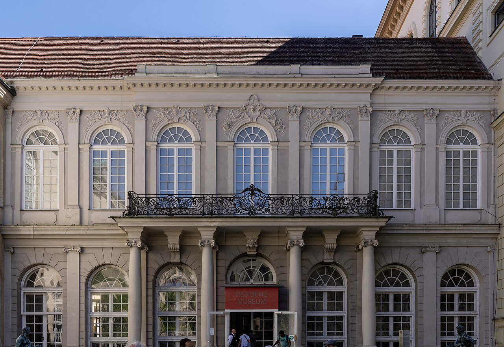
시각 자료 · 설명으로 대체
안뜰 너머 700년을 다스린 흔적
여러 안뜰이 미로처럼 이어진 이 거대한 도심 궁전, 그중 한 안뜰에서 본 파사드입니다. 기둥과 철제 발코니로 장식된 정면 아래로 지금은 박물관 입구가 나 있어, 옛 왕가의 거처였던 곳을 걸어서 들어갈 수 있습니다.
무엇을 봐야 하나 — 1층 기둥과 2층 철제 발코니의 장식. 전쟁으로 무너졌다가 정교하게 복원된 부분입니다.
레지덴츠 — 비텔스바흐 700년의 집
설명
뮌헨 구시가 북동쪽, 유럽 최대 규모의 도심 궁전, 안뜰 쪽 파사드.
왜 중요한가
전쟁으로 폐허가 됐다가 정교하게 되살린 '다시 지은 뮌헨'의 가장 극적인 사례입니다.
어디서 보나
레지덴츠 내부 안뜰, 레지덴츠 박물관 입구 쪽.
출처
Wikimedia Commons (공개 라이선스)
영국정원과 아이스바흐 서핑 — 프랑스 혁명의 해에 시민에게 열린 유럽 최초의 공공 공원
구시가 북쪽 · 광대한 풍경식 공원, 남쪽 입구 다리 아래 인공 파도
이 공원이 왜 '영국'정원일까요. 당시 유럽 궁정의 정원은 프랑스식 — 나무와 화단을 자로 잰 듯 기하학적으로 다듬은 인공의 질서였습니다. 그런데 뮌헨은 자연 그대로의 언덕과 굽은 냇물, 흐트러진 숲을 그대로 살린 영국식 풍경 정원을 택했습니다. 더 중요한 건 시기입니다 — 프랑스 혁명이 일어난 바로 그해에, 이 정원을 귀족이 아닌 일반 시민에게 개방했습니다. 왕의 사냥터가 아니라 누구나 걸을 수 있는 공원 — 유럽에서 손꼽히게 이른 '시민을 위한 공공 공원'이었고, 이는 혁명의 시대에 던진 정치적 신호이기도 했습니다. 남쪽 입구, 아이스바흐라는 인공 하천에는 놀라운 광경이 있습니다. 도심 한복판의 강물 위에서 사람들이 서핑을 합니다. 바닥 구조가 만들어 내는 멈춘 파도 위에서 서퍼들이 1년 내내 차례로 파도를 탑니다. 오랫동안 불법과 묵인 사이에 있다가 결국 도시 조례로 정식 허가되었습니다 — 바다도 없는 내륙 도시가 강물 서핑을 자기 문화로 끌어안은 것이지요. 공원 안 중국탑 아래 큰 비어가르텐에서 이 산책을 맥주 한 잔으로 마무리하기 좋습니다.
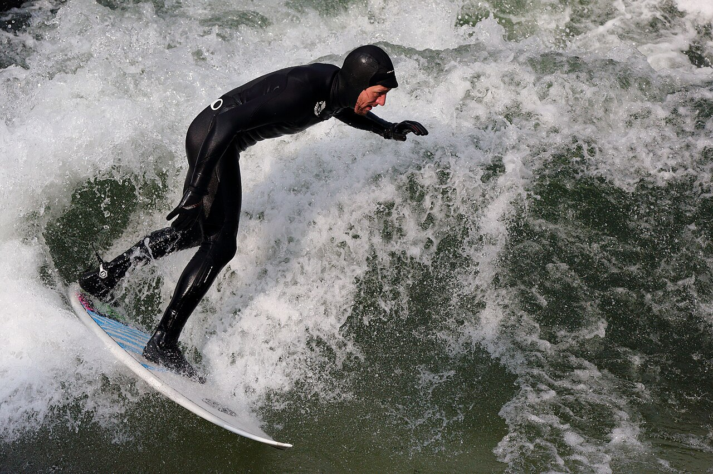
시각 자료 · 설명으로 대체
도심을 흐르는 강 위의 서퍼
영국정원 남쪽 입구, 다리 아래 좁은 인공 하천에서 한 사람이 멈춘 파도 위에 균형을 잡고 서 있습니다. 다리 위에는 차례를 기다리는 서퍼들과 이를 구경하는 사람들이 늘 모여 있습니다.
무엇을 봐야 하나 — 서퍼의 묘기보다, '바다도 없는 내륙 도시가 강물 위의 서핑을 어떻게 자기 문화로 만들었는가'라는 질문을 안고 다리 위에서 잠시 바라보십시오.
아이스바흐 리버 서핑
설명
영국정원 입구 인공 하천의 멈춘 파도에서 사시사철 이어지는 도심 서핑 장면.
왜 중요한가
계몽의 정원과 현대 도시 문화가 한자리에 겹치는, 뮌헨의 성격을 압축한 장면입니다.
어디서 보나
영국정원 남쪽 초입, 프린츠레겐텐 거리 다리 위에서 아래를 내려다보는 위치.
출처
Wikimedia Commons (공개 라이선스) 또는 본 아카이브 자체 제작 도해
호프브로이하우스 — '궁정 양조장'이라는 이름, 그리고 지워선 안 될 어두운 하루
구시가 동쪽 · 마리엔플라츠에서 도보 5분, 대형 홀형 맥주집
이름부터 뜯어봅시다. 호프(Hof)는 '궁정', 브로이(Bräu)는 '양조', 하우스는 '집' — 궁정 양조장이라는 뜻입니다. 앞서 본 빌헬름 5세가 궁정에서 마실 맥주를 밖에서 사 오는 대신 직접 만들려고 세운 곳이 그 시작입니다. 지금은 관광객으로 넘치는 명소가 되었지만, 알아 두면 좋은 것들이 있습니다. 오래된 회원들의 슈탐티슈(단골 지정석)에는 앉지 마십시오 — 표시가 붙어 있습니다. 벽 한쪽에는 자기 맥주잔을 자물쇠 걸린 함에 보관하는 오랜 단골들의 전통이 남아 있어, 잔 하나에도 수십 년의 소속감이 담깁니다. 그리고 회피해선 안 될 사실 하나 — 이 홀은 1920년 나치가 초기 강령을 처음 공표한 장소이기도 합니다. 즐거운 맥주홀의 역사에 이 어두운 하루가 함께 있다는 것을, 담담히 알고 있는 편이 낫습니다. 뮌헨이라는 도시는 이런 과거를 숨기지 않고 마주하는데, 그 방식은 이 페이지 끝에서 다시 이야기하겠습니다.
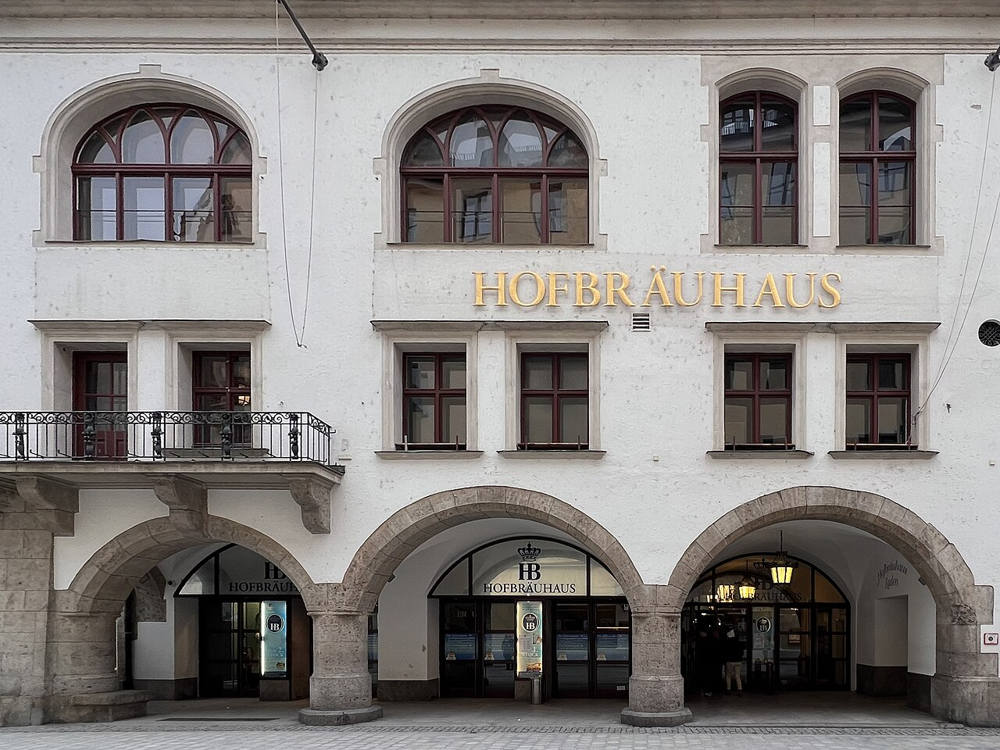
시각 자료 · 설명으로 대체
궁정 양조장이라는 이름의 무게
천장이 높은 대형 홀에 긴 나무 테이블이 줄지어 있고, 커다란 맥주잔을 든 사람들로 늘 붐빕니다. 이름 그대로 원래는 궁정을 위한 양조장이었던 곳이 지금은 도시에서 가장 붐비는 맥주홀이 되었습니다.
무엇을 봐야 하나 — 벽에 걸린 자물쇠 함들. 단골들이 자기 맥주잔을 보관해 온 오랜 전통의 흔적입니다.
호프브로이하우스 — 즐거움과 어두운 하루가 함께 있는 곳
설명
뮌헨 구시가의 대표적인 대형 맥주홀, 원래는 왕가의 궁정 양조장.
왜 중요한가
흥겨운 맥주 문화와, 1920년 나치가 강령을 공표한 어두운 역사가 한 공간에 겹쳐 있습니다.
어디서 보나
홀 내부, 또는 마리엔플라츠에서 도보 5분 거리의 외관.
출처
Wikimedia Commons (공개 라이선스)
님펜부르크 궁전 — 세탁부의 딸과 왕을 무너뜨린 무희가 나란히 걸린 '미인 갤러리'
도심 서쪽 · 넓은 정원을 낀 여름 궁전, 본관 상층의 미인들의 갤러리
왕세자의 출생을 기념해 지은 이 여름 궁전에서 가장 흥미로운 방은 '미인들의 갤러리(쇤하이텐갤러리)'입니다. 루트비히 1세는 신분을 따지지 않고 자기가 아름답다 여긴 여성 36명의 초상을 그려 한 방에 걸었습니다. 그 안에는 세탁부의 딸도, 푸줏간 집 딸도 있고, 왕을 결국 왕위에서 끌어내리게 만든 무희 롤라 몬테즈도 있습니다 — 그녀와의 스캔들이 도시의 분노를 사 왕이 물러나는 계기가 되었으니, 이 갤러리는 아름다움의 전시이면서 동시에 한 왕의 몰락의 씨앗이기도 합니다. 마차 박물관으로 발을 옮기면 다음 페이지에서 만날 루트비히 2세의 황금 썰매가 있습니다 — 겨울밤 눈길을 밝히며 달렸다는, 현실보다 동화를 살고 싶어 한 왕의 물건입니다. 궁전 부속 도자기 공방(님펜부르크 포르첼란)도 지금까지 명품 도자기를 손으로 빚어 냅니다.
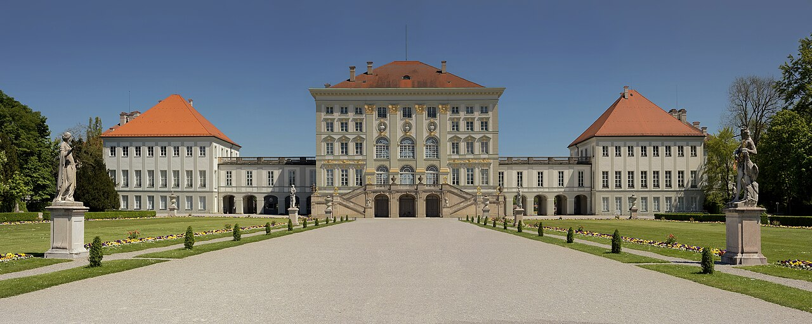
시각 자료 · 설명으로 대체
왕세자의 탄생을 기념한 여름 궁전
긴 운하가 곧게 뻗어 궁전 정면까지 이어지고, 그 양옆으로 넓은 정원이 펼쳐집니다. 이 우아한 여름 궁전 안에는 '미인들의 갤러리'라는, 신분을 따지지 않고 아름다움만으로 여성 36명을 그려 걸어놓은 방이 있습니다.
무엇을 봐야 하나 — 궁전과 운하가 만드는 대칭. 도심 서쪽에서 이만한 규모의 정원을 갖춘 궁전은 드뭅니다.
님펜부르크 궁전 — 미인 갤러리와 왕의 몰락
설명
뮌헨 도심 서쪽의 여름 궁전, 긴 운하와 넓은 정원을 낀 파사드.
왜 중요한가
신분을 넘어선 미의 기준을 보여준 갤러리가, 동시에 한 왕을 무너뜨린 스캔들의 무대이기도 했습니다.
어디서 보나
정원 쪽 운하 끝에서 궁전을 정면으로 바라볼 때.
출처
Wikimedia Commons (공개 라이선스)
BMW Welt / 박물관 — 항공기 엔진 회사가 어떻게 도시의 새 정체성이 되었나
도심 북쪽 올림피아파크 옆 · 4기통 엔진 모양의 은빛 본사와 유선형 전시관
은빛 원통 네 개가 나란히 선 이 건물은 자동차 엔진의 실린더 네 개를 형상화한 BMW 본사입니다. 그런데 BMW는 원래 항공기 엔진을 만들던 회사였습니다 — 회사 로고의 파랑·하양 원이 회전하는 프로펠러라는 이야기가 널리 퍼졌지만, 사실 그 색은 바이에른 깃발에서 왔다는 것이 정설입니다(프로펠러설은 후대의 광고가 만든 낭만입니다). 전쟁으로 항공기 사업이 막히자 이 회사는 자동차로 방향을 틀었고, 그 전환이 폐허가 된 뮌헨을 '기술의 도시'로 다시 세우는 상징이 되었습니다. 바로 옆 올림피아파크는 1972년 뮌헨 올림픽을 위해 지은 것으로, 이 BMW 단지와 올림픽 시설은 전후의 뮌헨이 세계에 자기를 새롭게 내보이려 한 하나의 프로젝트였습니다. 왕가의 궁전(님펜부르크)에서 곧장 이곳으로 오면, 옛 영광과 새 정체성이 도시 안에서 어떻게 나란히 서 있는지가 실감납니다.
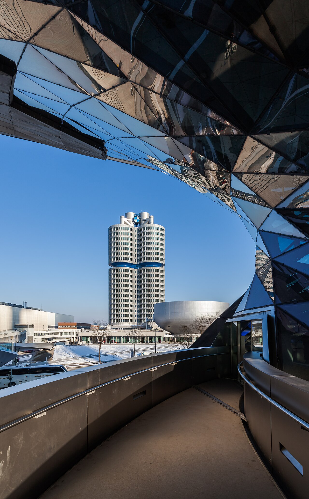
시각 자료 · 설명으로 대체
항공기 회사의 새 얼굴
은빛 원통 네 개가 나란히 솟은 독특한 건물과, 그 옆으로 유선형의 파도치는 지붕을 가진 전시관이 나란히 서 있습니다. 자동차 엔진의 실린더를 형상화한 이 건물은 원래 항공기 엔진을 만들던 회사의 새로운 정체성입니다.
무엇을 봐야 하나 — 네 개의 원통 배열. 로고의 파랑·하양 원이 프로펠러가 아니라 바이에른 깃발에서 왔다는 사실도 함께 떠올려 보세요.
BMW Welt — 폐허를 기술의 도시로 되세운 상징
설명
뮌헨 도심 북쪽, BMW 본사(4기통 타워)와 BMW 벨트 전시관.
왜 중요한가
항공기 회사에서 자동차 회사로의 전환이 전후 뮌헨을 '기술의 도시'로 재건하는 상징이 되었습니다.
어디서 보나
올림피아파크 쪽에서 BMW 본사와 벨트 건물을 함께 볼 때.
출처
Wikimedia Commons (공개 라이선스)
도이체스 박물관 — 독일이 왜 '기술'을 국가의 자부심으로 삼았나
이자르강 가운데 섬 · 세계 최대 규모의 과학기술 박물관
강 한가운데 섬을 통째로 차지한 이 거대한 박물관은 세계에서 가장 큰 과학기술 박물관입니다. 독일은 통일된 나라로서는 늦게 출발했지만, '우리는 기술과 발명의 민족'이라는 자부심으로 스스로를 하나로 묶었습니다. 이 박물관은 그 자부심의 신전입니다. 이곳의 철학은 유리 너머로 구경만 시키는 것이 아니라 직접 만지고 작동시키게 하는 것입니다 — 레버를 당기고 버튼을 눌러 원리를 몸으로 익히게 합니다. 지하에는 진짜처럼 재현한 광산 갱도가 미로처럼 이어지고, 초기 U보트(잠수함)의 내부에도 들어가 볼 수 있습니다. 관광객이 놓치는 것: 하루에 다 볼 수 있다는 착각입니다. 전시가 워낙 방대해 다 보려다 아무것도 제대로 못 봅니다. 입장 전에 항공·우주 / 해양·잠수함 / 에너지 같은 3개 층만 미리 정하고 나머지는 과감히 버리는 것이 이곳을 즐기는 유일한 전략입니다.
피나코테크와 쿤스트아레알 — 추상미술이 태어난 순간의 그림이 왜 뮌헨에 있나
도심 북쪽 예술 지구(쿤스트아레알) · 알테·노이에·모데르네 피나코테크와 렌바흐하우스가 모인 구역
뮌헨의 미술관들이 모인 이 지구를 쿤스트아레알(예술 지구)이라 부릅니다. 알테 피나코테크에는 루벤스의 대작들, 뒤러가 자신을 예수처럼 그린 '모피 옷의 자화상', 알트도르퍼의 '알렉산더 대전투'가 있습니다 — 수천 명의 병사와 하늘까지 화면을 가득 채운, 한 번 보면 잊기 힘든 그림입니다. 그런데 이 지구에서 놓치지 말아야 할 곳은 렌바흐하우스입니다. 20세기 초 뮌헨에서 칸딘스키와 뮌터를 비롯한 화가들이 '청기사파(블라우어 라이터)'를 이뤘습니다. 이들은 눈에 보이는 대상을 그리던 미술에서 색과 형태만으로 감정을 그리는 추상으로 넘어간 사람들입니다. 미술의 역사가 방향을 튼 바로 그 순간의 그림들이 여기 걸려 있습니다 — 회화가 '무엇을 그렸는가'에서 '무엇을 느끼게 하는가'로 옮겨 가는 문턱을 눈으로 볼 수 있는 드문 장소이지요. 이 모든 컬렉션이 시민에게 열린 것 자체가 근대적 사건이었습니다. 루트비히 1세가 왕실이 독점하던 미술품을 시민에게 공개한 것 — 예술은 궁정의 것이 아니라 모두의 것이라는 발상의 전환이었고, 이는 앞서 본 영국정원의 개방과 같은 결의 근대성입니다.
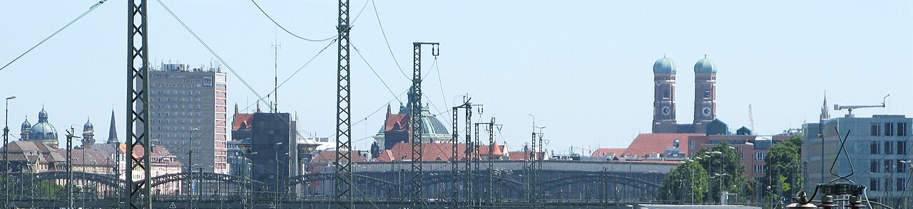
시각 자료 · 설명으로 대체
두 양파돔이 지배하는 스카이라인
붉은 지붕이 물결치는 구시가 위로, 프라우엔교회의 초록빛 양파형 돔 두 개가 나란히 솟아 있습니다. 주변에 이 탑보다 높은 건물은 하나도 보이지 않습니다.
무엇을 봐야 하나 — 돔의 모양보다, 이 탑보다 높은 건물이 하나도 없다는 사실을 확인하십시오. 시민이 투표로 지킨 스카이라인이 눈앞에 펼쳐집니다.
뮌헨의 얼굴, 프라우엔교회
설명
구시가 위로 두 양파돔을 세운 벽돌 고딕 성당이 도시의 스카이라인을 압도하는 전경.
왜 중요한가
재료(벽돌)와 도시의 자기 규율(높이 제한)이라는 두 이야기가 이 한 장에 담겨 있습니다.
어디서 보나
신 시청사 전망대나 성 페터 교회 탑에서 서쪽을 바라보는 위치.
출처
Wikimedia Commons (공개 라이선스) 또는 본 아카이브 자체 제작 도해
뮌헨의 어두운 층 — 프라하가 점령당한 도시라면, 뮌헨은 그 일이 시작된 도시
쿤스트아레알 인근 쾨니히스플라츠 · 신고전주의 광장과 나치문서센터(NS-도쿠멘타치온스첸트룸)
쾨니히스플라츠(왕의 광장)는 원래 루트비히 1세가 고대 아테네를 꿈꾸며 지은 신고전주의 광장이었습니다 — 그리스 신전을 본뜬 하얀 열주들이 늘어선, 문명과 이성의 무대였지요. 그런데 후에 나치가 이 광장을 자신들의 대규모 집회장으로 삼았습니다. 이성을 위해 지은 공간이 광기의 무대가 된 것입니다. 바로 곁에 선 나치문서센터는 이 도시가 자신의 과거를 다루는 방식을 보여 줍니다. 뮌헨은 나치 운동이 처음 세력을 키운 '운동의 수도'였습니다 — 즐거운 맥주와 동화 같은 성의 도시가, 동시에 그 일이 시작된 도시이기도 한 것이지요. 뮌헨은 이 사실을 감추거나 미화하지 않고, 있었던 그대로를 전시로 마주하게 합니다. 며칠 전 당신이 본 프라하가 남의 손에 점령당한 도시였다면, 이곳 뮌헨은 그 점령이 시작된 손이 자라난 도시입니다. 이 대비를 마음에 담고 광장에 서 보십시오 — 여행이 관광을 넘어 역사와 마주하는 순간입니다.
💡 여행 중 생각해볼 것
왜 뮌헨은 나치의 시작이라는 부끄러운 과거를 지우지 않고, 도심 한복판에 문서센터를 세워 정면으로 전시할까?
즐거운 축제의 도시가 동시에 가장 어두운 역사의 발원지라는 이중성을, 여행자는 어떻게 받아들여야 할까?
한국도 아픈 근현대사를 어떻게 기억하고 전시할지 오래 고민해 왔습니다. 뮌헨의 '숨기지 않는 기억' 방식은 우리에게 무엇을 말해 주는가?
SECTION 03
근교·성 순례 — 동화의 성이 아니라, 몰락하는 왕의 도피처
노이슈반슈타인은 디즈니성의 원본으로 알려져 있습니다. 하지만 그 아름다운 실루엣 뒤에는 현실에서 밀려난 한 왕이 오페라 속으로 도망친 이야기가 있습니다. 성을 보기 전에 그 왕을 먼저 알아야 합니다.
한 문장으로노이슈반슈타인은 중세 기사의 성처럼 보이지만, 실은 실권을 잃은 19세기의 왕이 현실을 등지고 지은 오페라 무대 같은 도피처입니다.
이 성을 이해하려면 루트비히 2세라는 왕을 먼저 만나야 합니다. 그는 열아홉의 나이에 왕이 되었지만, 곧 바이에른은 프로이센과의 전쟁에서 패해 실권을 잃습니다. 그리고 독일이 하나의 제국으로 통일되면서, 한때 독립 왕국의 군주였던 그는 독일 황제 아래의 신하 같은 처지로 내려앉습니다. 왕이지만 더는 왕처럼 다스릴 수 없게 된 사람 — 그가 현실 대신 몰입한 것이 작곡가 바그너의 오페라였습니다. 백조의 기사, 성배를 찾는 기사들, 중세의 전설… 그는 이 무대 속 세계를 실제 돌과 벽으로 지어내려 했고, 그렇게 태어난 것이 노이슈반슈타인입니다.
그러니 이 성을 '오래된 중세의 성'이라 부르는 건 오해입니다. 공사가 시작된 것은 19세기 후반이고, 성 안에는 그 시대 최신 기술이 가득했습니다 — 중앙난방으로 방을 데우고, 층마다 수도가 나오고, 하인을 부르는 전화선이 깔렸으며, 왕의 식사를 나르는 전기 엘리베이터까지 있었습니다. 겉모습은 기사의 시대를 흉내 냈지만 속은 당대의 첨단이었으니, 노이슈반슈타인은 중세를 연기하는 최신 기술의 무대 장치인 셈입니다. 이 점을 알고 성벽을 만지면, 낭만적인 감상이 조금 서늘한 통찰로 바뀝니다.
노이슈반슈타인 — 옥좌의 방에 옥좌가 없다
호엔슈방가우 마을 위 절벽 · 가이드 투어로만 입장하는 성 내부
성 안에서 가장 상징적인 방은 옥좌의 방입니다. 비잔틴 성당처럼 금빛으로 빛나고 계단이 옥좌를 향해 오르지만 — 정작 그 자리에 옥좌가 없습니다. 왕이 완성을 보지 못하고 죽었기 때문입니다. 왕좌가 놓일 빈자리는, 끝내 온전한 왕이 되지 못한 그의 생애를 그대로 은유합니다. 가수의 홀에는 바그너 오페라 '탄호이저'와 '로엔그린'의 장면이 벽화로 그려져 있습니다. 성 전체를 감도는 백조 문양은 로엔그린 — 백조가 끄는 배를 타고 온 기사의 상징으로, 왕이 자신을 그 기사와 겹쳐 보았음을 말해 줍니다.
마리엔브뤼케 — 그 유명한 사진은 성 안이 아니라 이 다리에서 나온다
성 뒤편 협곡을 가로지르는 좁은 철제 다리
당신이 떠올리는 노이슈반슈타인의 그 완벽한 각도 — 숲 위로 성 전체가 솟아오른 엽서 같은 장면은, 성 안에서는 절대 볼 수 없습니다. 그 시점은 성 뒤편 협곡에 걸린 좁은 다리 마리엔브뤼케에서만 나옵니다. 관광객이 놓치는 것: 많은 사람이 성 내부 투어만 하고 곧장 내려가느라, 정작 이 성을 가장 아름답게 담을 수 있는 이 다리를 놓칩니다. 성을 눈에 담고 싶다면 반드시 이 다리까지 올라가십시오 — 성의 '얼굴'은 성 밖에 있습니다.
시각 자료 · 설명으로 대체
성 안에서는 볼 수 없는 성의 얼굴
협곡을 가로지르는 좁은 철제 다리 위에서, 숲 위로 솟아오른 노이슈반슈타인 성 전체가 한 화면에 담깁니다. 그 유명한 엽서 사진이 바로 이 지점에서 나옵니다.
무엇을 봐야 하나 — 성 내부 투어만 하고 내려가면 놓치는 이 다리의 시점. 성의 '얼굴'은 성 밖, 이 다리 위에 있습니다.
엽서 사진이 나오는 단 하나의 지점
설명
마리엔브뤼케에서 바라본 노이슈반슈타인 성 전경입니다.
왜 중요한가
성 안에서는 절대 볼 수 없는, 이 성의 가장 유명한 각도를 보여주는 유일한 지점입니다.
어디서 보나
성 뒤편 협곡을 가로지르는 좁은 철제 다리.
출처
Wikimedia Commons (공개 라이선스)
호엔슈방가우 — 노이슈반슈타인을 이해하려면 여기를 먼저 봐야 한다
노이슈반슈타인 아래쪽 언덕 · 루트비히의 아버지가 살던 노란 성
노이슈반슈타인 바로 아래 언덕의 이 노란 성은, 루트비히 2세가 어린 시절을 보낸 아버지의 성입니다. 소년 루트비히는 이 성의 창가에서 매일 위쪽 산등성이의 옛 성터 폐허를 바라보며 자랐습니다. 기사와 전설로 가득한 벽화에 둘러싸여, 창밖의 폐허 위에 자신만의 성을 상상하던 소년 — 그 상상이 훗날 노이슈반슈타인이 됩니다. 그러니 위쪽의 화려한 성을 이해하려면, 그 성을 꿈꾸던 소년이 자란 이 아래 성을 먼저 보아야 합니다. 순서가 이야기를 만듭니다.
시각 자료 · 설명으로 대체
성을 꿈꾸던 소년이 자란 곳
노이슈반슈타인 아래 언덕에 자리한 노란 성입니다. 소년 루트비히가 이 성의 창가에서 산등성이의 옛 성터 폐허를 바라보며 자랐고, 그 상상이 훗날 노이슈반슈타인이 되었습니다.
무엇을 봐야 하나 — 노란 외벽과, 위쪽 산등성이로 이어지는 시선을 함께 떠올려 보세요. 아버지의 현실과 아들의 환상이 이어지는 지점입니다.
아들의 환상이 시작된 아버지의 성
설명
호엔슈방가우 성, 루트비히 2세가 어린 시절을 보낸 곳입니다.
왜 중요한가
노이슈반슈타인을 이해하려면 먼저 봐야 할, 그 환상이 시작된 원점입니다.
어디서 보나
노이슈반슈타인 아래쪽 언덕.
출처
Wikimedia Commons (공개 라이선스)
알프제 — 두 성을 한 프레임에 담는 호수
호엔슈방가우 마을 옆 · 맑은 알프스 호수와 둘레 산책로
루트비히 2세가 즐겨 수영하던 이 맑은 호수 둘레를 걸으면, 어느 지점에서 위쪽 노이슈반슈타인과 아래쪽 호엔슈방가우가 한 화면에 함께 담기는 시점을 만납니다. 아들의 환상과 아버지의 현실이 한 프레임에 겹치는 자리이지요. 성 투어로 지친 다리를 쉬며 이 호숫가를 천천히 걷는 것만으로도, 이 이야기가 마음에 정리됩니다.
루트비히의 의문사 — 사고인가, 타살인가
노이슈반슈타인이 아니라 뮌헨 근교 슈타른베르크 호수 (별도 위치)
이 성의 이야기는 왕의 죽음으로 끝납니다. 성을 짓느라 나라 살림을 위태롭게 한 왕은 정신이상 판정을 받고 폐위되는데, 놀랍게도 이 판정을 내린 의사는 왕을 직접 진찰조차 하지 않았습니다. 그리고 폐위 이틀 뒤, 왕은 슈타른베르크 호숫가에서 주치의와 함께 물에 빠져 숨진 채 발견됩니다. 물은 왕의 가슴 높이밖에 되지 않았고, 그는 수영을 잘했습니다. 사고였을까요, 자살이었을까요, 아니면 타살이었을까요 — 지금까지 아무도 확실히 답하지 못합니다.
가장 큰 아이러니 — 왕을 파산시킨 성이 지금 바이에른 최대의 수입원
노이슈반슈타인 전체
루트비히 2세는 이 성 때문에 왕실을 빚더미에 앉혔고, 그것이 폐위의 빌미가 되었습니다. 그런데 왕이 죽자마자 성은 곧바로 일반에 공개되었고, 이후 전 세계에서 사람들이 몰려들었습니다. 디즈니가 이 성을 본떠 만화 왕국의 상징을 그리면서 전설은 더 커졌지요. 한 왕을 파산시킨 성이, 지금은 바이에른의 가장 큰 관광 수입원이 되었습니다 — 현실에서 도망친 왕의 환상이, 오늘 이 지역을 먹여 살립니다.
흔한 오해
노이슈반슈타인은 중세에 지어진 오래된 기사의 성이다.
사실
19세기 후반에 착공한 근대 건물이다. 겉은 중세를 흉내 냈지만 중앙난방·수도·전화·전기 엘리베이터를 갖춘, 당대 최신 기술로 지은 '무대 장치'였다.
흔한 오해
왕이 미쳐서 나랏돈으로 성을 지었고, 그래서 폐위되었다.
사실
정신이상 판정은 폐위를 위한 정치적 절차였다는 시각도 강하다. 판정을 내린 의사는 왕을 직접 진찰하지도 않았고, 그 이틀 뒤 왕은 의문의 죽음을 맞았다.
성 순례 실전 — 티켓은 반드시 사전 온라인 예약으로 정해진 입장 시각을 받아야 합니다(현장 매진 잦음). 성 내부는 사진 촬영 금지이며 35분짜리 가이드 투어로만 입장하니 예약 시각에 늦으면 입장이 취소됩니다. 마을에서 성까지는 걸어서 30~40분 오르막이며, 힘들면 셔틀버스나 마차를 이용할 수 있습니다. 9월 오전에는 성 정면에 빛이 잘 들어 사진 조건이 가장 좋습니다.
💡 여행 중 생각해볼 것
왜 근대의 왕은 최신 기술을 감춰 가며 일부러 '중세처럼' 보이는 성을 지었을까? 그가 진짜로 짓고 싶었던 것은 건물일까, 시대일까?
현실에서 밀려난 사람이 환상 속으로 도망치는 일을, 우리는 어떻게 이해해야 할까 — 도피일까, 창조일까?
한국의 경복궁 복원, 민속촌, 사극 세트장처럼 '전통을 새로 만들어 내는 일'과 노이슈반슈타인은 무엇이 같고 무엇이 다를까?
SECTION 04
옥토버페스트 — 맥주 축제가 아니라, 200년째 이어지는 왕가의 결혼식
세계에서 가장 유명한 이 축제를 그저 '큰 술판'으로 여기면 절반도 못 봅니다. 이것은 한 결혼식에서 시작해 도시의 정체성이 된 시민 축제이고, 몸으로 익혀야 할 규칙과 문화 코드가 가득한 하나의 작은 세계입니다.
한 문장으로옥토버페스트는 맥주 축제이기 이전에, 1810년 어느 왕가의 결혼식이 200년 넘게 해마다 반복되고 있는 거대한 시민 축제입니다.
이 축제의 뿌리는 1810년, 루트비히 왕세자와 테레제 공주의 결혼입니다. 결혼을 축하하며 도시 외곽 벌판에서 큰 경마를 열었는데, 시민들이 어찌나 즐거워했던지 이듬해에도, 그 다음 해에도 다시 열자고 하여 오늘까지 이어졌습니다. 지금 당신이 향하는 축제장의 이름 테레지엔비제(Theresienwiese)는 바로 그 신부 '테레제의 초원'이라는 뜻입니다 — 즉 축제장 이름 자체가 200년 전 신부의 이름입니다. 흥미로운 건, 이름은 '10월 축제(옥토버페스트)'인데 실제로는 9월에 열린다는 점입니다. 10월보다 9월 날씨가 더 따뜻하고 좋아 시기를 앞당겼고, 이름만 옛것으로 남은 것이지요.
왜 이 축제가 뮌헨의 자기 정체성일까요. 이 도시는 두 차례의 세계대전과 전염병으로 축제를 열지 못한 해들을 겪었고, 축제장에서 폭탄 테러의 비극도 겪었습니다. 그때마다 다시 여는 일 자체가 이 도시에는 '우리는 여전히 우리다'라는 선언이었습니다. 그러니 텐트 안의 왁자한 노래는 단순한 취흥이 아니라, 무너져도 다시 일어선 도시가 해마다 스스로에게 거는 안도의 인사인 셈입니다.
① 축제의 뿌리 — 왜 이 축제가 도시의 심장인가
왜 축제장이 '테레제의 초원'인가
1810년 결혼식의 신부 테레제 공주의 이름에서 왔습니다. 축제장 이름 자체가 200년 전 왕가 결혼의 신부를 기념하는 것이지요.
왜 10월 축제인데 9월에 열리나
원래 10월이었지만 9월 날씨가 더 따뜻하고 좋아 시기를 앞당겼습니다. '옥토버(10월)'라는 이름만 옛 관습으로 남았습니다.
왜 취소된 해가 도시엔 의미가 큰가
전쟁과 전염병으로 열지 못한 해들이 있었고, 그때마다 다시 여는 일이 '우리는 여전히 우리다'라는 도시의 회복 선언이 되었습니다.
② 텐트라는 세계 — 큰 천막마다 성격이 다르다
테레지엔비제에 들어서면 거대한 맥주 텐트들이 늘어서 있습니다. '텐트'라 하지만 실은 수천 명이 들어가는 임시 대형 홀입니다. 중요한 건, 텐트마다 분위기와 손님층이 완전히 다르다는 점입니다 — 아무 데나 들어가지 말고 그날 기분에 맞는 곳을 고르십시오. 정오, 시장이 첫 맥주통을 나무망치로 두드려 열고 "오이스 게찹트 이스(O'zapft is! — 통이 열렸다!)"를 외치면 축제가 시작됩니다. 이어 열두 발의 예포가 울리고, 그제야 모든 텐트에서 맥주가 흐르기 시작합니다.
호프브로이 텐트
가장 국제적이고 관광객이 많은 텐트. 서서 마시는 자리도 있어 활기차지만 그만큼 붐빕니다. 첫 방문자가 분위기를 익히기엔 무난합니다.
아우구스티너 텐트
현지인이 가장 아끼는 곳. 나무통에서 숙성한 맥주를 내어 맛이 부드럽다는 평입니다. 차분하고 진짜 뮌헨다운 분위기.
쇼텐하멜 텐트
젊고 시끄러운 분위기. 축제 개막 오찬과 시장의 첫 통 개봉이 이곳에서 열립니다. 활력을 원하면 이곳.
히포드롬·마샬 등
비교적 젊은 층이 모이는 텐트들. 음악과 분위기가 흥겹습니다.
아르밍거·펄 텐트
전통을 지키는 바이에른색 짙은 텐트. 지역 손님 비중이 높아 차분합니다.
작은 천막(퀴슬러 알름 등)
큰 홀의 소란이 부담스러우면 이런 작은 천막이 답. 아늑하고 정겨워 오히려 축제의 속살을 느끼기 좋습니다.
③ 몸으로 익히는 규칙 — 안 지키면 바로 티가 난다
상황
이렇게 하세요
맥주 주문 조건
테이블에 앉은 사람에게만 맥주를 팝니다. 서서는 못 삽니다 — 자리 확보가 축제의 전부입니다.
자리 잡는 시간대
평일은 오후 일찍, 금요일·주말은 더 일찍 가야 합니다. 인기 텐트는 예약이 없으면 저녁엔 앉을 곳이 없습니다.
맥주 단위
기본은 1리터 잔 '마스(Maß)' 하나. 반 잔은 팔지 않습니다 — 처음이면 속도를 조절하세요.
계산과 팁
서버(켈너린)에게 현금으로 즉시 냅니다. 잔당 1~2유로를 올려 건네는 것이 관례입니다.
건배 예법
"프로스트!" 할 때 반드시 상대의 눈을 마주치고, 잔의 아래쪽 두꺼운 부분끼리 부딪칩니다(윗부분은 깨지기 쉬움).
테이블 위에 올라가면
즉시 퇴장입니다. 벤치 위에 서서 노래하는 건 괜찮지만 테이블 위는 절대 금지 — 규칙이 엄격합니다.
축제 주제가가 나오면
'에인 프로짓 데어 게뮈틀리히카이트'가 연주되면 다 함께 일어나 잔을 들고 부릅니다. 몇 분마다 반복되니 곧 외워집니다.
화장실·소지품
화장실 줄이 매우 깁니다. 미리미리 다녀오고, 가방은 늘 몸에 붙여 두세요.
소매치기·분실물
인파 속 소매치기를 조심하세요. 매년 수천 개의 휴대폰이 분실물로 접수됩니다 — 취하기 전에 귀중품을 단단히.
전통 의상(트라흐트)
레더호젠(가죽 반바지)·디른들(전통 드레스)은 관광객이 입어도 환영입니다. 억지스럽지 않으니 편히 즐기세요.
디른들 앞치마 리본
리본을 왼쪽에 매면 미혼, 오른쪽이면 기혼이라는 통설이 있습니다(뒤쪽은 미망인·종업원). 다만 요즘은 큰 의미 없이 매는 경우도 많습니다.
아이와 함께
낮 시간은 가족 축제입니다. 저녁 6시 이전, 특히 화요일 '가족의 날'이 아이들과 오기 좋습니다.
음주 후 이동
취한 상태의 자전거 운전도 단속 대상입니다. 대중교통을 이용하고 U6 막차를 확인하세요.
④ 맥주 자체 — 왜 이 여섯 양조장만 낼 수 있나
축제에 나오는 옥토버페스트비어는 평소 맥주보다 도수가 높습니다(대략 5.8~6.3%). 그러니 마스(1리터) 한 잔이 생각보다 묵직하게 취기를 부릅니다. 이 맥주들은 모두 하나의 오랜 법을 따릅니다 — 바이에른 순수령(라인하이츠게보트), 즉 '맥주는 물·맥아·홉·효모만으로 만든다'는 규정입니다. 무려 500년 넘게 이어진 이 법은 값싼 첨가물을 막아 맥주의 품질을 지킨 자부심의 상징이지만, 동시에 다른 재료를 넣은 실험적인 맥주를 제한하기도 했습니다 — 순수함을 지키는 대신 다양성을 좁힌 셈이지요. 그리고 이 축제에는 오직 뮌헨의 여섯 전통 양조장만 맥주를 낼 수 있습니다. 뮌헨 시내에서, 순수령을 따라 빚은 맥주여야 한다는 오랜 원칙이 지금도 지켜지기 때문입니다.
이 강한 맥주는 반드시 안주와 함께 드십시오 — 취기를 늦추는 실질적인 이유입니다. 노릇하게 구운 통닭 헨델, 바삭한 돼지 정강이 슈바인스학세, 큼직한 브레첼, 그리고 맥주에 곁들이는 치즈 스프레드 오브아츠다가 대표적입니다. 짭짤한 안주가 맥주의 강한 도수를 받쳐 줍니다. 빈속에 마스를 비우면 첫 잔부터 취기가 확 오르니, 텐트에 앉으면 맥주보다 먼저 브레첼이나 헨델을 시키는 것이 노련한 방문자의 순서입니다.
흔한 오해
옥토버페스트는 그냥 취하려고 가는 거대한 술 파티다.
사실
본질은 가족 축제입니다. 낮에는 회전목마와 놀이기구가 도는 놀이공원이고, 현지인은 정장이 아니라 전통복을 입고 온 가족이 함께 옵니다.
흔한 오해
옥토버페스트는 전 세계 관광객만 가는 곳이다.
사실
전체 방문객의 다수가 실은 바이에른 현지인입니다. 관광지이기 전에 지역 사람들의 연례 대축제입니다.
이번 여행의 3회 방문 전략 — 같은 축제라도 날마다 목표를 다르게 잡으세요. 9/23 평일 밤은 첫인상 — 텐트의 분위기를 익히고 마스 한 잔의 리듬에 적응하는 날. 9/25 금요일은 본격 — 대신 오후 일찍 착석해 자리부터 확보해야 합니다(저녁엔 만석). 9/26 토요일은 초혼잡 — 무리해서 텐트에 매달리기보다 가볍게 들르거나 시내 비어가르텐으로 대체하는 편이 현명합니다.
💡 여행 중 생각해볼 것
왜 이 도시는 200년 전 왕가의 결혼식을 지금까지 해마다 재현하며 자기 정체성으로 삼을까?
건배할 때 눈을 마주치고, 주제가에 다 함께 일어나 노래하는 규칙들은 '함께 마신다'는 것을 어떻게 다르게 만드는가?
한국의 회식과 건배 문화(잔을 부딪치는 예법, 윗사람 앞에서 고개 돌려 마시기), 지역 축제와 비교하면 '공동체가 함께 마신다'는 의미는 무엇이 같고 다를까?
SECTION 05
독일 실전 — 규칙이 많아 보이지만, 알면 오히려 편한 나라
독일은 규칙에 엄격해 딱딱하다는 인상이 있습니다. 하지만 그 규칙의 속내를 알면 공적 질서와 사적 온기가 분리된 이 사회가 오히려 여행하기 편해집니다. 실전 정보이지만, 왜 그런지까지 함께 담았습니다.
한 문장으로독일의 규칙은 여행자를 옭아매려는 것이 아니라, 모두가 예측 가능하게 움직이도록 짜인 약속이라 알고 나면 오히려 마음이 편해집니다.
상황
이렇게 하세요
렌터카 · 통행료
오스트리아는 고속도로 스티커(비네트)가 필요하지만, 독일 아우토반은 승용차 통행료가 없습니다. 국경을 넘을 땐 여권을 지니세요(무작위 검문 있음).
아우토반 매너
속도 무제한 구간이 있어도 매너는 엄격합니다 — 추월 후 즉시 우측 차선으로 복귀, 좌측 차선 점거 금지. 앞차를 재촉할 땐 비상등이 아니라 헤드라이트를 짧게 켭니다.
뮌헨 환경구역
도심은 '움벨트조네(환경구역)'라 차 앞유리에 배출가스 스티커가 있어야 진입 가능합니다. 렌터카에 붙어 있는지 확인하세요.
주차
노상 무료 구역은 회전판(파크샤이베)에 도착 시각을 맞춰 놓아야 합니다. 축제 기간 도심 주차는 피하고 지하주차장이나 대중교통을 쓰세요.
뮌헨 대중교통(MVV)
존(zone)제 요금입니다. 하루권·그룹권이 이득. U6 가르힝 노선의 막차 시각을 꼭 확인하세요 — 숙소가 종점 방향이라 놓치면 곤란합니다.
개찰과 무임승차
표는 타기 전 반드시 개찰(펀칭)해야 합니다. 개찰 안 된 표는 무효로 취급돼 고액 벌금을 뭅니다 — 검표원은 사복입니다.
현금 문화
독일은 여전히 현금을 선호합니다. 특히 축제장, 작은 가게, 빵집은 카드가 안 되는 곳이 많으니 현금을 넉넉히 지니세요.
일요일 전면 휴무
일요일은 '루헤타크(쉬는 날)'로 대부분의 상점이 닫습니다. 장은 토요일에 미리 봐 두고, 세탁·소음도 자제하는 것이 관습입니다.
상점 인사
가게에 들어설 때 남독일에선 "그뤼스 고트", 나올 때 인사를 건네는 것이 예의입니다. 무언(無言) 입장은 무례하게 비칩니다.
계산대 속도
계산이 매우 빠릅니다. 물건은 직접 봉투에 담아야 하고, 뒷사람을 위해 신속히 자리를 비웁니다 — 장바구니를 미리 챙기세요.
식당 팁
5~10% 정도. 테이블에 두고 나오지 말고, 계산할 때 낼 금액을 말하며 건네는 방식입니다(예: 18유로 나왔으면 20이라 말하며 냄).
비어가르텐 규칙
일부 구역은 음식을 가져와 먹어도 됩니다(맥주만 구매). 셀프서비스가 많고, 다 먹은 잔·접시는 직접 반납대에 돌려줍니다.
물은 유료·탄산
식당 물은 공짜가 아니며 대개 탄산수입니다. 탄산 없는 물은 "스틸레스 바서"라고 따로 청하세요.
재활용 보증금(판트)
음료 페트·병 값에 보증금이 붙습니다. 마트의 반환 기계에 빈 병을 넣으면 돌려받습니다 — 아무 데나 버리지 마세요.
화장실 유료
공중·역 화장실은 대개 유료(0.5~1유로)이고, 접시에 잔돈을 놓는 곳도 있습니다. 동전을 지니세요.
흡연
실내 흡연은 대부분 금지입니다. 지정 구역이나 야외에서만 피우세요.
9월 옷차림
낮은 20도 안팎, 밤은 8도까지 떨어집니다. 겉옷을 챙기되, 축제 텐트 안은 사람 열기로 더우니 벗기 쉬운 옷차림이 좋습니다.
응급·약국
약은 약국(아포테케)에서만 삽니다. 일요일엔 대부분 닫지만 지역마다 당번 약국이 돌아가며 문을 엽니다(약국 문에 안내 게시).
흔한 오해
독일은 어디를 가나 다 비슷하다.
사실
바이에른은 언어(방언)·종교·기질이 뚜렷이 다릅니다. 가톨릭의 남부와 신교 전통의 북부는 인사말부터 다르고, 이곳 사람들은 '바이에른이 먼저, 독일은 그 다음'이라는 자의식이 강합니다.
흔한 오해
독일 사람은 규칙에 엄격해 차갑고 딱딱하다.
사실
공적 질서와 사적 온기가 분리되어 있을 뿐입니다. 규칙 앞에선 엄정하지만, 테이블에 함께 앉으면 놀랄 만큼 정겹습니다 — 이 따뜻한 어울림을 '게뮈틀리히카이트'라 부릅니다.
흔한 오해
독일 맥주는 다 똑같은 라거다.
사실
바이에른만 해도 밀맥주(바이스비어), 짙은 둔켈, 도수 높은 복 등 종류가 다양합니다. 특히 밀맥주는 한때 왕실이 양조를 독점했을 만큼 귀한 술이었습니다.
규칙표만으로는 안 풀리는, '왜?'라는 질문들에 대한 답을 모았습니다.
왜 독일에서 맥주는 그토록 중요한가
물이 늘 안전하진 않던 시대에 맥주는 안전한 일상 음료였고, 수도원이 이를 빚어 지켰습니다. 순수령이 품질을 법으로 보장하면서 '믿고 마시는 술'이 되었습니다.
왜 뮌헨은 '백만 명의 마을'로 불리나
대도시이면서도 사람들이 서로 얼굴을 아는 듯한 정서를 지녀, 스스로를 큰 도시가 아니라 '커다란 마을'처럼 여기는 자부심에서 나온 별명입니다.
왜 뮌헨 시 문장에 수도사가 있나
뮌헨(München)이라는 지명이 '수도사들에게 속한 곳'이라는 뜻이기 때문입니다. 도시 문장의 어린 수도사가 이름의 뿌리입니다.
왜 바이에른 깃발은 파란 마름모인가
비텔스바흐 왕가를 상징하는 하늘색·흰색 마름모 문양에서 왔습니다. BMW 로고의 파랑·하양도 여기서 비롯했습니다.
왜 독일 도시들은 종탑 높이를 겨뤘나
탑의 높이는 도시의 부와 신앙, 자존심의 표현이었습니다. 이웃 도시보다 높은 탑을 세우는 것이 곧 도시의 위세였지요.
왜 뮌헨엔 이탈리아 느낌이 나나
루트비히 1세가 알프스 너머 이탈리아를 동경해, 남쪽의 건축과 예술을 도시에 들여왔기 때문입니다. 광장과 아치에 그 흔적이 있습니다.
왜 아이스바흐에서 서핑이 가능한가
하천 바닥 구조가 한자리에 멈춘 파도를 만들어 냅니다. 오래 묵인되다 도시 조례로 정식 허가되어 사시사철 서핑이 이어집니다.
왜 독일 창문은 안으로 열리나
안으로 젖히거나 여닫는 이중 개폐 방식(킵)이 표준입니다. 청소와 환기가 쉽고 비바람에 강해 널리 쓰입니다.
왜 독일 사람은 이름 대신 성을 부르나
공적 관계에서는 성에 존칭(헤르·프라우)을 붙여 거리를 지킵니다. 이름을 부르는 건 친밀함의 표시라 함부로 하지 않습니다.
왜 뮌헨은 폐허를 '옛 모습대로' 복원했나
새로 짓자는 주장과 되살리자는 주장이 부딪친 끝에, 도시의 기억과 정체성을 지키자는 쪽이 이겼습니다. 그 결과가 지금의 '다시 지은 구시가'입니다.
왜 도이체스 박물관은 만지게 하나
기술은 눈으로 보는 것이 아니라 몸으로 이해하는 것이라는 철학 때문입니다. 직접 작동시켜 원리를 익히게 합니다.
왜 청기사파는 뮌헨에서 태어났나
당시 뮌헨은 예술가가 모이는 자유로운 도시였고, 그 분위기 속에서 칸딘스키와 동료들이 추상으로 나아가는 실험을 함께할 수 있었습니다.
왜 프레첼은 팔이 꼬인 모양인가
기도하려 두 팔을 가슴에 포갠 모습에서 유래했다는 이야기가 전해집니다. 수도원과 빵의 오랜 인연이 담긴 모양입니다.
왜 자전거 도로를 절대 침범하면 안 되나
보도와 색·높이가 다른 자전거 전용 길이 따로 있고, 자전거가 빠르게 달립니다. 무심코 그 위에 서 있으면 위험하고 크게 눈총받습니다.
💡 여행 중 생각해볼 것
왜 독일은 일요일에 나라 전체가 문을 닫으며 '쉼'을 제도로 지킬까? 편리함을 일부 포기하면서 지키려는 것은 무엇일까?
규칙 앞에선 엄정하면서 테이블에선 더없이 정겨운, '공적 질서와 사적 온기의 분리'를 우리는 어떻게 받아들여야 할까?
한국은 24시간 편의점과 배달로 상징되는 편리함의 사회입니다. 독일의 '일요일 휴무'와 비교하면, 우리는 편리함 대신 무엇을 내주고 있는 걸까?
05 / ČESKÝ KRUMLOV — SOUTH BOHEMIA
문화 교양 아카이브 · 남보헤미아
체스키크룸로프 강 굽이 하나에 그려 넣은 도시
프라하가 여러 세대의 왕과 시민이 밀고 당기며 자란 국가의 수도라면, 체스키크룸로프는 한 귀족 가문이 강물 굽이 하나에 통째로 설계해 넣은 사적(私的)인 도시입니다. 500년 전의 모습이 거의 그대로 남은 이유는 그것이 특별히 소중해서가 아니라, 아무도 이곳을 다시 지을 이유가 없었기 때문입니다. 가난과 무관심이 이 도시를 시간 속에 얼려 두었습니다. 프라하를 보고 온 당신에게 이곳은 '국가의 권력'과 '가문의 권력'이 어떻게 다른 얼굴을 하는지 보여 주는 두 번째 교과서입니다.
SECTION 01
이 도시를 5분 만에 이해하기
골목으로 뛰어들기 전에, 이 도시가 왜 하필 여기에, 왜 이런 모양으로 생겼는지 한 덩어리로 삼켜 봅시다. 이 다섯 문단만 몸에 새기면, 오후 내내 걷는 길이 흩어진 사진이 아니라 하나의 이야기로 이어집니다.
한 문장으로체스키크룸로프는 강이 만든 천연 요새 위에, 왕이 아니면서 왕처럼 산 한 가문이 자기 권력과 취향을 통째로 그려 넣은 도시입니다.
지금 당신이 프라하를 떠나 남쪽으로 세 시간을 달려 도착한 이 자리는, 지도 위에서 보면 아주 이상하게 생겼습니다. 블타바 강이 마치 뱀이 몸을 비틀듯 급하게 휘어 도는 극단적인 사행(蛇行 · 강이 S자로 심하게 굽이치는 것)을 만들고, 그 굽이가 그려 낸 좁은 반도 위에 마을이 얹혀 있습니다. 강은 마을을 세 방향에서 감싸 안아 저절로 해자(垓字 · 성 둘레를 물로 두른 방어용 도랑)가 되어 주었고, 물이 닿지 않는 목이 좁은 언덕 위에 성이 앉았습니다. 도시의 형태를 먼저 결정한 것은 사람이 아니라 지형이었습니다. 이 사실 하나만 붙들어도 오늘 하루가 달라집니다.
그런데 왜 하필 이 산골에 이토록 거대한 성이 필요했을까요. 이 자리는 우연히 예쁜 곳이 아니라 돈이 흐르던 자리였기 때문입니다. 남쪽 린츠(오스트리아)에서 북쪽 프라하로 이어지는 교역로가 이 강 굽이를 지났고, 주변 산에서는 은(銀)이 나왔습니다. 사람과 소금과 은이 지나는 길목을 틀어쥔 자에게는 돈이 모였고, 돈이 모인 곳에 권력이 자랐습니다. 예쁜 풍경의 밑바닥에는 늘 이런 계산이 깔려 있습니다.
기억할 이름 하나 — 로젠베르크(Rožmberk) 이 도시를 이해하는 열쇠는 딱 한 가문입니다. 300년 넘게 이 땅을 다스린 로젠베르크 가문은 왕이 아니면서 왕처럼 산 보헤미아 최대의 귀족이었습니다. 프라하성이 '국가의 권력'을 담은 무대라면, 크룸로프성은 '한 가문의 권력'을 담은 무대입니다. 프라하를 보고 온 당신에게 이 대비가 결정적인 이유가 여기 있습니다 — 같은 보헤미아 땅인데, 한쪽은 나라가 지었고 한쪽은 집안이 지었습니다.
이 도시의 가장 놀라운 점은 500년 전 모습이 거의 그대로 남았다는 것입니다. 보통 이런 보존을 두고 '소중히 지켰다'고 생각하기 쉽지만, 진실은 정반대입니다. 로젠베르크 가문이 대가 끊겨 몰락한 뒤 이 도시는 손을 바꿔 가며 팔려 다녔고, 그 누구도 이곳을 헐고 새로 지을 이유도 돈도 갖지 않았습니다. 20세기에는 국경 지대라는 이유로 방치되고, 사회주의 시기에는 무관심 속에 잊혔습니다. 다시 짓지 않았기 때문에 옛것이 남은 것입니다. 가난과 무관심이 보존의 진짜 이유라는 이 역설은, 사실 프라하에서 이미 한 번 배운 논리입니다. 다만 프라하가 '전쟁의 폭격을 피해서' 살아남았다면, 크룸로프는 아예 시간이 멈춰 버려서 살아남았습니다. 프라하가 운 좋게 지나간 도시라면, 크룸로프는 아무 일도 일어나지 않아 얼어붙은 도시입니다.
마지막으로 이 도시가 세계에 내놓는 두 개의 진짜 보물을 기억해 두세요. 하나는 바로크 극장입니다. 18세기의 무대 기계·배경막·의상이 원형 그대로 살아 있는 극장은 지구상에 스웨덴 드로트닝홀름과 이곳, 단 둘뿐입니다. 다른 하나는 화가 에곤 실레의 흔적입니다. 그의 어머니의 고향이 바로 이곳이었고, 그는 이 도시에 왔다가 주민들에게 쫓겨났습니다. 그런데 지금은 그를 기리는 미술관이 여기 서 있습니다. 이 두 이야기는 뒤 탭에서 천천히 풀어 드리겠습니다.
💡 여행 중 생각해볼 것
왜 이 도시의 형태는 사람이 아니라 강이 먼저 결정했을까? 지형이 운명을 정한다는 말은 어디까지 참일까?
왜 당시 사람들은 '지키기 위해' 지은 성을, 오늘 우리는 '보기 위해' 찾을까? 방어의 논리가 어떻게 관광의 대상이 되었을까?
오늘날 한국 사회와 비교하면 무엇이 다를까 — 한국의 종가(宗家)와 문중도 한 가문이 마을을 오래 다스렸다. 로젠베르크식 '가문의 도시'와 한국의 반촌(班村)은 위계를 어떻게 다르게 표현했을까?
오늘 하루의 태도 — 대부분의 관광객은 성 아래 광장과 강가에서 사진 몇 장을 찍고 두 시간 만에 떠납니다. 그것으로도 예쁩니다. 하지만 당신은 조금 다르게 걷기를 권합니다 — '무엇이 오래됐나'가 아니라 '누가 이 전체를 하나로 상상했나'를 물으며 걸어 보세요. 그 질문 하나가 이 도시를 테마파크에서 이야기로 바꿉니다.
SECTION 02
역사 — 강 굽이에서 시작해 침묵으로 끝난 도시
연도를 외우지 마세요. 대신 하나의 흐름을 잡으세요 — 지형이 도시를 낳고, 한 가문이 황금기를 만들고, 그 가문이 끊기자 도시가 손을 바꿔 다니다, 끝내 국경의 침묵 속에 얼어붙어 오늘에 이릅니다. 그 침묵이 이 도시를 지켰습니다.
한 문장으로탄생도 황금기도 몰락도 이 도시에서는 모두 '누가 이 강 굽이를 차지했는가'의 이야기입니다.
I
도시의 탄생 — 지형이 부른 성
13세기
13세기 초
강 굽이 위에 첫 성이 서다
지금 당신이 올려다보는 언덕에 처음 성을 세운 것은 비트코프치(Vítkovci) 가문이었습니다. 이유는 낭만이 아니라 계산이었습니다. 블타바 강이 만든 좁은 반도는 세 방향이 물로 막힌 천연 요새였고, 그 목만 지키면 됐으니까요. 게다가 이 자리는 남쪽 린츠와 북쪽 프라하를 잇는 교역로의 길목이자, 은이 나는 산자락이었습니다. 방어와 돈이 한자리에서 만나는 곳—성이 설 이유로는 이보다 완벽할 수 없었습니다.
1253경
'크룸로프'라는 이름의 뜻
'크룸로프(Krumlov)'는 옛 독일어로 '굽은 초원(krumme Aue)'이라는 뜻으로 풀이됩니다. 도시의 이름 자체가 이미 강 굽이의 지형을 가리키고 있는 셈입니다. '체스키(Český)'는 훗날 모라비아의 다른 크룸로프와 구별하려고 붙인 '보헤미아의'라는 뜻입니다.
II
로젠베르크의 황금기 — 왕처럼 산 가문
1302–1602
1302
로젠베르크 가문, 크룸로프의 주인이 되다
비트코프치의 한 갈래인 로젠베르크(Rožmberk) 가문이 이 성을 물려받으며, 이후 300년의 황금기가 시작됩니다. 이들은 왕이 아니었지만 보헤미아에서 왕 다음가는—때로는 왕을 능가하는—권세를 누렸습니다. 자기 문장(紋章)에 붉은 장미를 새기고, 자신을 로마의 오르시니 가문의 후예라 주장하며 유럽 최고 귀족들과 어깨를 나란히 했습니다. 지금 당신이 걷는 도시의 뼈대 대부분이 이 시기에 만들어졌습니다.
16세기
고딕의 성에 르네상스의 옷을 입히다
로젠베르크 가문은 이탈리아에서 건축가와 장인을 불러와, 중세의 투박한 고딕 성 위에 화려한 르네상스의 껍데기를 씌웠습니다. 성벽을 스그라피토(회벽을 긁어 무늬를 내는 기법)로 뒤덮어 돌을 쓰지 않고도 성을 '입혔죠'. 이 시기 크룸로프는 단순한 요새가 아니라 궁정 문화의 무대가 됩니다 — 연금술사와 점성술사가 드나들고, 음악과 사냥과 잔치가 끊이지 않는.
1602
가문의 몰락 — 마지막 로젠베르크가 성을 팔다
화려함의 끝에는 늘 빚이 있었습니다. 사치와 연금술에 재산을 쏟아부은 마지막 당주 페트르 보크(Petr Vok)는 결국 성을 황제 루돌프 2세에게 팔아넘깁니다. 그리고 얼마 뒤 대가 끊기며 로젠베르크 가문은 역사에서 사라집니다. 이 몰락이 이 도시 보존의 첫 단추였다는 것이 훗날의 아이러니입니다 — 도시를 새로 지을 만큼 부유하고 야심 찬 주인이, 이때부터 다시는 나타나지 않았으니까요.
💡 여행 중 생각해볼 것
왜 로젠베르크는 '왕'이 되려 하지 않고 '왕처럼' 사는 데 만족했을까? 왕관 없는 권력은 무엇을 얻고 무엇을 포기하는 걸까?
왜 당시 사람들은 성을 돌로 짓지 않고 회벽을 긁어 '그린' 걸까? 진짜 돌보다 그린 돌을 택한 선택은 무엇을 말할까?
오늘날 한국 사회와 비교하면 무엇이 다를까 — 한 가문의 흥망이 곧 한 도시의 운명이 되던 시대와, 개인의 성패가 도시를 좌우하기 어려운 오늘은 무엇이 달라진 걸까?
III
주인이 바뀌는 도시 — 에겐베르크와 슈바르첸베르크
1622–1918
1622
에겐베르크(Eggenberg) 가문에게 넘어가다
30년전쟁의 혼란 속에서 성은 오스트리아계 에겐베르크 가문의 손에 들어갑니다. 이들은 도시에 큰 자취를 남기지는 않았지만, 결정적인 유산 하나를 남겼습니다 — 훗날 세계적 보물이 될 바로크 극장의 기초가 이 시기에 놓입니다.
1719
슈바르첸베르크(Schwarzenberg) 가문의 200년
에겐베르크의 대가 끊기자 성은 슈바르첸베르크 가문에게 넘어가, 이후 200년간 이들의 소유가 됩니다. 이 가문의 손에서 바로크 극장이 완성되고 성 정원이 정비됩니다. 하지만 눈여겨볼 것은—이 무렵 이미 크룸로프는 가문의 여러 영지 중 하나일 뿐, 로젠베르크 시절 같은 '중심'이 아니었다는 점입니다. 도시는 화려하게 새로 지어지기보다, 있는 것을 손보며 조용히 유지되었습니다. 정체(停滯)의 서막입니다.
여기서 프라하와의 결정적 차이 — 프라하는 백산 전투 이후 재가톨릭화의 물결 속에서 바로크로 표면을 다시 칠했습니다. 새로 짓고 덧입히며 변해 갔죠. 반면 크룸로프는 주인이 바뀔 때마다 오히려 '덜' 지어졌습니다. 대규모 재건축의 동기와 자본이 사라졌기 때문입니다. 그래서 프라하는 여러 시대가 겹쳐 쌓인 지층이 되었고, 크룸로프는 한 시대에서 멈춘 화석이 되었습니다.
IV
20세기 — 국경도시의 비극과 침묵
1918–1989
1918
독일계 주민의 도시, 체코슬로바키아에 속하다
제1차 세계대전 뒤 체코슬로바키아가 세워질 때, 이 도시의 주민 대다수는 사실 독일어를 쓰는 사람들(주데텐 독일인)이었습니다. 남보헤미아는 오래도록 빈과 가까운 세계였고, 이곳은 체코와 독일 두 세계가 겹치는 경계였습니다. 이 경계성이 곧 20세기의 비극을 부릅니다.
1938–1945
병합과 전쟁, 그리고 추방
1938년 나치 독일은 독일계 주민을 명분 삼아 이 지역을 병합했습니다. 그리고 전쟁이 끝난 1945년, 이번에는 반대로 독일계 주민 전체가 이 도시에서 추방됩니다. 수백 년간 이 골목을 채웠던 사람들이 하루아침에 사라졌습니다. 도시는 껍데기만 남고 텅 비었습니다. 이 텅 빔이 역설적으로 도시를 지켰습니다 — 새 주민에게 이곳은 애착도 자본도 없는 낯선 빈집이었기에, 아무도 헐거나 다시 짓지 않았으니까요.
1948–1989
철의 장막 옆, 잊힌 도시
사회주의 시기, 오스트리아 국경에 바짝 붙은 이 도시는 접근이 통제된 변방이 되었습니다. 개발도 관광도 없이 방치된 채 성의 회벽은 벗겨지고 골목은 낡아 갔습니다. 그러나 바로 그 무관심이 개발업자의 삽과 재개발의 콘크리트로부터 도시를 지켜 주었습니다. 가난과 무관심이 보존의 진짜 이유라는 이 도시의 역설이, 20세기에 가장 선명하게 완성된 시기입니다.
V
현대 — 얼어붙었던 도시가 깨어나다
1989–오늘
1989
벨벳 혁명, 국경이 열리다
피 흘리지 않고 공산 정권을 무너뜨린 벨벳 혁명 이후 국경이 열리자, 반세기 동안 잠들어 있던 도시가 눈을 떴습니다. 세계가 뒤늦게 발견한 것은, 다른 곳에서는 이미 사라진 손대지 않은 중세·르네상스 도시 전체였습니다.
1992
유네스코 세계유산 등재
도시의 역사 중심부 전체가 유네스코 세계문화유산으로 지정됩니다. '개별 건물'이 아니라 강 굽이와 성과 마을이 이루는 풍경 전체가 유산으로 인정받았다는 점이 이 도시의 특별함입니다. 오늘 이곳이 관광객으로 붐비는 것은, 반세기의 침묵이 지켜 낸 것을 세상이 뒤늦게 알아본 결과입니다. 얼어붙어 살아남은 도시가, 이제 그 얼어붙음 자체로 사랑받습니다.
💡 여행 중 생각해볼 것
왜 '지키려는 노력'보다 '아무것도 하지 않음'이 더 완벽한 보존이 되었을까? 개발과 보존은 정말 반대말일까?
왜 당시 사람들(추방된 독일계 주민)은 자기 도시를 떠나야 했을까? 한 도시의 아름다움 뒤에 지워진 사람들의 이야기를 우리는 어떻게 마주해야 할까?
오늘날 한국 사회와 비교하면 무엇이 다를까 — 한국은 재개발로 옛 동네를 빠르게 지워 왔다. 만약 어떤 마을이 '무관심 덕에' 옛 모습대로 남았다면, 우리는 그것을 축복이라 부를 수 있을까?
SECTION 03
하루 동선 — 프라하 버스에서 내려 도시를 읽는 순서
9월 16일(수), 프라하에서 버스로 오는 당일치기입니다. 오전에 이동해 오후에 걷고 저녁에 돌아갑니다. 핵심은 욕심이 아니라 순서입니다. 위에서 아래로, 다시 강에서 위로 시점을 한 바퀴 돌리면, 하루 만에도 이 도시의 뼈대가 몸에 새겨집니다.
한 문장으로골목부터 뛰어들면 길을 잃고, 성 위에서 시작하면 도시가 지도처럼 펼쳐집니다.
버스가 도시 초입 정류장에 서면, 눈앞에 곧바로 그림 같은 성탑이 나타납니다. 여기서 대부분의 사람은 감탄하며 곧장 강가 광장으로 내려가 사진을 찍기 시작합니다. 하지만 잠깐 참으세요. 이 도시는 아래에서 보면 예쁜 미로일 뿐이지만, 위에서 보면 하나의 완결된 설계도가 됩니다. 그래서 오늘의 규칙은 단 하나 — '높은 곳 먼저, 골목은 나중'입니다.
시각 자료 · 설명으로 대체
강 굽이 하나에 얹힌 도시 — 지형이 곧 형태다
붉은 지붕이 빽빽한 구시가를 블타바강이 오메가(Ω)자로 휘감아 돌고, 물이 닿지 않는 목이 좁은 언덕 위에 성과 둥근 채색 탑이 올라앉았습니다. 마을은 물의 고리 안에 갇힌 섬처럼 보입니다.
무엇을 봐야 하나 — 강이 마을을 세 방향에서 감싸 저절로 해자가 된 모습. 이 지형 하나가 '왜 여기 도시가 생겼는지'를 지리 그 자체로 설명합니다.
체스키크룸로프 도시 전경
설명
블타바강의 극단적 사행이 만든 반도 위에 얹힌 구시가와, 언덕 위 성·채색 탑을 함께 담은 조망.
왜 중요한가
사람이 아니라 지형이 먼저 도시의 형태를 결정했다는, 이 도시의 출발점을 한 장으로 요약해 준다.
어디서 보나
성의 채색 탑 전망대나 성 테라스. 도착 직후 가장 먼저 올라 내려다볼 것.
출처
Wikimedia Commons (공개 라이선스)
낮 12:30
버스에서 내려 먼저 성탑으로 — 도시 전체를 내려다본다
도착하면 곧장 언덕 위 성으로 올라, 채색 탑이나 성의 테라스에서 도시 전체를 조망하세요. 발밑으로 강이 Ω(오메가)자로 마을을 감싸 도는 모습이 한눈에 들어옵니다.
왜 이 순서인가 — 골목부터 들어가면 이 도시는 그저 예쁜 미로입니다. 하지만 높은 곳에서 강이 어떻게 마을을 감쌌는지를 먼저 보면, '왜 여기 도시가 생겼는지'가 지리 그 자체로 설명됩니다. 이 한 장면이 오늘 하루의 모든 골목에 의미를 부여합니다.
오후 1:15
성 안뜰과 회랑, 스그라피토 벽을 가까이서 본다
전망을 눈에 담았으면, 이제 성 안뜰로 들어가 스그라피토(회벽을 긁어 무늬 낸 벽)를 손이 닿을 거리에서 살핍니다. 멀리선 그림 같던 무늬가 사실은 벽을 '파낸' 것임을 여기서 확인하세요.
왜 이 순서인가 — 전체를 봤으니 이제 이 도시를 만든 가문의 '취향'을 세부에서 확인할 차례입니다. 전체 → 세부의 순서라야 장식이 단순한 무늬가 아니라 로젠베르크가 자기 힘을 과시한 언어로 읽힙니다.
오후 2:00
다층 회랑교(Plášťový most)를 건너며 '도시의 축'을 본다
성과 정원을 잇는 높은 다층 아치 다리 플라슈초비 모스트 위에 서 보세요. 관광객 대부분이 그냥 지나치지만, 이 다리 위에서 아래를 내려다보면 성-마을-강이 이루는 도시의 축이 한 줄로 정렬돼 보입니다.
왜 이 순서인가 — 이 다리는 성(영주)과 정원·극장(귀족의 놀이)을 물리적으로 연결합니다. 위에서 아래로 굽어보는 이 시점 자체가 영주가 도시를 어떻게 내려다봤는지를 몸으로 재현합니다. 이곳을 놓치면 이 도시의 절반을 놓칩니다.
오후 2:45
성 정원 상부까지 올라갔다 내려온다
시간이 허락하면 성 뒤편 바로크 정원의 위쪽까지 올라가 보세요. 대부분의 방문객은 성문 앞에서 발길을 돌리지만, 정원 상부에서 도시를 등지고 서면 '귀족의 사적인 뒤뜰'이라는 또 다른 층위가 열립니다.
왜 이 순서인가 — 극장·정원은 방어가 아니라 과시와 여흥의 공간입니다. 방어의 성(앞)과 여흥의 정원(뒤)을 모두 봐야, 로젠베르크와 슈바르첸베르크가 이 도시를 '요새'이자 '무대'로 이중 사용했음이 이해됩니다.
오후 3:30
라트란(Latrán) 거리를 따라 마을로 내려온다
성에서 구시가로 내려오는 길 라트란을 천천히 걷습니다. 이 거리는 원래 성에 딸린 하인·장인들이 살던 구역이었습니다. 곧이어 강 건너 광장의 시민 구역과 집의 크기·장식이 어떻게 달라지는지 눈여겨보세요.
왜 이 순서인가 — 라트란(성에 종속된 사람들)과 구시가(자유 시민)의 신분 차이가 거리의 모습에 새겨져 있습니다. 성에서 마을로 내려오는 이 동선이 곧 중세 신분 질서를 위에서 아래로 통과하는 것입니다.
오후 4:00
구시가 광장(Náměstí Svornosti)과 골목에서 점심 겸 휴식
구시가 중심 스보르노스티 광장과 좁은 중세 골목을 천천히 걸으며 늦은 점심을 먹습니다. 이미 전체 구조가 머릿속에 있으니, 이제 헤매도 두렵지 않습니다.
왜 이 순서인가 — 전체를 먼저 봤기에 골목에서 길을 잃는 것이 오히려 즐거움이 됩니다. 구조를 모른 채 헤매면 불안이지만, 구조를 알고 헤매면 그것은 발견입니다.
오후 4:45
강 굽이로 내려가 물에서 도시를 올려다본다
마지막으로 블타바 강가로 내려가, 물 위로 솟은 성과 마을을 아래에서 올려다봅니다. 아침에 성 위에서 내려다본 그 풍경을, 이번엔 시점을 뒤집어 강에서 마주하세요.
왜 이 순서인가 — 오늘 하루의 완성입니다. 성 위(위→아래)로 시작해 강가(아래→위)로 끝내면, 같은 도시를 위와 아래에서 모두 본 하루가 됩니다. 이 시점의 왕복이야말로 당일치기가 줄 수 있는 가장 깊은 이해입니다.
오후 5:30
버스로 프라하 복귀
어둡기 전 버스에 올라 프라하로 돌아갑니다. 관광객이 빠져나간 밤의 텅 빈 골목은 다음을 기약하세요.
왜 이 순서인가 — 당일치기의 규율은 '욕심을 버리는 것'입니다. 다 보려다 아무것도 못 느끼느니, 시점을 한 바퀴 돌린 구조 하나를 확실히 몸에 새기고 떠나는 편이 낫습니다. 하루는 도시를 소유하기엔 짧지만, 구조 하나를 이해하기엔 충분합니다.
💡 여행 중 생각해볼 것
왜 '높은 곳 먼저'라는 순서 하나가 같은 도시를 전혀 다르게 보이게 할까? 이해의 순서는 이해의 내용을 얼마나 바꿀까?
왜 당시 사람들은 하인의 거리(라트란)와 시민의 광장을 그렇게 뚜렷이 나눴을까? 거리에 새겨진 신분의 흔적을 오늘 우리는 어떻게 읽어야 할까?
오늘날 한국 사회와 비교하면 무엇이 다를까 — 우리는 여행지에서 '다 보려는' 욕심에 자주 시달린다. 하나를 깊이 보는 것과 많이 보는 것 중, 여행은 무엇을 위한 것일까?
당일치기의 한계와 그럼에도 얻는 것 — 하루로는 성 내부 전관도, 바로크 극장 공연도, 관광객이 빠져나간 밤의 텅 빈 골목도 볼 수 없습니다. 밤의 크룸로프가 진짜라는 말도 맞습니다. 하지만 낮 동안 '위에서 아래로, 다시 강에서 위로' 시점을 한 바퀴 돌리는 것만으로도, 이 도시가 어떻게 설계됐는지의 뼈대는 확실히 몸에 새길 수 있습니다.
SECTION 04
거리에서 건축 읽는 법
이 도시의 건물은 대부분 겉과 속이 다릅니다. 중세 고딕의 뼈대 위에 르네상스의 껍데기를 씌우고, 벽은 돌이 아니라 긁어낸 무늬로 '입힌' 건물들이죠. 이 세 가지—스그라피토, 고딕 위의 르네상스, 바로크 극장—만 알아보면 거리가 통째로 읽힙니다.
한 문장으로크룸로프의 건물은 돌로 지은 것이 아니라, 가난한 재료 위에 부(富)를 '그려 넣은' 것입니다.
스그라피토 — 그림처럼 보이는 무늬가 사실은 긁어낸 벽이다
성벽·채색 탑·구시가 곳곳의 파사드(건물 정면)
무엇인가 — 멀리서 보면 벽에 알록달록한 무늬가 그려진 듯하지만, 가까이 가면 놀랍습니다. 이건 페인트가 아니라 스그라피토(sgraffito · 색이 다른 회벽을 두 겹 바른 뒤 겉면을 긁어내 아래 색을 드러내는 기법)입니다. 무늬가 벽 위에 얹힌 게 아니라 벽 자체가 파여 만들어졌습니다. 왜 만들어졌나 — 로젠베르크 가문은 값비싼 대리석이나 조각 없이도 성을 화려하게 보이고 싶었습니다. 스그라피토는 저렴한 회벽만으로 돌을 쌓은 듯한 입체감과 무늬를 낼 수 있는 '가난한 자의 화려함'이었죠. 당시 사람들에게 어떤 의미였나 — 이 무늬는 단순한 장식이 아니라 가문의 부와 세련됨을 광고하는 언어였습니다. 이탈리아에서 건너온 최신 유행을 벽에 두른다는 것 자체가 권력의 과시였으니까요. 지금 무엇을 봐야 하나 — 탑 가까이 서서 무늬의 '결'을 보세요. 그린 것이 아니라 긁은 것임을, 표면의 미세한 요철에서 확인할 수 있습니다. 굳이 긁어낸 이유는, 긁은 무늬가 칠한 그림보다 비바람에 훨씬 오래 견디기 때문입니다—500년을 버틴 이유가 여기 있습니다. 다른 도시와 어떻게 연결되나 — 프라하성과 리토미슐 성에서도 스그라피토를 만나지만, 크룸로프처럼 도시 전체가 이 기법으로 통일된 곳은 드뭅니다. 한 가문의 취향이 도시 전체의 얼굴을 결정한 결과입니다.
시각 자료 · 설명으로 대체
그린 것이 아니라 긁은 것 — 스그라피토의 결
멀리선 벽에 그려진 무늬 같지만, 가까이 가면 회벽을 두 겹 바른 뒤 겉면을 긁어내 아래 색을 드러낸 것임이 드러납니다. 마름모꼴 돌쌓기 무늬가 벽 위에 얹힌 게 아니라 벽 자체가 파여 만들어졌습니다.
무엇을 봐야 하나 — 무늬의 미세한 요철. 칠한 그림보다 긁은 무늬가 비바람에 오래 견뎌, 이것이 500년을 버틴 이유입니다.
크룸로프 성벽의 스그라피토
설명
색이 다른 회벽을 두 겹 바른 뒤 겉면을 긁어 무늬를 낸 르네상스 기법(sgraffito)이 성벽 전체를 덮은 모습.
왜 중요한가
값비싼 대리석 없이 저렴한 회벽만으로 부와 세련됨을 과시한 '가난한 자의 화려함' — 이 도시 건축의 핵심 언어다.
어디서 보나
채색 탑 아래와 성 안뜰의 파사드. 손이 닿을 거리까지 다가가 표면의 결을 볼 것.
출처
Wikimedia Commons (공개 라이선스)
고딕의 뼈대 위 르네상스의 껍데기 — 겉과 속이 다른 건물
크룸로프 성 본관·구시가의 오래된 집들
무엇인가 — 이 도시의 많은 건물은 중세 고딕 시대에 뼈대(구조)가 세워지고, 르네상스 시대에 겉모습(장식)이 덧입혀진 이중 구조입니다. 두꺼운 벽과 좁은 창, 뾰족한 아치 같은 고딕의 골격 위에, 반듯한 처마선과 스그라피토와 대칭적 창틀 같은 르네상스의 옷을 씌운 것이죠. 왜 만들어졌나 — 새 시대의 유행(르네상스)을 따르고 싶지만, 튼튼한 옛 건물을 헐고 새로 짓기엔 돈이 아까웠습니다. 그래서 뼈대는 살리고 얼굴만 바꾸는 실용적 선택을 한 것입니다. 당시 사람들에게 어떤 의미였나 — 이것은 크룸로프가 부유하지만 '무한히 부유하지는 않은' 도시였음을 보여줍니다. 프라하나 빈처럼 통째로 새로 지을 정도는 아니었기에, 옛것 위에 새것을 덧대는 방식을 택했죠. 지금 무엇을 봐야 하나 — 건물 정면은 르네상스처럼 반듯한데 옆이나 뒤로 돌아가면 창이 불규칙하고 벽이 두꺼운, '고딕이 삐져나온' 부분을 찾아보세요. 겉과 속의 시차가 그대로 드러납니다. 다른 도시와 어떻게 연결되나 — 프라하는 시대마다 새로 짓고 덧칠하며 여러 층위가 겹쳤지만, 크룸로프는 '헐지 못해서' 옛 뼈대가 그대로 남았습니다. 프라하의 다층성이 풍요의 산물이라면, 크룸로프의 이중성은 절제의 산물입니다.
바로크 극장 — 전기 이전 시대의 특수효과 기계
성 안뜰 안쪽 · 원형 극장 건물
무엇인가 — 18세기 극장은 유럽에 많았지만, 무대 아래 회전 기계·배경 교체 장치·음향 장치·의상·악보가 지금도 원형 그대로 살아 있는 극장은 세계에 단 둘뿐이며, 그 하나가 여기 있습니다(다른 하나는 스웨덴 드로트닝홀름). 왜 만들어졌나 — 슈바르첸베르크 가문이 자신들의 여흥과 손님 접대를 위해 만든 사적인 궁정 극장이었습니다. 손님들 앞에서 순식간에 숲이 궁전으로, 바다가 지옥으로 바뀌는 마법을 보여 주는 것이 곧 가문의 위세였죠. 당시 사람들에게 어떤 의미였나 — 밧줄과 도르래, 나무 톱니바퀴로 장면을 바꾸던 이 장치는 전기 이전 시대의 '특수효과'였습니다. 관객에게는 기계가 곧 마법이었습니다. 지금 무엇을 봐야 하나 — 무대 아래 목재 기계 장치와 손으로 그린 배경막을 보세요. 다만 관람에는 엄격한 제한이 있습니다 — 원형 그대로의 목재·직물이 워낙 취약해, 온습도와 조명을 조금만 잘못 다뤄도 손상되기 때문입니다. 소수 인원, 정해진 시간, 사진 제한이 이 극장이 '살아남은 방식' 그 자체입니다. 다른 도시와 어떻게 연결되나 — 이 극장이 남은 이유 역시 도시가 남은 이유와 같습니다. 로젠베르크 몰락 이후 새로 지을 동기도 헐 이유도 없어 방치되었기에, 다른 궁정들이 유행 따라 극장을 뜯어고칠 때 이곳만 18세기에 멈춰 있었습니다. 침묵이 세계 유일의 보물을 만들었습니다.
💡 여행 중 생각해볼 것
왜 이 건축양식(스그라피토)은 '진짜 돌' 대신 '그린 돌'을 택했을까? 재료의 정직함과 겉모습의 화려함 중 무엇이 더 중요한 걸까?
왜 당시 사람들은 옛 건물을 헐지 않고 얼굴만 바꾸는 선택을 했을까? 그 절제가 결국 이 도시를 지켰다는 사실을 어떻게 봐야 할까?
오늘날 한국 사회와 비교하면 무엇이 다를까 — 한국의 한옥도 나무 뼈대에 시대마다 손을 대며 유지되었다. '뼈대는 살리고 얼굴만 바꾸는' 방식은 두 문화에서 어떻게 닮았을까?
SECTION 05
예술과 사람 — 이 도시가 품은 세 개의 이야기
건물이 도시의 뼈라면, 사람은 도시의 피입니다. 왕처럼 산 로젠베르크 가문, 쫓겨났다가 기려지는 화가 에곤 실레, 그리고 세계에 둘뿐인 바로크 극장—이 셋을 알면 크룸로프는 예쁜 배경에서 살아 있는 무대가 됩니다.
한 문장으로이 작은 도시는 왕처럼 산 가문과 쫓겨난 천재 화가와 세계 유일의 극장을, 강 굽이 하나 안에 품고 있습니다.
로젠베르크 가문 — 왕이 아니면서 왕처럼 산 사람들
크룸로프 성 전체 · 붉은 장미 문장이 있는 곳마다
무엇인가 — 이 도시를 300년간 다스린 로젠베르크(Rožmberk)는 보헤미아 최대의 귀족 가문이었습니다. 붉은 장미를 문장으로 삼았고, 자신들을 로마의 명문 오르시니 가문의 후예라 주장했습니다. 왜 이런 존재가 생겼나 — 신성로마제국은 왕 하나의 나라가 아니라 수많은 영주가 각자의 영지를 다스리는 느슨한 구조였습니다. 그 틈에서 교역로와 은광을 쥔 가문은 왕에 버금가는 부와 권력을 축적할 수 있었죠. 당시 사람들에게 어떤 의미였나 — 로젠베르크 당주는 보헤미아 왕도 함부로 대하지 못하는 존재였습니다. 자기 궁정에 연금술사와 예술가를 거느리고, 왕실 못지않은 잔치와 사냥을 벌였습니다. 백성에게 그는 사실상의 '왕'이었습니다. 지금 무엇을 봐야 하나 — 성 곳곳의 붉은 장미 문장을 찾아보세요. 이 장미가 새겨진 모든 곳이 곧 '여기까지가 우리 것'이라는 선언이었습니다. 다른 도시와 어떻게 연결되나 — 바로 여기가 프라하와의 결정적 대비입니다. 프라하성이 '국가와 황제의 권력'을 담은 무대라면, 크룸로프성은 '한 가문의 사적 권력'을 담은 무대입니다. 프라하를 보고 온 당신은 이제 압니다 — 같은 보헤미아 땅에서도, 권력은 나라의 이름으로도 집안의 이름으로도 세워질 수 있었다는 것을.
시각 자료 · 설명으로 대체
영주가 백성과 섞이지 않고 건너던 특권의 다리
성과 극장·정원을 잇는 높은 다층 아치 다리 플라슈초비 모스트. 그 아래로 블타바강이 굽이치고 붉은 지붕의 구시가가 펼쳐집니다. 관광객 대부분이 그냥 지나치지만, 이 다리 위에서 성-마을-강이 이루는 도시의 축이 한 줄로 정렬돼 보입니다.
무엇을 봐야 하나 — 위에서 아래로 굽어보는 시점 자체. 영주가 도시를 어떻게 내려다봤는지를 몸으로 재현합니다.
다층 회랑교(Plášťový most)
설명
성 본관과 극장·정원을 잇는 지붕 덮인 다층 아치 통로. 영주가 옷을 적시지 않고 백성과 섞이지 않은 채 건너던 길.
왜 중요한가
방어의 성(앞)과 여흥의 정원·극장(뒤)을 물리적으로 연결하는, 이 도시의 '축'을 한 장에 담는다.
어디서 보나
성에서 정원으로 넘어가는 다리 위. 오후 2시경 이 다리에 서서 아래를 내려다볼 것.
출처
Wikimedia Commons (공개 라이선스)
에곤 실레 — 쫓겨난 화가를 기리는 도시의 아이러니
구시가 골목 안 · 에곤 실레 아트센터(옛 양조장 건물)
무엇인가 — 20세기 초 오스트리아를 대표하는 화가 에곤 실레(Egon Schiele). 뒤틀린 신체와 날것의 감정을 그린 표현주의의 천재이자, 클림트의 후계로 불린 인물입니다. 왜 이 도시에 있나 — 이유는 사적입니다. 그의 어머니의 고향이 바로 크룸로프였기 때문입니다. 남보헤미아는 늘 빈과 가까운 세계였고, 두 나라가 겹치는 이 경계 도시는 그에게 어머니의 뿌리이자 영감의 원천이었습니다. 당시 사람들에게 어떤 의미였나 — 1911년, 실레는 연인과 함께 이 도시에 와서 머물며 그렸습니다. 하지만 결혼하지 않은 남녀의 동거, 마을 아이들을 모델로 삼는 파격은 보수적인 주민들에게 충격이었습니다. 결국 그는 주민들에게 쫓겨나 도시를 떠나야 했습니다. 지금 무엇을 봐야 하나 — 그를 내쫓았던 바로 그 도시가, 지금은 옛 양조장 건물에 에곤 실레 아트센터를 세워 그를 기립니다. 한때 스캔들이었던 그림이 이제 도시의 자랑이 된 것—이 아이러니야말로 이 미술관에서 봐야 할 진짜 전시입니다. 다른 도시와 어떻게 연결되나 — 이틀 뒤 빈에서 당신은 클림트와 실레의 원작을 만나게 됩니다(레오폴트 미술관·벨베데레). 그때 이 작은 체코 마을을 떠올리세요 — 빈의 미술관에 걸린 그 화가가, 젊은 날 이 강 굽이에서 쫓겨났다는 사실이 그림을 전혀 다르게 보이게 할 것입니다.
시각 자료 · 설명으로 대체
스캔들이 자랑이 된 아이러니
옛 양조장 건물을 개조한 아트센터입니다. 한때 이 도시가 쫓아냈던 화가를, 지금은 이 건물이 기립니다.
무엇을 봐야 하나 — 소박한 옛 양조장 외관과, 그 안에 담긴 파격적인 그림 사이의 아이러니를 떠올려 보세요.
한때 스캔들이었던 그림이 도시의 자랑이 되다
설명
에곤 실레 아트센터, 옛 양조장 건물입니다.
왜 중요한가
주민에게 쫓겨났던 화가를 지금은 도시가 기리는 아이러니를 담고 있습니다.
어디서 보나
구시가 골목 안.
출처
Wikimedia Commons (공개 라이선스)
바로크 극장의 세계사적 가치 — 왜 '둘뿐'이 그토록 중요한가
성 안뜰 안쪽 · 18세기 원형 극장
무엇인가 — 앞선 건축 탭에서 본 이 극장을, 여기서는 세계사적 가치의 관점에서 다시 봅니다. 무대 기계·배경막·의상·조명·악보가 모두 18세기 원형 그대로 살아 있는 극장은 지구상에 스웨덴 드로트닝홀름과 이곳, 단 둘입니다. 왜 이것이 그토록 귀한가 — 대부분의 궁정 극장은 시대마다 유행 따라 무대를 뜯어고치고 현대식 조명을 넣으며 원형을 잃었습니다. 원형이 남으려면 아무도 손대지 않아야 하는데, 그런 '방치'는 좀처럼 일어나지 않죠. 당시 사람들에게 어떤 의미였나 — 이 극장은 우리에게 연극이 '텍스트'가 아니라 '기계와 몸의 총체'였음을 증언합니다. 오늘날 우리는 희곡을 글로 읽지만, 18세기의 연극은 도르래가 삐걱대고 배경이 밀려나고 촛불이 흔들리는 물리적 사건이었습니다. 이 극장은 사라진 그 감각을 통째로 보존합니다. 지금 무엇을 봐야 하나 — 관람 제한(소수 인원·시간 제한·사진 제한)에 불평하지 마세요. 그 제한이 바로 이 극장을 살려 둔 방법입니다. 목재와 직물은 사람의 열기와 습기, 밝은 빛에 쉽게 상하니까요. 다른 도시와 어떻게 연결되나 — 이 극장이 남은 이유는 이 도시가 남은 이유와 정확히 같습니다. 로젠베르크 몰락 → 소유주 교체 → 국경 폐쇄 → 사회주의의 무관심. 가난과 무관심이 세계 유일의 보물을 지켰다는 이 도시의 핵심 논리가, 이 극장 안에 가장 압축적으로 담겨 있습니다.
시각 자료 · 설명으로 대체
가난과 무관심이 지켜낸 보물
18세기 무대 기계·배경막·의상·조명이 원형 그대로 남은 극장 내부입니다. 지구상에 이런 극장은 스웨덴 드로트닝홀름과 이곳, 단 둘뿐입니다.
무엇을 봐야 하나 — 아무도 손대지 않았기에 남은 원형을 떠올리며, 도르래와 배경막이 만들어내던 '물리적 사건'으로서의 연극을 상상해 보세요.
세계에 단 둘뿐인 원형 무대
설명
크룸로프 성 안뜰의 바로크 극장 내부입니다.
왜 중요한가
가난과 무관심이 오히려 세계 유일의 보물을 지켜냈다는 이 도시의 핵심 논리를 압축적으로 보여줍니다.
어디서 보나
성 안뜰 안쪽 18세기 원형 극장.
출처
Wikimedia Commons (공개 라이선스)
💡 여행 중 생각해볼 것
왜 한 도시는 자신이 쫓아낸 사람을 나중에 자랑스러워할까? 시대가 지나면 스캔들이 유산이 되는 이 뒤바뀜을 어떻게 이해해야 할까?
왜 당시 사람들은 실레의 그림을 견디지 못했을까? 예술의 파격과 공동체의 도덕은 늘 부딪칠 수밖에 없는 걸까?
오늘날 한국 사회와 비교하면 무엇이 다를까 — 한국에도 생전에 배척당하다 사후에 기려진 예술가가 많다. 한 사회가 천재를 알아보지 못하는 시차(時差)는 왜 반복될까?
이 도시를 관통하는 한 가지 — 로젠베르크의 성도, 쫓겨난 실레의 흔적도, 세계에 둘뿐인 극장도, 결국 하나의 실로 꿰입니다 — '다시 짓지 않았기에 남았다'는 것. 이 도시에서 아름다움은 노력의 산물이 아니라 멈춤의 산물입니다. 프라하가 살아남아 변한 도시라면, 크룸로프는 멈춰서 남은 도시입니다. 그 차이를 몸으로 느끼는 것이 오늘 하루의 결론입니다.
SECTION 06
잡학과 현지 문화·예절
알고 나면 골목이 다르게 보이는 짧은 이야기들, 그리고 당일치기 관광객이 이 작은 도시에서 지켜야 할 예절입니다. 크룸로프는 도시 전체가 사람이 사는 유산이라, 프라하보다 더 조심스러운 태도가 필요합니다.
한 문장으로이 도시에서는 관광객의 발소리 하나까지가 500년 된 무대를 밟는 일입니다.
먼저, 알고 걸으면 골목이 달라지는 잡학들.
왜 도시 이름에 '체스키'가 붙나
'체스키(Český)'는 '보헤미아의'라는 뜻입니다. 모라비아에도 크룸로프라는 도시가 있어, 둘을 구별하려고 '보헤미아의 크룸로프(Český Krumlov)'라 부르게 됐습니다. 이름 자체에 이 도시가 보헤미아 남단에 있다는 정보가 담겨 있습니다.
왜 강이 마을을 오메가(Ω)자로 감쌌나
블타바 강의 극단적인 사행이 만든 좁은 반도 위에 마을이 얹혀 있습니다. 강이 세 방향을 막아 주니 저절로 천연 요새가 됐죠. 성 위에서 내려다보면 마을이 물의 고리 안에 갇힌 섬처럼 보입니다 — 지형이 곧 도시 형태입니다.
붉은 장미 문장을 성 곳곳에서 찾아보라
로젠베르크 가문의 상징은 다섯 잎 붉은 장미입니다. 성문·벽·깃발 곳곳에 새겨진 이 장미를 찾다 보면, 어디까지가 이 가문의 영역이었는지가 보입니다. 지금도 도시 축제 때 이 장미가 상징으로 쓰입니다.
회전하는 채색 탑의 색은 원래 없었다
도시의 상징인 둥근 채색 탑의 알록달록한 무늬는 스그라피토와 채색을 복원한 것입니다. 사회주의 시기 방치로 색이 다 벗겨졌다가, 유네스코 등재를 전후해 되살아났습니다. 지금의 화사함은 복원의 결과입니다.
왜 이 도시엔 곰이 산다
성 아래 해자 자리에 진짜 곰이 살고 있습니다. 로젠베르크 가문이 오르시니(이탈리아어로 '작은 곰') 가문의 후예라 주장한 데서, 곰을 기르는 전통이 수백 년간 이어졌습니다. 문장 속 가문의 자부심이 살아 있는 동물로 남은 셈입니다.
이발사의 다리에 얽힌 어두운 전설
성 아래 작은 다리에는 신성로마제국 황제 루돌프 2세의 사생아 돈 줄리오의 비극이 서려 있습니다. 정신이 온전치 못했던 그가 이발사의 딸을 두고 끔찍한 일을 저질렀다는 전설이죠. 예쁜 동화 같은 도시에도 이런 그늘이 있습니다.
왜 성 밑으로 곰 말고도 뱀 같은 길이 나 있나
성과 마을을 잇는 다층 회랑교(플라슈초비 모스트)는 영주가 옷을 적시지 않고 성에서 극장·정원으로 건너가려고 만든 '지붕 덮인 통로'였습니다. 편의 시설처럼 보이지만, 사실은 영주가 백성과 섞이지 않고 다니던 특권의 길입니다.
왜 라트란 거리의 집이 광장의 집보다 소박한가
라트란(Latrán)은 성에 딸린 하인·장인들의 구역, 강 건너 광장은 자유 시민의 구역이었습니다. 집의 크기와 장식의 차이가 곧 신분의 차이입니다. 골목을 걸으며 이 격차를 눈으로 확인해 보세요.
이 도시가 한때 종이의 도시였다
남보헤미아의 풍부한 물과 숲 덕에, 크룸로프 인근에는 오래된 제지(製紙) 전통이 있었습니다. 손으로 뜬 종이를 만드는 공방의 흔적이 남아, 이 도시가 성과 관광만이 아니라 수공업으로도 먹고살던 곳이었음을 보여 줍니다.
흑연(그래파이트) 광산이 있었다
은뿐 아니라 크룸로프 인근에서는 흑연도 났습니다. 연필심의 재료가 되는 이 광물은 근대 이 지역 경제의 한 축이었습니다. 예쁜 관광 도시 밑에 광업의 역사가 깔려 있는 셈입니다.
왜 여름이면 도시가 중세로 변하나
매년 6월, 도시 전체가 다섯 잎 장미 축제(Slavnosti pětilisté růže)로 중세로 돌아갑니다. 주민들이 중세 의상을 입고 기사 결투·행렬·시장을 재현하죠. 로젠베르크 시대를 도시가 통째로 코스프레하는, 살아 있는 역사 재현입니다.
이 도시는 '박제'가 아니라 사람이 산다
구시가의 상당 부분이 여전히 실제 주민의 집입니다. 관광객이 몰리면서 인구가 줄고 상점만 늘어난다는 고민도 있죠. '살아 있는 유산'과 '관광 테마파크' 사이에서 균형을 잡으려 애쓰는 도시입니다.
왜 크룸로프는 프라하보다 '더 옛것'처럼 느껴지나
프라하는 시대마다 새로 짓고 덧칠하며 변했지만, 크룸로프는 로젠베르크 몰락 이후 거의 멈춰 있었습니다. 그래서 프라하가 여러 시대가 겹친 도시라면, 크룸로프는 한 시대에 얼어붙은 도시로 느껴집니다.
남보헤미아는 늘 빈과 가까웠다
이 지역은 국경으로는 체코지만, 문화·경제로는 오래도록 오스트리아 빈의 세계에 속했습니다. 에곤 실레의 어머니가 이곳 출신이면서 실레는 빈에서 활동한 것이, 그 경계성을 그대로 보여 줍니다.
왜 성 정원이 도시를 등지고 있나
성 뒤편 바로크 정원은 방어의 성과 달리 과시와 여흥의 공간이었습니다. 도시를 등지고 펼쳐진 이 정원은, 영주가 백성에게 보이기 위한 곳이 아니라 귀족들끼리 즐기던 사적 뒤뜰이었습니다.
💡 여행 중 생각해볼 것
왜 이 도시는 '박제'가 되지 않으려 애쓸까? 사람이 떠나고 상점만 남은 유산은 여전히 살아 있다고 할 수 있을까?
왜 당시 사람들은 하인의 거리와 시민의 광장, 귀족의 뒤뜰을 그렇게 뚜렷이 나눴을까? 공간의 위계는 지금도 우리 도시에 남아 있을까?
오늘날 한국 사회와 비교하면 무엇이 다를까 — 한국의 북촌·전주 한옥마을도 '살아 있는 유산'과 '관광지' 사이에서 고민한다. 원주민이 떠난 유산 마을을 우리는 어떻게 대해야 할까?
당일치기 관광객을 위한 예절 — 이렇게 하세요
상황
이렇게 하세요
버스 도착·시간 관리
당일치기는 시간이 곧 전부입니다. 돌아가는 버스 시각을 먼저 확인하고, 성 위 조망 → 골목 → 강가 순서로 우선순위를 정하세요. 다 보려다 아무것도 못 느끼는 것이 가장 흔한 실수입니다.
좁은 골목에서 인사
구시가 골목은 한 사람 겨우 지날 정도로 좁습니다. 마주치면 도브리 덴(Dobrý den · 안녕하세요) 한마디와 함께 길을 양보하세요. 여기 사람들은 실제로 이 골목에 삽니다.
주민의 집 앞에서 촬영
예쁜 문·창문이라도 실제 주민의 집일 수 있습니다. 창 안을 들여다보거나 사유지에 들어가 촬영하지 마세요. 도시 전체가 살아 있는 유산이라 프라하보다 더 조심해야 합니다.
바로크 극장 관람
관람은 소수 인원·정해진 시간으로 엄격히 제한됩니다. 사진 촬영이 금지되거나 플래시가 금지되는 이유는, 목재·직물이 빛과 습기에 극도로 취약하기 때문입니다. 규칙이 곧 이 극장을 살리는 방법입니다.
성 내부 투어
성 내부는 가이드 동반 투어로만 볼 수 있고, 언어별·구간별로 나뉩니다. 당일치기라면 시간이 빠듯하니 사전에 어떤 투어를 볼지 정해 두세요. 안뜰과 조망대는 투어 없이도 걸을 수 있습니다.
곰 해자 앞에서
해자의 곰에게 먹이를 주거나 소리 지르지 마세요. 관리되는 동물이며, 놀리는 행동은 금지돼 있습니다.
트르들로(굴뚝빵) 주의
골목마다 파는 나선형 굴뚝빵은 사실 체코 전통이 아니라 근래의 관광 상품입니다. 먹어도 좋지만 '전통 간식'이라 믿을 필요는 없습니다. 진짜를 원하면 남보헤미아 잉어요리나 콜라체를 찾아보세요.
화폐·결제
체코는 유로가 아니라 코루나(CZK)를 씁니다. 관광지라 유로를 받는 곳도 있지만 환율이 불리합니다. 카드 결제 시 '코루나로 결제'를 선택하세요 — 원화·유로 결제는 나쁜 환율이 얹힙니다.
화장실
공중·식당 화장실이 유료인 경우가 많습니다. 동전(10~20코루나)을 늘 챙기세요. 당일치기엔 성 올라가기 전 미리 다녀오는 게 좋습니다.
9월 날씨·복장
낮은 선선하고 아침저녁은 쌀쌀합니다. 성과 강가는 바람이 셉니다. 겹쳐 입고 얇은 겉옷을 챙기고, 자갈 깔린 오르막이 많으니 편한 신발은 필수입니다.
혼잡 시간 피하기
낮 시간 구시가 광장은 관광객으로 가장 붐빕니다. 도착 직후 성 위로 먼저 올라가면 혼잡을 피하면서 조망도 얻는 일석이조입니다.
조용히 걷기
돌바닥 골목은 소리가 잘 울립니다. 큰 소리로 떠들거나 단체로 몰려 길을 막지 마세요. 이 도시의 고요함 자체가 500년 침묵이 지켜 낸 유산입니다.
이 도시에서 꼭 먹어볼 음식
FOOD 01
잉어 요리
Kapr
남보헤미아는 오랜 연못 양어 전통이 있는 지역으로, 잉어 튀김이나 캐러웨이를 넣은 잉어 요리가 향토 음식입니다. 체코 성탄절 만찬의 주인공이기도 합니다.
FOOD 02
콜라체
Koláč
과일잼이나 치즈를 얹은 전통 페이스트리. 트르들로(굴뚝빵)가 근래 수입된 관광 상품인 것과 달리, 콜라체는 실제 체코·중부유럽의 오랜 제과 전통에 속합니다.
FOOD 03
에겐베르크 맥주
Eggenberg
크룸로프 성에 속한 양조장에서 1560년부터 만들어 온 맥주. 도시를 벗어나지 않고도 마셔볼 수 있는, 이 마을만의 술입니다.
생존 회화
표현
뜻 · 언제 쓰나
Dobrý den
안녕하세요 — 골목에서 마주칠 때, 가게에 들어갈 때
Děkuji
감사합니다
Prosím
부탁합니다 / 천만에요 — 만능 표현
Na zdraví!
건배! — 잔을 부딪칠 때 상대의 눈을 보며
Kde je záchod?
화장실이 어디예요?
Zaplatím, prosím
계산할게요
💡 여행 중 생각해볼 것
왜 어떤 유산은 '보는 규칙'이 그토록 까다로울까? 제한과 개방 사이에서 유산은 누구를 위해 존재하는 걸까?
왜 당시 사람들이 살던 집에 지금 낯선 이가 카메라를 들이대는 일이 벌어질까? 관광은 어디까지 허용되고 어디서부터 침범이 될까?
오늘날 한국 사회와 비교하면 무엇이 다를까 — 한국의 오래된 마을도 관광객과 주민이 부딪친다. '보러 온 사람'과 '사는 사람'이 한 골목을 나눠 쓰는 법을, 우리는 어떻게 배워야 할까?
떠나기 전에 — 당신은 오늘 예쁜 사진 몇 장이 아니라, '가난과 무관심이 어떻게 도시를 지켰는가'라는 하나의 이야기를 가지고 프라하로 돌아갑니다. 프라하가 살아남아 변한 도시라면, 크룸로프는 멈춰서 남은 도시입니다. 그리고 이틀 뒤 빈에서 에곤 실레의 그림을 마주할 때, 이 강 굽이가 다시 떠오를 것입니다. 도시는 그렇게 서로 연결됩니다.
06 / BERCHTESGADEN — BAVARIAN ALPS
독일 · 바이에른 · 베르히테스가덴 란트
베르히테스가덴 — 소금이 만든 골짜기, 산 능선이 그은 국경
지금 당신은 빈에서 렌터카로 달려와, 독일 땅이면서 오스트리아 쪽으로 깊이 튀어나온 한 골짜기에 도착했습니다. 잘츠부르크에서 불과 30분. 그런데도 이곳은 수백 년 동안 잘츠부르크의 경쟁자였습니다. 같은 산, 같은 소금을 두고 갈라선 두 정치체 — 그 오래된 경쟁의 흔적이 지금도 산 능선을 따라 기묘하게 그어진 국경선에 남아 있습니다. 에메랄드빛 호수와 알프스 봉우리 뒤에, 이 골짜기는 소금의 역사와 20세기의 가장 어두운 그림자를 함께 품고 있습니다. 내일 잘츠부르크에서 보게 될 이야기의 예고편이 바로 여기서 시작됩니다.
SECTION 01
이 골짜기를 5분 만에 이해하기
쾨니히제 사진 한 장으로 요약되는 곳이 아닙니다. 왜 국경 하나가 이렇게 산속으로 파고들었는지, 왜 이 조용한 골짜기가 20세기에 세계사의 무대가 되었는지 — 그 뼈대를 먼저 잡고 나면, 오후의 짧은 시간이 완전히 달라 보입니다.
한 문장으로베르히테스가덴은 소금이 만든 독립 소국이었고, 잘츠부르크와 같은 소금 산을 두고 경쟁하다 바이에른에 병합되었으며, 19세기에는 왕가의 휴양지가, 20세기에는 나치의 '제2의 수도'가 되었다가, 지금은 국립공원 속 관광지로 남은 골짜기입니다.
왜 독일 땅이 오스트리아 쪽으로 튀어나왔나
소금 산을 둘러싼 옛 국경이 그대로 굳었다
지도를 보면 베르히테스가덴 일대(베르히테스가덴 란트)는 독일 남동쪽 끝에서 오스트리아 영토 속으로 반도처럼 깊이 파고들어 있습니다. 자연이 만든 우연이 아닙니다. 중세에 이 골짜기의 수도원이 소금을 캐며 독립 영지를 이루었고, 그 영지의 경계가 근대 국경으로 그대로 굳은 것입니다. 그래서 렌터카로 이 지역을 돌면 짧은 거리 안에서 독일·오스트리아 국경을 몇 번씩 넘나들게 됩니다.
이 골짜기의 부(富)는 어디서 왔나
산 속에 갇힌 바다, 소금
수천만 년 전 이 일대는 바다였습니다. 알프스가 솟아오르며 그 바닷물이 증발한 소금층이 산 속에 갇혔지요. 중세 사람들에게 소금은 냉장고 없는 시대의 유일한 보존 수단이자 화폐였습니다. 이 '하얀 금'을 쥔 성직자들이 부와 권력을 얻었고, 잘츠부르크(Salzburg, '소금의 성')와 이곳이 같은 자원을 두고 라이벌이 됩니다. 내일 잘츠부르크에서 그 '확대판'을 보게 됩니다.
왜 왕과 예술가가 여기로 왔나
'무서운 산'이 '숭고한 자연'으로 바뀐 순간
불과 200여 년 전만 해도 유럽인에게 높은 산은 아름다움이 아니라 위험하고 쓸모없는 땅이었습니다. 그런데 19세기 낭만주의가 이 시선을 뒤집습니다 — 험한 자연이 오히려 '숭고한 것'으로 재발견된 것이지요. 바이에른 왕가(비텔스바흐)가 이곳에 여름 별궁을 두면서, 골짜기는 왕실 휴양지가 됩니다. 관광이라는 것 자체가 이때 발명되었다고 해도 지나치지 않습니다.
현지인이 조용히 신경 쓰는 것
이곳은 '히틀러 관광지'가 아니라 그들의 고향이다
20세기에 나치가 이 골짜기 위 오버잘츠베르크를 점거해 '제2의 정부 소재지'로 만든 탓에, 이곳은 원치 않는 이름으로 세계에 알려졌습니다. 하지만 주민들에게 이곳은 어디까지나 대대로 살아온 고향입니다. 그 어두운 유산을 흥밋거리로 다루는 태도를 이들은 불편해합니다. 이 지역이 그 역사를 어떻게 마주하는지는 '어두운 역사' 페이지에서 자세히 다룹니다.
관광객이 놓치는 것
호수 사진만 찍고 떠난다 — 뼈대는 따로 있다
많은 이가 쾨니히제에서 배를 타고 사진을 찍은 뒤 곧장 떠납니다. 하지만 이 지역을 진짜로 이해하려면 도쿠멘타치온 오버잘츠베르크(약 1시간)와 소금광산을 함께 봐야 합니다. 하나는 20세기의 그림자, 하나는 이 골짜기의 근원을 보여 주는 뼈대이니까요. 게다가 9월 하순 오후에는 골짜기에 그늘이 일찍 듭니다 — 시간 배분이 관건입니다.
흔한 오해 — 베르히테스가덴은 그냥 잘츠부르크 근처의 예쁜 호수 마을이다.
사실 — 이곳은 700년 동안 잘츠부르크와 어깨를 겨룬 독립 소국이었습니다. 같은 소금 산을 두고 경쟁한 두 성직 영지 중 하나였지요. '잘츠부르크의 곁다리'가 아니라, 잘츠부르크의 오랜 라이벌로 보아야 이 골짜기가 제대로 읽힙니다.
흔한 오해 — '독수리 둥지'는 히틀러가 살며 중요한 결정을 내리던 관저였다.
사실 — 켈슈타인하우스(독수리 둥지)는 생일 선물로 지어졌을 뿐 거의 쓰이지 않았습니다. 나치의 실제 거점은 그 아래 오버잘츠베르크 산비탈이었고, 정상의 이 건물은 상징적 과시에 가까웠습니다. 지금 남은 것이 오히려 이 건물이라는 점이 역설적입니다.
렌터카 실용 정보 (9/20 일요일 오후)
빈 → 베르히테스가덴: 고속도로로 약 3시간 30분. 늦어도 오전 중에 출발하십시오.
오스트리아 비네트(Vignette) 필수 — 오스트리아 고속도로를 달리려면 차창에 붙이는(또는 전자) 통행권이 반드시 있어야 하고, 없으면 고액 벌금입니다. 렌터카에 이미 부착돼 있는지 출발 전 확인하십시오.
국경: 짧은 거리 안에서 독·오 국경을 여러 번 넘습니다. 검문은 대개 없지만 신분증은 늘 지니십시오.
주차: 독일 진입 후 쾨니히제 주차장(유료)에 대고 호수까지 도보 이동.
켈슈타인하우스(독수리 둥지)는 자가용 진입 불가 — 오버잘츠베르크에서 전용 버스로만 오릅니다.
9/20은 일요일 — 독일은 일요일에 상점·마트가 대부분 문을 닫습니다. 물·간식은 미리 사 두십시오.
💡 여행 중 생각해볼 것
냉장고도 통조림도 없던 시대에, 왜 '소금'이라는 흔해 보이는 물질이 성직자를 군주로 만들 만큼 강력한 힘이었을까?
같은 산맥, 같은 소금을 두고 갈라선 두 정치체(베르히테스가덴과 잘츠부르크) — 자원이 사람을 나누기도, 묶기도 한다는 것을 이 국경선은 어떻게 보여 주는가?
불과 200년 전 '무섭고 쓸모없던' 산이 지금은 관광의 이유가 되었습니다. 아름다움은 자연에 있는 것일까, 아니면 그것을 보는 우리의 시선이 만드는 것일까?
SECTION 02
역사 — 수도원의 소금에서 나치의 그림자까지
이 골짜기의 역사는 하나의 물질을 따라 흐릅니다. 소금이 수도원을 부유하게 만들고, 그 부가 독립 소국을 낳고, 그 독립이 이웃과의 경쟁을 낳고 — 그리고 20세기에 이 조용한 산이 세계사의 무대로 끌려 나옵니다. 연도를 외우지 말고, 이 인과의 흐름만 따라오십시오.
I
수도원령의 탄생 · 소금의 시대
1102–1517
1102
산속 골짜기에 수도원이 서다
수도사들이 이 외진 골짜기에 아우구스티노 수도원을 세웁니다. 처음엔 가난한 개척지였지만, 발밑 산에 소금이 묻혀 있다는 사실이 모든 것을 바꿉니다. 지금 당신이 걷는 구시가 수도원 광장이 그 시작점입니다.
13세기
소금 채굴이 본격화되다
수도원은 산을 뚫어 소금을 캐기 시작합니다. '하얀 금'이 흘러들자 이 작은 수도원령은 놀라운 부를 쌓습니다. 소금은 곧 권력이었습니다.
14세기
잘츠부르크와의 오랜 경쟁이 시작되다
바로 이웃, 같은 소금 산을 낀 잘츠부르크 대주교령이 최대 경쟁자로 떠오릅니다. 두 성직 영지는 소금의 판로와 산의 경계를 두고 수백 년간 다툽니다. 지금의 기묘한 국경선이 이때 이미 윤곽을 잡습니다.
II
독립 소국 · 주교령의 자치
1517–1803
1559
소금으로 자립한 작은 나라
수도원장이 사실상 군주가 되어, 베르히테스가덴은 신성로마제국 안의 독립적인 소국(수도원 주교령)으로 자치를 누립니다. 소금 수입이 이 자립의 재정 기반이었습니다. 큰 나라들 사이에서, 소금 하나로 자기 목소리를 지킨 작은 정치체였습니다.
1517
소금광산 갱도의 확장
지금도 관광객이 들어가는 소금광산의 오래된 갱도들이 이 무렵부터 뚫립니다. 500년 넘게 소금을 캐 온 살아 있는 산업 유산입니다.
III
바이에른 병합 · 왕가의 휴양지
1803–1918
1810
독립의 끝, 바이에른의 품으로
나폴레옹이 유럽 지도를 다시 그리는 격변 속에서 성직 영지들이 해체되고, 베르히테스가덴은 결국 바이에른 왕국에 병합됩니다. 700년 자치의 시대가 막을 내립니다. 하지만 소국의 경계는 지방 행정의 틀로 남아 오늘의 지도에까지 이어집니다.
1810s–
비텔스바흐 왕가의 여름 별궁
바이에른 왕가는 옛 수도원 건물을 왕실 별궁으로 삼습니다. 낭만주의가 알프스를 '숭고한 자연'으로 재발견하던 시대, 왕과 귀족이 이 골짜기로 여름을 나러 옵니다. 관광지로서의 베르히테스가덴이 여기서 태어납니다.
1909
쾨니히제, 세계에서 앞서 환경 규제를 걸다
맑은 호수를 지키려고 엔진 배를 금지하고 전기 보트만 다니게 합니다. 100여 년 전에 이미 관광과 자연 보호의 균형을 고민한, 놀랍도록 이른 결정이었습니다.
IV
나치의 '제2의 수도' · 오버잘츠베르크
1923–1945
1933–
골짜기 위 산비탈이 권력의 중심이 되다
히틀러는 골짜기 위 오버잘츠베르크 산비탈에 별장을 두고, 여기를 사실상 제2의 정부 소재지로 만듭니다. 주변 주민을 내쫓고 나치 고위층의 저택·벙커·경비 구역이 산을 뒤덮습니다. 이 조용한 소금 골짜기가 세계사의 중심으로 끌려 나옵니다.
1938
켈슈타인하우스 — 산 정상의 '선물'
히틀러의 50세 생일 선물로, 나치가 산을 뚫어 봉우리 꼭대기에 산장을 짓습니다. 바위 속 124m 엘리베이터로 오르는 이 건물이 훗날 '독수리 둥지'로 불립니다.
V
전쟁의 끝 · 파괴와 점령
1945–1952
1945
폭격과 미군의 진주
전쟁 막바지에 연합군 폭격으로 오버잘츠베르크의 나치 시설 대부분이 파괴되고, 미군이 이 지역을 점령합니다. 권력의 산은 잿더미가 됩니다.
1952
남은 폐허를 폭파하다
전후 바이에른 당국은 성지(聖地)가 될까 두려워 남은 나치 건물들을 의도적으로 폭파합니다. 순례지가 되는 것을 막기 위한 결단이었습니다. 다만 켈슈타인하우스는 살아남습니다 — 그 이유는 '방문지'와 '어두운 역사' 페이지에서.
VI
국립공원 · 기억과 관광
1978–현재
1978
독일 유일의 알프스 국립공원
골짜기와 산 전체가 베르히테스가덴 국립공원으로 지정됩니다. 쾨니히제와 그 뒤의 봉우리들이 법으로 보호받습니다. 소금과 권력의 골짜기가 이제는 자연 보호의 상징이 됩니다.
1999
도쿠멘타치온 오버잘츠베르크 개관
옛 나치 시설 자리에 역사 기록·성찰 센터가 문을 엽니다. 미화하지 않고 사실로 마주하게 하는 이곳은, 독일이 과거를 다루는 방식을 압축해 보여 줍니다.
SECTION 03
방문지 해설 — 무엇을, 왜, 어떻게 볼 것인가
오후 몇 시간에 이 모든 것을 다 볼 수는 없습니다. 각 장소가 '이 골짜기의 어떤 층'을 보여 주는지 알고 나면, 무엇을 고르고 무엇을 버릴지 스스로 정할 수 있습니다. 사진 명소가 아니라 이야기의 조각으로 보십시오.
동선 감각쾨니히제(자연)와 소금광산(근원)이 골짜기 바닥에, 켈슈타인하우스·도쿠멘타치온(20세기)이 산 위 오버잘츠베르크에 있습니다. 오후가 짧다면 골짜기 바닥의 쾨니히제 + 도쿠멘타치온 1시간이 가장 균형 잡힌 선택입니다.
시각 자료 · 설명으로 대체
배로만 닿는 호숫가의 붉은 돔 교회
깎아지른 회색 절벽이 곧장 짙은 녹색 호수로 떨어지는 좁고 깊은 만 안쪽에, 붉은 양파형 돔 세 개를 얹은 하얀 순례 교회가 물가에 홀로 서 있습니다. 육로는 보이지 않고, 조용한 전기 보트만이 물 위를 미끄러집니다.
무엇을 봐야 하나 — 교회의 예쁜 돔보다, '왜 여기엔 걸어 들어올 길이 없는가'를 먼저 보십시오. 절벽이 물까지 곧장 떨어지는 이 지형이 곧 알프스가 만들어진 방식의 증거입니다.
쾨니히제와 성 바르톨로매 교회
설명
절벽에 갇힌 좁고 깊은 빙하호 안쪽, 배로만 닿는 붉은 돔의 순례 교회.
왜 중요한가
지형(육로 없음)·신앙(양파돔)·환경 규제(전기 보트)라는 세 이야기가 한 장면에 겹칩니다.
어디서 보나
쾨니히제 선착장에서 전기 보트로 약 35분, 성 바르톨로매 하선 지점.
출처
Wikimedia Commons (공개 라이선스) 또는 본 아카이브 자체 제작 도해
쾨니히제와 성 바르톨로매 — 배로만 닿는 교회, 그리고 100년 앞선 침묵
골짜기 남쪽 끝 · 주차장에서 도보 후 전기 보트 승선
이 호수를 보는 순간 왜 그렇게 좁고 깊고 짙은가가 궁금해집니다 — 그 답은 다음 페이지의 '알프스 읽기'에 있습니다. 여기서 먼저 붙잡을 것은 세 가지입니다. 첫째, 성 바르톨로매 교회는 배로만 갈 수 있습니다. 걸어 들어올 길이 없기 때문입니다. 절벽이 물까지 곧장 떨어져 육로를 낼 수가 없지요. 둘째, 교회 지붕의 붉은 양파형 돔 세 개는 이 알프스 지역 바로크 성당의 상징으로, 물 위에서 멀리서도 순례자를 부르는 표지였습니다. 셋째, 그리고 가장 놀라운 것 — 이 호수엔 1909년부터 전기 보트만 다닙니다. 엔진 소음과 매연으로부터 호수를 지키려고, 100년도 더 전에 세계에서 앞서 환경 규제를 건 것입니다. 배 위에서 사공이 나팔을 불어 절벽의 메아리를 들려주는 순간, 이 침묵이 왜 지켜졌는지가 몸으로 느껴집니다. 관광객이 놓치는 것: 성 바르톨로매에서 한 정거장 더 들어간 안쪽 선착장(잘레트)까지 가면, 인파가 걷히고 골짜기의 진짜 고요를 만납니다.
소금광산(잘츠베르크베르크) — 이 골짜기의 부가 시작된 산 속
골짜기 북쪽 · 광부 작업복을 입고 들어가는 체험형 갱도
쾨니히제가 이 골짜기의 '얼굴'이라면, 이 소금광산은 이 골짜기의 심장이자 지갑이었습니다. 방문객은 진짜 광부 작업복을 입고, 옛 광부들이 타던 나무 미끄럼틀을 타고 산 속으로 내려갑니다. 갱도 깊은 곳엔 소금이 녹아든 지하 호수가 거울처럼 펼쳐지고, 뗏목을 타고 그 위를 건넙니다. 여기서 반드시 되새길 것 — 앞서 '역사'에서 본 것처럼, 바로 이 소금이 가난한 수도원을 독립 소국의 군주로 만들었습니다. 그리고 같은 산맥의 소금이 이웃 잘츠부르크도 부유하게 만들어, 두 성직 영지가 수백 년 경쟁했지요. 이 갱도에 서 있으면, 내일 잘츠부르크에서 볼 대주교의 화려한 궁전과 성당이 어디서 나온 돈으로 지어졌는지가 한눈에 이해됩니다. 소금광산은 잘츠부르크를 위한 최고의 예습입니다. 한 가지 더 — 이 갱도에서 캔 소금은 그냥 덩어리로 팔린 것이 아니라, 물을 부어 소금물(브라인)로 녹인 뒤 나무관을 통해 수십 킬로미터 떨어진 제염소까지 흘려보내 끓여서 소금을 얻었습니다. 산에서 골짜기로 이어지던 이 소금물 관로가 이 지역의 숲과 물길을 어떻게 바꿔 놓았는지를 알면, 소금이 단지 광산 하나가 아니라 골짜기 전체를 움직인 산업 시스템이었음이 보입니다.
켈슈타인하우스(독수리 둥지) — 산을 뚫은 '선물', 지금은 평범한 산장 식당
오버잘츠베르크 위 봉우리 정상 · 자가용 불가, 전용 버스 + 바위 속 엘리베이터로만 접근
이 건물은 히틀러의 50세 생일 선물로 봉우리 꼭대기에 지어졌습니다. 접근 방식 자체가 권력의 과시였지요 — 좁은 산길을 굽이굽이 오른 뒤, 바위를 수직으로 뚫은 124m 엘리베이터를 타고 정상에 오릅니다. 이제 두 개의 불편한 질문이 남습니다. 첫째, 왜 다른 나치 건물은 다 폭파되었는데 이건 남았나? 정상의 이 건물은 실제로 자주 쓰이지도 않았고, 전후에 관광과 재정에 도움이 된다는 현실적 판단이 있었기 때문입니다. 둘째, 더 불편한 사실 — 지금 이곳은 평범한 산장 레스토랑입니다. 관광객이 맥주를 마시고 케이크를 먹는 이 자리가 그 역사의 무대였다는 사실이 주는 기묘한 불편함 — 그리고 그 불편함을 굳이 지우지 않고 '경관은 즐기되 미화는 하지 않는다'는 태도가 여기에 있습니다. 전망은 압도적입니다. 하지만 그 전망을 보러 오르는 이 길 자체가 어떤 권력의 유산인지, 걸으며 생각해 보십시오. 실용: 9월 하순엔 정상에 안개·추위가 잦고 버스 운행이 날씨에 좌우됩니다. 오르기 전 운행 여부를 꼭 확인하십시오.
시각 자료 · 설명으로 대체
봉우리 꼭대기의 석조 산장
날카로운 능선 정상에 낮고 단단한 석조 건물이 홀로 앉아 있고, 발밑으로는 알프스 봉우리들이 구름 바다 위로 섬처럼 떠 있습니다. 지금은 야외 테이블에 관광객이 앉아 커피를 마십니다.
무엇을 봐야 하나 — 경관의 아름다움과, 이 건물이 '무엇을 위해' 지어졌는가 사이의 간극을 함께 느껴 보십시오. 그 불편함이 이 장소의 진짜 주제입니다.
켈슈타인하우스, 남겨진 유산
설명
바위를 뚫은 엘리베이터로 오르는 봉우리 정상의 석조 산장, 지금은 레스토랑.
왜 중요한가
'폭파와 보존' 사이에서 독일이 나치 유산을 어떻게 다루는가를 압축한 건물입니다.
어디서 보나
오버잘츠베르크 버스 정류장에서 전용 버스 + 바위 속 엘리베이터로만 접근.
출처
Wikimedia Commons (공개 라이선스) 또는 본 아카이브 자체 제작 도해
도쿠멘타치온 오버잘츠베르크 — 이 골짜기의 진짜 뼈대, 1시간의 성찰
오버잘츠베르크 산비탈 · 옛 나치 시설 지하 벙커 위에 세운 기록·성찰 센터
많은 여행자가 켈슈타인하우스의 전망만 보고 이 센터를 지나칩니다. 하지만 이곳이야말로 이 지역의 뼈대입니다. 왜 하필 이 조용한 소금 골짜기가 나치의 '제2의 수도'가 되었는지, 오버잘츠베르크가 어떻게 권력의 산이 되었는지를, 미화 없이 사실과 사진과 문서로 마주하게 합니다. 특히 발밑에 실제로 남은 지하 벙커 통로를 걸을 수 있는데, 화려한 볼거리가 아니라 차갑고 담담한 콘크리트 그 자체가 메시지입니다. 관람에는 최소 1시간을 잡으십시오. 특히 이곳은 히틀러 개인의 이야기에 집중하기보다, 평범한 사람들이 어떻게 이 체제에 동원되고 순응했는가를 묻습니다 — '괴물 한 명'이 아니라 '그것을 가능하게 한 사회'를 보게 하는 것이지요. 그래서 나오는 길에 남는 것은 공포가 아니라 불편한 자기 질문입니다. 이 센터가 왜 이렇게 일부러 위압적이지 않게 설계되었는지, 그 철학은 '어두운 역사' 페이지에서 이어집니다.
구시가와 수도원 광장 — 모든 것이 시작된 자리
골짜기 중심 마을 · 옛 수도원 건물과 광장, 채색 벽화가 있는 목조 가옥
화려한 명소는 아니지만, 이곳이 이 모든 이야기의 출발점입니다. 1102년 수도사들이 자리 잡은 그 광장, 훗날 소국의 군주가 된 수도원장의 건물, 그리고 바이에른 왕가가 여름을 나던 별궁이 한자리에 겹쳐 있습니다. 광장을 둘러싼 목조 가옥의 벽에는 성경 장면이나 지역 전설을 그린 뤼프트말라이(외벽 벽화)가 남아 있어, 글을 모르던 시절 벽이 곧 이야기책이었음을 보여 줍니다. 실용: 9/20은 일요일이라 상점 대부분이 닫혀 있습니다. 쇼핑이 아니라 '이 골짜기가 시작된 자리'를 눈에 담는 시간으로 삼으십시오.
💡 여행 중 생각해볼 것
쾨니히제는 100여 년 전에 이미 전기 보트만 허용했습니다. 편리함(빠른 엔진배)을 포기하고 '고요'를 택한 이 결정을, 오늘의 우리는 어떻게 평가해야 할까?
같은 소금 산에서 나온 부가 이곳(수도원령)과 잘츠부르크(대주교령)를 각각 다른 나라로 키웠습니다. 자원은 어떻게 사람을 나누고 또 잇는가?
내일 잘츠부르크에서 대주교의 궁전을 볼 때, 오늘 소금광산에서 본 '그 부의 근원'을 떠올린다면 그 화려함은 다르게 보일까?
SECTION 04
알프스를 읽는 법 — 이 산들이 왜 이런 모양인가
사진만 찍고 지나치면 알프스는 그냥 '멋진 배경'입니다. 하지만 왜 이 봉우리는 칼처럼 날카롭고 저 골짜기는 U자로 둥근지, 왜 호수는 저렇게 좁고 깊은지, 왜 마을은 골짜기 입구에만 모여 있는지 — 그 이유를 알고 나면 풍경이 읽히기 시작합니다.
핵심 원리이 지형은 두 가지 힘이 만들었습니다 — 수천만 년 전 바다가 굳힌 석회암이라는 재료와, 수만 년 전 그 위를 밀고 지나간 빙하라는 조각가입니다. 재료와 조각가, 이 둘만 기억하면 알프스가 보입니다.
지금 당신을 둘러싼 회백색 절벽의 대부분은 석회암입니다. 앞서 말했듯 수천만 년 전 이 일대는 따뜻한 바다였고, 산호와 조개껍데기가 쌓여 굳은 것이 이 석회암층입니다. 그 바다가 남긴 소금층이 산 속에 갇힌 것과 같은 뿌리의 이야기지요. 석회암은 알프스 다른 지역의 화강암과 성질이 다릅니다. 화강암 산이 둥글고 완만하게 닳는다면, 석회암은 층층이 갈라지며 칼날처럼 날카로운 절벽과 뾰족한 봉우리를 만듭니다. 쾨니히제를 굽어보는 거대한 절벽 바츠만이 그토록 압도적으로 날이 서 있는 이유가 여기에 있습니다.
그 위에 두 번째 힘, 빙하가 작용했습니다. 수만 년 전 마지막 빙하기, 거대한 얼음 강이 이 골짜기를 천천히 밀고 내려갔습니다. 물이 흐르면 골짜기 바닥은 뾰족한 V자로 파이지만, 얼음이 밀고 가면 바닥이 넓고 둥근 U자가 됩니다. 지금 이 골짜기의 넓고 평평한 바닥이 바로 빙하가 남긴 U자 자국입니다. 그리고 쾨니히제 — 왜 그렇게 좁고 깊고 곧은가에 대한 답도 여기 있습니다. 빙하가 석회암 골짜기를 깊이 갈아 파낸 뒤 물러가자, 그 깊은 홈에 물이 고인 것이 이 호수입니다. 절벽이 물속으로 곧장 이어져 수심이 190m를 넘는 이유, 그리고 걸어 들어갈 길이 없는 이유가 모두 '빙하가 깎은 홈'이라는 하나의 사실에서 나옵니다. 물빛이 그토록 짙은 에메랄드빛인 것도 우연이 아닙니다 — 빙하와 개울이 석회암을 갈아 만든 미세한 돌가루(빙하 우유)가 물에 떠 햇빛을 특정한 색으로 되쏘기 때문입니다. 아름다운 색조차 이 골짜기의 지질이 만들어 낸 결과인 셈입니다.
왜 마을은 골짜기 입구·바닥에만 모여 있나
골짜기 전역 · 차창 밖으로 확인 가능한 정착 패턴
렌터카로 골짜기를 달리며 창밖을 보면 규칙이 보입니다 — 집은 골짜기 바닥의 평평한 곳에만 모여 있고, 가파른 비탈 위쪽은 숲과 목초지뿐입니다. 이유는 단순하고도 절박합니다. 첫째, 평지. 빙하가 남긴 U자 바닥만이 밭을 갈고 집을 세울 만큼 평평합니다. 둘째, 물. 골짜기 바닥으로 개울이 흐릅니다. 셋째, 햇빛과 눈사태. 가파른 비탈은 겨울 눈사태 길목이라 위험하고, 골짜기 방향에 따라 하루 중 볕이 드는 시간도 크게 다릅니다. 그래서 오래된 농가일수록 눈사태를 피하고 볕을 최대한 받는 자리에 절묘하게 앉아 있습니다. 풍경이 아름다워서가 아니라, 살아남을 수 있는 자리였기에 거기 마을이 선 것입니다.
목조 농가(바우언하우스)와 큰 발코니 — 예뻐서가 아니라 필요해서
골짜기 곳곳 · 넓은 처마와 나무 발코니를 두른 전통 가옥
이 지역 전통 농가의 그 깊은 처마와 넓은 나무 발코니는 장식이 아니라 철저히 기능적입니다. 첫째, 깊은 처마는 겨울 폭설이 벽에 직접 쌓이는 것을 막고, 처마 밑 공간에 장작과 도구를 마른 채로 보관하게 해 줍니다. 둘째, 남향의 넓은 발코니는 여름 짧은 햇빛에 건초·곡식·장작을 말리는 작업 공간이었습니다. 지금은 꽃 화분을 올리는 예쁜 자리이지만, 원래는 산악 생활의 살림 도구였던 셈입니다. 셋째, 돌로 쌓은 1층과 나무로 짠 2층이라는 구조 — 눈과 습기에 닿는 아래는 튼튼한 돌로, 사람이 사는 위는 따뜻한 나무로 지은 것입니다. 발코니 난간의 화분 하나에도 이 골짜기에서 살아남기 위한 오랜 지혜가 담겨 있습니다.
흔한 오해 — 알프스의 봉우리는 그냥 '높은 산'이라 다 비슷하게 생겼다.
사실 — 산의 재료가 모양을 정합니다. 이 골짜기의 회백색 절벽은 옛 바다가 굳힌 석회암이라 칼날처럼 갈라지고, 다른 지역의 화강암 산은 둥글게 닳습니다. 봉우리의 실루엣만 봐도 그 산이 무엇으로 이루어졌는지 짐작할 수 있습니다.
알프스를 읽는 3가지 열쇠
재료 — 날카로운 회백색 절벽 = 석회암(옛 바다). 둥근 산 = 화강암. 이 골짜기는 석회암 세계입니다.
조각가 — 넓고 둥근 U자 바닥 = 빙하가 밀고 간 자국. 좁고 깊은 호수 = 빙하가 판 홈에 고인 물.
삶의 자리 — 마을은 늘 평지·물·볕이 있고 눈사태를 피할 수 있는 골짜기 바닥에만.
💡 여행 중 생각해볼 것
같은 알프스인데 왜 어떤 봉우리는 칼날 같고 어떤 산은 둥글까? '재료가 형태를 정한다'는 이 원리는 산 말고 또 어디에 적용될까?
이 골짜기 사람들은 자연을 이기려 하기보다 '살아남을 자리'를 골라 순응하며 집을 지었습니다. 자연을 대하는 이 태도에서 우리는 무엇을 배울 수 있을까?
수천만 년 전의 바다(석회암·소금)와 수만 년 전의 얼음(빙하)이 지금 눈앞의 풍경과 이 골짜기의 부(富)를 함께 만들었습니다. 우리가 '자연 경관'이라 부르는 것은 사실 얼마나 긴 시간의 산물인가?
SECTION 05
어두운 역사와 마주하는 법
이 골짜기의 아름다움을 이야기하는 것만으로는 정직하지 않습니다. 20세기에 이곳은 인류 역사상 가장 어두운 권력의 무대 중 하나였습니다. 중요한 것은 그 사실을 흥밋거리로도, 금기로도 다루지 않는 것 — 사실과 성찰로 담담히 마주하는 것입니다.
이 페이지의 태도여기서 우리는 나치를 구경거리로 소비하지 않습니다. '왜 하필 이곳이었나'를 이해하고, '독일은 이 유산을 어떻게 처리했나'를 살피고, 여행자로서 우리가 무엇을 생각할지를 함께 묻는 것 — 그것이 이 골짜기에 대한 예의입니다.
왜 하필 이 조용한 소금 골짜기였을까요. 답은 지형과 상징 두 가지입니다. 첫째, 지형 — 골짜기 위 오버잘츠베르크 산비탈은 사방이 산으로 둘러싸여 방어와 통제가 쉬운 곳이었습니다. 좁은 진입로만 막으면 외부와 완전히 차단되는, '요새 같은 은신처'였지요. 둘째, 상징 — 나치는 이 알프스의 험준한 자연을 자신들의 이념을 포장하는 '순수하고 웅장한 게르만적 자연'의 배경으로 이용했습니다. 아름다운 산이 선전의 무대 장치로 동원된 것입니다. 그렇게 히틀러의 별장을 중심으로 나치 고위층의 저택·벙커·경비 구역이 산을 뒤덮었고, 이곳은 베를린과 나란한 사실상 제2의 정부 소재지가 되었습니다. 주요 결정과 외교가 이 산 위에서 이루어졌습니다. 조용한 골짜기가 원치 않게 세계사의 중심으로 끌려 나온 것입니다. 여기서 놓치지 말아야 할 것은 — 나치가 이 골짜기를 고른 데에는 선전의 계산이 있었다는 점입니다. 지도자를 험준한 알프스 봉우리를 배경으로 세워 자연처럼 웅장하고 순수한 존재로 포장하는 이미지 정치가 그것입니다. 아름다운 풍경이 정치 선전의 도구가 될 수 있다는 이 서늘한 사실은, 지금 우리가 소비하는 수많은 멋진 배경 사진에 대해서도 다시 생각하게 만듭니다.
전쟁이 끝나자 독일은 가장 어려운 질문과 마주합니다 — 이 유산을 어떻게 할 것인가. 그냥 두면 나치를 그리워하는 이들의 순례지(성지)가 될 위험이 있었습니다. 그래서 전후 당국은 오버잘츠베르크에 남은 나치 건물 대부분을 의도적으로 폭파·철거했습니다. '기념물이 되지 않게 지워 버린다'는 선택이었지요. 하지만 완전히 지우기만 한 것은 아닙니다. 수십 년의 논의 끝에, 독일은 '지우기'에서 '마주하기'로 방향을 바꿉니다. 아예 없애 버리면 그 일이 없었던 것처럼 되어 버린다는 것을 깨달았기 때문입니다. 그 결론이 바로 도쿠멘타치온 오버잘츠베르크입니다.
시각 자료 · 설명으로 대체
일부러 위압적이지 않게 설계된 성찰의 공간
장식 하나 없는 회색 콘크리트 통로가 낮고 차갑게 이어집니다. 화려한 전시도, 극적인 조명도 없습니다. 관람객은 말없이 벽의 사진과 문서를 읽으며 천천히 걷습니다.
무엇을 봐야 하나 — '멋진 건축'을 찾지 마십시오. 이 공간이 일부러 감정을 자극하지 않고 담담하게 사실만 보여 주려 한다는 것, 그 설계 의도 자체를 읽어 내십시오.
기억하되 미화하지 않는 건축
설명
옛 나치 벙커 위에 세운 기록·성찰 센터의 장식 없는 지하 통로.
왜 중요한가
독일이 어두운 과거를 '지우기'가 아니라 '마주하기'로 다루는 방식을 보여 줍니다.
어디서 보나
오버잘츠베르크 도쿠멘타치온 센터 내부 지하 벙커 구간.
출처
Wikimedia Commons (공개 라이선스) 또는 본 아카이브 자체 제작 도해
도쿠멘타치온 센터의 설계 철학 — 왜 이렇게 '멋없이' 지었나
오버잘츠베르크 · 옛 벙커를 품은 기록·성찰 센터
이 센터에 들어서면 놀랄 만큼 차갑고 절제되어 있습니다. 극적인 조명도, 웅장한 홀도 없습니다. 이것은 예산이 부족해서가 아니라 의도된 설계입니다. 만약 이 공간을 인상적이고 아름답게 지었다면, 방문객은 건축에 감탄하며 정작 다뤄야 할 역사의 무게를 놓쳤을 것입니다. 그래서 설계자들은 감정을 자극하는 모든 장치를 걷어내고, 오직 사실·사진·문서·증언만 담담히 마주하게 했습니다. 발밑의 진짜 벙커 통로를 걷게 하는 것도 같은 이유입니다 — 재현이나 극화가 아니라 '실제로 여기 있었다'는 물질적 사실만으로 말하게 하는 것입니다. 미화하지 않기 위해 아름다움을 절제한 건축 — 이것이 독일이 자신의 과거를 다루는 태도의 압축판입니다.
켈슈타인하우스가 던지는 질문 — '남긴다'는 것의 무게
봉우리 정상 · 지금은 레스토랑
대부분을 폭파한 이 골짜기에서, 정상의 켈슈타인하우스는 살아남아 지금 평범한 산장 식당이 되었습니다. 여기엔 정답이 없는 질문이 있습니다. 어떤 이는 '역사의 현장을 지워선 안 된다, 다만 미화 없이 남겨야 한다'고 봅니다. 어떤 이는 '이곳이 관광지로 소비되는 것 자체가 위험하다'고 우려합니다. 독일 사회는 이 둘 사이에서 계속 논쟁 중입니다. 중요한 것은 — 이 논쟁이 아직 살아 있다는 사실 자체입니다. 과거를 다 정리했다고 선언하지 않고, 세대마다 다시 묻는 태도. 여행자인 우리가 이 식당에서 커피를 마실 때 느끼는 그 미묘한 불편함조차, 사실은 그 논쟁의 일부입니다.
한국인 여행자가 여기서 무엇을 생각해 볼 수 있을까 — 훈계가 아니라 관점으로
오버잘츠베르크 전역 · 그리고 돌아가는 길 위에서
이 골짜기는 우리에게 익숙하면서도 낯선 질문을 건넵니다. 우리도 아픈 근현대사를 안고 있고, 그것을 어떻게 기억하고 청산할지 오래 고민해 왔습니다. 독일이 택한 방식 — 가해의 현장을 지우지 않고, 미화도 하지 않고, 사실로 남겨 세대마다 다시 마주하게 하는 태도 — 는 하나의 참고할 만한 관점입니다. 여기서 조심할 것이 있습니다. 이것을 '독일은 잘했고 누구는 못했다'는 단순 비교나 훈계로 가져가면, 정작 배울 것을 놓칩니다. 오히려 물어볼 만한 것은 이런 질문들입니다 — 기억은 '정리하고 끝내는 것'일까, '계속 다시 마주하는 것'일까? 불편한 유산을 지우는 것과 남기는 것 중 무엇이 더 정직한 기억일까? 그리고 나 자신은 우리 역사의 어두운 부분을 얼마나 '알고' 있을까? 답을 내리기보다, 이 질문을 안고 골짜기를 내려가는 것 — 그것으로 충분합니다. 한 가지 덧붙이면, 독일의 방식이 처음부터 완성형이었던 것도 아닙니다. 전후 수십 년간 침묵과 회피의 시기가 있었고, 세대가 바뀌며 비로소 정면으로 마주하기 시작했습니다. 즉 이것은 단번에 이룬 모범 답안이 아니라, 오랜 시간에 걸쳐 계속 고쳐 쓴 과정입니다. 그렇다면 우리에게도 중요한 것은 '완벽한 청산'이라는 결승선이 아니라, 세대마다 다시 묻기를 멈추지 않는 태도일지 모릅니다.
💡 여행 중 생각해볼 것
불편한 과거의 현장을 '폭파해 지우는 것'과 '남겨서 마주하는 것' — 어느 쪽이 더 정직한 기억일까? 왜 독일은 결국 후자로 방향을 바꿨을까?
도쿠멘타치온 센터는 '미화하지 않기 위해' 일부러 아름다움을 절제했습니다. 우리 사회의 역사 기념 공간들은 무엇을 향해 설계되어 있을까?
기억은 한 번 '청산'하면 끝나는 일일까, 아니면 세대마다 다시 물어야 하는 일일까? 나 자신은 우리 역사의 어두운 부분을 얼마나 마주해 봤을까?
SECTION 06
잡학과 현지 문화·예절
알고 가면 골짜기가 다르게 보이는 작은 사실들, 그리고 독일 산골 마을에서 지키면 좋은 예절을 모았습니다. 큰 이야기의 곁가지처럼 보여도, 이런 조각들이 여행을 '아는 여행'으로 바꿉니다.
01왜 '잘츠부르크'와 '베르히테스가덴'은 이름부터 소금인가
잘츠(Salz)는 독일어로 '소금'입니다. 잘츠부르크는 '소금의 성', 이 일대를 흐르는 잘차흐강도 '소금 강'이라는 뜻이지요. 지명 자체가 이 지역의 부가 어디서 왔는지를 말해 줍니다.
02왜 국경이 산 능선을 따라 구불구불한가
중세 소금 영지들의 경계가 그대로 근대 국경이 되었기 때문입니다. 그래서 렌터카로 짧은 거리를 달려도 독·오 국경을 여러 번 넘나들게 됩니다.
03왜 쾨니히제엔 전기 보트만 다니나
1909년부터 호수의 정적과 맑음을 지키려 엔진 배를 금지했습니다. 100여 년 전에 이미 관광과 보호의 균형을 고민한, 세계에서 앞선 환경 규제입니다.
04왜 배 위에서 사공이 나팔을 부나
쾨니히제 절벽의 메아리를 들려주기 위한 오랜 전통입니다. 나팔 소리가 절벽에 부딪혀 몇 번이고 되돌아오는 순간, 이 골짜기가 얼마나 깊고 고요한지가 귀로 느껴집니다.
05왜 쾨니히제는 그렇게 깊고 좁은가
빙하가 석회암 골짜기를 깊이 갈아 판 홈에 물이 고인 빙하호이기 때문입니다. 수심이 190m를 넘고, 절벽이 물속으로 곧장 이어집니다.
06왜 성 바르톨로매엔 걸어갈 수 없나
절벽이 물까지 곧장 떨어져 육로를 낼 수 없기 때문입니다. 800년 넘게 사람들은 오직 배로만 이 순례 교회에 닿았습니다.
07왜 알프스 성당 지붕은 양파 모양인가
둥근 양파형 돔은 눈이 잘 흘러내리고, 멀리서도 눈에 띄는 순례의 표지였습니다. 실용과 신앙이 만난 이 지역 바로크 건축의 특징입니다.
08왜 소금광산에서 나무 미끄럼틀을 타나
옛 광부들이 갱도의 위아래 층을 빠르게 오가려고 실제로 쓰던 이동 수단입니다. 관광용으로 만든 것이 아니라 진짜 광산의 도구를 그대로 체험하는 것입니다.
09왜 독수리 둥지(켈슈타인하우스)는 살아남았나
실제로는 거의 쓰이지 않았고, 전후에 관광·재정에 도움이 된다는 현실적 판단이 있었기 때문입니다. 대부분의 나치 건물이 폭파된 것과 대비됩니다.
10왜 산속을 124m나 뚫어 엘리베이터를 냈나
봉우리 정상까지 손님을 '수직으로' 끌어올려 권력을 과시하려는 설계였습니다. 접근 방식 자체가 위압을 위한 장치였던 셈입니다.
11왜 목조 농가 외벽에 그림이 그려져 있나
글을 모르던 시절, 외벽 벽화(뤼프트말라이)가 성경 이야기나 마을 전설을 전하는 '벽에 그린 이야기책'이었기 때문입니다.
12왜 발코니가 그렇게 크고 남향인가
여름 짧은 햇빛에 건초·장작·곡식을 말리던 작업 공간이었기 때문입니다. 지금의 예쁜 꽃 발코니는 원래 산악 살림의 도구였습니다.
13왜 9월 하순 골짜기엔 오후에 그늘이 빨리 드나
높은 절벽이 사방을 막아, 해가 능선 뒤로 넘어가면 골짜기 바닥은 이르게 그늘집니다. 오후 늦은 방문은 사진과 체감 온도 모두 불리하니 일정을 앞당기십시오.
14왜 이 지역에서 '그뤼스 고트' 인사를 듣게 되나
바이에른·오스트리아 알프스권에서는 '안녕하세요' 대신 '그뤼스 고트(Grüß Gott)'라고 인사합니다. 가게나 산길에서 이 인사를 건네면 현지인의 표정이 눈에 띄게 부드러워집니다. 직역하면 '신의 인사를'이라는 뜻으로, 이 지역의 오랜 가톨릭 문화가 일상 인사말에까지 깊이 스며 있음을 보여 주는 아주 작은 창입니다.
15왜 일요일엔 마트가 다 닫혀 있나
독일은 법으로 일요일 영업을 제한해 '쉼'을 제도로 지킵니다. 9/20 일요일엔 물·간식·주유를 미리 해결해 두는 것이 안전합니다.
16왜 산장·식당에서 합석을 권하나
바이에른 전통 식당에서는 빈자리에 모르는 사람과 합석하는 것이 자연스럽습니다. 앉기 전 '이 자리 비었나요?'만 물으면 됩니다 — 예약석(슈탐티슈) 표시가 있는 자리만 피하십시오.
현지 예절 요약
인사 — 가게·산길에서 '그뤼스 고트'. 눈 마주치면 먼저 가볍게.
자연 보호 — 국립공원에서 지정 길 벗어나기·야생화 채취·드론은 금지. 소음도 삼가십시오.
사진 — 나치 유산(도쿠멘타치온·독수리 둥지)에서는 '인증샷'식 촬영을 자제하고 조용히 관람하는 것이 예의입니다.
현금 — 산골 소도시·소형 상점은 카드가 안 되는 곳이 많으니 현금을 지니십시오.
이 지역에서 꼭 먹어볼 음식
FOOD 01
오바츠다
Obatzda
카망베르 등 숙성 치즈에 버터·양파·파프리카 가루를 섞어 만든 스프레드. 비어가르텐에서 프레즐에 발라 먹는 대표적인 안주입니다.
FOOD 02
레버케제
Leberkäse
이름은 '간(레버) 치즈'지만 실제로는 간이 들어가지 않는 구운 미트로프입니다. 빵 사이에 끼워 간단히 먹는 산장·매점의 인기 메뉴입니다.
FOOD 03
베르그케제
Bergkäse
알프스 고지 목장에서 만드는 숙성 치즈. 소금이 이 지역 경제의 근원이었다는 사실을 떠올리면(잡학 01 참고), 소금과 치즈의 조합이 우연이 아님을 알게 됩니다.
FOOD 04
엔치안 슈납스
Enzian
알프스 용담(겐티아나) 뿌리로 만든 지역 증류주. 등산 뒤 몸을 데우려 한 잔 마시는 것이 오랜 알프스 산악 지방의 관습입니다.
생존 회화
표현
뜻 · 언제 쓰나
Grüß Gott
안녕하세요 — 가게·산길에서
Danke schön
감사합니다
Bitte
부탁합니다 / 천만에요 — 만능 표현
Prost!
건배! — 잔을 부딪칠 때 눈을 마주치세요
Wo ist die Toilette?
화장실이 어디예요?
Zahlen, bitte
계산할게요 — 자리에서 직원을 불러
💡 여행 중 생각해볼 것
지명(잘츠부르크·잘차흐강)에 아직도 '소금'이 새겨져 있습니다. 한 물질이 도시의 이름과 정체성에 이렇게까지 남는다는 것은 무엇을 뜻할까?
독일 산골의 '그뤼스 고트' 한마디에 현지인의 태도가 달라집니다. 여행지의 언어와 인사를 아는 것은 왜 그토록 큰 차이를 만들까?
이 골짜기에서 본 소금·경쟁·왕가·그림자의 이야기가, 내일 잘츠부르크에서 어떻게 더 크게 펼쳐질지 상상해 본다면 — 오늘의 오후는 내일의 무엇이 될까?